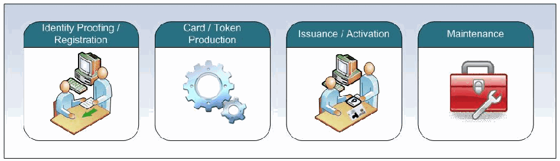

NIST SP 800-79-2 日本語訳
英語タイトル : Guidelines for the Authorization of Personal Identity Verification Card Issuers (PCI) and Derived PIV Credential Issuers (DPCI)日本語タイトル : PIVカード発行者および派生PIV認証情報発行者の認可
公開日 : 2015-07-30
原文URL : https://csrc.nist.gov/pubs/sp/800/79/2/final
翻訳編集 : 自動生成（有志による非公式の日本語訳）, 原文取得日 : 2026-10-01, 訳文 : 755 / 755 ブロック
[要約] SP 800-79-2 は、PIVカードおよび派生PIV認証情報の発行者の信頼性を評価し、認可するためのガイドラインを示す文書です。発行者は個人情報を保管し、HSPD-12に基づく標準に従って認証情報を発行するため、評価と認可の主な対象となり、必要な保証水準を確認する手順が示されます。すべての連邦組織に適用され、FIPS 201-2との整合を望む他の組織も使用でき、発行者が評価基準を満たさない場合は運用を停止しなければならないとされています。
NIST Special Publication 800-79-2
NIST Special Publication 800-79-2
Guidelines for the Authorization of Personal Identity
認可に関するガイドライン：個人識別
Verification Card Issuers (PCI) and Derived PIV Credential Issuers (DPCI)
検証カード発行者（PCI）および派生PIV認証情報発行者（DPCI）
Hildegard Ferraiolo Ramaswamy Chandramouli Nabil Ghadiali Jason Mohler Scott Shorter
Hildegard Ferraiolo、Ramaswamy Chandramouli、Nabil Ghadiali、Jason Mohler、Scott Shorter
This publication is available free of charge from: http://dx.doi.org/10.6028/NIST.SP.800-79-2
本書は次のURLから無料で入手できます：http://dx.doi.org/10.6028/NIST.SP.800-79-2
I N F O R M A T I O N S E C U R I T Y
情報セキュリティ
［NIST のロゴ。公的な標章のため、この非公式サイトには掲載していない。原本 PDF を参照。］
NIST Special Publication 800-79-2
NIST Special Publication 800-79-2
Guidelines for the Authorization of Personal Identity Verification Card Issuers (PCI) and Derived PIV Credential Issuers (DPCI)
個人識別検証カード発行者（PCI）および派生PIV資格情報発行者（DPCI）の認可に関するガイドライン
Hildegard Ferraiolo Ramaswamy Chandramouli Computer Security Division Information Technology Laboratory
Hildegard Ferraiolo Ramaswamy Chandramouli コンピュータセキュリティ部門 情報技術研究所
Nabil Ghadiali National Gallery of Art
Nabil Ghadiali National Gallery of Art
Jason Mohler Scott Shorter Electrosoft Services, Inc
Jason Mohler Scott Shorter Electrosoft Services, Inc
This publication is available free of charge from: http://dx.doi.org/10.6028/NIST.SP.800-79-2
本書は次のURLから無料で入手できます：http://dx.doi.org/10.6028/NIST.SP.800-79-2
July 2015
2015年7月
U.S. Department of Commerce Penny Pritzker, Secretary
米国商務省 Penny Pritzker 長官
National Institute of Standards and Technology Willie May, Under Secretary of Commerce for Standards and Technology and Director
米国国立標準技術研究所 Willie May 商務次官（標準技術担当）兼NIST所長
Authority
権限
This publication has been developed by National Institute of Standards Technology (NIST) in accordance with its statutory responsibilities under the Federal Information Security Modernization Act (FISMA) of 2014, 44 U.S.C. § 3541 et seq., Public Law (P.L.) 113-283. NIST is responsible for developing information security standards and guidelines, including minimum requirements for federal information systems, but such standards and guidelines shall not apply to national security systems without the express approval of appropriate federal officials exercising policy authority over such systems. This guideline is consistent with the requirements of the Office of Management and Budget (OMB) Circular A-130, Section 8b(3), Securing Agency Information Systems, as analyzed in Circular A-130, Appendix IV: Analysis of Key Sections. Supplemental information is provided in Circular A-130, Appendix III, Security of Federal Automated Information Resources.
本書は、2014年連邦情報セキュリティ近代化法（FISMA）、合衆国法典第44編第3541条以下、および公法（P.L.）113-283に基づく法定責任に従い、米国国立標準技術研究所（NIST）が作成した。NISTは、連邦情報システムに対する最低要件を含む情報セキュリティ標準およびガイドラインを策定する責任を負う。ただし、国家安全保障システムについて政策権限を行使する適切な連邦政府職員の明示的な承認がない限り、これらの標準およびガイドラインは同システムに適用されない。本ガイドラインは、行政管理予算局（OMB）通達A-130第8b(3)節「機関情報システムの保護」に整合しており、その分析は同通達の付録IV「主要節の分析」に記載されている。補足情報は、同通達の付録III「連邦自動化情報資源のセキュリティ」に示されている。
Nothing in this publication should be taken to contradict the standards and guidelines made mandatory and binding on Federal agencies by the Secretary of Commerce under statutory authority. Nor should these guidelines be interpreted as altering or superseding the existing authorities of the Secretary of Commerce, Director of the OMB, or any other Federal official. This publication may be used by nongovernmental organizations on a voluntary basis and is not subject to copyright in the United States. Attribution would, however, be appreciated by NIST.
本書のいかなる内容も、商務長官が法定の権限に基づいて連邦機関に対し強制力および拘束力を持たせた標準およびガイドラインに反するものと解釈すべきではない。また、これらのガイドラインは、商務長官、OMB長官、またはその他の連邦政府職員の既存の権限を変更するもの、またはそれらに取って代わるものと解釈すべきではない。本書は、非政府組織が任意に使用してもよく、米国内では著作権の対象とならない。ただし、NISTへの帰属表示があれば歓迎する。
National Institute of Standards and Technology Special Publication 800-79-2 Natl. Inst. Stand. Technol. Spec. Publ. 800-79-2, 120 pages (July 2015) http://dx.doi.org/10.6028/NIST.SP.800-79-2 CODEN: NSPUE2
National Institute of Standards and Technology Special Publication 800-79-2 Natl. Inst. Stand. Technol. Spec. Publ. 800-79-2, 120 pages (July 2015) http://dx.doi.org/10.6028/NIST.SP.800-79-2 CODEN: NSPUE2
This publication is available free of charge from: http://dx.doi.org/10.6028/NIST.SP.800-79-2
本書は次のURLから無料で入手できます：http://dx.doi.org/10.6028/NIST.SP.800-79-2
Certain commercial entities, equipment, or materials may be identified in this document in order to describe an experimental procedure or concept adequately. Such identification is not intended to imply recommendation or endorsement by NIST, nor is it intended to imply that the entities, materials, or equipment are necessarily the best available for the purpose.
本書では、実験的な手順や概念を適切に説明するため、特定の商業的主体、機器、または資材を明記している場合がある。このような明記は、NISTによる推奨または支持を意味するものではなく、それらの主体、資材、または機器が当該目的に最適であることを意味するものでもない。
There may be references in this publication to other publications currently under development by NIST in accordance with its assigned statutory responsibilities. The information in this publication, including concepts and methodologies, may be used by federal agencies even before the completion of such companion publications. Thus, until each publication is completed, current requirements, guidelines, and procedures, where they exist, remain operative. For planning and transition purposes, Federal agencies may wish to closely follow the development of these new publications by NIST.
本書では、NISTが法令で定められた責務に従って策定中の他の刊行物に言及している場合がある。概念や方法論を含む本書の情報は、そうした関連刊行物の完成前であっても連邦機関が使用してよい。したがって、各刊行物が完成するまでは、現行の要件、ガイドライン、手順が存在する場合には、それらが引き続き有効である。計画および移行の目的から、連邦機関はNISTによるこれらの新しい刊行物の策定状況を注意深く追うことが望ましい場合がある。
Organizations are encouraged to review all draft publications during public comment periods and provide feedback to NIST. All NIST Computer Security Division publications, other than the ones noted above, are available at http://csrc.nist.gov/publications.
各組織には、パブリックコメント期間中にすべての草案を確認し、NISTにフィードバックを提供することが奨励される。上記の文書を除くNISTコンピュータセキュリティ部門のすべての文書は、http://csrc.nist.gov/publications で入手できる。
Comments on this publication may be submitted to:
本書に対するコメントは、次の宛先に提出できる。
National Institute of Standards and Technology Attn: Computer Security Division, Information Technology Laboratory 100 Bureau Drive (Mail Stop 8930) Gaithersburg, MD 20899-8930 Email: piv_comments@nist.gov
National Institute of Standards and Technology Attn: Computer Security Division, Information Technology Laboratory 100 Bureau Drive (Mail Stop 8930) Gaithersburg, MD 20899-8930 Email: piv_comments@nist.gov
Reports on Computer Systems Technology
コンピューターシステム技術に関する報告書
The Information Technology Laboratory (ITL) at the National Institute of Standards and Technology (NIST) promotes the U.S. economy and public welfare by providing technical leadership for the Nation’s measurement and standards infrastructure. ITL develops tests, test methods, reference data, proof of concept implementations, and technical analyses to advance the development and productive use of information technology. ITL’s responsibilities include the development of management, administrative, technical, and physical standards and guidelines for the cost-effective security and privacy of other than national security-related information in federal information systems. The Special Publication 800-series reports on ITL’s research, guidelines, and outreach efforts in information system security, and its collaborative activities with industry, government, and academic organizations.
米国国立標準技術研究所（NIST）の情報技術研究所（ITL）は、米国の計測・標準基盤に技術的リーダーシップを提供し、米国経済と社会福祉の向上を促進している。ITLは、情報技術の発展と有効利用を推進するため、試験、試験方法、参照データ、概念実証実装、技術分析を開発する。ITLの責務には、国家安全保障に関係しない連邦情報システムの情報セキュリティとプライバシーを費用対効果よく確保するための管理、運用、技術、物理に関する標準およびガイドラインの策定が含まれる。特別刊行物800シリーズは、情報システムセキュリティに関するITLの研究、ガイドライン、普及活動、および産業界、政府、学術機関との協働活動を報告するものである。
Abstract
概要
The purpose of this Special Publication is to provide appropriate and useful guidelines for assessing the reliability of issuers of Personal Identity Verification (PIV) Cards and Derived PIV Credentials. These issuers store personal information and issue credentials based on Office of Management and Budget (OMB) policies and on the standards published in response to Homeland Security Presidential Directive 12 (HSPD-12) and therefore are the primary target of the assessment and authorization under this guideline. The reliability of an issuer is of utmost importance when one organization (e.g., a federal agency) is required to trust the identity credentials of individuals that were created and issued by another federal agency. This trust will only exist if organizations relying on the credentials issued by a given organization have the necessary level of assurance that the reliability of the issuing organization has been established through a formal authorization process.
本特別刊行物は、個人識別検証（PIV）カードおよび派生PIV資格情報の発行者の信頼性を評価するため、適切で有用なガイドラインを提供することを目的とする。これらの発行者は個人情報を保管し、行政管理予算局（OMB）の方針および国土安全保障大統領指令12（HSPD-12）に応じて公表された標準に基づいて資格情報を発行するため、本ガイドラインに基づく評価および認可の主な対象となる。ある組織（例：連邦機関）が、別の連邦機関によって作成・発行された個人の本人確認用資格情報を信頼しなければならない場合、発行者の信頼性は極めて重要である。その組織が発行した資格情報に依拠する組織が、正式な認可プロセスによって発行組織の信頼性が確立されたという必要な保証水準を得ている場合にのみ、この信頼は成立する。
Keywords
キーワード
Assessment; Authorization; Controls; Derived PIV Credentials; Issuer; personal identity verification; PIV card
評価、認可、管理策、派生PIV認証情報、発行者、個人識別検証、PIVカード
Acknowledgments
謝辞
The authors wish to thank their colleagues who contributed to this document’s development and reviewed its many versions. The authors also gratefully acknowledge and appreciate the many comments and contributions made by government organizations, private organizations, and individuals in providing direction and assistance in the development of this document.
本書の作成に貢献し、幾度にもわたる草案をレビューした同僚に、著者一同は感謝する。また、本書の作成に方向性を示し、支援するために、政府機関、民間組織、個人から寄せられた数多くの意見と貢献にも深く感謝する。
Trademark Information
商標に関する情報
All registered trademarks or trademarks belong to their respective organizations.
登録商標および商標はすべて、それぞれの組織に帰属する。
EXECUTIVE SUMMARY
エグゼクティブサマリー
Homeland Security Presidential Directive 12 ([HSPD-12]), dated August 27, 2004, established a policy for creation, issuance, and use of personal identification credentials in the Federal Government. The Directive requires the development and use of a standard for secure and reliable forms of identification for federal employees and contractors. The Personal Identity Verification (PIV) specifications of the resulting standard (Federal Information Processing Standard (FIPS) 201) is the foundation for securely identifying every individual seeking access to valuable and sensitive federal resources, including buildings, information systems, and computer networks. The implementation of PIV specifications, in turn, involves operations such as the collection, access protection, and dissemination of personal information, which itself requires privacy protection.
2004年8月27日付の国土安全保障大統領指令12（[HSPD-12]）は、連邦政府における個人識別用資格情報の作成、発行、使用に関する方針を定めた。同指令は、連邦職員および請負業者を安全かつ確実に識別するための標準を策定し、使用することを求めている。この標準（連邦情報処理標準（FIPS）201）の個人識別検証（PIV）仕様は、庁舎、情報システム、コンピューターネットワークなど、価値が高く機微な連邦政府資源へのアクセスを求めるすべての個人を安全に識別する基盤である。一方、PIV仕様の実装には、個人情報の収集、アクセス保護、配布などの運用が伴い、それらの情報自体にもプライバシー保護が必要となる。
NIST developed and published FIPS 201, Personal Identity Verification (PIV) of Federal Employees and Contractors, as well as several NIST Special Publications (SPs) to provide additional specifications and supporting information in response to [HSPD-12]. These documents provide the required foundation for standardizing the processes related to the adoption and use of government-wide personal identification credentials as a means to verify the identity of the credential holders.
NISTは、[HSPD-12]への対応として、連邦職員および請負業者の個人識別検証（PIV）を定めるFIPS 201と、追加仕様および支援情報を提供する複数のNIST特別刊行物（SP）を作成・公表した。これらの文書は、政府全体で個人識別用認証情報を採用・利用するプロセスを標準化し、その所持者の本人確認に用いるための基盤となる。
In light of the requirements for both improved security and protection of personal privacy, [HSPD-12] established four control objectives, one of which includes the call for forms of identification that are “issued by providers whose reliability has been established by an official accreditation process.” In response, Appendix A.1 of FIPS 201 specifies that NIST “…develop a new accreditation methodology that is objective, efficient, and will result in consistent and repeatable accreditation decisions…” This led to development of NIST SP 800-79 in 2005, Guidelines for the Accreditation of Personal Identity Verification Card Issuers.1
セキュリティの向上と個人プライバシー保護の双方が求められることを踏まえ、[HSPD-12]は4つの管理目標を定めた。その1つは、「信頼性が公式な認定プロセスによって確立された」提供者が発行する識別手段を求めるものである。これを受けてFIPS 201付録A.1は、NISTが「客観的かつ効率的で、一貫性と再現性のある認定判断につながる、新たな認定方法を開発する」よう定めている。これにより、2005年にNIST SP 800-79「個人識別検証カード発行者の認定に関するガイドライン」が作成された。1
The update to this Special Publication (SP) reflects the second revision of FIPS 201 published in 2013[FIPS 201-2]. It provides appropriate and useful guidelines for assessing the reliability of issuers of PIV Cards and provides guidelines for issuers of the newly introduced Derived PIV Credential for mobile devices.2 The reliability of an issuer is of utmost importance when an organization (e.g., a federal agency) is required to trust the identity credentials of individuals that were created and issued by another organization. This trust only exists if the relying organization has the necessary level of assurance of the issuing organization that the credential is established via a formal authorization process and thus reliable.
本特別刊行物（SP）の今回の更新は、2013年に公表されたFIPS 201の第2改訂版 [FIPS 201-2] を反映している。本書は、PIVカード発行者の信頼性を評価するための適切で有用なガイドラインに加え、新たに導入されたモバイルデバイス向け派生PIV認証情報の発行者に関するガイドラインを示す。2発行者の信頼性は、ある組織（例：連邦機関）が、別の組織によって作成・発行された個人の本人確認用認証情報を信頼する必要がある場合に極めて重要である。この信頼は、依拠する組織が、認証情報が正式な認可プロセスを通じて確立され、それによって発行組織が信頼できるという十分な保証を得ている場合にのみ存在する。
This SP provides an assessment and authorization methodology for verifying that issuers are adhering to standards and implementation directives developed under [HSPD-12]. The salient features of the methodology are:
本SPは、[HSPD-12]に基づき策定された標準および実施指令に発行者が従っていることを確認するための、評価および認可の方法を示す。この方法の主な特徴は次のとおりである。
(i) Controls derived from specific requirements in FIPS 201-2 and relevant documents for PIV Card issuer (PCI) and Derived PIV Credential issuer (DPCI); (ii) Procedures for verifying and monitoring adherence to the requirements through an assessment of the implementation of the controls (control assessment); and (iii) Guidance for evaluating the result of an assessment in order to arrive at the accreditation decision.
(i) PIVカード発行者（PCI）および派生PIV認証情報発行者（DPCI）について、FIPS 201-2および関連文書の特定の要件から導かれる管理策。(ii) 管理策の実装を評価すること（管理策評価）によって、要件への準拠を確認し、監視する手順。(iii) 認定の判断に至るために評価結果を検討するための指針。
Authorizing an issuer based on the assessment and authorization methodology in this document establishes the reliability of the issuer.
本書の評価および認可方法に基づいて発行者を認可することで、その発行者の信頼性が確立される。
Authorization is the basis for establishing trust in an issuer and requires that the assessment be thorough and comprehensive. Careful planning, preparation, and commitment of time, energy, and resources are required. These guidelines are designed to assist agencies in creating the needed roles, assigning responsibilities, developing an acceptable operations plan, drawing the issuer’s authorization boundary, evaluating the findings of all control assessments, and making a proper authorization decision. Realizing that organizations may vary significantly in how they choose to structure their operations, these guidelines have been developed to support organizational flexibility, and are designed to minimize the effort needed to assess, authorize, and monitor the reliability of the issuer.
認可は発行者への信頼を確立する基盤であり、評価が徹底的かつ包括的であることを要する。慎重な計画と準備、ならびに時間、労力、資源の投入が必要となる。本ガイドラインは、機関が必要な役割を設けて責任を割り当て、適切な運用計画を策定し、発行者の認可境界を定め、すべての管理策評価の結果を検討し、適切な認可判断を下せるよう支援する。組織によって運用体制の構成が大きく異なる可能性を踏まえ、本ガイドラインは組織の柔軟性を支援し、発行者の信頼性の評価、認可、監視に必要な労力を最小限に抑えるよう設計されている。
In addition to flexibility and efficiency, the authorization methodology defined in these guidelines generates assessment findings and resulting authorization decisions that are consistent and repeatable. These characteristics provide assurance to an organization’s management that when an issuer has been authorized based on these guidelines they can be trusted as a provider of secure and reliable identification credentials as required by [HSPD-12].
本ガイドラインで定める認可方法は、柔軟性と効率性に加え、一貫性と再現性のある評価結果および認可判断を生み出す。これらの特性により、本ガイドラインに基づいて認可された発行者は、[HSPD-12]が求める安全で信頼できる識別用認証情報の提供者として信頼できることを、組織の管理者に保証できる。
This document shall be used by both small and large organizations and can be applied whether issuance processes are:
本書は規模の大小を問わず組織が使用しなければならず、発行プロセスが次のいずれの場合にも適用できる。
•Centrally located;
•一元的に配置されている場合。
•Geographically dispersed; or
•地理的に分散している場合。または
•Outsourced in varying degrees to another organization(s) or service provider(s).
•他の組織またはサービスプロバイダーに、さまざまな程度で委託されている場合。
TABLE OF CONTENTS
目次
LIST OF TABLES
表の一覧
LIST OF FIGURES
図の一覧
1. Introduction
1. はじめに
In order to enhance security, increase Federal Government efficiency, reduce identity fraud, and protect personal privacy, Homeland Security Presidential Directive 12 ([HSPD-12]), Policy for a Common Identification Standard for Federal Employees and Contractors was issued on August 27, 2004. This Directive established a federal policy to create and use government-wide secure and reliable forms of identification for federal employees and contractors. It further defined secure and reliable forms of identification as ones that—
セキュリティの強化、連邦政府の効率向上、ID詐欺の削減、および個人のプライバシー保護を目的として、2004年8月27日に国土安全保障大統領指令12（[HSPD-12]）「連邦職員および請負業者の共通識別標準に関する方針」が発令された。この指令は、連邦職員および請負業者に対して、政府全体で使用する安全かつ信頼できる識別形式を作成し使用する連邦方針を確立した。さらに、安全かつ信頼できる識別形式を次のように定義した。
•Are issued based on sound criteria for verifying an individual’s identity;
•個人のIDを検証するための健全な基準に基づいて発行される。
•Are strongly resistant to identity fraud, tampering, counterfeiting, and terrorist exploitation;
•ID詐欺、改ざん、偽造およびテロリストによる悪用に対して強い耐性を有する。
•Can be rapidly authenticated electronically; and
•電子的に迅速な認証が可能である。および
•Are issued only by providers whose reliability has been established by an official accreditation process.
•公式な認定プロセスによって信頼性が確立された発行者のみが発行する。
NIST developed and published Federal Information Processing Standard (FIPS) 201, Personal Identity Verification (PIV) of Federal Employees and Contractors, and several Special Publications providing additional specifications in response to [HSPD-12]. These documents provide the foundation for Government personal identification, verification, and access control systems.
NISTは、連邦情報処理標準（FIPS）201「連邦職員および請負業者の個人ID検証（PIV）」および[HSPD-12]に応じて追加仕様を提供する複数の特別出版物を策定・公開した。これらの文書は、政府の個人識別、検証およびアクセス制御システムの基盤となる。
Appendix A.1 of FIPS 201-2 states the following:
FIPS 201-2の付録A.1には、次の記載がある。
“…[HSPD-12] requires that all cards be issued by providers whose reliability has been established by an official accreditation process.”
「…[HSPD-12]は、すべてのカードが、公式な認定プロセスによって信頼性が確立された発行者によって発行されることを要求する。」
To determine consistency in operations of issuers of PIV Cards, NIST developed a set of attributes as the basis of reliability assessment and published the first version of this document in July 2005. Subsequent lessons learned in various agencies’ implementation, experience in credential management and PIV Card issuance together with the evolution of PIV Card issuing organizations motivated NIST to develop an updated methodology that is objective, efficient, and resulted in a consistent and repeatable authorization decisions. These developments led NIST to publish the first revision to SP 800-79 (i.e., SP 800-79-1) in June 2008. In 2013, FIPS 201 was superseded by FIPS 201 revision 2 (FIPS 201-2). FIPS 201-2 incorporates additional lessons learned from PIV Card issuers and allows for mobile device-integrated PIV credentials. This revision reflects the update to FIPS 201-2 and its new associated publication SP 800-157, Guidelines for Derived Personal Identity Verification (PIV) Credentials [SP800-157], which details the issuance and use of Derived PIV Credentials3 that are integrated in mobile devices.
PIVカード発行者の運用の一貫性を判断するため、NISTは信頼性評価の基礎となる属性群を策定し、本書の初版を2005年7月に公開した。各機関での実装から得たその後の教訓、クレデンシャル管理およびPIVカード発行における経験、ならびにPIVカード発行組織の進化を踏まえ、NISTは客観的かつ効率的で、一貫性と再現性のある認可判断をもたらす更新された手法を策定した。これらの進展を受け、NISTは2008年6月にSP 800-79の第1改訂版（すなわちSP 800-79-1）を公開した。2013年、FIPS 201は改訂第2版（FIPS 201-2）に置き換えられた。FIPS 201-2は、PIVカード発行者から得た追加の教訓を取り入れ、モバイルデバイスに統合されたPIVクレデンシャルを認めている。本改訂は、FIPS 201-2の更新および、それに関連する新刊行物SP 800-157「派生個人ID検証（PIV）クレデンシャルに関するガイドライン」[SP800-157]を反映する。同文書では、モバイルデバイスに統合される派生PIVクレデンシャル3の発行および使用について詳述する。
Unless there is a need to differentiate between PCIs and DPCIs, this document uses the common term issuer to refer to both types of issuers. Similarly, Derived PIV Credential and the PIV Card’s credentials are collectively referred to as credentials, unless a distinction is made. An issuer is considered to be owned and managed by an organization which may be a federal department, agency, or a private entity authorized by a federal department or agency. Ensuring the reliability of an issuer is of critical importance in light of the security and privacy implications of credentials used for meeting the objective of secure and reliable forms of identification to millions of employees and contractors. [HSPD-12] and its standards and guidelines were developed to address a range of security concerns, including those posed by terrorists in a post-9/11 world. Providing a comprehensive set of standards for controlling access to the physical and logical resources through the use of standard credentials, provides the assurance that certain pre-defined levels of security can be achieved. However, it requires organizations to implement and use the standards in a consistent and reliable manner. An organization must have confidence in the credentials it issues to its own employees and contractors. Possibly more importantly, since [HSPD-12] requires a common inter-agency-interoperable standard, all organizations need to have confidence in the identity credentials issued by other organizations. This confidence can only be established if the issuer’s functions in those other organizations are assessed and authorized. Thus, authorization of the issuer plays a key role in meeting the objectives of [HSPD-12].
PCIとDPCIを区別する必要がない場合、本書では両方の発行者を指す共通用語として「発行者」を用いる。同様に、区別する必要がない場合、派生PIVクレデンシャルとPIVカードのクレデンシャルを総称して「クレデンシャル」とする。発行者は、連邦省庁、機関、または連邦省庁もしくは機関から認可された民間主体である組織によって所有・管理されるものとみなす。何百万人もの職員および請負業者に安全かつ信頼できる識別形式を提供する目的で使用されるクレデンシャルには、セキュリティおよびプライバシー上の影響があるため、発行者の信頼性を確保することは極めて重要である。[HSPD-12]ならびにその標準およびガイドラインは、9/11後の世界におけるテロリストの脅威を含む、さまざまなセキュリティ上の懸念に対処するために策定された。標準クレデンシャルを用いて物理的および論理的資源へのアクセスを制御する包括的な標準群を提供することで、所定のセキュリティレベルを達成できるという保証が得られる。ただし、組織は一貫性と信頼性をもって標準を実装し、使用しなければならない。組織は自らの職員および請負業者に発行するクレデンシャルを信頼できなければならない。さらに重要とも考えられるのは、[HSPD-12]が機関間で相互運用可能な共通標準を要求するため、すべての組織が他組織発行のIDクレデンシャルを信頼できる必要があることである。この信頼は、他組織における発行者の機能を評価し、認可した場合にのみ確立できる。したがって、発行者の認可は[HSPD-12]の目的達成に重要な役割を果たす。
NIST has considerable experience in the development of assessment and authorization methodologies, most significantly with the widely accepted approach to authorization in SP 800-37-1, Guide for Applying the Risk Management Framework to Federal Information Systems [SP 800-37-1], and its family of related documents. While [SP 800-37-1] is focused on the authorization of the security of information systems, rather than the authorization of the reliability of an issuer, it does offer a practical foundation for the authorization programs envisioned by [HSPD-12]. This document utilizes the various aspects of [SP 800-37-1] and applies them to authorizing the reliability of an issuer. Authorization of an issuer requires prior assessment of the security of all information systems used by that issuer in accordance with [SP 800-37-1]. PIV Cards and Derived PIV Credentials are typically issued through the use of information systems and hence an assessment of their security (through the methodology in [SP 800-37-1]) is critical in determining the ability to comply with [FIPS 201-2] requirements.
NISTは評価および認可手法の策定に豊富な経験を有しており、とりわけSP 800-37-1「連邦情報システムへのリスク管理フレームワーク適用ガイド」[SP 800-37-1]および関連文書群で広く受け入れられている認可手法に実績がある。[SP 800-37-1]は、発行者の信頼性ではなく情報システムのセキュリティ認可に焦点を当てるものの、[HSPD-12]が想定する認可プログラムの実用的な基盤となる。本書は[SP 800-37-1]のさまざまな側面を活用し、発行者の信頼性の認可に適用する。発行者の認可には、[SP 800-37-1]に従って、その発行者が使用するすべての情報システムのセキュリティを事前に評価する必要がある。PIVカードおよび派生PIVクレデンシャルは通常、情報システムを用いて発行されるため、[FIPS 201-2]の要件に適合する能力を判断するうえで、そのセキュリティ評価（[SP 800-37-1]の手法による）が不可欠である。
One difference between the authorization of the security of information systems and the authorization of the reliability of an issuer is that an organization has considerable flexibility in how they prepare for an [SP 800-37-1] authorization (particularly in implementing security controls), but have little room for variation for an SP 800-79-2 authorization. Much of the flexibility in [SP 800-37-1] comes from the necessity of acceptable variations in security controls, since individual information systems within varied environments may have significantly different security requirements. Conversely, the desire for standardization in [HSPD-12] has led to the development of a stable set of requirements. There may be some flexibility in how a requirement is met, but a majority of requirements must be satisfied in a uniform manner in order to deem an issuer as reliable. Allowing too much latitude in how a requirement is met undermines its reliability.
情報システムのセキュリティ認可と発行者の信頼性認可との違いの一つは、[SP 800-37-1]の認可準備（特にセキュリティ管理策の実装）について組織にはかなりの柔軟性がある一方、SP 800-79-2の認可にはほとんど差異の余地がないことである。[SP 800-37-1]における柔軟性の多くは、さまざまな環境にある個々の情報システムではセキュリティ要件が大きく異なり得るため、許容可能なセキュリティ管理策の差異が必要であることに由来する。これに対し、[HSPD-12]における標準化の必要性から、安定した要件群が策定された。要件を満たす方法にはある程度の柔軟性があり得るが、発行者を信頼できると判断するには、大半の要件を統一的に満たさなければならない。要件の達成方法に過度の裁量を認めると、信頼性が損なわれる。
PIV Credential and restricted to Public Key Infrastructure (PKI) Credentials.
PIV資格情報であり、かつ公開鍵基盤（PKI）資格情報に限定される。
Although organizations may feel constrained by the uniformity required by FIPS 201-2, standardization greatly contributes to achieving the objectives of [HSPD-12] across issuer implementations. For all organizations to accept PIV Cards or Derived PIV Credentials of other organizations, one set of rules (i.e., FIPS 201-2) must be followed by all PIV system participants. This Special Publication provides a way of determining if the participants are following these rules. Assessment methods that are consistent, reliable, and repeatable provide a basis for determining the reliability and capability of issuers of PIV Cards and Derived PIV Credentials, which herein is defined as consistent adherence to the PIV standards. In particular, if an issuer meets the requirements of FIPS 201-2 and relevant documents as verified through applicable assessment procedures and maintain consistency of their operations with respect to meeting these criteria, they can be considered reliable as is required by [HSPD-12].
組織はFIPS 201-2が求める統一性に制約を感じる場合があるが、標準化は発行者の実装全体を通じて[HSPD-12]の目的を達成するうえで大きく貢献する。すべての組織が他組織のPIVカードまたは派生PIVクレデンシャルを受け入れるには、すべてのPIVシステム参加者が一組の規則（すなわちFIPS 201-2）に従わなければならない。本特別出版物は、参加者がこれらの規則に従っているかを判断する方法を提供する。一貫性、信頼性および再現性のある評価方法は、ここでPIV標準への一貫した準拠と定義する、PIVカードおよび派生PIVクレデンシャルの発行者の信頼性と能力を判断する基礎となる。特に、発行者が適用される評価手順によってFIPS 201-2および関連文書の要件を満たすことが検証され、それらの基準への適合に関して運用の一貫性を維持すれば、[HSPD-12]が要求する信頼できる発行者とみなすことができる。
The objectives of the guidelines in this document are to—
本書のガイドラインの目的は次のとおりである。
•Outline the requirements for PIV Card Issuers and for the Derived PIV Credentials Issuers, the rationale for the requirements and the assessment procedures required to determine the satisfaction of those requirements through a combination of policies, procedures, and operations.
•PIVカード発行者および派生PIVクレデンシャル発行者の要件、その根拠、ならびに方針、手順および運用を組み合わせて要件の充足を判断するために必要な評価手順を概説する。
•Describe an authorization methodology that provides a framework for organizing the requirements and assessment procedures stated above and at the same time provides coverage for all the control objectives stated in [HSPD-12].
•上記の要件および評価手順を整理する枠組みを提供すると同時に、[HSPD-12]に定める管理目標のすべてを網羅する認可方法論を記述すること。
•Emphasize the role of risk associated with an authorization decision, based on assessment outcomes that take into account the organization’s mission.
•組織の使命を考慮した評価結果に基づく、認可判断に伴うリスクの役割を強調すること。
1.1 Applicability, Intended Audience, and Usage
1.1 適用範囲、想定読者および使用法
This document is applicable to, and shall be used by all federal organizations. It may also be used by any other organization (e.g., state and local government, educational, non-profit) desiring close alignment with FIPS 201-2 and associated PIV credentials.
本書はすべての連邦組織に適用され、使用されなければならない。また、FIPS 201-2および関連するPIVクレデンシャルとの緊密な整合を望む他の組織（例：州・地方政府、教育機関、非営利組織）も使用できる。
All federal organizations are required to adopt [HSPD-12] and implement FIPS 201-2. They must use SP 800-79-2 to assess the adequacy of their implementations as well as the reliability of either the directly-controlled or sub-contracted services involved in creating and issuing the mandatory PIV Cards and the optional Derived PIV Credentials (if implemented).
すべての連邦組織は[HSPD-12]を採用し、FIPS 201-2を実装することが求められる。義務付けられたPIVカードおよび任意の派生PIVクレデンシャル（実装する場合）の作成・発行に関与する、直接管理または下請けのサービスの実装の適切性と信頼性を評価するため、SP 800-79-2を使用しなければならない。
SP 800-79-2 is consistent and compatible with the control objectives in [HSPD-12], [FIPS 201-2], and [SP 800-37-1]. SP 800-79-2 includes a number of roles, requirements, definitions, specifications, and procedures needed to assess the reliability of an issuing organization. In situations where an issuer fails to meet the assessment criteria in SP 800-79-2, they must immediately halt operations.
SP 800-79-2は、[HSPD-12]、[FIPS 201-2]、および[SP 800-37-1]の管理目標と整合し、互換性がある。SP 800-79-2には、発行組織の信頼性を評価するために必要な役割、要件、定義、仕様、手順が数多く含まれている。発行者がSP 800-79-2の評価基準を満たさない場合、発行者は直ちに運用を停止しなければならない。
Once an issuer is authorized to operate using the guidelines from 800-79-2, trust can be established in the issued PIV Card or Derived PIV Credential throughout its lifecycle. Hence, organizations that accept PIV Cards or Derived PIV Credentials that do not follow these guidelines, are doing so at their own risk since the reliability of their operations cannot be assured.
発行者がSP 800-79-2のガイドラインに従って運用認可を受けると、発行されたPIVカードまたは派生PIVクレデンシャルのライフサイクル全体にわたり信頼を確立できる。したがって、これらのガイドラインに従わないPIVカードまたは派生PIVクレデンシャルを受け入れる組織は、自らのリスクでそうすることになる。その運用の信頼性は保証できないためである。
The keywords "MUST", "MUST NOT", "REQUIRED", "SHALL", "SHALL NOT", "SHOULD", "SHOULD NOT", "RECOMMENDED", "MAY", and "OPTIONAL" in this specification are to be interpreted as described in IETF RFC 2119.
この仕様におけるキーワード "MUST"、"MUST NOT"、"REQUIRED"、"SHALL"、"SHALL NOT"、"SHOULD"、"SHOULD NOT"、"RECOMMENDED"、"MAY"および"OPTIONAL"は、IETF RFC 2119に記載されたとおりに解釈する。
1.2 Changes for this Revision
1.2 本改訂における変更点
The major changes for this revision include additions and updates to issuer controls in response to new or changed requirements in FIPS 201-2. These are:
本改訂における主な変更には、FIPS 201-2の新規または変更された要件に応じた発行者管理策の追加および更新が含まれる。具体的には次のとおり。
•Inclusion of issuer controls for Derived PIV Credentials Issuers (DPCI),
•派生PIV資格情報発行者（DPCI）向けの発行者管理策の追加、
•Addition of issuer controls for issuing PIV Cards under the grace period and for issuing PIV Cards to individuals under pseudonymous identity,
•猶予期間中のPIVカード発行、および仮名IDの個人へのPIVカード発行に関する発行者管理策の追加、
•Addition of issuer controls for the PIV Card’s visual topography,
•PIVカードの視覚的外観（visual topography）に関する発行者管理策の追加、
•Provided detailed controls to address post-issuance updates for PIV Cards,
•PIVカードの発行後更新に対処する詳細な管理策の提供、
•Updated references to more recent credentialing guidance issued by Office of Personnel Management (OPM),
•人事管理局（OPM）が発行した、より新しい資格審査ガイダンスへの参照の更新、
•Addition of issuer controls with respect to the chain-of-trust records maintained by a PIV Card issuer,
•PIVカード発行者が保持する信頼の連鎖（chain-of-trust）記録に関する発行者管理策の追加、
•Modified process to include an independent review prior to authorization of issuer.
•発行者の認可に先立つ独立したレビューを含むようにプロセスを修正。
1.3 Timelines for using the revised Guidelines
1.3 改訂版ガイドラインの使用時期
This publication is effective immediately and it supersedes the previous version.
本出版物は直ちに発効し、旧版に取って代わる。
FIPS 201-2 mandates the implementation of some PIV Card features that were previously optional to implement. The standard also requires that all new or replacement PIV Cards include these previously optional features beginning September 2014 (i.e., one year publication of FIPS 201-2). These new FIPS 201-2 requirements result in the following re-authorization scenarios:
FIPS 201-2は、以前は実装が任意であった一部のPIVカード機能の実装を義務付ける。また、この標準は、2014年9月（すなわちFIPS 201-2公開から1年後）以降、新規または交換用のすべてのPIVカードに、以前は任意だったこれらの機能を含めるよう求める。これらのFIPS 201-2の新要件により、次の再認可シナリオが生じる。
•Organizations whose current Authorization to Operate (ATO) (under SP 800-79-1) covers issuance of PIV Cards with the new mandatory features of FIPS 201-2 do not have to be re-authorized under SP 800-79-2;4
•現行の運用認可（ATO）（SP 800-79-1に基づく）がFIPS 201-2の新たな必須機能を備えたPIVカードの発行を対象としている組織は、SP 800-79-2に基づいて再認可を受ける必要はない。4
•Organizations whose current ATO (under SP 800-79-1) covers issuance of PIV Cards without the new mandatory features are required to be re-authorized under SP 800-79-2.
•現行のATO（SP 800-79-1に基づく）が新たな必須機能を備えないPIVカードの発行を対象としている組織は、SP 800-79-2に基づいて再認可を受けなければならない。
Derived PIV Credentials are optional PIV credentials introduced in FIPS 201-2 and detailed in SP 800-157 Guidelines for Derived Personal Identity Verification (PIV) Credentials [SP 800-157]. The timeline for their use on mobile devices depends on Department and Agencies to achieve the ATO to issue Derived PIV Credential based on this document and on the availability of validated Derived PIV Credential tokens. No Derived PIV Credentials shall be issued unless the issuer has met the requirements of and is operating in accordance to the guidelines of SP 800-79-2.
派生PIV資格情報は、FIPS 201-2で導入され、SP 800-157『Guidelines for Derived Personal Identity Verification (PIV) Credentials』[SP 800-157]で詳述された、任意のPIV資格情報である。モバイルデバイスでの利用時期は、各省庁・機関が本書に基づき派生PIV資格情報を発行するATOを取得できるかどうか、および検証済みの派生PIV資格情報トークンが入手可能かどうかに左右される。発行者が本書の要件を満たし、SP 800-79-2のガイドラインに従って運用していない限り、派生PIV資格情報を発行してはならない。
1.4 Key Related NIST Publications
1.4 関連する主要なNIST出版物
The following NIST publications were utilized as the basis for the requirements listed in this document.
本書に記載する要件の基礎として、次のNIST出版物を使用した。
•FIPS 201-2, Personal Identity Verification (PIV) of Federal Employees and Contractors [FIPS201-2];
•FIPS 201-2『Personal Identity Verification (PIV) of Federal Employees and Contractors』[FIPS201-2]
•SP 800-37-1 Rev. 1, Guide for Applying the Risk Management Framework to Federal Information Systems: A Security Life Cycle Approach, or as amended [SP800-37];
•SP 800-37-1 Rev. 1『Guide for Applying the Risk Management Framework to Federal Information Systems: A Security Life Cycle Approach』、またはその改訂版 [SP800-37]
•SP 800-73-4, Interfaces for Personal Identity Verification (3 Parts), or as amended [SP800-73-4] Pt. 1- End Point PIV Card Application Namespace, Data Model & Representation Pt. 2- PIV Card Application Card Command Interface Pt. 3- PIV Client Application Programming Interface;
•SP 800-73-4, Interfaces for Personal Identity Verification (3 Parts)（改正を含む）[SP800-73-4] Pt. 1- End Point PIV Card Application Namespace, Data Model & Representation Pt. 2- PIV Card Application Card Command Interface Pt. 3- PIV Client Application Programming Interface。
•SP 800-76-2, Biometric Data Specification for Personal Identity Verification, or as amended [SP800-76-2];
•SP 800-76-2「個人識別検証のための生体データ仕様」、またはその改訂版 [SP800-76-2];
•SP 800-78-4, Cryptographic Algorithms and Key Sizes for Personal Identification Verification (PIV), or as amended;
•SP 800-78-4「個人識別検証（PIV）のための暗号アルゴリズムおよび鍵長」、またはその改訂版;
•SP 800-85 A-4, PIV Card Application and Middleware Interface Test Guidelines (SP800-73-4 Compliance), or as amended;
•SP 800-85 A-4『PIV Card Application and Middleware Interface Test Guidelines (SP800-73-4 Compliance)』、またはその改訂版
•SP 800-85 B-4, PIV Data Model Conformance Test Guidelines, or as amended; and
•SP 800-85 B-4「PIVデータモデル適合性試験ガイドライン」、またはその改訂版; および
•SP 800-157 Guidelines for Derived Personal Identity Verification (PIV) Credentials, or as amended [SP800-157].
•SP 800-157「派生個人識別検証（PIV）資格情報に関するガイドライン」、またはその改訂版 [SP800-157].
1.5 Organization of this Special Publication
1.5 本特別刊行物の構成
The remainder of this publication is organized as follows:
本刊行物の残りの部分は、次のように構成されている:
•Chapter 2 provides background information needed to understand issuer assessment and authorization methodology, as well as the inputs and outputs involved in the assessment of the issuance processes. These include: (i) definition of the target entities (issuer, issuer facilities, issuer boundaries); (ii) the relationship between authorization under [SP 800-37-1] and authorization under SP 800-79-2; (iii) preparatory tasks for the assessment of an issuer organization including assignment of roles and responsibilities; (iv) two alternative authorization decisions; (v) acceptance of risk in the authorization decision; and (vi) the contents of the authorization package.
•第2章では、発行者の評価および認可の方法論、ならびに発行プロセスの評価に関わる入力と出力を理解するために必要な背景情報を示す。これには、(i) 対象となる主体（発行者、発行施設、発行者の境界）の定義、(ii) [SP 800-37-1]に基づく認可とSP 800-79-2に基づく認可の関係、(iii) 役割と責任の割当てを含む、発行組織の評価の準備作業、(iv) 二つの代替的な認可判断、(v) 認可判断におけるリスクの受容、(vi) 認可パッケージの内容が含まれる。
•Chapter 3 describes the building blocks of the issuer assessment and authorization methodology, including Authorization Topics, Authorization Focus Areas, and the control requirements (issuer controls) within each area.
•第3章では、認可トピック、認可重点領域、および各領域内の管理策要件（発行者管理策）を含む、発行者評価および認可方法論の構成要素を説明する。
•Chapter 4 provides a detailed description of the assessment methods for the issuer controls whose outcomes form the basis for the authorization decision.
•第4章では、認可決定の基礎となる結果をもたらす発行者管理策の評価方法を詳述する。
•Chapter 5 describes the 4 phases of the authorization process and the tasks involved in each phase.
•第5章では、認可プロセスの4段階および各段階に含まれるタスクを説明する。
•Appendices include— (A) references; (B) glossary and acronyms; (C) issuer readiness review checklist; (D) issuer operations plan templates; (E) assessment report template; (F) sample authorization transmittal and decision letters; (G) issuer controls and assessment procedures; and (H) summary of tasks and sub-tasks.
•付録には、(A) 参考文献、(B) 用語集および略語、(C) 発行者準備状況レビュー・チェックリスト、(D) 発行者運用計画のテンプレート、(E) 評価報告書のテンプレート、(F) 認可送付状および決定通知書のサンプル、(G) 発行者管理策および評価手順、ならびに(H) タスクおよびサブタスクの概要が含まれる。
2. PREPARATION FOR ASSESSMENT AND AUTHORIZATION
2. 評価および認可の準備
This chapter presents the fundamentals of an authorization of a PIV Card Issuer (PCI) and a Derived PIV Credential Issuer (DPCI). It includes: (i) definitions of an issuer and issuing facility; (ii) outsourcing issuer services or functions; (iii) the differences between an assessment and authorization; (iv) authorization boundaries of an issuer; (v) roles and responsibilities; (vi) the relationship between authorization under [SP 800-37-1] and SP 800-79-2; (vii) preparing for the assessment; (viii) types of authorization decisions; (xi) use of risk in the authorization decision; and (x) the contents of the authorization package.
本章では、PIVカード発行者（PCI）および派生PIV資格情報発行者（DPCI）の認可の基礎を示す。これには、(i) 発行者および発行施設の定義、(ii) 発行者サービスまたは機能の外部委託、(iii) 評価と認可の相違、(iv) 発行者の認可境界、(v) 役割および責任、(vi) [SP 800-37-1] に基づく認可とSP 800-79-2に基づく認可との関係、(vii) 評価の準備、(viii) 認可決定の種類、(xi) 認可決定におけるリスクの使用、ならびに(x) 認可パッケージの内容が含まれる。
2.1 Issuer
2.1 発行者
At the highest level, an issuer provides a full set of functions required to produce, issue, and maintain PIV Cards or Derived PIV Credentials for an organization. A PCI or DPCI is considered operational if all relevant roles and responsibilities have been defined and appointed; suitable policies and compliant procedures have been implemented for all relevant PIV processes,5 including sponsorship, identity proofing/registration, adjudication, card/token production, activation/issuance, and maintenance; and information system components that are utilized for performing the above-mentioned functions (processes) have been assessed and shown to meet all technical and operational requirements prescribed in FIPS 201-2 and related documents.
最上位の水準では、発行者は、組織のためにPIVカードまたは派生PIV認証情報を作成、発行、保守するために必要な一連の機能をすべて提供する。PCIまたはDPCIが運用可能とみなされるのは、関連するすべての役割と責任が定義され、割り当てられていること、スポンサーシップ、本人確認／登録、裁定、カード／トークン製造、アクティベーション／発行、保守を含む関連するすべてのPIVプロセス5について適切な方針と準拠した手順が実装されていること、および上記の機能（プロセス）の実行に用いる情報システムコンポーネントが評価され、FIPS 201-2および関連文書に規定されたすべての技術的・運用上の要件を満たすことが示されていること、のすべてを満たす場合である。
In order to comply with Homeland Security Presidential Directive 12 ([HSPD-12]), an organization must first establish an issuer, to issue PIV Cards or Derived PIV Credentials, which conforms to and satisfies the requirements of FIPS 201-2 and related documents. The issuer must then be authorized (i.e., using the guidelines specified in this document). An organization has certain flexibility in implementing its issuance functions. It may outsource some of the required processes or establish multiple units for fulfilling these processes. Regardless of its structure, the organization is responsible for the management and oversight and maintains full responsibility for its functions as an issuer as required in [HSPD-12].
国土安全保障大統領指令12（[HSPD-12]）に準拠するため、組織はまず、FIPS 201-2および関連文書に適合し、その要件を満たすPIVカードまたは派生PIV資格情報を発行する発行者を設置しなければならない。次に、その発行者を認可しなければならない（すなわち、本書に定めるガイドラインを使用する）。組織には、発行機能の実装に一定の柔軟性がある。必要なプロセスの一部を外部委託したり、これらのプロセスを実施する複数の部署を設けたりできる。組織の構造にかかわらず、組織は管理および監督に責任を負い、[HSPD-12] の要求どおり発行者としての機能に対する全責任を保持する。
The organization must completely describe its PIV Card and/or Derived PIV Credential issuance functions in an operations plan. This comprehensive document incorporates all the information about the issuer that is needed for any independent party to review and assess the capability and reliability of its operations. An operations plan includes a description of the structure of the issuer, its facilities, any external service providers, the roles and responsibilities, policies and procedures which govern its operations, and a description of how requirements of FIPS 201-2 are being met. A template for an operations plan is provided in Appendix D.
組織は、PIVカードおよび／または派生PIV資格情報の発行機能を運用計画に完全に記述しなければならない。この包括的な文書には、独立した第三者が運用能力および信頼性をレビュー・評価するために必要となる発行者に関するすべての情報を盛り込む。運用計画には、発行者の構成、施設、外部サービスプロバイダー、役割および責任、運用を規定する方針および手順の説明、ならびにFIPS 201-2の要件をどのように満たしているかの説明を含める。運用計画のテンプレートは付録Dに示す。
2.2 Issuing Facilities
2.2 発行施設
An issuing facility is a physical site or location–including all equipment, staff, and documentation–that is responsible for carrying out one or more of the following PIV functions: (i) identity proofing/registration; (ii) card/token6 production; (iii) activation/issuance; and (iv) maintenance. An issuing facility operates under the auspices of a PIV Card or Derived PIV Credential Issuer, and implements the policies and executes procedures prescribed by the issuer for those functions sanctioned for the facility (e.g., an identity proofing/registration facility).
発行施設とは、すべての機器、職員、文書を含め、次のPIV機能の一つ以上を実施する責任を負う物理的な場所または拠点をいう。(i) 本人確認／登録、(ii) カード／トークン6の製造、(iii) アクティベーション／発行、(iv) 保守。発行施設は、PIVカード発行者または派生PIV認証情報発行者の管理・監督の下で運営され、その施設に認められた機能（例：本人確認／登録施設）について、発行者が定めた方針を実装し、手順を実行する。
Based on certain characteristics (e.g., size, geographic locations, the organization(s) that it supports), an issuer may have its services and functions provided centrally, distributed across multiple locations, or may even be able to perform the entire issuance process remotely.7 For example, in the case of PIV Card issuance, a geographically dispersed organization may decide to have identity proofing/registration and activation/issuance functions performed in different facilities in different parts of the country so that applicants can minimize travel. In this example, the different issuing facilities fall under the purview (policy, management) of a single issuer which encompasses all the functions necessary to issue PIV Cards.
特定の特性（例: 規模、地理的位置、支援対象の組織）に基づき、発行者はサービスおよび機能を一元的に提供する場合、複数の場所に分散して提供する場合、または発行プロセス全体を遠隔で実施できる場合がある。7例えばPIVカードの発行では、地理的に広域に分散した組織が、申請者の移動を最小限にするため、本人確認／登録機能とアクティベーション／発行機能を国内の異なる地域にある別々の施設で実施することを決定する場合がある。この例では、各発行施設は、PIVカードの発行に必要なすべての機能を包含する単一の発行者の管轄（方針および管理）下に置かれる。
Within that issuer, the geographically dispersed issuing facilities have specific responsibilities and are under the direct management control of the issuer.
その発行者の下で、地理的に分散した発行施設はそれぞれ固有の責任を持ち、発行者の直接的な管理統制下にある。
2.3 Outsourcing of Issuing Functions
2.3 発行機能の外部委託
An organization may outsource its issuing functions to one or more organizations. As the complexity and cost of new technology increase, the organization may decide that the most efficient and cost-effective solution for implementing [HSPD-12] is to seek the services of an external service provider. An external service provider may be a Federal Government agency, a private entity, or some other organization that offers services or functions necessary to issue PIV Cards or Derived PIV Credentials.
組織は、発行機能を一つ以上の組織に外部委託してよい。新技術の複雑さとコストが増すにつれ、[HSPD-12] を実装する上で最も効率的かつ費用対効果の高い解決策として、外部サービスプロバイダーのサービスを利用することを組織が決定する場合がある。外部サービスプロバイダーは、連邦政府機関、民間事業者、またはPIVカードもしくは派生PIV資格情報の発行に必要なサービスや機能を提供するその他の組織であり得る。
Figure 1 provides an illustration of the functions that can be outsourced. Only the organization can decide which of its employees and contractors are required to apply for a PIV Card and a Derived PIV Credential (Sponsorship – a responsible official of the organization providing the biographic and organizational affiliation of the applicant) and under what conditions the application will be approved (Adjudication – the kind of background information that will form the basis for authorization to issue the PIV Card). Therefore, these two functions cannot be outsourced.
図1は、外部委託できる機能を図示する。どの従業員および契約業者がPIVカードおよび派生PIV資格情報の申請を求められるか（スポンサーシップ — 申請者の経歴情報および組織への所属を提供する組織の責任者）、ならびにどのような条件で申請が承認されるか（裁定 — PIVカード発行の認可の根拠となる背景情報の種類）を決定できるのは、組織だけである。したがって、この二つの機能は外部委託できない。

図1 - 発行者機能の外部委託。角の丸い4つの枠が横に並び、それぞれに見出しとアイコンがある。「Identity Proofing / Registration」（本人確認・登録。コンピューターのある机で2人が書類をやり取りする絵）、「Card / Token Production」（カード／トークンの製造。2つの歯車）、「Issuance / Activation」（発行／有効化。コンピューターとカード読取り装置のある机に2人がいる絵）、「Maintenance」（保守。レンチの付いた赤い工具箱）。
Figure 1 - Outsourcing of Issuer Functions8
図1 - 発行者機能の外部委託8
A PCI or DPCI which out-sources services to an external provider must make sure that all privacy-related requirements are satisfied and as such is responsible for ensuring that privacy requirements are being met both internally and by every external service provider.
サービスを外部プロバイダーに委託するPCIまたはDPCIは、プライバシー関連要件がすべて満たされるようにしなければならず、したがって、内部および各外部サービスプロバイダーの双方においてプライバシー要件が満たされることを確実にする責任を負う。
If an issuer is considering using PIV services set up by another organization, the operations plan and associated documents, the authorization decision and evidence of implementation of FIPS 201-2 requirements of that issuer (PCI or DPCI service provider) must be reviewed by the Designated Authorizing Official (DAO) of the issuer. Similarly, if an issuer is using the services of an external service provider selectively for one or more of its processes, the provider’s capability to meet FIPS 201-2 requirements for those processes must be reviewed as well. In both cases, the information gathered as part of this review activity must be included in the issuer’s assessment leading to authorization. Outsourced functions must be assessed prior to authorization of an issuer.
発行者が他組織の設置したPIVサービスの利用を検討している場合、その発行者（PCIまたはDPCIサービスプロバイダー）の運用計画および関連文書、認可決定、ならびにFIPS 201-2要件の実装証拠を、発行者の指定認可担当者（DAO）がレビューしなければならない。同様に、発行者が一つ以上のプロセスについて外部サービスプロバイダーのサービスを選択的に利用する場合、それらのプロセスに関するFIPS 201-2要件を満たすプロバイダーの能力もレビューしなければならない。いずれの場合も、このレビュー活動で収集された情報は、認可につながる発行者の評価に含めなければならない。外部委託された機能は、発行者の認可前に評価しなければならない。
2.4 Assessment and Authorization
2.4 評価および認可
[HSPD-12] mandates that identification credentials be “issued only by providers whose reliability has been established by an official accreditation process.” This document contains guidelines for satisfying the requirements for an official authorization and provides a methodology that can be utilized to formally authorize an issuer. This methodology consists of two major sets of activities–assessment and authorization. While assessment and authorization are very closely related, they are two very distinct activities.
[HSPD-12] は、本人確認資格情報を「公式な認定プロセスによって信頼性が確立されたプロバイダーのみが発行する」ことを義務付けている。本書は、公式な認可要件を満たすためのガイドラインを含み、発行者を正式に認可するために利用できる方法論を示す。この方法論は、評価および認可という二つの主要な活動群から成る。評価と認可は密接に関連する一方、明確に異なる活動である。
Assessment occurs before authorization and is the process of gathering evidence regarding an issuer’s satisfaction of the requirements of FIPS 201-2, both at the organization and facility level. Assessment activities include interviews with the issuer and the issuing facility’s personnel, a review of documentation, observation of processes, and execution of tests to determine overall reliability of the issuer. The result of the assessment is a report that serves as the basis for an authorization decision. The report is also the basis for developing corrective actions for removing or mitigating discovered deficiencies.
評価は認可の前に行われ、組織レベルおよび施設レベルの双方で、発行者がFIPS 201-2の要件を満たしていることに関する証拠を収集するプロセスである。評価活動には、発行者および発行施設の要員へのインタビュー、文書のレビュー、プロセスの観察、ならびに発行者全体の信頼性を判断するための試験実施が含まれる。評価の結果は認可決定の基礎となる報告書である。この報告書は、発見された不備を除去または軽減する是正措置を策定する基礎にもなる。
Distinct from assessment, authorization is the decision to permit the operation of the issuer once it has been established that the requirements of FIPS 201-2 have been met and the risks regarding security and privacy are acceptable. The individual making the authorization decision must be knowledgeable of [HSPD-12] and aware of the potential risks to the organization’s operations, assets, and personnel (e.g., applicants, issuing facility staff).
評価とは異なり、認可とは、FIPS 201-2の要件が満たされ、セキュリティおよびプライバシーに関するリスクが許容可能であることを確認した上で、発行者の運用を許可する決定である。認可決定を行う個人は、[HSPD-12] に精通し、組織の業務、資産および要員（例: 申請者、発行施設職員）に対する潜在的リスクを認識していなければならない。
The assessment and the authorization are both carried out by the organization (as per Section 5.3) that “owns” (i.e., manages, controls, or privately owns) the issuance of PIV Cards and/or Derived PIV Credentials9. In order to make an informed, risk-based authorization decision, the assessment process should seek to answer the following questions:
評価および認可はどちらも、PIVカードおよび／または派生PIV資格情報の発行を「所有する」（すなわち、管理もしくは統制する、または私有する）組織（第5.3節による）が実施する。9情報に基づくリスクベースの認可決定を行うため、評価プロセスでは次の問いに答えることを目指すべきである:
•Has the issuer implemented the requirements of FIPS 201-2 in the manner consistent with the standard?
•発行者は、標準に整合した方法でFIPS 201-2の要件を実装しているか?
•Do personnel understand the responsibilities of their roles and/or positions, and reliably perform all required activities as described in the issuer’s documentation?
•要員は、自らの役割および／または職位の責任を理解し、発行者の文書に記載された必要な活動をすべて確実に実行しているか。
•Are services and functions at the issuer and its facilities (e.g., identity proofing/registration, card/token production, activation/issuance) carried out in a consistent, reliable, and repeatable manner?
•発行者およびその施設のサービスと機能（例：身元確認／登録、カード／トークン製造、アクティベーション／発行）は、一貫性、信頼性、再現性をもって実施されているか。
•Have deficiencies identified during the assessment been documented, current and potential impact on security and privacy been highlighted, and the recommendations and timelines for correction or mediation been included in the assessment report?
•評価で特定された欠陥が文書化され、セキュリティおよびプライバシーへの現在および潜在的影響が明示され、是正または緩和に関する推奨事項と期限が評価報告書に含まれているか。
2.5 Authorization Boundary of the Issuer
2.5 発行者の認可境界
The first step in authorizing an issuer is to identify the appropriate authorization boundary. The authorization boundary defines the specific operations that are to be the target of the assessment and authorization. A PCI comprises the complete set of functions required for the issuance and maintenance of PIV Cards while a DPCI comprises of the complete set of functions required for the issuance and maintenance of Derived PIV Credentials. In determining the authorization boundary, the organization must consider if the functions are being performed identically in all issuing facilities, are using identical information technology components, and are under the same direct management control. For instance, an organization may have two sub-organizations, each of which has distinct processes and management structures. The organization may decide to establish two separate issuers, each with its own authorization boundary. In this example, two separate assessments would be undertaken. Each assessment would result in an independent authorization decision.
発行者を認可する最初の手順は、適切な認可境界を特定することである。認可境界は、評価および認可の対象となる具体的な運用を定義する。PCIはPIVカードの発行および維持に必要な機能一式全体から構成される一方、DPCIは派生PIV資格情報の発行および維持に必要な機能一式全体から構成される。認可境界を決定する際、組織は、すべての発行施設で機能が同一に実行されるか、同一の情報技術コンポーネントを使用しているか、同じ直接管理下にあるかを考慮しなければならない。例えば、組織にそれぞれ異なるプロセスおよび管理体制を持つ2つの下位組織がある場合、各自が独自の認可境界を持つ2つの別個の発行者を設けることを決定できる。この例では、2つの別個の評価を実施する。それぞれの評価によって独立した認可判断が行われる。
In drawing an authorization boundary, an organization may want to include only a subset of its issuing facilities. For example, if a PCI has several facilities, some of which are ready for operation and some that are still in the development stage, the organization may choose to define the authorization boundary to include the PCI and only those facilities that are ready to be assessed. If the authorization is successful, the PCI and a subset of its issuing facilities will be authorized to operate and begin issuing PIV Cards. The remaining issuing facilities can continue with implementation and be included in the authorization boundary at a later date.
認可境界を定める際、組織は発行施設の一部のみを含めることができる。例えば、PCIに複数の施設があり、運用準備が整った施設と開発段階にある施設が混在する場合、組織は評価準備が整った施設だけを含めてPCIの認可境界を定義できる。認可が成功すれば、PCIおよびその一部の発行施設は運用し、PIVカードの発行を開始する認可を得る。残りの発行施設は実装を継続し、後日、認可境界に含めることができる。
In the case of outsourcing issuance services that are not under direct management control of the organization nor physically located within its facilities, the organization must include the functions provided by external service providers within the authorization boundary to make certain that they are included within the scope of authorization. This assures that no matter how and where the functions are performed, the organization maintains complete accountability for the reliability of its PIV program. From an Issuer point of view, this translates to applying the necessary due diligence process with respect to assessment of controls to ensure outsourced functions are conducted in an acceptable and compliant manner.
発行サービスを外部委託し、そのサービスが組織の直接管理下になく、組織施設内に物理的に所在しない場合、組織は認可範囲に含まれることを確実にするため、外部サービスプロバイダーが提供する機能を認可境界に含めなければならない。これにより、機能がどのように、どこで実施されるかにかかわらず、組織がPIVプログラムの信頼性に対する完全な説明責任を維持する。発行者の観点では、外部委託された機能が許容可能かつ準拠した方法で実施されることを確実にするため、管理策評価に必要なデューデリジェンスプロセスを適用することを意味する。
Care should be used in defining the authorization boundary for the issuer. A boundary that is unnecessarily expansive (i.e., including many dissimilar processes and business functions or geographically dispersed facilities) makes the assessment and authorization process extremely complex. Establishing a boundary and its subsequent authorization are organization-level activities that should include participation of all key personnel. An organization should strive to define the authorization boundary of their issuer such that it strikes a balance between the costs and benefits of assessment and authorization.
発行者の認可境界の定義には注意を要する。不必要に広範な境界（すなわち、多数の異なるプロセスや業務機能、または地理的に分散した施設を含む境界）は、評価および認可プロセスを極めて複雑にする。境界の確立およびその後の認可は組織レベルの活動であり、主要な要員全員の参加を含めるべきである。組織は、評価および認可の費用と便益の均衡が取れるよう、発行者の認可境界を定義するよう努めるべきである。
While the above considerations should be useful to an organization in determining the boundary for purposes of authorization, they should not limit the organization’s flexibility in establishing a practical boundary that promotes an effective [HSPD-12] compliant implementation. The scope of an authorization is an issuer - that is a PCI or DPCI (whose boundaries are formed by included issuing facilities) and not individual issuing facilities.
上記の考慮事項は、認可のための境界決定に役立つはずであるが、効果的な[HSPD-12]準拠実装を促進する実用的な境界を設定する組織の柔軟性を制限すべきではない。認可の範囲は発行者、すなわちPCIまたはDPCI（その境界は含まれる発行施設によって形成される）であり、個々の発行施設ではない。
2.6 Issuer Roles and Responsibilities
2.6 発行者の役割および責任
PIV Card and Derived PIV Credential issuance roles and their processes are to be selected based on the organization’s structure, its mission, and operating environment. The organization must make sure that a separation of roles has been established and the processes are in compliance with FIPS 201-2.
PIVカードおよび派生PIV資格情報の発行における役割とそのプロセスは、組織の構造、使命、運用環境に基づいて選択する。組織は役割の分離を確立し、プロセスがFIPS 201-2に準拠していることを確認しなければならない。
This document identifies roles and responsibilities of key personnel involved in the assessment and authorization of an issuer.10 Recognizing that organizations have widely varying missions and structures, there may be some differences in naming conventions for authorization-related roles and in how the associated responsibilities are allocated among personnel (e.g. one individual may perform multiple roles in certain circumstances).
本書は、発行者の評価および認可に関与する主要要員の役割と責任を特定する。10組織の使命および構造は大きく異なるため、認可関連の役割の名称や、その関連責任を要員間でどのように割り当てるかには差異がある場合がある（例：特定状況では1人が複数の役割を担うことがある）。
2.6.1 Senior Authorizing Official (SAO)
2.6.1 上級認可担当者（SAO）
The Senior Authorizing Official (see Figure 2) of an organization is responsible for all operations. The SAO has budgetary control, provides oversight, develops policy, and has authority over all functions and services provided by the issuer.
組織の上級認可担当者（図2参照）は、すべての運用に責任を負う。SAOは予算管理を行い、監督を提供し、方針を策定し、発行者が提供するすべての機能およびサービスに対する権限を持つ。
2.6.2 Designated Authorizing Official (DAO)
2.6.2 指定認可担当者（DAO）
The Designated Authorizing Official has the authority within an organization to review all assessments of an issuer and its facilities, and to provide an authorization decision as required by [HSPD-12]. Through authorization, the DAO accepts responsibility for the operation of the issuer at an acceptable level of risk to the organization. The SAO may also fulfill the role of the DAO. The DAO shall not assume the role of the OIMO.
指定認可担当者は、組織内で発行者およびその施設に関するすべての評価をレビューし、[HSPD-12]に従って必要な認可判断を行う権限を持つ。認可によりDAOは、組織にとって許容可能なリスクレベルで発行者を運用する責任を引き受ける。SAOがDAOの役割を兼ねることもできる。DAOはOIMOの役割を兼ねてはならない。
2.6.3 Organization Identity Management Official (OIMO)
2.6.3 組織ID管理責任者（OIMO）
The Organization Identity Management Official is responsible for implementing policies of the organization, assuring that all PIV processes of the issuer are being performed reliably, and providing guidance and assistance to the issuing facilities. The OIMO implements and manages the operations plan; ensures that all roles are filled with capable, trustworthy, knowledgeable, and trained staff; makes certain that all services, equipment, and processes meet FIPS 201-2 requirements; monitors and coordinates activities with Issuing Facility Manager(s); and supports the authorization process.
組織ID管理責任者は、組織方針を実施し、発行者のすべてのPIVプロセスが信頼できる形で実行されていることを保証し、発行施設に指針および支援を提供する責任を負う。OIMOは運用計画を実施・管理し、すべての役割に有能で信頼でき、知識と訓練を備えた職員が配置されるようにし、すべてのサービス、機器、プロセスがFIPS 201-2要件を満たすことを確認し、発行施設管理者と活動を監視・調整し、認可プロセスを支援する。
2.6.4 Issuing Facility Manager
2.6.4 発行施設管理者
An Issuing Facility Manager manages the day-to-day operations of an issuing facility. The Issuing Facility Manager is responsible for implementing all operating procedures for those functions that have been designated for that facility by the issuer. The Manager must ensure that all PIV processes adhere to the requirements of FIPS 201-2, and that all PIV services performed at the issuing facility are carried out in a consistent and reliable manner in accordance with the organization’s policies and procedures and the OIMO’s direction. In some cases (e.g. small organizations), the OIMO may fulfill the role of the Issuing Facility Manager.
発行施設管理者は、発行施設の日常運用を管理する。発行者によって当該施設に指定された機能について、すべての運用手順を実施する責任を負う。管理者は、すべてのPIVプロセスがFIPS 201-2要件に従い、発行施設で実施されるすべてのPIVサービスが、組織の方針・手順およびOIMOの指示に従って一貫性と信頼性をもって実行されることを確保しなければならない。場合によって（例：小規模組織）、OIMOが発行施設管理者の役割を兼ねることができる。
2.6.5 Assessor
2.6.5 評価者
The Assessor is responsible for performing a comprehensive and 3rd-party assessment of an issuer. The Assessor (usually supported by an assessment team) verifies the issuer’s PIV processes comply with control objectives of FIPS 201-2. The OIMO reviews the assessment findings and prepares recommended corrective actions to reduce or eliminate any discrepancies or shortcomings prior to submission to the DAO for an authorization decision. The Assessor is also responsible for providing recommendations for reducing or eliminating deficiencies and security weaknesses, describing the potential impact of those deficiencies if not corrected. An Assessor shall not be assigned the DAO’s role and vice versa.
評価者は、発行者の包括的な第三者評価を実施する責任を負う。評価者は通常、評価チームの支援を受け、発行者のPIVプロセスがFIPS 201-2の管理目標に準拠していることを検証する。OIMOは評価所見をレビューし、認可判断を受けるためにDAOへ提出する前に、不一致または不備を低減もしくは解消するための推奨是正措置を作成する。評価者は、欠陥およびセキュリティ上の弱点を低減または解消するための推奨事項を提示し、それらの欠陥が是正されない場合の潜在的影響を記述する責任も負う。評価者にDAOの役割を割り当ててはならず、DAOに評価者の役割を割り当ててもならない。
To preserve the impartial and unbiased nature of the assessment, the Assessor must be a 3rd party that is independent of the office(s) and personnel directly responsible for the day-to-day operation of the issuer. The Assessor shall also be independent of those individuals responsible for correcting deficiencies and discrepancies identified during the assessment phase. The independence of the Assessor is an important factor in maintaining the credibility of the assessment results and ensuring that the DAO receives objective information in order to make an informed authorization decision.
評価の公平性および不偏性を保つため、評価者は発行者の日常運用に直接責任を持つ部署および要員から独立した第三者でなければならない。評価者は、評価段階で特定された欠陥および不一致の是正責任を負う個人からも独立していなければならない。評価者の独立性は、評価結果の信頼性を維持し、DAOが十分な情報に基づいて認可判断を行うための客観的情報を受け取ることを確保するうえで重要な要素である。
2.6.6 Applicant Representative (AR)
2.6.6 申請者代表者（AR）
The Applicant Representative is an optional role and may be established and used at the discretion of the organization. The AR represents the interests of current or prospective employees and contractors who are applicants for PIV Cards or Derived PIV Credentials. ARs are responsible for assisting an applicant who is denied a PIV Card or Derived PIV Credential because of missing or incorrect information, and for ensuring that all applicants obtain useful information and assistance when needed. This role may be assigned to someone in the organization’s personnel or human resources.
申請者代表者は任意の役割であり、組織の裁量で設置・利用できる。ARは、PIVカードまたは派生PIV資格情報の申請者である現職または採用予定の従業員および請負業者の利益を代表する。ARは、情報の不足または誤りが理由でPIVカードまたは派生PIV資格情報を拒否された申請者を支援し、必要に応じてすべての申請者が有用な情報および支援を得られるようにする責任を負う。この役割は、組織の人事または人材部門の職員に割り当てることができる。
2.6.7 Privacy Official (PO)
2.6.7 プライバシー担当者（PO）
The responsibilities of the Privacy Official are defined in FIPS 201-2. The person filling this role shall not assume any other operational role within the issuer organization. The PO issues policy guidelines with respect to collection and handling of personally identifiable information from applicants so as to ensure that the issuer is in compliance with all relevant directives of the privacy laws. The PO’s role may be filled by an organization’s existing official for privacy (e.g., a Chief Privacy Officer).11
プライバシー担当者の責任はFIPS 201-2で定義される。この役割を担う者は、発行者組織内の他の運用上の役割を兼ねてはならない。POは、発行者がプライバシー関連法令のすべての関連指令に準拠するよう、申請者から個人識別可能情報を収集・取り扱うことに関する方針指針を発行する。POの役割は、組織内の既存のプライバシー担当者（例：最高プライバシー責任者）が担うことができる。11
2.6.8 Role Assignment Policies
2.6.8 役割割当て方針
Although issuer roles are independent and should be filled by different people if feasible, there may be a need (e.g., because of availability or economy) to have one person fill more than one role. Except for the roles of Assessor, Privacy Official and separation of duty provision under Section 2.6.2, one person may perform more than one role if needed. If an organization has established multiple issuers, one person may be assigned the same role in several or all of them. For instance, an Issuing Facility Manager may be responsible for a number of issuing facilities. Of the roles described, the SAO, DAO, OIMO, AR, Assessor and PO must be employees of the organization that owns the PCI or DPCI (e.g., Federal employees).
発行者の役割は独立しており、実行可能であれば別々の人員が担うべきだが、（例：人員の都合または経済性のために）1人が複数の役割を担う必要がある場合がある。評価者、プライバシー担当者の役割、および2.6.2節の職務分離規定を除き、必要に応じて1人が複数の役割を実行できる。組織が複数の発行者を設置している場合、1人が複数またはすべての発行者で同一の役割を割り当てられる。例えば、発行施設管理者が複数の発行施設を担当する場合がある。ここに記述された役割のうち、SAO、DAO、OIMO、AR、評価者、POは、PCIまたはDPCIを所有する組織の従業員（例：連邦職員）でなければならない。
2.6.9 Assessment and Authorization Roles
2.6.9 評価および認可の役割
Figure 2 illustrates a possible role structure when an issuer has multiple issuing facilities. The SAO has the primary authority and responsibility for the issuing organization. Reporting to the SAO are the OIMO and the DAO. An Issuing Facility Manager is responsible for managing operations at each issuing facility and reports to the OIMO. The dotted lines leading to the PO and the Assessor indicate their independence from the day to day operations of the issuer.
図2は、発行者が複数の発行施設を持つ場合に可能な役割構造を示す。SAOは発行組織に対する主要な権限および責任を持つ。OIMOおよびDAOはSAOに報告する。発行施設管理者は各発行施設の運用管理を担い、OIMOに報告する。POおよび評価者に続く点線は、発行者の日常運用から独立していることを示す。
![Figure 2 - Issuer Assessment and Authorization Roles. A diagram of person icons joined by lines. Senior Authorizing Official (SAO) is at the top center. A vertical line runs down from SAO through Organization Identity Management Official (OIMO) to Issuing Facility Manager(s), shown as a group of icons at the bottom. An upper horizontal line leads from the vertical line to the right, as a solid line, to Designated Authorizing Official (DAO), and to the left, as a dashed line, to Privacy Official (PO). A lower horizontal line joins Applicant Representative (AR) at the left to the vertical line with a solid line and continues to the right as a dashed line to Assessor.](assets/sp800-79r2/p0021-drawing-01.png)
図2 - 発行者の評価および認可に関する役割。人物のアイコンを線で結んだ図である。上中央に上級認可担当者（SAO）がいる。SAOから縦線が下へ伸び、組織ID管理責任者（OIMO）を通って、下端のアイコンの集まりで示された発行施設管理者（Issuing Facility Manager(s)）に至る。上の横線は、縦線から右へ実線で指定認可担当者（DAO）に、左へ破線でプライバシー担当者（PO）に伸びる。下の横線は、左の申請者代表者（AR）と縦線を実線で結び、右へ破線で評価者（Assessor）まで続く。
Figure 2 - Issuer Assessment and Authorization Roles
図2 - 発行者の評価および認可に関する役割
2.7 The Relationship between SP 800-79-2 and SP 800-37-1
2.7 SP 800-79-2とSP 800-37-1の関係
While authorization is the major topic of both special publications, the goals of authorization are different in [SP 800-37-1] and SP 800-79-2. Authorization compliant to [SP 800-37-1], as mandated by Appendix III of the Office of Management and Budget (OMB) Circular A-130, focuses on “authorizing processing” of information systems based on an assessment of security at the information system level. Authorization as discussed in this document and as mandated by [HSPD-12] is concerned with the assessment of the “reliability” of an issuer to perform its functions in accordance with FIPS 201-2. An authorization decision granted under [SP 800-37-1] signifies that an organization official accepts responsibility for the security (in terms of confidentiality, integrity, and availability of information) of the information system. Authorization of an issuer’s reliability under SP 800-79-2 indicates that the organization official asserts that the issuer meets the control objectives and has the ability to operate within the objectives outlined in [HSPD-12] for “secure and reliable forms of identification” within an acceptable level of risk. However in both cases, the organization official (Authorizing Official (AO) in the case of [SP 800-37-1], and DAO in the case of SP 800-79-2) is fully accountable for any adverse impacts to the organization if a breach in security, privacy, or policy occurs.
認可は両特別出版物の主要なテーマであるが、[SP 800-37-1]とSP 800-79-2では認可の目的が異なる。行政管理予算局（OMB）通達A-130の付録IIIで義務付けられる[SP 800-37-1]準拠の認可は、情報システムレベルのセキュリティ評価に基づく情報システムの「処理の認可」に焦点を当てる。本書で論じられ、[HSPD-12]によって義務付けられる認可は、FIPS 201-2に従って機能を実行する発行者の「信頼性」の評価に関係する。[SP 800-37-1]に基づいて付与される認可判断は、組織職員が情報システムのセキュリティ（情報の機密性、完全性および可用性の観点から）に責任を負うことを受け入れたことを示す。SP 800-79-2に基づく発行者の信頼性の認可は、発行者が管理目的を満たし、許容可能なリスクレベルの範囲内で、「安全かつ信頼できる識別形式」に関する[HSPD-12]の目的に沿って運用する能力があると組織職員が表明することを意味する。ただし、どちらの場合も、セキュリティ、プライバシーまたは方針への違反が生じた場合、組織に対するあらゆる悪影響について組織職員（[SP 800-37-1]では認可責任者（AO）、SP 800-79-2ではDAO）が全面的に説明責任を負う。
SP 800-79-2 focuses on the authorization of an organization’s capability and reliability, but depends on adequate security for all the supporting information systems that have been authorized under [SP 800-37-1]. Therefore, before the organization official authorizes the issuer and its facilities, all relevant PCI or DPCI information systems used must be authorized.
SP 800-79-2は組織の能力および信頼性の認可に焦点を当てるが、[SP 800-37-1]に基づき認可された、すべての支援情報システムに十分なセキュリティがあることを前提とする。したがって、組織職員が発行者およびその施設を認可する前に、使用する関連するすべてのPCIまたはDPCI情報システムを認可しておかなければならない。
In many cases, authorization under [SP 800-37-1] will be granted by an organization official different than the official responsible for authorizing the issuer. The former is an organization official tasked with making a decision on whether to authorize operation of an information system based on its security posture. The latter must be someone designated specifically for authorizing the operation of an issuer after it has been assessed and determined to be compliant with FIPS 201-2 control objectives.
多くの場合、[SP 800-37-1]に基づく認可は、発行者の認可を担当する職員とは異なる組織職員によって付与される。前者は、情報システムのセキュリティ状態に基づいてその運用を認可するか決定する任務を負う組織職員である。後者は、評価を受け、FIPS 201-2の管理目的に適合すると判定された発行者の運用を認可するために特に指名された者でなければならない。
2.8 Preparing for the Assessment of an Issuer
2.8 発行者評価の準備
To facilitate an assessment of an issuer in a timely, efficient, and thorough manner, it is essential that the staff of the issuer and members of the Assessment team understand their specific roles and responsibilities, and participate as needed. The issuer, its facility personnel, and the team responsible for performing the assessment must cooperate and collaborate to ensure the success of the assessment. Specific responsibilities of the assessment team are listed below.
適時かつ効率的で徹底した発行者評価を促進するには、発行者の職員および評価チームのメンバーが、それぞれの役割と責任を理解し、必要に応じて参加することが不可欠である。評価を成功させるには、発行者、その施設の職員、および評価を実施するチームが協力し、連携しなければならない。評価チームの具体的な責任を以下に示す。
2.8.1 Issuer Duties
2.8.1 発行者の義務
Before the assessment can begin, an Assessor must be designated. The Assessor conducts the assessment and oversees the assessment team. The assessment team may be made up of employees from the organization or personnel provided by a public or private sector entity contracted to provide services. Members of the assessment team should have various capabilities that are required to perform the activities specified in this document. Assessment team members should work together to prepare for, conduct, and document the findings of the assessment within the authorization boundary. Each team must be made up of individuals that collectively have the knowledge, skills, training and abilities to conduct, evaluate, and document assessments, including those performed on the information systems being used by the issuer. Once an assessment team is in place, the OIMO and other relevant personnel should begin the preparation for the assessment. Thorough preparations by both the issuer organization and the assessment team are important aspects of conducting an effective assessment. The issuer sets the stage for the assessment by identifying all appropriate personnel and making them available during the assessment. A fundamental requirement for authorization is interviews by the assessment team of all issuer personnel. Personnel and officials must be notified of the pending assessment, must understand their roles in the process, and must be made available in accordance with the planned assessment schedule.
評価を開始する前に、評価者を指名しなければならない。評価者は評価を実施し、評価チームを監督する。評価チームは、組織の従業員、またはサービス提供契約を結んだ公的もしくは民間部門の組織が提供する要員で構成できる。評価チームのメンバーは、本書に規定する活動を実施するために必要なさまざまな能力を備えるべきである。評価チームのメンバーは、認可境界内において評価の準備、実施および所見の文書化を共同で行うべきである。各チームは、発行者が使用する情報システムに対する評価を含め、評価を実施、判定および文書化するための知識、技能、訓練および能力を集合的に備えた個人で構成しなければならない。評価チームの体制が整ったら、OIMOおよびその他の関係職員は評価準備を開始すべきである。発行組織と評価チームの双方による入念な準備は、効果的な評価を実施するうえで重要である。発行者は適切な職員をすべて特定し、評価中に参加できるようにして、評価の準備を整える。認可の基本要件として、評価チームはすべての発行者職員にインタビューする。職員および責任者には評価が予定されていることを通知し、プロセス上の各自の役割を理解させ、計画された評価日程に従って対応可能にしなければならない。
The OIMO must ensure that all relevant documentation has been completed and organized before the assessment begins. This documentation includes policies and procedures, organizational structure, information system architecture, product and vendor details, and specifics regarding the implementation of all the requirements from FIPS 201-2 and related publications. If the issuer has outsourced functions to an external service provider, all necessary documentation must be obtained from the provider regarding the outsourced operations. Before providing any documentation to the assessment team, the OIMO must review it to make certain it is complete, current and approved.
OIMOは、評価開始前に関連文書がすべて完成し、整理されていることを確認しなければならない。文書には、方針および手順、組織構造、情報システムアーキテクチャ、製品およびベンダーの詳細、ならびにFIPS 201-2および関連出版物の全要件の実装内容が含まれる。発行者が機能を外部サービスプロバイダに委託している場合、委託業務に関する必要な文書をすべてプロバイダから入手しなければならない。評価チームに文書を提供する前に、OIMOは文書が完全で、最新であり、承認済みであることを確認するためレビューしなければならない。
Another significant activity during the assessment is the observation by the assessment team of actual processes performed by the issuer. In order for the assessment team to confirm that processes are implemented in accordance with the operations plan, the issuer organization will need to ensure that assessment team members have access to facilities, and are able to observe PIV processes in real time. This could include scheduling activities to observe identity proofing, adjudication, card/token production, activation/issuance, and maintenance processes.
評価中のもう一つの重要な活動は、発行者が実際に行うプロセスを評価チームが観察することである。プロセスが運用計画に従って実装されていることを評価チームが確認できるよう、発行組織は評価チームのメンバーが施設にアクセスし、PIVプロセスをリアルタイムで観察できるようにする必要がある。これには、本人確認、裁定、カード／トークンの製造、有効化／発行および保守の各プロセスの観察日程を設定することが含まれ得る。
In order to aid the issuer’s planning and preparation for the assessment, Appendix C includes an issuer readiness review checklist. This checklist contains items needed during the assessment process. Satisfying the list of items before the assessment commences will facilitate efficient utilization of the assessment team’s time, and will contribute towards the overall effectiveness of the assessment activity.
発行者による評価計画および準備を支援するため、付録Cに発行者準備状況レビューのチェックリストを掲載する。このチェックリストには、評価プロセス中に必要な項目が含まれる。評価開始前にすべての項目を満たすことで、評価チームの時間を効率的に利用でき、評価活動全体の有効性向上に寄与する。
2.8.2 Assessment Team Duties
2.8.2 評価チームの義務
The independence of the assessment team is an important factor in assessing the credibility of the assessment results. In order to ensure that the results of the assessment are impartial and unbiased, the members of the assessment team must not be involved in the development, day-to-day maintenance, and operations of the issuer, or in the removal, correction, or remediation of deficiencies.
評価結果の信頼性を評価するうえで、評価チームの独立性は重要な要素である。評価結果の公平性および偏りのなさを確保するため、評価チームのメンバーは、発行者の開発、日常的な保守および運用、または欠陥の除去、修正もしくは是正に関与してはならない。
The assessment team may obtain information during an assessment that the organization does not want to disclose publicly. The assessment team has an obligation to safely and securely store and protect the confidentiality of all security assessment related records and information, including limiting access to the individuals that need to know the information. When using, storing, and transmitting information related to the assessment, the assessment team shall follow the guidelines established by the organization in addition to all relevant laws, regulations, and standards regarding the need, protection, and privacy of information.
評価中、組織が公開を望まない情報を評価チームが入手する場合がある。評価チームには、セキュリティ評価に関するすべての記録および情報の機密性を安全かつ確実に保管・保護する義務があり、その情報を知る必要のある個人にアクセスを制限することも含まれる。評価関連情報を使用、保存または送信する際、評価チームは、情報の必要性、保護およびプライバシーに関する関連法令、規則、標準すべてに加え、組織が定めたガイドラインに従わなければならない。
2.9 Authorization Decisions
2.9 認可判断
An authorization decision is a judgment made by the DAO regarding authorizing operation of an issuer and its facilities. The DAO reviews the results of the assessment, considers the impact to the organization of any identified deficiencies, and then decides whether to authorize the operation of the issuer and its facilities. In doing so, the DAO agrees to accept the security and privacy risks of organization in issuing and maintaining PIV Cards or Derived PIV Credentials.
認可判断とは、発行者およびその施設の運用を認可することに関してDAOが行う判定である。DAOは評価結果をレビューし、特定された欠陥が組織に及ぼす影響を考慮してから、発行者およびその施設の運用を認可するか決定する。その際、DAOはPIVカードまたは派生PIV資格情報を発行・維持する組織のセキュリティおよびプライバシーリスクを受け入れる。
During the authorization decision process, the DAO must evaluate the assessment findings for the issuer and for each issuing facility within the authorization boundary. If the issuer has outsourced some of its services or functions, the DAO must review all relevant assessments and authorizations that have been granted to the external service provider and include them as a part of the overall evaluation of risk to the organization.
認可判断プロセスでは、DAOは発行者および認可境界内の各発行施設について、評価所見を評価しなければならない。発行者がサービスまたは機能の一部を外部委託している場合、DAOは外部サービスプロバイダに付与された関連するすべての評価および認可をレビューし、組織に対する総合的なリスク評価の一部に含めなければならない。
An authorization decision by a DAO must always be granted for a specific PCI or DPCI before commencement of operations, and for each issuer there can be only one authorization decision. In issuing this decision, the DAO must indicate the authorization boundary to which the authorization applies. A DAO grants an authorization to an issuer, and then specifies which facilities (along with any exceptions or restrictions) are permitted to operate under that authorization. This allows the issuer and any authorized issuing facilities to begin operations while any remaining facilities focus on addressing deficiencies identified during the assessment. At a later date, these facilities can be reassessed. After reviewing the new findings, the DAO can reissue the authorization for the issuer and expand the authorization boundary to which the authorization applies by including the newly assessed facilities.
DAOは運用開始前に、特定のPCIまたはDPCIに対して必ず認可判断を付与しなければならず、各発行者に対する認可判断は1つだけとする。この判断を発行する際、DAOは認可が適用される認可境界を明示しなければならない。DAOは発行者を認可し、その認可の下で運用を許可する施設（および例外または制限）を指定する。この方法により、認可済みの発行施設が運用を開始する一方、残る施設は評価中に特定された欠陥への対処に注力できる。後日、これらの施設を再評価できる。新たな所見をレビューした後、DAOは発行者の認可を再発行し、新たに評価された施設を含めることで認可境界を拡張できる。
The major input to the authorization decision is the assessment report. To ensure the assessment report is properly interpreted and the justification for the authorization decision properly communicated, the DAO should meet with the Assessor, the OIMO, and the Issuing Facility Manager(s) prior to issuing an authorization decision to discuss the assessment findings and the terms and conditions of the authorization.
認可判断の主な入力情報は評価報告書である。評価報告書が適切に解釈され、認可判断の正当性が適切に伝達されるよう、DAOは認可判断を発行する前に評価者、OIMOおよび発行施設管理者と会合し、評価所見ならびに認可の条件について協議すべきである。
There are three authorization alternatives that can be rendered by the DAO:
DAOが下すことのできる認可判断は次の3種類である。
•Authorization to operate;
•運用認可;
•Interim authorization to operate; or
•暫定運用認可、または
•Denial of authorization to operate.
•運用認可の拒否。
2.9.1 Authorization to Operate (ATO)
2.9.1 運用認可（ATO）
If, after reviewing the results of the assessment phase, the DAO deems that the operations of the issuer and its facilities conform to control objectives of FIPS 201-2 to an acceptable degree, and will continue to do so reliably during the authorization validity period, an authorization to operate (ATO) may be issued.12 The issuer and its issuing facilities are authorized to perform services in compliance with all relevant policies, in conformance to all relevant standards, and in accordance with the documented operations plan. The DAO shall indicate exactly which issuing facilities are included in the ATO authorization decision. An ATO can only be granted to an issuer if there are no limitations or restrictions imposed on any of its issuing facilities that are included in the authorization boundary. The ATO is transmitted to the OIMO.
評価フェーズの結果を検討したうえで、DAOが、発行者およびその施設の運用がFIPS 201-2の管理目標に許容できる程度に適合しており、認可の有効期間中も確実に適合し続けると判断した場合、運用認可（ATO）を発行してもよい。12発行者およびその発行施設は、関連するすべての方針に従い、関連するすべての標準に適合し、文書化された運用計画に沿って、サービスを実施することが認可される。DAOは、ATOの認可判断にどの発行施設が含まれるかを正確に示さなければならない。ATOを発行者に付与できるのは、認可境界に含まれるいずれの発行施設にも制限や制約が課されていない場合に限られる。ATOはOIMOに送付される。
After receiving an ATO that conforms to SP 800-79-2, re-authorization shall be performed within three (3) years or when there is a significant change in personnel or operating procedures (includes both improvement and degradation of operations) or when additional issuing facilities
SP 800-79-2に適合するATOを受け取った後、再認可を実施しなければならない。再認可は、3年以内に、または人員もしくは運用手順に重大な変更（運用の改善および劣化の両方を含む）があったとき、あるいは追加の発行施設が
2.9.2 Interim Authorization to Operate (IATO)
2.9.2 暫定運用認可（IATO）
If, after reviewing the results of the assessment phase, the DAO deems the discrepancies to be significant, but there is an overarching necessity to allow the issuer to operate, an interim authorization to operate (IATO) may be issued.13 An interim authorization to operate is rendered to an issuer when the identified deficiencies are significant, but can be addressed in a timely manner. These deficiencies must be documented so that they can be addressed during the planning of corrective actions. An interim authorization is an authorization to operate under specific terms and conditions. The DAO shall indicate exactly which facilities are included in the IATO authorization decision during this interim period, along with any limitations or restrictions imposed. The maximum duration of an IATO is three (3) months. A maximum of two (2) consecutive IATOs may be granted. Failure to correct deficiencies after the expiration of the second IATO must result in an issuance of a denial of authorization to operate (DATO) for the issuer. The authorization boundary may be revised to exclude issuing facilities that exhibit significant deficiencies in performing their functions. The IATO is transmitted to the OIMO.
評価フェーズの結果を検討したうえで、DAOが、不備は重大であるものの、発行者の運用を認める必要性が何よりも高いと判断した場合、暫定運用認可（IATO）を発行してもよい。13暫定運用認可は、特定された不備が重大ではあるが、適時に対処できる場合に発行者に対して付与される。これらの不備は、是正措置の計画時に対処できるよう、文書化しなければならない。暫定認可は、特定の条件の下で運用を認める認可である。DAOは、この暫定期間中のIATOの認可判断にどの施設が含まれるかを、課される制限や制約とともに正確に示さなければならない。IATOの最長期間は3か月である。連続して付与できるIATOは最大2回である。2回目のIATOの期間が満了した後も不備が是正されない場合は、その発行者に対して運用認可の拒否（DATO）を発行しなければならない。機能の遂行に重大な不備がある発行施設を除外するよう、認可境界を改訂してもよい。IATOはOIMOに送付される。
An issuer is not considered authorized during the period of an IATO. When the deficiencies have been corrected, the IATO should be replaced with an ATO. Significant changes in the status of an issuer (e.g. addition of new issuing facilities) that occur during the IATO period shall be reported immediately to the DAO.
IATOの期間中、発行者は認可済みとはみなされない。欠陥が是正された場合、IATOをATOに置き換えるべきである。IATO期間中に発生した発行者の状態の重大な変化（例：新たな発行施設の追加）は、直ちにDAOに報告しなければならない。
2.9.3 Denial of Authorization to Operate (DATO)
2.9.3 運用認可の拒否（DATO）
If, after reviewing the results of the assessment phase, the DAO deems operation of the issuer to be unacceptable, a denial of authorization to operate (DATO) shall be transmitted to the OIMO. Failure to receive authorization to operate indicates that there are major deficiencies in reliably meeting the requirements of FIPS 201-2 and its related documents. The issuer is not authorized and must not be allowed to operate. If issuance services are currently in operation, all functions must be halted including all operations at the any issuing facility. If an issuer was previously authorized and had issued PIV Cards or Derived PIV Credentials under an ATO, the OIMO along with the Issuing Facility Manager(s) should consider whether a revocation of PIV Cards and their Derived PIV Credentials are necessary. The DAO and the Assessor should work with the OIMO and Issuing Facility Manager(s) to ensure that proactive measures are taken to correct the deficiencies.
評価段階の結果をレビューした後、DAOが発行者の運用を許容できないと判断する場合、運用認可の拒否（DATO）をOIMOに送付しなければならない。運用認可を受けられないことは、FIPS 201-2および関連文書の要件を信頼性をもって満たすうえで重大な欠陥があることを示す。発行者は認可されておらず、運用を許可してはならない。発行サービスが現在運用中の場合、すべての発行施設におけるすべての運用を含め、全機能を停止しなければならない。発行者が以前ATOの下で認可され、PIVカードまたは派生PIVクレデンシャルを発行していた場合、OIMOおよび発行施設管理者はPIVカードとその派生PIVクレデンシャルの失効が必要か検討すべきである。DAOおよび評価者はOIMO、発行施設管理者と協力し、欠陥是正のための予防的措置が講じられるようにすべきである。
2.9.4 Authorization Impact of Information Systems under NIST SP 800-37-1
2.9.4 NIST SP 800-37-1に基づく情報システムの認可による影響
An issuer must not be authorized to operate if one or more of its critical information systems is deemed insecure and therefore is issued a DATO according to [SP 800-37-1]. In the case where an IATO (under [SP 800-37-1]) has been issued for an information system, the DAO may issue no greater than an IATO for the issuer. Once the [SP 800-37-1] IATO is replaced with an [SP 800-37-1] ATO, the DAO can issue a SP 800-79-2 ATO. If the [SP 800-37-1] ATO expires for one or more of information systems during the course of operation of an issuer, the OIMO shall assess the criticality of the system for operations and present the analysis to the DAO. The DAO then can exercise the following options:
重要な情報システムの1つ以上が安全でないと判断され、その結果[SP 800-37-1]に従ってDATOが発行された場合、発行者を運用認可してはならない。情報システムに対して[SP 800-37-1]に基づくIATOが発行されている場合、DAOが発行者に対して発行できるのはIATO以下である。[SP 800-37-1]のIATOが[SP 800-37-1]のATOに置き換えられた後、DAOはSP 800-79-2のATOを発行できる。発行者の運用中に、1つ以上の情報システムについて[SP 800-37-1]のATOが失効した場合、OIMOは運用上のシステム重要度を評価し、その分析をDAOに提示しなければならない。その後、DAOは次の選択肢を行使できる。
•Specify a short time during which the information systems of the issuer must be re-authorized under [SP 800-37-1] without changing the ATO status;
•ATOの状態を変更せずに、発行者の情報システムを[SP 800-37-1]に基づいて再認可しなければならない短い期間を指定する。
•Downgrade the current SP 800-79-2 ATO to an IATO; or
•現行のSP 800-79-2 ATOをIATOに格下げする。または
•If circumstances warrant, issue a SP 800-79-2 DATO and halt all issuer operations.
•状況に応じて、SP 800-79-2 DATOを発行し、すべての発行者業務を停止する。
2.10 The Use of Risk in the Authorization Decision
2.10 認可判断におけるリスクの使用
Authorization is the official management decision by the DAO to permit operation of an issuer based on an assessment of its reliability and an acceptance of the risk inherent in that decision. By granting an authorization to operate, the DAO accepts responsibility for the reliability of the issuer and is fully accountable for any adverse impact to the organization or any other organization from the use of issued PIV Card or Derived PIV Credentials.
認可とは、発行者の信頼性評価に基づき、その決定に内在するリスクを受容した上で、発行者の運用を許可するDAOによる公式な管理上の決定である。運用認可を付与することにより、DAOは発行者の信頼性に対する責任を受け入れ、発行されたPIVカードまたは派生PIV資格情報の使用から組織または他の組織に生じるあらゆる悪影響について全面的な説明責任を負う。
The assessment of an issuer provides the DAO with the basis for not only determining its reliability, but also for determining whether to accept the risk to the organization in granting an ATO. As the requirements in FIPS 201-2 and related documents form the basis of the authorization and are ultimately derived from the policy objectives of [HSPD-12], those not reliably met by the issuer and its issuing facilities represent the potential for adverse impact.
発行者の評価により、DAOは発行者の信頼性を判断できるだけでなく、ATOを付与する際に組織に対するリスクを受容するかどうかを判断する基礎を得る。FIPS 201-2および関連文書の要件は認可の基礎を成し、最終的には[HSPD-12]の政策目標に由来するため、発行者およびその発行施設が確実に満たしていない要件は、悪影響が生じる可能性を示す。
Implementation of an [HSPD-12] program exposes an organization to specific risks at the mission level of the organization. The PIV Card is used to establish assurance of an identity, and as such, it must be trusted as a basis for granting access to the logical and physical resources of the organization. Similarly, the Derived PIV Credential is also used to establish the assurance of an identity, and must be trusted as a basis for granting access from mobile devices to the remote IT resources of the organization. Any problem with an issued PIV Card or Derived PIV Credential that undermines this assurance could expose an organization to harm. Furthermore, the collection, processing, and dissemination of personal information is required to issue these credentials and thereby increases the threat of this information being used for malicious purposes14 if not secured. It is the DAO’s responsibility to weigh the risks of these and other security and privacy impacts when making the authorization decision. Furthermore, as [HSPD-12] is a government-wide mandate based on a standard of interoperability allowing organizations to accept other organizations’ credentials, authorization decisions within a single organization directly impact other organizations. For example, an interoperable credential issued by an authorized organization becomes the source of trust for another organization to grant access to physical and logical resources, based on verification of that identity. The DAO’s signature on the authorization letter thus signifies his/her acceptance of responsibility (i.e., accountability) for the operations of the issuer, not only to the issuing organization, but also to other organizations that are in the federated circle of trust.
[HSPD-12]プログラムの実施は、組織の使命レベルで特定のリスクを組織にもたらす。PIVカードは、ID の保証を確立するために使用されるため、組織の論理的・物理的資源へのアクセスを許可する根拠として信頼できるものでなければならない。同様に、派生PIV資格情報もIDの保証を確立するために使用され、モバイルデバイスから組織のリモートIT資源へのアクセスを許可する根拠として信頼できるものでなければならない。発行されたPIVカードまたは派生PIV資格情報にこの保証を損なう問題があれば、組織に損害が及ぶ可能性がある。さらに、これらの資格情報の発行には個人情報の収集、処理、提供が必要であり、保護されなければ、その情報が悪意ある目的に使用される14脅威が高まる。認可判断を行う際には、これらをはじめとするセキュリティおよびプライバシー上の影響のリスクを比較衡量することが、DAOの責任である。さらに、[HSPD-12]は、組織が他組織の資格情報を受け入れられるようにする相互運用性の標準に基づく政府全体の義務であるため、一つの組織内の認可判断は他の組織に直接影響する。たとえば、認可された組織が発行する相互運用可能な資格情報は、そのIDの検証に基づいて、他の組織が物理的・論理的資源へのアクセスを許可する際の信頼の源泉となる。したがって、認可書へのDAOの署名は、発行組織に対してだけでなく、連携した信頼の輪に属する他の組織に対しても、発行者の運用に対する責任（すなわち説明責任）をDAOが受け入れることを意味する。
2.11 Authorization Submission Package and Supporting Documentation
2.11 認可提出パッケージおよび裏付け文書
The authorization submission package documents the results of the assessment phase and provides the DAO with the essential information needed to make a credible, risk-based decision on whether to authorize operation of the issuer. Unless specifically designated otherwise by the DAO, the OIMO is responsible for the assembly, compilation, and presentation of the authorization submission package. The authorization submission package contains the following documents:
認可提出パッケージは評価フェーズの結果を文書化し、発行者の運用を認可するかどうかについて、信頼できるリスクベースの決定を下すために必要な基本情報をDAOに提供する。DAOが別途明示的に指定しない限り、OIMOは認可提出パッケージの組立て、取りまとめ、および提示に責任を負う。認可提出パッケージには、次の文書が含まれる:
•operations plan (including all Issuing Facilities Standard Operating Procedures (SOPs) and attachments);
•運用計画（すべての発行施設の標準作業手順書（SOP）および添付書類を含む）;
•[SP 800-37-1] authorization letters;
•[SP 800-37-1] の認可書;
•assessment report; and
•評価報告書; および
•Corrective Actions Plan (CAP) (if required).
•是正措置計画（CAP）（必要な場合）。
The operations plan contains the policies, procedures, and processes for all the major PIV functional areas. The operations plan provides a complete picture of the structure, management, and operations of an issuer to the Assessor and DAO. Appendix D provides templates of what to include in the operations plan for PIV Card Issuers and for Derived PIV Credential Issuers. One of the most significant pieces of information contained within the operations plan is the list of issuer controls, how they were implemented, and who is responsible for their management. This description of the issuer controls makes it a simple process for the Assessor to quickly ascertain how they were implemented and by whom.
運用計画には、すべての主要なPIV機能領域に関する方針、手順およびプロセスが含まれる。運用計画は、発行者の構造、管理および運用の全体像を評価者およびDAOに示す。付録Dには、PIVカード発行者および派生PIV資格情報発行者の運用計画に含める内容のテンプレートが示されている。運用計画に含まれる最も重要な情報の一つは、発行者管理策の一覧、それらの実装方法、および管理責任者である。発行者管理策の説明により、評価者は実装方法と実装担当者を速やかに確認できる。
If certain functions described in the operations plan are outsourced, the operation plan can reference or “point to” the external service provider’s operation plan and related documentation, such as support agreements and any contracts. In this manner, the Assessor has access to the information regarding the external service provider’s operations without requiring the issuer to duplicate any documentation. Upon receiving and reviewing the authorization package and in consultation with the Assessor, the DAO decides whether to authorize operations of the issuer. The authorization decision letter transmits the authorization decision from the DAO to the OIMO. The authorization decision letter contains the following information:
運用計画に記載された特定の機能を外部委託している場合、運用計画から外部サービスプロバイダーの運用計画および関連文書（支援契約や各種契約書など）を参照または「指し示す」ことができる。この方法により、発行者に文書の重複を求めることなく、評価者は外部サービスプロバイダーの運用に関する情報にアクセスできる。認可パッケージを受領してレビューし、評価者と協議した後、DAOは発行者の運用を認可するかどうかを決定する。認可決定書は、DAOからOIMOへ認可決定を伝達する。認可決定書には、次の情報が含まれる:
•Authorization decision;
•認可決定;
•Supporting rationale for the decision; and
•決定を裏付ける根拠; および
•Terms and conditions for the authorization, including which issuing facilities (Authorization Boundary) are included.
•認可の条件および制約（認可境界に含める発行施設を含む）。
![Figure 3 - Authorization Submission Package. Inside an outer frame, a gray panel lists four documents, each a box with a description after a dash: “Operations Plan” – Description of the issuers PIV services, plans, procedures, technical specifications, supported options, and relevant documents (e.g., policies, standard operating procedures); “Assessment Report” – Report of the issuer control assessments and recommended corrective actions for the issuer; “Corrective Actions Plan (CAP)” – Actions to be implemented by the issuer to remove or reduce deficiencies and risks; “SP 800-37 Authorization Letters” – An authorization to operate for each and every information system within the issuer authorization boundary. A large arrow points from the panel to the right, to “DAO”.](assets/79r2/p0028-figure-01.png)
図3 - 認可申請パッケージ。外枠の中の灰色の領域に4つの文書が並び、それぞれ箱とダッシュの後の説明からなる。「Operations Plan」（運用計画）— 発行者のPIVサービス、計画、手順、技術仕様、サポートするオプション、および関連文書（例：方針、標準運用手順）の記述。「Assessment Report」（評価報告書）— 発行者管理策の評価結果と、発行者に対する推奨される是正措置の報告書。「Corrective Actions Plan (CAP)」（是正措置計画）— 不備およびリスクを除去または低減するために発行者が実施する措置。「SP 800-37 Authorization Letters」（SP 800-37認可書）— 発行者の認可境界内にあるすべての情報システムについての運用認可。この領域から右へ大きな矢印が「DAO」に向かう。
Figure 3 - Authorization Submission Package
図3 - 認可申請パッケージ
The authorization decision letter (see Appendix F for examples) informs the OIMO that the issuer is— (i) authorized to operate; (ii) authorized to operate on an interim basis; or (iii) not authorized to operate. The supporting rationale includes the justification for the DAO’s decision. The terms and conditions for the authorization provide a description of any limitations or restrictions placed on the operation of the issuer, including which issuing facilities are included in the decision. The authorization decision letter is attached to the authorization submission package and becomes the authorization decision package.
認可決定書（例は付録Fを参照）は、発行者が(i) 運用を認可された、(ii) 暫定的に運用を認可された、または(iii) 運用を認可されなかったことをOIMOに通知する。裏付け根拠には、DAOの決定理由が含まれる。認可の条件および制約には、発行者の運用に課される制限または制約の説明（決定に含まれる発行施設など）が含まれる。認可決定書は認可提出パッケージに添付され、認可決定パッケージとなる。
The DAO sends the authorization decision package to the OIMO and retains a copy of it. The OIMO carefully reviews the terms and conditions of authorization before initiating the necessary steps for issuer operations. Both parties mark the authorization decision package appropriately for storage under the organization’s record retention policy.
DAOは認可決定パッケージをOIMOに送付し、その写しを保管する。OIMOは、発行者の運用に必要な手順を開始する前に、認可の条件および制約を慎重に確認する。両者は、組織の記録保持方針に従って保管するため、認可決定パッケージに適切な表示を付す。
3. TAXONOMY OF ISSUER CONTROLS
3. 発行者管理策の分類体系
3.1 Introducing Issuer Controls
3.1 発行者管理策の導入
Assessment of a PIV Card or Derived PIV Credential Issuer is a broader endeavor than assessment of the security of an information system under [SP 800-37-1]. The requirements specified in [FIPS201-2] cover all major aspects of an issuer, including organizational preparedness; security management and data protection; infrastructure; and issuance processes. Each broad area is defined herein as an Issuer Authorization Topic (IAT). In addition to providing structure to the assessment, IATs are also used to summarize the assessment results for reporting. In addition, they are used to structure the report to senior organization management that provides an analysis of the strengths and weaknesses within an issuer organization.
PIVカードまたは派生PIV資格情報の発行者の評価は、[SP 800-37-1] に基づく情報システムのセキュリティ評価よりも広範な取り組みである。[FIPS201-2] に規定される要件は、組織の準備状況、セキュリティ管理およびデータ保護、インフラストラクチャ、発行プロセスなど、発行者の主要な側面すべてを対象とする。ここでは、各広範領域を発行者認可トピック（IAT）と定義する。IATは評価の構成を定めるだけでなく、報告用に評価結果を要約するためにも用いられる。また、発行者組織内の強みと弱みを分析する上級組織管理者向け報告書の構成にも用いられる。
The Issuer Authorization Topics (IAT):
発行者認可トピック（IAT）:
•Organizational Preparedness relates to the capability, knowledge, and understanding of senior management regarding the formation and operation of the issuer. Roles and responsibilities must be clearly identified, and policies and procedures must be defined, documented, implemented, and enforced.
•組織の準備態勢とは、発行者の設立および運用に関する上級管理職の能力、知識、理解を指す。役割および責任を明確に特定し、方針および手順を定義、文書化、実施、遵守しなければならない。
•Security Management & Data Protection involves implementing and operating appropriate security management procedures, operational controls, and technical protection measures to ensure that privacy requirements are satisfied, the rights of individuals are assured, and personal data is protected.
•セキュリティ管理およびデータ保護には、プライバシー要件を満たし、個人の権利を保証し、個人データを保護するため、適切なセキュリティ管理手順、運用管理策、技術的保護措置の実施および運用が含まれる。
•Infrastructure Elements represents the activities required to procure, deploy, and maintain the information system components used for issuance of PIV Cards or Derived PIV Credentials tokens. These information system components (e.g., PKI, biometrics, card or token personalization, etc.) must meet the technical specifications defined in [FIPS 201-2] and related documents and need to be authorized under [SP 800-37-1] for FISMA compliance.
•インフラストラクチャ要素とは、PIVカードまたは派生PIV資格情報トークンの発行に使用する情報システムコンポーネントを調達、展開、維持するために必要な活動を指す。これらの情報システムコンポーネント（例：PKI、生体認証、カードまたはトークンの個人化など）は、[FIPS 201-2]および関連文書で定義された技術仕様を満たさなければならず、FISMA準拠のため[SP 800-37-1]に基づき認可される必要がある。
•Processes are classes of functions that collectively span the entire lifecycle activities,15 such as sponsorship, identity proofing/registration, adjudication, card /token production, activation/issuance, and maintenance of the PIV Card and the Derived PIV Credential.
•プロセスとは、スポンサーシップ、身元確認／登録、裁定、カード／トークン製造、アクティベーション／発行、PIVカードおよび派生PIV資格情報の保守など、ライフサイクル全体にわたる活動15を総合的に担う機能群である。
Each IAT is sub-divided into one or more Authorization Focus Areas. A focus area is a set of closely-related requirements that need to be met by an issuer. Under each focus area is a procedure or technical product (termed an “Issuer Control”) that is used to satisfy a particular requirement listed under a focus area. However, the manner in which the requirements are satisfied and how the specifications are implemented and managed may vary from organization to organization.
各IATは1つ以上の認可重点領域に細分化される。重点領域とは、発行者が満たす必要がある、密接に関連する要件の集合である。各重点領域には、その重点領域に列挙された特定要件を満たすために使用する手順または技術製品（「発行者管理策」と呼ぶ）がある。ただし、要件の充足方法および仕様の実装・管理方法は組織によって異なる場合がある。
For instance, each issuer (but not DPCI) is required to identity-proof their applicants (i.e., use due diligence in validating the claimed identity of the applicant). This process can be implemented in one of several ways, depending upon the structure, size, and geographical distribution of the organization’s facilities. The process could be conducted at a central location or distributed throughout the country within regional centers. It could be operated directly by the organization or by an outside service provider. However, irrespective of the implementation approach, this identity proofing/registration activity must be reliably and accurately performed.
例えば、各発行者（ただしDPCIを除く）は申請者の身元確認を行わなければならない（すなわち、申請者が主張する身元を検証するために相応の注意を払う）。組織の施設の構造、規模、地理的分布に応じて、このプロセスは複数の方法のいずれかで実施できる。中央拠点で実施しても、地域センターを通じて全国に分散して実施してもよい。組織が直接運用しても、外部サービスプロバイダーが運用してもよい。ただし、実装方式にかかわらず、この身元確認／登録活動は信頼性と正確性をもって実行しなければならない。
The evidence that ensures the presence of issuer controls that are derived from FIPS 201-2 requirements and its related documents as well as OMB Memoranda, and verified through appropriate assessments, establishes the capability of the issuer. However, authorization is generally based not merely on the demonstration of capability, but also on the presence of certain organizational characteristics that will provide a high degree of confidence to the Assessor that the demonstrated capabilities will be carried out in a dependable and sustainable manner. This dependability measure, or reliability (as it is generally called), has to be established by adequately assessing that an issuer has the desired organizational characteristics, including adequate issuing facilities, appropriate equipment, trained personnel, adequate resources, trustworthy management, and properly vetted operations staff. Hence, the assessment and authorization methodology includes a set of issuer controls, verification of which establishes the reliability of the issuer. This set of controls is grouped under the IAT’s Authorization Focus Area called - “Facility and Personnel Readiness”. These reliability-relevant issuer controls are formulated, based on “commonly accepted security readiness measures” that have evolved in response to lessons learned in security incidents that have taken place due to threats, such as insider attacks, and risks, such as physical security lapses. In addition to the controls provided herein, an organization may develop additional mission-specific controls that will contribute towards the overall reliability of the issuer to meet the organization’s mission needs.
FIPS 201-2および関連文書、ならびにOMB覚書に由来する発行者管理策が存在することを示し、適切な評価で検証された証拠が、発行者の能力を確立する。ただし、認可は一般に、能力の実証だけでなく、実証された能力が確実かつ持続可能な方法で実施されると評価者が高い確信を持てる組織的特性の存在にも基づく。この確実性の尺度、すなわち一般に信頼性と呼ばれるものは、十分な発行施設、適切な機器、訓練を受けた職員、十分な資源、信頼できる管理者、適切に審査された運用職員など、望ましい組織特性を発行者が備えていることを適切に評価して確立しなければならない。したがって、評価および認可の方法論には、検証によって発行者の信頼性を確立する一連の発行者管理策が含まれる。この管理策群は、IATの「施設および職員の準備態勢」という認可重点領域にまとめられている。信頼性に関係するこれらの発行者管理策は、内部者攻撃などの脅威や物理セキュリティの不備などのリスクに起因するセキュリティインシデントから得られた教訓に対応して発展した「一般に受け入れられているセキュリティ準備態勢の尺度」に基づいて策定される。本書に示す管理策に加え、組織は使命上のニーズを満たす発行者全体の信頼性に寄与する、追加の使命固有管理策を策定できる。
Table 1 provides a listing of the four Issuer Authorization Topics (IATs) and associated Authorization Focus Areas under each topic:
表1に、4つの発行者認可トピック（IAT）および各トピックに関連する認可重点領域を示す：
| Organizational Preparedness |
|---|
| Preparation and Maintenance of Documentation (DO) |
| Assignment of Roles and Responsibilities (RR) |
| Facility and Personnel Readiness (FP) |
| Security Management & Data Protection |
| Protection of Stored and Transmitted Data (ST) |
| Enforcement of Applicable Privacy Requirements (PR) |
| Infrastructure Elements |
| Deployed Products & Information Systems (DP) |
| Implementation of Credential Infrastructures (CI) |
| Processes |
| Sponsorship Process (SP) |
| Identity Proofing/Registration Process (EI) |
| Adjudication Process (AP) |
| Card/Token Production Process (CP) |
| Activation/Issuance Process (AI) |
| Maintenance Process (MP) |
| 組織の準備態勢 |
|---|
| 文書の作成および維持（DO） |
| 役割および責任の割当て（RR） |
| 施設および要員の準備態勢（FP） |
| セキュリティ管理およびデータ保護 |
| 保存データおよび伝送データの保護（ST） |
| 適用されるプライバシー要件の実施（PR） |
| インフラストラクチャ要素 |
| 展開済み製品および情報システム（DP） |
| 資格情報インフラストラクチャの実装（CI） |
| プロセス |
| スポンサーシッププロセス（SP） |
| 身元確認／登録プロセス（EI） |
| 裁定プロセス（AP） |
| カード／トークン製造プロセス（CP） |
| アクティベーション／発行プロセス（AI） |
| 保守プロセス（MP） |
Table 1 - IATs and Associated Authorization Focus Areas
表1－IATおよび関連する認可重点領域
Table G.1 and Table G.2 contain required issuer controls grouped by IAT and associated Authorization Focus Area for a PCI and a DPCI respectively. Each issuer control represents how one or more requirements from FIPS 201-2 and its related documents can be satisfied. Issuer controls are sequentially numbered using the two-character identifier assigned to the Authorization Focus Area under which they are listed. Identifiers for issuer controls applicable to both PCIs and DPCIs are aligned for ease of reference. In addition, controls for DPCIs are marked with (DC) for quick identification. For example, DO-1 applies to a PCI and DO(DC)-1 applies to a DPCI. Both these issuer controls are targeted at assessing the same requirement.
表G.1および表G.2には、それぞれPCIおよびDPCIに必要な発行者管理策を、IATおよび関連する認可重点領域ごとにまとめている。各発行者管理策は、FIPS 201-2および関連文書の1つ以上の要件を満たす方法を示す。発行者管理策には、列挙される認可重点領域に割り当てられた2文字の識別子を用いて、順番に番号を付ける。PCIとDPCIの両方に適用される発行者管理策の識別子は、参照しやすいように揃えてある。さらに、DPCIの管理策には、すぐに識別できるよう「(DC)」を付す。例えば、DO-1はPCIに適用され、DO(DC)-1はDPCIに適用される。これら2つの発行者管理策は、同じ要件の評価を対象とする。
Table 2 shows the relationships between IATs, Authorization Focus Areas, and issuer controls for a PIV Card Issuer.
表2に、PIVカード発行者に関するIAT、認可重点領域、発行者管理策の関係を示す。
| IAT = Organizational Preparedness | |||
|---|---|---|---|
| Authorization Focus Area | Identifier | Issuer Control | Source |
| Preparation and Maintenance of Documentation (DO) | DO-1 | The organization develops and implements an operations plan according to the template in Appendix D.1. The operations plan references other documents as needed. | SP 800-79-2, Section 2.11 – Authorization Package and Supporting Documentation |
| DO-2 | The organization has a written policy and procedures for identity proofing and registration that are approved by the head or deputy secretary (or equivalent) of the Federal department or agency. | FIPS 201-2, Section 2.7 – PIV Identity Proofing and Registration Requirements | |
| IAT＝組織の準備態勢 | |||
|---|---|---|---|
| 認可重点領域 | 識別子 | 発行者管理策 | 出典 |
| 文書の作成および維持（DO） | DO-1 | 組織は、付録D | SP 800-79-2、2.11節 – 認可パッケージおよび裏付け文書 |
| DO-2 | 組織は、身元確認および登録に関する書面の方針および手順を備えており、それらは連邦省庁または機関の長または副長官（または同等者）の承認を受けている。 | FIPS 201-2、2.7節 – PIV身元確認および登録要件 | |
Table 2 - IAT, Authorization Focus Area, and Issuer Control Relationships for PCIs
表2－PCIに関するIAT、認可重点領域、発行者管理策の関係
Unlike for a PIV Card Issuer, not all issuer controls are applicable to a Derived PIV Credential Issuer. Certain issuer controls are applicable to only Level of Assurance 3 (LOA-3) or to only LOA-4 Derived PIV Credentials and therefore must be implemented by the issuer only if they are issuing that level of a Derived PIV Credential. This is represented via the “applicability” column within Table G.2 for DPCIs as seen in Table 3. Controls with an applicability column marked with DPCI (e.g., without LOA-4 or 3 postfix) applies to both LOA-3 and LOA-4 Derived PIV Credential.
PIVカード発行者とは異なり、すべての発行者管理策が派生PIV資格情報発行者に適用されるわけではない。一部の発行者管理策は、保証レベル3（LOA-3）またはLOA-4の派生PIV資格情報のみに適用されるため、発行者はそのレベルの派生PIV資格情報を発行する場合に限り実装しなければならない。この適用可能性は、表3に示すDPCI用表G.2の「適用可能性」列で表される。適用可能性欄にDPCIと記載された管理策（例：LOA-4または3の接尾辞がないもの）は、LOA-3およびLOA-4の両方の派生PIV資格情報に適用される。
| IAT = Processes | ||||
|---|---|---|---|---|
| Authorization Focus Area | Identifier | Issuer Control | Applicability | Source |
| Maintenance Process | MP(DC)-17 | If the Derived PIV Authentication private key was created and stored on a hardware cryptographic token that does not permit the user to export the private key, then termination of the Derived PIV Credential is performed by collecting and either zeroizing the private key or destroying the token. Otherwise, termination is performed by revoking the Derived PIV Authentication certificate. | DPCI – LOA 4 Only | [SP 800-157], Section 2.3 – Maintenance |
| IAT＝プロセス | ||||
|---|---|---|---|---|
| 認可重点領域 | 識別子 | 発行者管理策 | 適用性 | 出典 |
| 保守プロセス | MP(DC)-17 | 派生PIV認証用秘密鍵が、ユーザーによる秘密鍵のエクスポートを許可しないハードウェア暗号トークン上で作成・保存された場合、派生PIV資格情報の終了は、秘密鍵を回収してゼロ化するか、トークンを破壊することによって実施する。それ以外の場合、派生PIV認証証明書を失効させることによって終了を実施する。 | DPCI - LOA 4のみ | [SP 800-157]、2.3節 – 保守 |
Table 3 - IAT, Authorization Focus Area, Issuer Control and Applicability Relationships for DPCIs
表3－DPCIに関するIAT、認可重点領域、発行者管理策、適用可能性の関係
All issuer controls apply, regardless of an individual system’s FIPS 199 Standards for Security Categorization of Federal Information and Information Systems [FIPS199] impact level. Furthermore, nothing precludes an issuer from implementing additional controls to ensure a higher level of confidence in mitigating risks associated with issuing PIV Cards or Derived PIV Credentials.
すべての発行者管理策は、個々のシステムのFIPS 199「Standards for Security Categorization of Federal Information and Information Systems」[FIPS199]の影響レベルを問わず適用される。さらに、PIVカードまたは派生PIV資格情報の発行に伴うリスクを緩和する確信度を高めるため、発行者が追加管理策を実装することを妨げるものはない。
3.2 Implementing Issuer Controls
3.2 発行者管理策の実装
Each issuer control must be properly implemented, managed, and monitored in order for the issuer to be authorized. Depending on how an organization decides to implement their [HSPD-12] program, the authority to implement some of the controls may not directly come under the management of the issuer organization (due to outsourcing of certain PIV processes or using the issuing facilities of other organizations). However, it is still the responsibility of the management of the issuer organization to ensure that these issuer controls are being deployed, enforced, and maintained by its service provider.
発行者が認可されるには、各発行者管理策を適切に実装、管理、監視しなければならない。組織が[HSPD-12]プログラムを実施する方法によっては、一部の管理策を実装する権限が発行者組織の管理下に直接ない場合がある（特定のPIVプロセスを外部委託する場合、または他組織の発行施設を使用する場合など）。ただし、発行者組織の管理者は、サービスプロバイダーがこれらの発行者管理策を展開、実施、維持することを確保する責任を引き続き負う。
3.2.1 Issuer Controls implemented at the Organization or Facility Level
3.2.1 組織レベルまたは施設レベルで実装される発行者管理策
The nature of each issuer control dictates where it is implemented. Controls that are common to or impact multiple PIV processes are implemented at the organization level. The development of the operations plan is an example of an issuer control implemented at the organizational level. Generally, controls specific to a process are implemented at the issuing facility where that process or function is carried out. For example, the control that states that a “1:1 biometric match of the applicant against the biometric included in the PIV Card or in the PIV enrollment record must be performed before releasing the PIV Card to the applicant” is implemented at an activation/issuance facility.
各発行者管理策の性質によって、その実装場所が決まる。複数のPIVプロセスに共通する、または影響を及ぼす管理策は組織レベルで実装する。運用計画の策定は、組織レベルで実装する発行者管理策の一例である。一般に、特定プロセスに固有の管理策は、そのプロセスまたは機能を実施する発行施設で実装する。例えば、「申請者の生体情報とPIVカードまたはPIV登録記録に含まれる生体情報との1:1生体照合を、PIVカードを申請者に渡す前に実施しなければならない」とする管理策は、アクティベーション／発行施設で実装する。
For Derived PIV Credentials issued at LOA-3, an issuer may implement all the requirements necessary to issue these credentials remotely. In such a case, the issuer may not need to have an issuing facility and issuing facility-specific controls may not be applicable. Regardless of the system and process architecture on how PIV Card and Derived PIV Credentials are issued, it is the responsibility of issuer organization to ensure that all applicable controls are implemented.
LOA-3で発行する派生PIV資格情報について、発行者はリモートで資格情報を発行するために必要なすべての要件を実装できる。この場合、発行者は発行施設を必要とせず、発行施設固有の管理策が適用されないことがある。PIVカードおよび派生PIV資格情報の発行に関するシステムおよびプロセスのアーキテクチャにかかわらず、適用されるすべての管理策が実装されるようにする責任は発行者組織にある。
4. ISSUER CONTROLS ASSESSMENT & AUTHORIZATION DECISION PROCESS
4. 発行者管理策の評価および認可判断プロセス
An assessment is a set of activities performed by the Assessor to gain assurance that the issuer controls for a PIV Card Issuer or a Derived PIV Credential Issuer have been implemented properly and meet their required function or purpose. Understanding the overall effectiveness of the issuer controls implemented by the issuer and its facilities is essential in determining the risk to the organization’s overall mission, and forms the basis for the authorization decision by the Designated Authorizing Official.
評価とは、PIVカード発行者または派生PIV資格情報発行者の発行者管理策が適切に実装され、必要な機能または目的を満たしていることを保証するため、評価者が実施する一連の活動である。発行者およびその施設が実装する発行者管理策の全体的な有効性を理解することは、組織の使命全体に対するリスクを判断する上で不可欠であり、指定認可責任者による認可判断の根拠となる。
An Assessor must– (i) compile evidence that the issuer controls are implemented correctly, operating as intended, and producing the desired results; and (ii) present this evidence in a manner such that the DAO can make a credible, risk-based decision about the operation of the issuer.
評価者は、(i) 発行者管理策が正しく実装され、意図どおりに動作し、望ましい結果を生じていることを示す証拠を収集し、(ii) DAOが発行者の運用について信頼できるリスクベースの判断を下せる形でこの証拠を提示しなければならない。
The focus of an assessment is the issuer controls, each of which is designed to satisfy one or more specific requirements from FIPS 201-2 and related documents. The objective for the Assessor is to use the assessment procedures associated with each issuer control (described in Appendix G) as a means to measure conformance to the requirements. The assessment procedures are designed to facilitate the gathering of evidence that issuer controls are implemented correctly, operating as intended, and producing the desired outcome.
評価の焦点は発行者管理策であり、各管理策はFIPS 201-2および関連文書の1つ以上の具体的要件を満たすよう設計されている。評価者の目的は、各発行者管理策に関連付けられた評価手順（付録Gに記載）を用いて、要件への適合性を測定することである。評価手順は、発行者管理策が正しく実装され、意図どおりに動作し、望ましい結果を生んでいることを示す証拠の収集を容易にするよう設計されている。
In preparation for an assessment, the Assessor performs the following two preparatory steps:
評価に備え、評価者は次の2つの準備手順を実施する：
•Determination of the authorization boundary to understand the target of the assessment. The authorization boundary dictates which issuing facilities and outsourced services are to be included in the assessment.
•評価対象を理解するため、認可境界を決定する。認可境界によって、評価対象に含める発行施設および外部委託サービスが定まる。
•Review of the operations plan to determine which issuer controls are implemented at the organizational level and which at the facility level. This analysis should provide the Assessor with an understanding of where different responsibilities lie within the issuer organization and how to address them during the assessment.
•運用計画をレビューし、どの発行者管理策が組織レベルで、どの管理策が施設レベルで実装されるかを判断する。この分析によって、評価者は発行者組織内で各種責任がどこにあるか、および評価時にどのように扱うかを理解できるはずである。
In cases where PIV functions have been outsourced, the issuer is responsible for ensuring that the external service provider has implemented the control. During the assessment, it is the service provider’s responsibility to provide documentation to the Assessor regarding the implementation of that control. If results from a previous assessment of the service provider (provided the current assessment is part of re- authorization after substantial changes) can be referenced, the Assessor may elect to incorporate these results (not exceeding one year) or re-do part or all of the assessment. The extent of re-use of the results of the previous assessment is entirely at the discretion of the Assessor.
PIV機能を外部委託した場合、発行者は外部サービスプロバイダーが管理策を実装していることを確保する責任を負う。評価中、サービスプロバイダーはその管理策の実装に関する文書を評価者に提供する責任を負う。サービスプロバイダーの過去の評価結果を参照できる場合（現行評価が大幅な変更後の再認可の一部である場合に限る）、評価者はその結果を取り入れる（ただし1年を超えない）か、評価の一部または全部を再実施するかを選択できる。過去の評価結果をどの程度再利用するかは、全面的に評価者の裁量による。
Issuer controls implemented at the organizational level generally need to be assessed only once, since these controls span across the entire issuer and its issuing facilities. In other words, these controls may not be re-assessed when the authorization boundary changes (e.g., due to addition of facilities). Examples of organizational level controls include the set of controls under the authorization focus areas Preparation and Maintenance of Documentation (DO) and Assignment of Roles and Responsibilities (RR).
組織レベルで実装される発行者管理策は、発行者全体および発行施設全体に適用されるため、通常は一度だけ評価する必要がある。言い換えると、認可境界が変更されても（例：施設の追加による変更）、これらの管理策を再評価しない場合がある。組織レベル管理策の例には、「文書の作成および維持（DO）」および「役割および責任の割当て（RR）」という認可重点領域の管理策群がある。
There are certain controls that although they are put in place at the organizational level, they need to be reviewed at the issuing facility level. An example of such a control artifact is “contingency/disaster recovery plan for information systems”. Though the development of the contingency/disaster recovery plan is an organizational level control, a review of this control artifact is needed whenever new information systems in the existing facilities or new facilities are added to ensure that these new systems are brought within the scope of the plan.
組織レベルで設けられていても、発行施設レベルでレビューする必要がある管理策がある。そのような管理策の成果物の例は「情報システムの緊急時対応／災害復旧計画」である。緊急時対応／災害復旧計画の策定は組織レベルの管理策だが、既存施設に新たな情報システムを追加する場合、または新施設を追加する場合には、新システムが計画の適用範囲に含まれるよう、この管理策成果物のレビューが必要となる。
Unlike organization level issuer controls, facility level issuer controls need to be assessed individually at each facility. A facility is often designated based on the type of PIV process it performs (exceptions are the Sponsorship Process and Adjudication Process). Hence, for example, if there are multiple facilities for identify proofing/registration (e.g., multiple registration centers), assessment of the issuer controls under the focus area identity proofing/registration, should take place in each of the enrollment centers. However, if all facilities are operating using uniform operational procedures and underlying information systems, it is acceptable to perform assessments at facilities that are selected randomly or through some other established criteria (e.g., geographical region or service provider).
組織レベルの発行者管理策とは異なり、施設レベルの発行者管理策は各施設で個別に評価する必要がある。施設は、実施するPIVプロセスの種類に基づいて指定されることが多い（スポンサーシッププロセスおよび裁定プロセスは例外）。したがって、例えば身元確認／登録を行う施設（例：複数の登録センター）が複数ある場合、身元確認／登録重点領域の発行者管理策は各登録センターで評価する。ただし、すべての施設が統一された運用手順および基盤情報システムを使用している場合、無作為に、または他の確立された基準（例：地理的地域、サービスプロバイダー）で選択した施設で評価することが認められる。
Prior assessments may be used as a starting point for the assessment of an issuer. While past assessments provide insight into the implementation and operation of an issuer, a number of factors affect the validity of past assessments. These include updates in policies and procedures, changes in systems/technology, and turnover in employees and contractors. Any significant changes in one or more of these factors should trigger a new assessment. The Assessor must validate whether the issuer is currently operating as expected using the given assessment procedures, including specially tailored or augmented procedures. It is only through a current valid assessment of issuer controls that the Assessor and Organization Identity Management Official will have confidence in the reliability of the issuer and its issuing facilities.
過去の評価は発行者評価の出発点として利用できる。過去の評価は発行者の実装および運用に関する知見をもたらす一方、その妥当性には複数の要因が影響する。これには方針・手順の更新、システム／技術の変更、従業員および請負業者の交代が含まれる。これらの要因の1つ以上に重大な変更があれば、新たな評価を開始すべきである。評価者は、特別に調整または拡張した手順を含む所定の評価手順を用いて、発行者が現在も期待どおりに運用しているかを検証しなければならない。発行者管理策の現時点で有効な評価を通じて初めて、評価者および組織ID管理責任者は、発行者およびその発行施設の信頼性を確信できる。
The use of automated security controls, if reliably implemented and maintained in information systems, results in a high assurance of the protection of information and other organizational assets. Human involvement results in more variability in how issuer controls are implemented and operated, as security and reliability depend on many factors, including an individual’s training, knowledge, motivation, experience, and management. Relying on humans for data protection, rather than on reliable, automated security mechanisms, makes it critical that trust and reliability assessments of management, operators, and maintenance personnel are current and up-to-date. Many of the assessment procedures rely on interactions among the Assessor, issuer management, and facilities staff. Interviews with all involved personnel and observations of all PIV processes are required. On-site visits, real-time observations, and reviews of processes are essential, as the Assessor must not rely solely on documentation to determine if a given issuer control has been implemented.
情報システムに信頼性をもって実装・維持された自動セキュリティ管理策は、情報およびその他の組織資産を高い保証をもって保護する。人間の関与は、個人の訓練、知識、動機、経験、管理など多くの要因にセキュリティと信頼性が依存するため、発行者管理策の実装および運用にばらつきをもたらす。信頼できる自動セキュリティ機構ではなく人間にデータ保護を依存する場合、管理者、運用者、保守要員に対する信頼および信頼性の評価を最新の状態に保つことが極めて重要となる。多くの評価手順は、評価者、発行者の管理者、施設職員の間のやり取りに依存する。関係者全員への面接、およびすべてのPIVプロセスの観察が必要である。評価者は、特定の発行者管理策が実装されているか判断する際に文書だけに依存してはならないため、現地訪問、リアルタイム観察、プロセスレビューが不可欠である。
4.1 Assessment Methods
4.1 評価方法
In order to assess the capability and reliability of an issuer, one or more assessment procedures associated with each issuer control have to be completed. An assessment procedure is carried out using one or more of the following assessment methods. (The assessment methods associated with an assessment procedure are given in parenthesis in Table G.1 and Table G.2.)
発行者の能力および信頼性を評価するには、各発行者管理策に関連付けられた1つ以上の評価手順を完了しなければならない。評価手順は、次の評価方法の1つ以上を用いて実施する。（評価手順に関連付けられた評価方法は、表G.1および表G.2の括弧内に示す。）
•Review – An evaluation of documentation that describes plans, policies, and procedures in order to verify that they are adequate, understood by management and operations personnel, and that they are in accordance with applicable policies, regulations, standards, technical guidelines, and organizational guidance.
•レビュー－計画、方針、手順を記述した文書を評価し、それらが適切であり、管理者および運用要員に理解され、適用される方針、規則、規格、技術ガイドライン、組織ガイダンスに準拠していることを検証する。
•Interview – a directed conversation with one or more issuer personnel in which both pre-established and follow-on questions are asked, responses documented, discussion encouraged, and conclusions reached.
•インタビュー – 1人以上の発行者要員との目的を定めた対話であり、事前に用意した質問と追加質問を行い、回答を記録し、議論を促し、結論に至る。
•Observe – a real-time viewing of PIV processes in operation, including all information system components of the issuer involved in creation, issuance, maintenance, and termination of PIV Cards or Derived PIV Credentials.
•観察 – 運用中のPIVプロセスをリアルタイムで見ること。PIVカードまたは派生PIVクレデンシャルの作成、発行、保守および終了に関与する発行者のすべての情報システムコンポーネントを含む。
•Test – an evaluation of a component against a set of relevant PIV specifications using applicable test methods and metrics (as given in the associated assessment procedure in Table G.1 and Table G.2).
•試験 – 該当する試験方法および指標を用いて、関連する一連のPIV仕様に照らしてコンポーネントを評価すること（表G.1および表G.2の関連評価手順に示すとおり）。
These methods are intended to provide the Assessor with sufficient, precise, accurate, and relevant evidence regarding an IAT topic and its focus areas. One or more assessment methods may be required to determine if the issuer has satisfactorily met the objective outlined for that assessment procedure. Assessment results are used by the Assessor to determine the overall effectiveness of the issuer control.
これらの方法は、IATトピックおよびその重点領域に関する十分かつ精密で正確な、関連性のある証拠を評価者に提供することを意図している。発行者が評価手順に示された目的を満足に達成したか判断するため、1つ以上の評価方法が必要となる場合がある。評価結果は評価者が発行者の管理策全体の有効性を判断するために用いる。
Table 4 shows an example of the relationships among an IAT, an Authorization Focus Area, several issuer controls, and their assessment procedures. Controls with an applicability column marked with DPCI (e.g., without LOA-4 or 3 postfix) applies to both LOA-3 and LOA-4 Derived PIV Credentials.
表4は、IAT、認可重点領域、複数の発行者管理策、およびそれらの評価手順の関係の例を示す。適用性欄にDPCIと記載された管理策（例：LOA-4または3の接尾辞がないもの）は、LOA-3およびLOA-4の派生PIV資格情報の両方に適用される。
| IAT = Organizational Preparedness | ||||
|---|---|---|---|---|
| Authorization Focus Area | Identifier | Issuer Control | Applicability | Source |
| Preparation and Maintenance of Documentation | DO(DC):1 | The organization develops and implements an issuer operations plan according to the template in Appendix D.2. The operations plan references other documents as needed. Assessment Determine that: (i) the operations plan includes the relevant elements from the template in Appendix D.2 (review); (ii) the operations plan includes the list of issuer controls and the issuer control owner for each, how they were implemented and whether they are organization or facility specific (review); (iii) documentation that is not included in the operations plan is referenced accurately (review); | DPCI | SP 800-79-2, Section 2.11– Authorization Package and Supporting Documentation |
| IAT＝組織の準備態勢 | ||||
|---|---|---|---|---|
| 認可重点領域 | 識別子 | 発行者管理策 | 適用性 | 出典 |
| 文書の作成および維持 | DO(DC):1 | 組織は、付録D 評価 次を確認する。 (i) 運用計画に、付録D (ii) 運用計画に、発行者管理策の一覧、各発行者管理策の管理責任者、実装方法、および組織固有か施設固有かが含まれている（レビュー）。 (iii) 運用計画に含まれない文書が正確に参照されている（レビュー）。 | DPCI | SP 800-79-2、2.11節 – 認可パッケージおよび裏付け文書 |
| IAT = Organizational Preparedness | ||||
|---|---|---|---|---|
| Authorization Focus Area | Identifier | Issuer Control | Applicability | Source |
| (iv) the operations plan has been reviewed and approved by the DAO within the organization (review, interview). | ||||
| DO(DC):3 | The organization has a written policy and procedures for initial issuance that are approved by the head or deputy secretary (or equivalent) of the Federal department or agency. Assessment Determine that: (i) the organization has developed and documented a written policy and procedures for issuance (review); (ii) the policy is consistent with the organization’s mission and functions, FIPS 201-2 and applicable laws, directives, policies, regulations, standards, and guidance (review); (iii) the policy and procedures have been signed off by the head or deputy secretary (or equivalent) of the Federal department or agency (review); (iv) the organization will periodically review and update the policy and procedures as required (review, interview). | DPCI | [SP 800-157], Section 2 Lifecycle Activities and Related Requirements [SP 800-157], Section 2.2 – Initial Issuance | |
| IAT＝組織の準備態勢 | ||||
|---|---|---|---|---|
| 認可重点領域 | 識別子 | 発行者管理策 | 適用性 | 出典 |
| (iv) 運用計画が、組織内でDAOによってレビューされ、承認されている（レビュー、インタビュー）。 | ||||
| DO(DC):3 | 組織は、初回発行に関する書面の方針および手順を備えており、それらは連邦省庁または機関の長または副長官（または同等者）の承認を受けている。 評価 次を確認する。 (i) 組織が、発行に関する書面の方針および手順を策定し、文書化している（レビュー）。 (ii) 方針が、組織のミッションおよび機能、FIPS 201-2、ならびに適用される法律、指令、方針、規則、標準およびガイダンスと整合している（レビュー）。 (iii) 方針および手順が、連邦省庁または機関の長または副長官（または同等者）によって承認されている（レビュー）。 (iv) 組織が、必要に応じて方針および手順を定期的にレビューし、更新する（レビュー、インタビュー）。 | DPCI | [SP 800-157]、2節 ライフサイクル活動および関連要件 [SP 800-157]、2.2節 – 初回発行 | |
Table 4 – Sample Issuer Controls with Assessment Procedures (for DPCI)
表4 – 評価手順を伴う発行者管理策の例（DPCI用）
Some organizations may need to customize some of the issuer controls to meet their specific characteristics and mission needs. In such cases, the associated assessment procedures may also have to be customized/augmented to ensure proper implementation of these controls.
発行者管理策の一部は、組織固有の特性およびミッション上のニーズに対応するため、カスタマイズが必要となる場合がある。その場合、管理策を適切に実装できるよう、関連する評価手順もカスタマイズまたは補強する必要がある。
4.2 The Issuer Assessment Report
4.2 発行者評価報告書
The Assessment report contains the results of the assessment in a format that facilitates reviewing by the DAO. The DAO must evaluate the information in the Assessment Report in order to make a sound, credible decision regarding the residual risk of authorizing the operations of the issuer.
評価報告書には、DAOがレビューしやすい形式で評価結果が記載される。発行者の運用を認可することに伴う残余リスクについて、健全で信頼できる判断を行うため、DAOは評価報告書の情報を評価しなければならない。
An Assessment Report template is provided in Appendix E. The report is organized by Authorization Focus Area. For each issuer control, it must be documented as to which entity is responsible for the implementation of that control (the organization or an external service provider) and if the issuer control is at the organizational or facility level.
評価報告書のテンプレートは付録Eに示す。報告書は認可重点領域ごとに構成される。各発行者管理策について、その管理策の実装責任を負う主体（組織または外部サービスプロバイダ）と、管理策が組織レベルか施設レベルかを文書化しなければならない。
Activation/Issuance Process
有効化／発行プロセス
Issuer Control Identifier— AI-7
発行者管理策識別子— AI-7
Control Description— Before the PIV Card is provided to the applicant, the issuer performs a 1:1 biometric match of the applicant against biometrics available on the PIV Card or in the chain-of-trust. The 1:1 biometric match requires either a match of fingerprint(s) or, if unavailable, other optional biometric data that are available. If the match is unsuccessful, or if no biometric data is available, the cardholder provides two identity source documents (as specified in FIPS 201-2, Section 2.7), and an attending operator inspects these and compares the cardholder with the facial image printed on the PIV Card.
管理策の説明— PIVカードを申請者に渡す前に、発行者は申請者の生体情報と、PIVカードまたは信頼の連鎖内で利用可能な生体情報との1:1照合を行う。1:1生体照合では、指紋を照合するか、指紋を利用できない場合は利用可能な他の任意の生体情報を照合する。照合に失敗した場合、または生体情報を利用できない場合、カード保持者は2つの本人確認書類（FIPS 201-2の2.7節に規定）を提示し、立会い担当者がそれらを検査するとともに、カード保持者をPIVカードに印刷された顔画像と照合する。
Control Owner/ Control Level — External Service Provider/Facility Level
管理策の責任者／管理策レベル — 外部サービスプロバイダ／施設レベル
ASSESSMENT DETAILS
評価の詳細
Assessment Method(s):
評価方法:
Review: Operations Plan
レビュー: 運用計画
Observe: Activation/Issuance Process
観察: 有効化／発行プロセス
Assessment Result— Partially Satisfied
評価結果— 一部充足
Assessment Findings— There is operational evidence that a 1:1 biometric match is carried out before the card is released to the applicant.
評価所見— 申請者にカードを渡す前に1:1生体照合が実施されていることを示す運用上の証拠がある。
Assessment Deficiency and Potential Impact— The requirement to carry out this task is not documented clearly enough in the operations plan. Although personnel are knowledgeable about this requirement, and the task was observed to be performed correctly during card issuance, the lack of documentation could be a problem if there is turnover in staff. Alternate processes when fingerprints are unavailable are not in place.
評価上の欠陥および潜在的影響— この作業を実施する要件が運用計画に十分明確に文書化されていない。職員はこの要件を理解しており、カード発行時に作業が正しく実施される様子が観察されたが、文書がないことは職員の交代時に問題となり得る。指紋を利用できない場合の代替プロセスは整備されていない。
Recommendation— Update the issuance process description within the operations plan to include a clear description of this task in the process and develop alternate processes for issuance when fingerprints are not available.
推奨事項— 運用計画内の発行プロセスの説明を更新し、この作業をプロセスに明確に記載するとともに、指紋が利用できない場合の代替発行プロセスを策定する。
Figure 4 - Sample Issuer Control Assessment Result (for PCI)
図4 - 発行者管理策の評価結果の例（PCI用）
The assessment result for each issuer control shall be one of the following:
各発行者管理策の評価結果は、次のいずれかでなければならない。
•Satisfied
•充足
•Partially Satisfied
•一部充足
•Not Satisfied
•不充足
•Not Applicable
•該当なし
After carrying out an assessment procedure, the Assessor records his/her conclusion in one of two ways: MET, NOT MET. Using the list of conclusions pertaining to assessment procedures associated with an issuer control, the assessment result (which is one of the 4 outcomes listed above) is arrived at as follows:
評価手順の実施後、評価者は結論を「MET」または「NOT MET」のいずれかで記録する。発行者管理策に関連する評価手順について得られた結論の一覧を用い、評価結果（上記4つの結果のいずれか）を次のとおり導出する。
•If the conclusion from all assessment procedures is MET, then the assessment result for the issuer control is “Satisfied”
•すべての評価手順の結論がMETの場合、発行者管理策の評価結果は「充足」とする。
•If some of the conclusions are NOT MET, then the assessment result for the issuer control is marked as either “Partially Satisfied” or “Not Satisfied”, depending on whether or not any of the underlying tasks in the assessment procedures are critical (i.e., they represent the only way to meet the issuer control’s objective). An example of an assessment that resulted in “Partially Satisfied” is given in Figure 4. In this instance, there is an awareness of a task requirement, and the task itself is being carried out, but the reference to the task is missing in the document.
•一部の結論がNOT METの場合、評価手順の基礎となる作業のいずれかが重大かどうか（すなわち、発行者管理策の目的を満たす唯一の方法かどうか）に応じて、発行者管理策の評価結果を「一部充足」または「不充足」とする。図4に「一部充足」となった評価例を示す。この例では、作業要件は認識され、作業自体も実施されているが、文書に作業への参照が欠けている。
In drawing a conclusion after carrying out an assessment procedure, the Assessor must consider the potential subjective and objective aspects of the assessment methods used (e.g., interviews, document reviews, observations, and tests) for that assessment procedure. Deficiencies that result in “Partially Satisfied” or “Not Satisfied” must be reported by the Assessor. The Assessor must also outline the potential adverse impacts if the issuer control is deployed with the identified deficiencies.
評価手順を実施した後に結論を導く際、評価者はその評価手順に使用した評価方法（例：インタビュー、文書レビュー、観察および試験）について、主観的側面および客観的側面の可能性を考慮しなければならない。「一部充足」または「不充足」となる欠陥は評価者が報告しなければならない。また評価者は、特定された欠陥がある状態で発行者管理策を展開した場合に生じ得る悪影響も示さなければならない。
The assessment report template provides the means for recording the assessment result for each issuer control. The assessment results for all issuer controls are aggregated to generate the assessment result for an Issuer Authorization Focus area. The set of Issuer Authorization Focus Area results are aggregated to generate Issuer Authorization Topic results. Finally, the group of Issuer Authorization Topic results is used to generate the overall Issuer Assessment Report and an accompanying Executive Summary (intended for Senior Management).
評価報告書テンプレートにより、各発行者管理策の評価結果を記録できる。すべての発行者管理策の評価結果を集約し、発行者認可重点領域の評価結果を生成する。発行者認可重点領域の各結果を集約し、発行者認可トピックの結果を生成する。最後に、発行者認可トピックの結果群を用いて、発行者評価報告書全体と付属するエグゼクティブサマリー（上級管理職向け）を作成する。
5.0 ASSESSMENT & AUTHORIZATION LIFECYCLE
5.0 評価および認可のライフサイクル
The authorization of a PIV Card Issuer (PCI) or a Derived PIV Credential Issuer (DPCI) consists of four phases: (i) Initiation; (ii) Assessment; (iii) Authorization; and (iv) Monitoring. Each phase consists of tasks and sub-tasks that are to be carried out by the responsible officials (e.g., the Designated Authorizing Official (DAO), Assessor, Organization Identity Management Official (OIMO), and Issuing Facility Manager(s)). Figure 5 provides a view of the authorization phases, including the tasks associated with each phase. A table of authorization phases, tasks, sub-tasks, and the official responsible for each is provided in Appendix H.
PIVカード発行者（PCI）または派生PIV資格情報発行者（DPCI）の認可は、4つのフェーズからなる。(i) 開始、(ii) 評価、(iii) 認可、および(iv) 監視。各フェーズは、担当責任者（例：指定認可責任者（DAO）、評価者、組織アイデンティティ管理責任者（OIMO）、発行施設管理者）が実施するタスクおよびサブタスクで構成される。図5は、各フェーズに関連するタスクを含む認可フェーズの概要を示す。認可フェーズ、タスク、サブタスクおよび各担当責任者をまとめた表を付録Hに示す。
![Figure 5 - Assessment & Authorization Lifecycle Phases. Inside a frame, four overlapping boxes descend diagonally like a staircase: “INITIATION PHASE”, “ASSESSMENT PHASE”, “AUTHORIZATION PHASE” and “MONITORING PHASE”. A bent arrow leads down from each box to the next. Beside each box is a bulleted list of its tasks: Initiation — Preparation, Resource Identification, Operations Plan Analysis and Acceptance; Assessment — Issuer Control Assessment, Assessment Documentation; Authorization — Authorization Decision, Authorization Documentation; Monitoring — Operations Plan Update, Annual Lifecycle Walkthrough. From the Monitoring Phase, two arrows point left and then three arrows point up along the left side back to the Initiation Phase, closing the cycle.](assets/sp800-79r2/p0040-drawing-01.png)
図5 - 評価および認可のライフサイクル段階。枠の中に、4つの箱が階段状に右下へずれて重なっている。「INITIATION PHASE」（開始フェーズ）、「ASSESSMENT PHASE」（評価フェーズ）、「AUTHORIZATION PHASE」（認可フェーズ）、「MONITORING PHASE」（監視フェーズ）である。各箱から次の箱へ折れ曲がった矢印が下向きに伸びる。各箱の横には、そのタスクの箇条書きがある。開始は準備、資源の特定、運用計画の分析および受入れ。評価は発行者管理策の評価、評価文書。認可は認可決定、認可文書。監視は運用計画の更新、年次ライフサイクル・ウォークスルー。監視フェーズからは左向きの矢印が2つ、続いて左側を上向きの矢印が3つ並び、開始フェーズに戻って循環を示す。
Figure 5 - Assessment & Authorization Lifecycle Phases
図5 - 評価および認可のライフサイクル段階
5.1 Initiation Phase
5.1 開始フェーズ
The Initiation Phase consists of three tasks: (i) preparation; (ii) resource identification; and (iii) operations plan analysis and acceptance. The primary purpose of this phase is to ensure that the issuer is prepared for the assessment, including having all the resources and documentation in place. The other purpose of this phase is to include the DAO early in the process in order to assure success of the assessment and authorization.
開始フェーズは、(i) 準備、(ii) 資源の特定、ならびに(iii) 運用計画の分析および受入れという三つのタスクで構成される。このフェーズの主な目的は、必要なすべての資源および文書が整っていることを含め、発行者が評価に向けて準備できていることを確実にすることである。もう一つの目的は、評価および認可の成功を確実にするため、プロセスの早い段階でDAOを関与させることである。
Task 1: Preparation
タスク1: 準備
The objectives of this task are to prepare for authorization by reviewing the operations plan and confirming that the plan is consistent with [FIPS201-2] and the template provided in Appendix D.
このタスクの目的は、運用計画をレビューし、その計画が[FIPS201-2]および付録Dに示されたテンプレートと整合することを確認して、認可に備えることである。
Subtask 1.1: Confirm that the operations of the issuer have been fully described and documented in their operations plan. Responsibility: OIMO Guidance: The operation plan includes, at a minimum, the sections defined in the operations plan template in Appendices D.1 or D.2 depending on whether the issuer is issuing PIV Cards or Derived PIV Credentials. An issuer of both PIV Cards and Derived PIV Credentials may develop a single operations plan that addresses both without repeating common elements. It is the OIMO’s responsibility to ensure that the organization’s operations plan incorporates a complete and accurate description of the issuer’s operations. If a process or function is provided by an external service provider, their operating procedures should be documented and incorporated by reference in the issuer’s operations plan. In this case, the operations plan includes a pointer, guiding the reader to additional documentation and information.
サブタスク1.1: 発行者の運用が運用計画に完全に記述され、文書化されていることを確認する。責任者: OIMO ガイダンス: 運用計画には、発行者がPIVカードを発行するか派生PIV資格情報を発行するかに応じて、少なくとも付録D.1またはD.2の運用計画テンプレートで定義されたセクションが含まれる。PIVカードと派生PIV資格情報の両方を発行する発行者は、共通要素を重複させず、双方を扱う単一の運用計画を策定できる。組織の運用計画に発行者の運用を完全かつ正確に記述する責任はOIMOにある。プロセスまたは機能を外部サービスプロバイダーが提供する場合、その運用手順を文書化し、参照によって発行者の運用計画に組み込むべきである。この場合、運用計画には、追加の文書および情報の所在を読者に示す参照先を含める。
Subtask 1.2: Confirm that processes performed are conducted in accordance with the policies and procedures specified in the issuer’s operations plan and are documented in standard operating procedures. Responsibility: OIMO, Issuing Facility Manager Guidance: Even though an issuer may be following requirements from FIPS 201-2, their processes need to be consistent within their operations plan and documented in standard operating procedures.
サブタスク1.2: 実施されるプロセスが、発行者の運用計画で指定された方針および手順に従って実施され、標準作業手順書に文書化されていることを確認する。責任者: OIMO、発行施設管理者 ガイダンス: 発行者がFIPS 201-2の要件に従っている場合であっても、そのプロセスは運用計画と整合し、標準作業手順書に文書化されている必要がある。
Task 2: Resource Identification
タスク2: 資源の特定
The objectives of the resource identification task are to– (i) identify and document the resources required for assisting with the assessment; (ii) identify the scope of the assessment and authorization boundary; and (iii) prepare a plan of assessment activities indicating the proposed schedule and key milestones.
資源特定タスクの目的は、(i) 評価を支援するために必要な資源を特定して文書化すること、(ii) 評価の範囲および認可境界を特定すること、ならびに(iii) 提案する日程および主要なマイルストーンを示す評価活動計画を準備することである。
Subtask 2.1: Identify the Senior Authorizing Official (SAO), Designated Authorizing Official (DAO), Privacy Official (PO), Issuing Facility Managers, Assessor, and other key personnel at the facility level who are performing functions, such as identity proofing/registration, card production, and activation/issuance. Maintenance personnel also should be contacted to provide requested assessment information to the Assessor. Responsibility: OIMO Guidance: Notify these individuals of the upcoming assessment, and inform them of the need for their participation during the process.
サブタスク2.1: 上級認可担当者（SAO）、指定認可担当者（DAO）、プライバシー担当者（PO）、発行施設管理者、評価者、および本人確認／登録、カード製造、アクティベーション／発行などの機能を実行する施設レベルのその他の主要要員を特定する。保守要員にも連絡し、要求された評価情報を評価者に提供してもらうべきである。責任者: OIMO ガイダンス: これらの個人に評価が予定されていることを通知し、プロセス中にそれぞれが参加する必要性を知らせる。
Subtask 2.2: Determine the authorization boundary for the issuer. Responsibility: OIMO; DAO Guidance: The authorization boundary determines the target of the assessment. In preparation for the issuer assessment, the OIMO and DAO should identify which issuing facilities and external service providers are to be included. This ensures that functions performed and processes managed by the external service provider are considered during the authorization process. An organization may want to include only those issuing facilities that are ready to operate; other facilities can be assessed at a later date.
サブタスク2.2: 発行者の認可境界を決定する。責任者: OIMO; DAO ガイダンス: 認可境界は評価の対象を定める。発行者評価の準備として、OIMOおよびDAOは、対象に含める発行施設と外部サービスプロバイダーを特定すべきである。これにより、外部サービスプロバイダーが実施する機能および管理するプロセスが認可プロセスで考慮される。組織は、運用準備が整った発行施設のみを含め、その他の施設を後日評価することを望む場合がある。
Subtask 2.3: Determine the resources and the time needed for the assessment of the issuer, and prepare a plan for execution of the assessment. Responsibility: OIMO; DAO Guidance: The level of effort required for an assessment depends on numerous factors— (i) the size of the issuer; (ii) the location and number of its facilities; (iii) the level of outsourcing utilized by the issuer; and (iv) the number of cards and/or derived credentials being, or to be issued. By examining factors that could influence the complexity of the assessment, the organization can make informed judgments about the size of the assessment team, the resources needed to support the assessment, and the time-frame for completing it.
サブタスク2.3: 発行者の評価に必要な資源および時間を決定し、評価実施計画を準備する。責任者: OIMO; DAO ガイダンス: 評価に必要な作業量は、(i) 発行者の規模、(ii) 施設の所在地および数、(iii) 発行者が利用する外部委託の程度、ならびに(iv) 発行中または発行予定のカードおよび／または派生資格情報の数など、多数の要因によって決まる。評価の複雑さに影響する要因を検討することで、組織は評価チームの規模、評価を支援するために必要な資源、および完了までの期間について、情報に基づく判断を行える。
Task 3: Operations Plan Analysis and Acceptance
タスク3: 運用計画の分析および受入れ
The objectives of the operations plan analysis and acceptance task are: (i) determine if the requirements of FIPS 201-2 have been implemented; (ii) evaluate the operations plan and revise as needed; and (iii) obtain acceptance of the plan by the DAO prior to conducting an assessment of the issuer controls.
運用計画の分析および受入れタスクの目的は、(i) FIPS 201-2の要件が実装されているかを判断すること、(ii) 運用計画を評価し、必要に応じて改訂すること、ならびに(iii) 発行者管理策の評価を実施する前にDAOによる計画の受入れを得ることである。
Subtask 3.1: Review the list of required issuer controls documented in the organization’s operation plan and then confirm that they have been implemented properly. Responsibility: DAO; OIMO Guidance: Since the issuer controls serve as the basis for the assessment, review the operations plan and supporting documentation to identify the controls that must be implemented before investing time in assessment activities such as interviews or testing. The operations plan must document each issuer control, whether it is organization or facility specific, the owner of the issuer control, and how the control is implemented.
サブタスク3.1: 組織の運用計画に文書化された必須の発行者管理策の一覧をレビューし、それらが適切に実装されていることを確認する。責任者: DAO; OIMO ガイダンス: 発行者管理策は評価の基礎となるため、インタビューや試験などの評価活動に時間を費やす前に、運用計画および裏付け文書をレビューし、実装が必要な管理策を特定する。運用計画には、各発行者管理策、その管理策が組織固有か施設固有か、管理策の所有者、および管理策の実装方法を記載しなければならない。
Subtask 3.2: Analyze the operations plan to determine if there are deficiencies in satisfying all the policies, procedures, and other requirements in FIPS 201-2 that could result in a Denial of Authorization to Operate (DATO) being issued. After discussing the discovered deficiencies in the documentation and operations plan with the OIMO, the organization may still want to continue with the assessment, if it has determined that it can address all deficiencies within the time period of the current assessment. In this situation, the DAO can either authorize continuation of the assessment or terminate the assessment effort depending upon the evaluation of the issuer’s ability to address the deficiencies. Responsibility: DAO, OIMO Guidance: The operations plan should adequately specify the policies, procedures, and processes of the issuer so that, subsequent to an initial review, deficiencies that could lead to an eventual DATO may be identified and remediated as soon as possible.
サブタスク3.2: 運用計画を分析し、FIPS 201-2のすべての方針、手順およびその他の要件を満たす上で不備があり、運用認可拒否（DATO）の発行につながる可能性があるかどうかを判断する。発見した文書および運用計画の不備についてOIMOと協議した後、現行の評価期間内にすべての不備に対処できると判断した場合、組織は評価を継続することを望む場合がある。この状況では、発行者が不備に対処できる能力の評価に応じて、DAOは評価の継続を認可することも、評価作業を終了することもできる。責任者: DAO、OIMO ガイダンス: 運用計画には発行者の方針、手順およびプロセスを十分に明記すべきであり、これにより初回レビュー後、最終的にDATOにつながり得る不備を特定し、可能な限り速やかに是正できる。
Subtask 3.3: Verify that the operations plan is acceptable. Responsibility: DAO Guidance: If the operations plan is deemed acceptable, the DAO should authorize the authorization processes to advance to the next phase. Acceptance of the operations plan signifies that the resources required to initiate and complete the authorization activities may be deployed.
サブタスク3.3: 運用計画が受入れ可能であることを検証する。責任者: DAO ガイダンス: 運用計画が受入れ可能と判断された場合、DAOは認可プロセスを次のフェーズに進めることを承認すべきである。運用計画の受入れは、認可活動を開始し完了するために必要な資源を投入できることを意味する。
5.2 Assessment Phase
5.2 評価フェーズ
The Assessment Phase consists of two tasks— (i) issuer control assessment; and (ii) assessment documentation. The purpose of this phase is to determine the extent to which the requirements of FIPS 201-2 are implemented correctly, operating as intended, and producing the desired outcomes. This phase also specifies actions to be taken to correct all identified deficiencies. An analysis of the impact of identified deficiencies that cannot be corrected or mitigated efficiently on the reliable operation of the issuer should be conducted and documented. Successful completion of this phase should provide the DAO with the information needed to make an appropriate authorization decision.
評価フェーズは、(i) 発行者管理策の評価、および(ii) 評価文書化という二つのタスクで構成される。このフェーズの目的は、FIPS 201-2の要件がどの程度正しく実装され、意図どおりに運用され、望ましい結果をもたらしているかを判断することである。このフェーズでは、特定されたすべての欠陥を是正するために講じる措置も定める。効率的に是正または軽減できない特定済み欠陥が発行者の信頼できる運用に及ぼす影響を分析し、文書化すべきである。このフェーズを正常に完了すれば、DAOが適切な認可判断を行うために必要な情報が得られるはずである。
Task 4: Issuer Control Assessment
タスク4: 発行者管理策の評価
The objectives of this task are to— (i) initiate and conduct an assessment of the issuer controls; and (ii) document the results of the assessment. The Assessor shall first verify the acceptability of all documentation, including the operations plan and previous assessments, along with all relevant Federal laws, regulations, standards, and directives. Issuer control assessment should then commence. The Assessor should schedule interviews, schedule real-time observations of issuance processes, and initiate all needed testing of the PIV Card, Derived PIV Credential and relevant information system components. Once the Assessor has gathered the results of the assessment procedures, descriptions of all discovered deficiencies shall be prepared, along with recommendations for removing these deficiencies.
このタスクの目的は、(i) 発行者管理策の評価を開始して実施すること、ならびに(ii) 評価結果を文書化することである。評価者はまず、運用計画および過去の評価を含むすべての文書と、関連する連邦法、規則、標準および指令のすべてが受入れ可能であることを確認しなければならない。その後、発行者管理策の評価を開始すべきである。評価者はインタビューを予定し、発行プロセスのリアルタイム観察を予定し、PIVカード、派生PIV資格情報、および関連する情報システムコンポーネントに必要なすべての試験を開始すべきである。評価手順の結果を収集した後、発見したすべての欠陥の説明と、それらの欠陥を除去するための推奨事項を作成しなければならない。
Subtask 4.1: Review the suggested and selected assessment methods for each issuer control in preparation for the assessment. Responsibility: Assessor Guidance: Based on the authorization boundary, the scope of the assessment should be established. The Assessor should review the selected assessment procedures (based on the scope of the assessment) in order to plan and coordinate activities for the assessment. For instance, if a particular issuer control requires the observation of a particular process, the Assessor will need to schedule this activity in a timely fashion after coordinating it with the issuing facility management. The Assessor, as directed by the DAO, may supplement the assessment methods and procedures recommended in these guidelines. Assessment methods and procedures may be created or tailored for a particular issuer.
サブタスク4.1: 評価の準備として、各発行者管理策について提案および選択された評価方法をレビューする。責任者: 評価者 ガイダンス: 認可境界に基づき、評価範囲を定めるべきである。評価者は、評価活動を計画し調整するため、選択された評価手順（評価範囲に基づく）をレビューすべきである。例えば、特定の発行者管理策で特定プロセスの観察が求められる場合、評価者は発行施設の管理者と調整した上で、適時にこの活動を予定する必要がある。DAOの指示に従い、評価者は本ガイドラインで推奨される評価方法および手順を補足できる。特定の発行者に合わせて評価方法および手順を作成または調整できる。
Subtask 4.2: Assemble all documentation and supporting materials necessary for the assessment of the issuer; if these documents include previous assessments, review the findings and determine if they are applicable to the current assessment. Responsibility: OIMO; Assessor Guidance: The OIMO assists the Assessor in gathering all relevant documents and supporting materials from the organization that will be required during the assessment of the issuer. Central to this effort is the operations plan. The issuer’s operations shall be completely described in the operations plan. The operations plan may include by reference, or point to, the supporting materials. In this case, the OIMO will also need to gather this supporting material for the Assessor. Examples of other documentation include: (i) letters of appointment; (ii) privacy-related documentation; (iii) information forms utilized by the issuer; (iv) documentation from each outsourced service provider, including control implementation specifics, support and service level agreements, and contracts; (v) standard operating procedures for the issuing facilities within the authorization boundary is; and (vi) signed authorization letters under [SP 800-37-1] for all information systems. When previous assessments exist, including the one on which the current Authorization to Operate (ATO) is based, the Assessor is strongly encouraged to review these results. The Assessor may satisfy some of the issuer control assessment requirements by reviewing and referencing previous assessment report(s). Although previous assessments cannot be used as a substitute for the current assessment, they provide a snapshot view of the issuer and highlight problems that may have existed in the past.
サブタスク4.2: 発行者評価に必要なすべての文書および裏付け資料を収集する。これらの文書に過去の評価が含まれる場合は、調査結果をレビューし、現行評価に適用できるか判断する。責任者: OIMO; 評価者 ガイダンス: OIMOは、発行者評価中に必要となる関連文書および裏付け資料を組織から収集する際、評価者を支援する。この取り組みの中心となるのは運用計画である。発行者の運用は運用計画に完全に記述しなければならない。運用計画には、裏付け資料を参照により取り込むか、その参照先を示すことができる。その場合、OIMOは評価者のためにこれらの裏付け資料も収集する必要がある。その他の文書の例には、(i) 任命書、(ii) プライバシー関連文書、(iii) 発行者が使用する情報フォーム、(iv) 各外部委託サービスプロバイダーの文書（管理策実装の詳細、支援契約およびサービスレベル契約、ならびに契約書を含む）、(v) 認可境界内の発行施設に関する標準作業手順書、ならびに(vi) すべての情報システムについて[SP 800-37-1]に基づく署名済み認可書が含まれる。現行の運用認可（ATO）の基礎となった評価を含め、過去の評価が存在する場合、評価者はその結果をレビューすることが強く推奨される。評価者は、過去の評価報告書をレビューし参照することにより、発行者管理策評価要件の一部を満たしてもよい。過去の評価を現行評価の代替として使用することはできないが、発行者のスナップショットを提供し、過去に存在した可能性のある問題を明らかにする。
Subtask 4.3: Assess the required issuer controls using the prescribed assessment procedures found in Table G.1 and Table G.2 based on the scope of the issuance functions.
Responsibility: Assessor
Guidance: The Assessor performs the assessment procedures selected for each issuer control to assess if they have been implemented correctly, are operating as intended, and producing the desired outcomes. The Assessor uses the assessment methods specified in Section 4.1. Documentation collected in the previous task is reviewed, and any deficiencies are identified. Interviews can be used as an opportunity to clarify issues encountered during a review of the issuer’s documentation, as well as to determine the expertise of the personnel performing key PIV functions. Processes need to be observed to ensure that they are being followed as documented and tests executed to determine if the PIV components have been configured and are operating in a PIV-compliant manner.
As part of an assessment all applicable issuer controls need to be assessed. If PIV services have been outsourced to an external provider, the Assessor shall verify that the issuer controls applying to those services have been assessed, and the reliability of the service provider has been found satisfactory. If an issuer and its facilities have already been assessed and are operating under a current ATO, and the purpose of the assessment is to add a facility(s) to the authorization letter, the Assessor may reuse the results of a previous assessment for the organization level issuer controls and then assess a random sample of the new issuing facilities.
サブタスク4.3: 発行機能の範囲に基づき、表G.1および表G.2に記載された所定の評価手順を用いて、必須の発行者管理策を評価する。
責任者: 評価者
ガイダンス: 評価者は、各発行者管理策について選択された評価手順を実施し、それらが正しく実装され、意図どおりに運用され、望ましい結果をもたらしているかを評価する。評価者は第4.1節で指定された評価方法を使用する。前のタスクで収集した文書をレビューし、不備があれば特定する。インタビューは、発行者の文書のレビュー中に見つかった問題を明確にする機会として、また主要なPIV機能を実行する要員の専門性を判断する機会として利用できる。プロセスが文書どおりに遵守されていることを確認するためにプロセスを観察し、PIVコンポーネントがPIV準拠の方法で構成され運用されているかを判断するために試験を実施する必要がある。
評価の一環として、該当する発行者管理策はすべて評価する必要がある。PIVサービスが外部プロバイダーに委託されている場合、評価者は、当該サービスに適用される発行者管理策が評価されており、サービスプロバイダーの信頼性が満足できるものと判断されていることを検証しなければならない。発行者およびその施設がすでに評価され、現在有効なATOの下で運用されており、評価の目的が認可書に施設を追加することである場合、評価者は、組織レベルの発行者管理策については過去の評価結果を再利用し、そのうえで新しい発行施設から無作為に抽出したサンプルを評価してよい。
Subtask 4.4: Prepare the assessment report. Responsibility: Assessor Guidance: The assessment report contains— (i) the results of the assessment; (ii) recommendations for correcting deficiencies; and (iii) the residual risk to the organization if those deficiencies are not corrected or mitigated. The assessment report is the Assessor’s statement of the results of analyzing and evaluating the issuer’s implementation of controls. The sample assessment report template in Appendix E should be used as a format for documenting the results after assessing the issuer controls.
サブタスク4.4: 評価報告書を作成する。責任者: 評価者 ガイダンス: 評価報告書には、(i) 評価結果、(ii) 不備を是正するための推奨事項、ならびに(iii) 不備が是正または軽減されない場合に組織に残るリスクが含まれる。評価報告書は、発行者による管理策実装を分析および評価した結果についての評価者の表明である。発行者管理策の評価後に結果を文書化する形式として、付録Eの評価報告書テンプレートのサンプルを使用すべきである。
Task 5: Assessment Documentation
タスク5: 評価文書化
This task consists of the Assessor submitting the assessment report to the OIMO and the latter adding the issuer’s operations plan (revised if necessary) and the corrective actions plan (CAP) to generate an authorization submission package for the DAO. In situations where the assessment report contains deficiencies, the OIMO may choose to address some deficiencies based on the recommendations by the Assessor and revise the operations plan (if needed), even before submitting the package for authorization.
このタスクでは、評価者が評価報告書をOIMOに提出し、OIMOが必要に応じて改訂した発行者の運用計画および是正措置計画（CAP）を追加して、DAO向けの認可提出パッケージを作成する。評価報告書に欠陥が含まれる場合、OIMOは認可パッケージを提出する前であっても、評価者の推奨に基づいて一部の欠陥に対処し、運用計画を（必要に応じて）改訂することを選択できる。
Subtask 5.1: Provide the OIMO with the assessment report. Responsibility: Assessor Guidance: The OIMO relies on the expertise, experience, and judgment of the Assessor to: (i) provide recommendations on how to correct deficiencies in the planned or performed operations; and (ii) to understand the potential impacts of those deficiencies. The OIMO may choose to act on selected recommendations of the Assessor before the authorization package is finalized. To optimize the utilization of resources organization-wide, any actions taken by the OIMO prior to the final authorization decision must be coordinated with the DAO. The Assessor reviews any changes made in response to the corrective actions and revises the assessment report, as appropriate.
サブタスク5.1: 評価報告書をOIMOに提供する。責任者: 評価者 ガイダンス: OIMOは評価者の専門知識、経験および判断を頼りに、(i) 計画された運用または実施済みの運用の不備を是正する方法に関する推奨事項を得て、(ii) それらの不備がもたらし得る影響を理解する。認可パッケージが最終化される前に、OIMOは評価者の推奨事項の一部を選び、それに基づいて措置を講じてもよい。組織全体で資源を最適に活用するため、最終認可決定前にOIMOが講じる措置はDAOと調整しなければならない。評価者は、是正措置に応じて行われた変更をレビューし、適宜、評価報告書を改訂する。
Subtask 5.2: Revise the operations plan (if necessary) and implement its new provisions. Responsibility: OIMO Guidance: The revised operations plan must include all changes made in response to recommendations for corrective actions from the Assessor.
サブタスク5.2: 運用計画を（必要に応じて）改訂し、その新たな規定を実施する。責任者: OIMO ガイダンス: 改訂後の運用計画には、評価者からの是正措置に関する推奨に応じて行われたすべての変更を含めなければならない。
Subtask 5.3: Prepare the corrective actions plan (CAP). Responsibility: OIMO Guidance: The CAP, one of the three primary documents in the authorization submission package, describes actions that must be taken by the OIMO to correct deficiencies identified in the Assessment phase. The CAP identifies— (i) the tasks to be accomplished; (ii) the resources required to accomplish the tasks; (iii) scheduled completion dates for the tasks, and (iv) the person designated as responsible for completing each of the tasks.
サブタスク5.3：是正措置計画（CAP）を作成する。責任者：OIMO。ガイダンス：認可申請パッケージの三つの主要文書の一つであるCAPは、評価フェーズで特定された不備を是正するためにOIMOが講じなければならない措置を記述する。CAPには、(i) 達成すべきタスク、(ii) タスクの達成に必要な資源、(iii) タスクの完了予定日、(iv) 各タスクの完了に責任を負う者として指名された者、を明記する。
Subtask 5.4: Assemble the authorization submission package and submit to the DAO. Responsibility: OIMO Guidance: The OIMO is responsible for the assembly and compilation of the authorization submission package with inputs from the OIMO. The authorization submission package shall contain: (i) the final assessment report; (ii) the CAP; (iii) the revised operations plan; and (iv) the [SP 800-37-1] authorization letters for all information systems used by the issuer. The OIMO may wish to consult other key organization participants (e.g., the Assessor, PO) prior to submitting the authorization submission package to the DAO. The authorization submission package can be submitted in either paper or electronic form. The contents of the authorization submission package must be protected in accordance with organization policy.
サブタスク5.4：認可申請パッケージを取りまとめ、DAOに提出する。責任者：OIMO。ガイダンス：OIMOは、OIMOからの入力を得て、認可申請パッケージの取りまとめと編集に責任を負う。認可申請パッケージには、(i) 最終評価報告書、(ii) CAP、(iii) 改訂された運用計画、(iv) 発行者が使用するすべての情報システムの[SP 800-37-1]認可書、を含めなければならない。OIMOは、認可申請パッケージをDAOに提出する前に、組織の他の主要な関係者（例：評価者、PO）に相談してもよい。認可申請パッケージは、紙または電子形式のいずれでも提出できる。認可申請パッケージの内容は、組織の方針に従って保護しなければならない。
5.3 Authorization Phase
5.3 認可フェーズ
The Authorization Phase consists of two tasks— (i) making an appropriate authorization decision; and (ii) completing the authorization documentation. Upon completion of this phase, the OIMO will have— (i) an authorization to operate the issuer’s services as defined in its operations plan; (ii) an interim authorization to operate under specific terms and conditions; or (iii) a denial of authorization to operate.
認可フェーズは、(i) 適切な認可判断を行うこと、および (ii) 認可文書を完成させることの2つのタスクから成る。このフェーズの完了時に、OIMOは次のいずれかを得ている：(i) 運用計画で定義される発行者サービスを運用する認可；(ii) 特定の条件および制約下で運用する暫定認可；または (iii) 運用認可の拒否。
Task 6: Authorization Decision
タスク6：認可判断
The authorization decision task determines if the assessment phase has been satisfactorily completed so that a recommendation concerning the operation of the issuer can be made with assurance. The DAO, working with the Assessor, reviews the contents of the assessment submission package, the identified and uncorrected or un-correctable deficiencies, the potential impacts on each organization using the issuer’s services, and the CAP in determining the final risk to the organization(s) and the acceptability of that risk in light of the organization’s mission.
認可判断タスクでは、発行者の運用に関する推奨を確信をもって行えるよう、評価フェーズが十分に完了したかを判断する。DAOは評価者と協力して、評価提出パッケージの内容、特定された未是正または是正不能な欠陥、発行者のサービスを利用する各組織への潜在的影響、CAPをレビューし、組織（複数の場合を含む）に対する最終リスクおよび組織の使命に照らしたそのリスクの許容可能性を判断する。
Subtask 6.1: Review the authorization decision package to see if it is complete and that all applicable issuer controls have been fully assessed using the designated assessment procedures. Responsibility: DAO Guidance: Coverage for all issuer controls and proper adherence to assessment procedures and appropriate assessment methods helps to create confidence in assessment findings and is the main objective of the assessment review. Part of the assessment review also includes understanding the impact of the identified deficiencies on the organization’s operations, assets, and individuals.
サブタスク6.1：認可判断パッケージをレビューし、それが完全であること、および該当するすべての発行者管理策が指定された評価手順を用いて十分に評価されていることを確認する。責任者：DAO。ガイダンス：すべての発行者管理策を網羅し、評価手順と適切な評価方法を正しく順守することは、評価所見への信頼を高めるのに役立ち、評価レビューの主な目的である。評価レビューには、特定された不備が組織の運用、資産、個人に及ぼす影響を理解することも含まれる。
Subtask 6.2: Determine if the risk to the organization’s operations, assets, or potentially affected individuals is acceptable.
サブタスク6.2：組織の運用、資産、または影響を受ける可能性のある個人に対するリスクが許容できるかどうかを判断する。
Responsibility: DAO Guidance: After the completion of the assessment review, the DAO has a clear understanding of the impact of deficiencies. This helps the DAO to judge which deficiencies are of greatest concern to the organization and which can be tolerated without creating unreasonable organization-level risk. The CAP is also considered in determining the risk to the organization in terms of when and how the OIMO intends to address the known deficiencies. The DAO may consult the OIMO, Assessor, or other organization officials before completing the final risk evaluation. This risk evaluation in turn determines the degree of acceptability of issuer operations. The logic for using the latter as the basis for an authorization decision is described in Section 2.9.
責任者：DAO 指針：評価レビューの完了後、DAOは欠陥の影響を明確に理解している。この理解により、組織にとって最も懸念すべき欠陥と、組織レベルで不合理なリスクを生じさせずに許容できる欠陥を判断できる。DAOは、OIMOが既知の欠陥にいつ、どのように対処する予定かを含め、組織に対するリスクを判断する際にCAPも考慮する。最終的なリスク評価を完了する前に、DAOはOIMO、評価者、その他の組織職員に相談してもよい。このリスク評価によって、発行者の運用がどの程度許容可能かが決まる。後者を認可判断の根拠として用いる論理は2.9節に記載されている。
Subtask 6.3: Provide the authorization package to an independent party for review and arrive at an authorization decision. Responsibility: DAO Guidance: Before providing the final authorization decision, the DAO seeks an independent review of the risks involved its issuer operations. The DAO shares the results of the assessment and the perceived risks with another issuer (e.g., another agency that issues PIV Cards or Derived PIV Credentials) to get their opinion and establish trustworthiness in the issued credentials.
サブタスク6.3：認可パッケージを独立した第三者にレビューのため提供し、認可判断に至る。責任者：DAO 指針：最終的な認可判断を行う前に、DAOは発行者の運用に関わるリスクについて独立したレビューを求める。DAOは評価結果および認識したリスクを別の発行者（例：PIVカードまたは派生PIV資格情報を発行する別機関）と共有し、意見を得て、発行された資格情報の信頼性を確立する。
Task 7: Authorization Documentation
タスク7：認可文書
The authorization documentation task includes— (i) completing and transmitting the authorization decision package to the appropriate individuals and organizations; and (ii) updating the issuer’s operations plan.
認可文書タスクには、(i) 認可判断パッケージを完成させ、適切な個人および組織に送付すること、および (ii) 発行者の運用計画を更新することが含まれる。
Subtask 7.1: Provide copies of the authorization decision package, in either paper or electronic form, to the OIMO and any other organization officials having interests, roles, or responsibilities in the issuer’s operations. Responsibility: DAO Guidance: The authorization decision package, including the authorization decision letter, should be transmitted to the OIMO. Upon receipt of the authorization decision package, the OIMO must review the authorization and its terms and conditions. The original authorization decision package must be kept on file by the OIMO. The DAO shall retain copies of the contents of the authorization decision package. The authorization decision package must be appropriately safeguarded and stored, whenever possible, in a centralized organization filing system to ensure accessibility. The authorization decision package shall be available to authorized auditors and oversight organizations upon request. The authorization decision package must be retained in accordance with the organization’s records retention policy. The issuer and specific facilities are authorized for a maximum of three (3) years from the date of the ATO. After the period ends, re-authorization must be performed.
サブタスク7.1：認可判断パッケージの写しを紙または電子形式で、OIMOおよび発行者の運用に関心、役割、責任を持つその他の組織職員に提供する。責任者：DAO 指針：認可判断書を含む認可判断パッケージをOIMOに送付すべきである。認可判断パッケージを受領したOIMOは、認可ならびにその条件および制約をレビューしなければならない。認可判断パッケージの原本はOIMOが保管しなければならない。DAOは認可判断パッケージの内容の写しを保持しなければならない。アクセスを確保するため、認可判断パッケージは適切に保護し、可能な限り組織の集中文書保管システムに保管しなければならない。認可判断パッケージは、要求に応じて認可された監査人および監督組織が利用できる状態にしなければならない。認可判断パッケージは組織の記録保持方針に従って保持しなければならない。発行者および特定施設の認可期間は、ATOの日付から最大3（3）年間である。期間終了後は再認可を実施しなければならない。
Subtask 7.2: Update the operations plan. Responsibility: OIMO Guidance: The operations plan must be updated to reflect all changes made as the result of assessment and authorization. All conditions of issuer’s operations that are set forth in the authorization decision must also be noted in the plan.
サブタスク7.2：運用計画を更新する。責任者：OIMO。ガイダンス：運用計画は、評価および認可の結果として行われたすべての変更を反映するよう更新しなければならない。認可判断で定められた発行者の運用に関するすべての条件も、計画に記載しなければならない。
5.4 Monitoring Phase
5.4 監視段階
The Monitoring Phase consists of two tasks— (i) operations plan maintenance; and (ii) annual lifecycle walkthrough. Based on the importance of reliably creating and issuing PIV Cards and Derived PIV Credentials, it is imperative that once the authorization is completed, the issuer is monitored to ensure that policies, procedures, and processes remain in effect as originally intended. There can be significant changes in an issuer’s policies, management, operations personnel, and available technology during a three-year ATO. These changes must be monitored so that the organization minimizes exposing itself to security and privacy threats existing or arising after the authorization. For example, if there is a significant staff turnover, the organization must be sure that the new staff is performing the PIV functions using the same reliable processes that were previously approved. The overall responsibility for monitoring lies with the OIMO and the DAO.
監視段階は、(i) 運用計画の維持、および (ii) 年次ライフサイクル確認の2つのタスクから成る。PIVカードおよび派生PIV資格情報を確実に作成・発行する重要性を踏まえ、認可完了後は、方針、手順、プロセスが当初意図したとおり引き続き有効であることを確保するため、発行者を監視することが不可欠である。3年間のATO期間中に、発行者の方針、管理者、運用職員、利用可能な技術が大きく変化することがある。組織が認可後に存在または発生するセキュリティおよびプライバシー脅威にさらされることを最小限にするため、こうした変更を監視しなければならない。例えば、職員の大幅な交代があった場合、新しい職員が以前に承認されたものと同じ信頼できるプロセスでPIV機能を実行していることを組織は確認しなければならない。監視に関する全体的な責任はOIMOおよびDAOが負う。
In order to facilitate the monitoring of an issuer without undue burden in activities and paperwork, only two activities are required during this phase: maintenance of the operations plan and an annual lifecycle walkthrough of issuer operations. The latter entails reviewing all the services and functions of an issuer and its facilities for continued reliability. The annual walkthrough must cover a PIV Card’s and/or Derived PIV Credential’s lifecycle from sponsorship to maintenance. Observation of the full lifecycle ensures that all processes are still reliably operating as assessed during the authorization.
過度な活動負担や書類作業を課さずに発行者の監視を容易にするため、この段階で必要な活動は2つだけである：運用計画の維持、および発行者運用に関する年次ライフサイクル確認である。後者には、発行者およびその施設のすべてのサービスと機能をレビューし、信頼性が継続しているか確認することが含まれる。年次確認では、スポンサーシップから保守までのPIVカードおよび／または派生PIV資格情報のライフサイクル全体を対象としなければならない。ライフサイクル全体を観察することで、認可時に評価したすべてのプロセスが引き続き確実に運用されていることを確認する。
Task 8: Operations Plan Update
タスク8：運用計画の更新
An operations plan is the primary description of what and how PIV Card and/or Derived PIV Credential issuing services are provided by the issuer. It is essential that this document be updated as changes occur in the issuer’s operations. Management will be able to analyze the impact of changes as they occur and will be significantly better prepared when re-authorization is required.
運用計画は、発行者がPIVカードおよび／または派生PIV資格情報の発行サービスを何をどのように提供するかについての主要な記述である。発行者の運用に変更が生じた際にこの文書を更新することが不可欠である。これにより管理者は変更の影響を都度分析でき、再認可が必要になった際にはるかによく準備できる。
Subtask 8.1: Document all relevant changes in the issuance processes within the operations plan. Responsibility: OIMO Guidance: In addition to the policies, procedures, and processes that must be documented if changes are made, the organization shall update the operations plan if changes to the information system, the PIV Card, Derived PIV Credential, privacy policies, roles and responsibilities, or issuer controls are made.
サブタスク8.1：発行プロセスにおける関連するすべての変更を運用計画に文書化する。責任者：OIMO。ガイダンス：変更が行われた場合に文書化しなければならない方針、手順、プロセスに加え、情報システム、PIVカード、派生PIV資格情報、プライバシー方針、役割と責任、または発行者管理策に変更が行われた場合にも、組織は運用計画を更新しなければならない。
Subtask 8.2: Analyze the proposed or actual changes to the issuer and determine the impact of such changes. Responsibility: OIMO
サブタスク8.2：発行者に対する提案された変更または実際の変更を分析し、その影響を判断する。責任者：OIMO
Guidance: If the results of the impact analysis indicate that changes to the issuer could affect the reliability of its operations, the changes and impact on the issuer must be reported to the DAO, corrective actions must be initiated, and the CAP must be updated. In instances where major changes have occurred, the issuer must be re-authorized.
ガイダンス：影響分析の結果、発行者への変更がその運用の信頼性に影響を及ぼす可能性があることが示された場合は、その変更および発行者への影響をDAOに報告し、是正措置を開始し、CAPを更新しなければならない。大規模な変更が行われた場合は、発行者を再認可しなければならない。
Task 9: Annual Lifecycle Walkthrough
タスク9：年次ライフサイクル確認
The annual lifecycle walkthrough is a monitoring activity to be performed initially by the issuer when its PIV Card and/or Derived PIV Credential issuing services begin, and annually thereafter. The OIMO (or designated appointee) is responsible for observing and reviewing the entire lifecycle of the PIV Card and/or the Derived PIV Credential. This walkthrough should provide an accurate snapshot of the issuer’s operations and reliability at a point in time. By walking through the lifecycle, from sponsorship to issuance, including maintenance, the operations of an issuer can be examined as an integrated entity. During the walkthrough, the OIMO (or designated appointee) shall observe all processes involving the PIV Card or Derived PIV Credential, comparing them against the requirements defined in the issuer controls. This activity shall be performed every year after each authorization until re- authorization begins. All identified deficiencies in reliable operations shall be sent to the DAO for review and analysis. Any potential impact to the reliability of the issuer’s operations and risk to the organization shall be documented and presented to the OIMO and the DAO.
年次ライフサイクル確認は、PIVカードおよび／または派生PIV資格情報の発行サービス開始時に発行者が最初に実施し、その後は毎年実施する監視活動である。OIMO（または指定された代理人）は、PIVカードおよび／または派生PIV資格情報のライフサイクル全体を観察し、レビューする責任を負う。この確認は、ある時点における発行者の運用および信頼性の正確な概況を提供するべきである。スポンサーシップから発行、保守までのライフサイクルをたどることで、発行者の運用を統合された実体として調査できる。確認中、OIMO（または指定された代理人）は、PIVカードまたは派生PIV資格情報に関わるすべてのプロセスを観察し、発行者管理策で定義された要件と比較しなければならない。この活動は、再認可が始まるまで、認可後毎年実施しなければならない。信頼性のある運用における特定された欠陥はすべてDAOに送り、レビューおよび分析を受けなければならない。発行者運用の信頼性への潜在的影響および組織へのリスクはすべて文書化し、OIMOおよびDAOに提示しなければならない。
Subtask 9.1: Observe all the processes involved in getting a PIV Card or a Derived PIV Credential, including those from sponsorship to maintenance. Observe each process and compare its controls against the applicable list of required issuer controls. If an issuer has several facilities, this process should be repeated using randomly selected issuing facilities. Responsibility: OIMO (or designated appointee) Guidance: As part of the walkthrough, the OIMO (or designated appointee) observes the processes followed for new employees and contractors (if different) as well any maintenance processes, such as termination, reissuance, or renewals. The OIMO (or designated appointee) observes each process and compares it against the documented steps for the issuer and the associated issuer controls. An annual walkthrough is required until re-authorization is initiated.
サブタスク9.1：スポンサーシップから保守まで、PIVカードまたは派生PIV資格情報の取得に関わるすべてのプロセスを観察する。各プロセスを観察し、その管理策を、該当する必要な発行者管理策の一覧と比較する。発行者が複数の施設を持つ場合は、無作為に選んだ発行施設を用いて、このプロセスを繰り返すべきである。責任者：OIMO（または指名された代理人）。ガイダンス：ウォークスルーの一環として、OIMO（または指名された代理人）は、新規の従業員および請負業者（異なる場合）に対して行われるプロセスのほか、終了、再発行、更新などの保守プロセスも観察する。OIMO（または指名された代理人）は各プロセスを観察し、発行者の文書化された手順および関連する発行者管理策と比較する。再認可が開始されるまで、年次のウォークスルーが必要である。
Subtask 9.2: The results of the lifecycle walkthrough are summarized in a report to the DAO. Deficiencies must be highlighted, along with corrective actions that must be implemented to correct any deficiencies. Responsibility: OIMO, DAO Guidance: The OIMO (or designated appointee) shall document the results of the walkthrough. The results shall be recorded in the assessment report template included in Appendix E. All deficiencies should be highlighted, and a plan for correcting each deficiency shall be documented. The DAO shall decide if any deficiency is significant enough to require a change of the issuer’s authorization-to-operate status.
サブタスク9.2：ライフサイクルのウォークスルーの結果を、DAOへの報告書にまとめる。不備は、それを是正するために実施しなければならない是正措置とともに明示しなければならない。責任者：OIMO、DAO。ガイダンス：OIMO（または指名された代理人）は、ウォークスルーの結果を文書化しなければならない。結果は、付録Eに含まれる評価報告書テンプレートに記録しなければならない。すべての不備を明示すべきであり、各不備を是正するための計画を文書化しなければならない。DAOは、発行者の運用認可の状態を変更する必要があるほど重大な不備があるかどうかを判断しなければならない。
APPENDIX A: REFERENCES
附属書A：参考文献
[FIPS140-2] Federal Information Processing Standard 140-2, Security Requirements for Cryptographic Modules, May 25, 2001 (with Change Notices through 12/3/2002), http://csrc.nist.gov/publications/PubsFIPS.html.
[FIPS140-2] 連邦情報処理規格 140-2、Security Requirements for Cryptographic Modules、2001年5月25日（2002年12月3日までの変更通知を含む）、http://csrc.nist.gov/publications/PubsFIPS.html.
[FIPS199] Federal Information Processing Standard 199, Standards for Security Categorization of Federal Information and Information Systems, February 2004, http://csrc.nist.gov/publications/PubsFIPS.html.
[FIPS199] 連邦情報処理規格 199、Standards for Security Categorization of Federal Information and Information Systems、2004年2月、http://csrc.nist.gov/publications/PubsFIPS.html.
[FIPS200] Federal Information Processing Standards Publication 200, Minimum Security Requirements for Federal Information and Information Systems, March 2006, http://csrc.nist.gov/publications/PubsFIPS.html.
[FIPS200] 連邦情報処理規格出版物 200、Minimum Security Requirements for Federal Information and Information Systems、2006年3月、http://csrc.nist.gov/publications/PubsFIPS.html.
[FIPS201-2] Federal Information Processing Standard 201-2, Personal Identity Verification (PIV) of Federal Employees and Contractors, August 2013. http://dx.doi.org/10.6028/NIST.FIPS.201-2.
[FIPS201-2] Federal Information Processing Standard 201-2, Personal Identity Verification (PIV) of Federal Employees and Contractors, August 2013. http://dx.doi.org/10.6028/NIST.FIPS.201-2.
[HSPD-12] HSPD-12, Policy for a Common Identification Standard for Federal Employees and Contractors, August 27, 2004, http://www.dhs.gov/homeland-security-presidential-directive-12.
[HSPD-12] HSPD-12, Policy for a Common Identification Standard for Federal Employees and Contractors, August 27, 2004, http://www.dhs.gov/homeland-security-presidential-directive-12.
[NIST IR 7817] NIST Interagency Report 7817, A Credential Reliability and Revocation Model for Federated Identities, November 2012), http://nvlpubs.nist.gov/nistpubs/ir/2012/NIST.IR.7817.pdf.
[NIST IR 7817] NIST Interagency Report 7817, A Credential Reliability and Revocation Model for Federated Identities, November 2012), http://nvlpubs.nist.gov/nistpubs/ir/2012/NIST.IR.7817.pdf.
[M-05-24] Office of Management and Budget, M-05-24, Implementation of Homeland Security Presidential Directive (HSPD) 12 – Policy for a Common Identification Standard for Federal Employees and Contractors, August 5, 2005,
[M-05-24] Office of Management and Budget, M-05-24, Implementation of Homeland Security Presidential Directive (HSPD) 12 – Policy for a Common Identification Standard for Federal Employees and Contractors, August 5, 2005,
[M-06-06] Office of Management and Budget, M-06-06, Sample Privacy Documents for Agency Implementation of Homeland Security Presidential Directive (HSPD) 12, February 17, 2006, https://www.whitehouse.gov/sites/default/files/omb/assets/omb/memoranda/fy2006/m06-06.pdf.
[M-06-06] 行政管理予算局、M-06-06、Sample Privacy Documents for Agency Implementation of Homeland Security Presidential Directive (HSPD) 12、2006年2月17日、https://www.whitehouse.gov/sites/default/files/omb/assets/omb/memoranda/fy2006/m06-06.pdf.
[M-07-06] Office of Management and Budget, M-07-06, Validating and Monitoring Agency Issuance of Personal Identity Verification Credentials January 11, 2007, https://www.whitehouse.gov/sites/default/files/omb/assets/omb/memoranda/fy2007/m07-06.pdf.
[M-07-06] 行政管理予算局、M-07-06、Validating and Monitoring Agency Issuance of Personal Identity Verification Credentials 2007年1月11日、https://www.whitehouse.gov/sites/default/files/omb/assets/omb/memoranda/fy2007/m07-06.pdf.
[SP800-37] Special Publication 800-37 Revision 1, Guide for Applying the Risk Management Framework to Federal Information Systems: a Security Life Cycle Approach, February 2010 (updated 6/5/2014), http://dx.doi.org/10.6028/NIST.SP.800-37r1.
[SP800-37] Special Publication 800-37 Revision 1, Guide for Applying the Risk Management Framework to Federal Information Systems: a Security Life Cycle Approach, February 2010 (updated 6/5/2014), http://dx.doi.org/10.6028/NIST.SP.800-37r1.
[SP800-53] Special Publication 800-53 Revision 4, Recommended Security and Privacy Controls for Federal Information Systems and Organizations, April 2013 (updated 1/22/2015), http://dx.doi.org/10.6028/NIST.SP.800-53Ar4 .
[SP800-53] Special Publication 800-53 Revision 4, Recommended Security and Privacy Controls for Federal Information Systems and Organizations, April 2013 (updated 1/22/2015), http://dx.doi.org/10.6028/NIST.SP.800-53Ar4 .
[SP800-63-2] Special Publication 800-63-2, Electronic Authentication Guideline, August 2013, http://dx.doi.org/10.6028/NIST.SP.800-63-2
[SP800-63-2] 特別刊行物 800-63-2、Electronic Authentication Guideline、2013年8月、http://dx.doi.org/10.6028/NIST.SP.800-63-2
[SP800-59] Special Publication 800-59, Guideline for Identifying an Information System as a National Security System, August 2003, http://csrc.nist.gov/publications/PubsSPs.html.
[SP800-59] Special Publication 800-59, Guideline for Identifying an Information System as a National Security System, August 2003, http://csrc.nist.gov/publications/PubsSPs.html.
[SP800-73-4] Special Publication 800-73-4, Interfaces for Personal Identity Verification, 3 parts, May 2015, http://dx.doi.org/10.6028/NIST.SP.800-73-4.
[SP800-73-4] Special Publication 800-73-4, Interfaces for Personal Identity Verification, 3 parts, May 2015, http://dx.doi.org/10.6028/NIST.SP.800-73-4.
[SP800-76-2] Special Publication 800-76-2, Biometric Specifications for Personal Identity Verification, July 2013, http://dx.doi.org/10.6028/NIST.SP.800-76-2.
[SP800-76-2] 特別刊行物 800-76-2、Biometric Specifications for Personal Identity Verification、2013年7月、http://dx.doi.org/10.6028/NIST.SP.800-76-2.
[SP800-78-4] Special Publication 800-78-4, Cryptographic Algorithms and Key Sizes for Personal Identity Verification, May 2015, http://dx.doi.org/10.6028/NIST.SP.800-78-4.
[SP800-78-4] 特別刊行物800-78-4、個人識別検証のための暗号アルゴリズムおよび鍵長、2015年5月、http://dx.doi.org/10.6028/NIST.SP.800-78-4.
[SP800-157] Special Publication 800-157, Guidelines for Derived Personal Identity Verification (PIV) Credentials, December 2014, http://dx.doi.org/10.6028/NIST.SP.800-157
[SP800-157] Special Publication 800-157, Guidelines for Derived Personal Identity Verification (PIV) Credentials, December 2014, http://dx.doi.org/10.6028/NIST.SP.800-157
[SPRINGER MEMO] Office of Personnel Management, Final Credentialing Standards for Issuing Personal Identity Verification Cards under HSPD-12, July 31, 2008, http://www.opm.gov/investigate/resources/final_credentialing_standards.pdf.
[SPRINGER MEMO] Office of Personnel Management, Final Credentialing Standards for Issuing Personal Identity Verification Cards under HSPD-12, July 31, 2008, http://www.opm.gov/investigate/resources/final_credentialing_standards.pdf.
APPENDIX B: GLOSSARY AND ACRONYMS
付録B：用語集および略語
| Terms/Acronyms used in this document | Definition or explanation of terms; expansion of acronyms |
|---|---|
| Access Control | The process of granting or denying specific requests to: (i) obtain and use information and related information processing services; and (ii) enter specific physical facilities (e.g., Federal buildings, military establishments, and border-crossing entrances). |
| Authorization (as applied to an issuer) | The official management decision of the Designated Authorizing Official to permit operation of an issuer after determining that the issuer’s reliability has satisfactorily been established through appropriate assessment processes. |
| Authorization Package | The results of assessment and supporting documentation provided to the Designated Authorizing Official to be used in the authorization decision process. |
| Agency | An executive department specified in 5 U.S.C., Sec. 101; a military department specified in 5 U.S.C., Sec. 102; an independent establishment as defined in 5 U.S.C., Sec. 104(1); or a wholly owned Government corporation fully subject to the provisions of 31 U.S.C., Chapter 91. |
| Applicant | An individual applying for a PIV Card. |
| Assessment (as applied to an issuer) | Assessment in this context means a formal process of assessing the implementation and reliable use of issuer controls using various methods of assessment (e.g., interviews, document reviews, observations) that support the assertion that an issuer is reliably meeting the requirements of [FIPS 201-2]. |
| Assessment Method | A focused activity or action employed by an Assessor for evaluating a particular issuer control. |
| Assessment Procedure | A set of activities or actions employed by an Assessor to determine the extent that an issuer control is implemented. |
| Assessor | The individual responsible for conducting assessment activities under the guidance and direction of a Designated Authorizing Official. The Assessor is a 3rd party. |
| ATO | Authorization to Operate; One of three possible decisions concerning an issuer made by a Designated Authorizing Official after all assessment activities have been performed stating that the issuer is authorized to perform specific PIV Card and/or Derived Credential issuance services. |
| CAP (Corrective Action Plan) | Corrective actions for an issuer for removing or reducing deficiencies or risks identified by the Assessor during the assessment of issuer operations. The plan identifies actions that need to be performed in order to obtain or sustain authorization. |
| Activation/Issuance | A process that includes the procurement of FIPS-approved blank PIV Cards or hardware/software tokens (for Derived PIV Credential), initializing them using appropriate software and data elements, personalization of these cards/tokens with the identity |
| 本書で使用する用語／略語 | 用語の定義または説明、略語の正式名称 |
|---|---|
| アクセス制御 | 次に対する特定の要求を許可または拒否するプロセス：(i) 情報および関連する情報処理サービスの取得と使用、ならびに (ii) 特定の物理施設（例：連邦政府の建物、軍事施設、国境通過用入口）への立入り。 |
| 認可（発行者に適用） | 適切な評価プロセスを通じて発行者の信頼性が十分に確立されたと判断した後、発行者の運用を許可する指定認可担当者の正式な管理上の決定。 |
| 認可パッケージ | 認可判断プロセスで使用するために指定認可担当者に提供される、評価結果および裏付け文書。 |
| 機関 | 5 U.S.C.第101条に定める行政省庁、5 U.S.C.第102条に定める軍事省庁、5 U |
| 申請者 | PIVカードを申請する個人。 |
| 評価（発行者に適用） | この文脈での評価とは、発行者が[FIPS 201-2]の要件を確実に満たしているとの主張を裏付けるため、さまざまな評価方法（例：インタビュー、文書レビュー、観察）を用いて、発行者管理策の実装および信頼できる使用を評価する正式なプロセスをいう。 |
| 評価方法 | 評価者が特定の発行者管理策を評価するために用いる、焦点を絞った活動または措置。 |
| 評価手順 | 発行者管理策がどの程度実装されているかを判断するために評価者が用いる一連の活動または措置。 |
| 評価者 | 指定認可担当者の指導および指示の下で評価活動を実施する責任者。評価者は3rd party（第三者）である。 |
| ATO | 運用認可（Authorization to Operate）。すべての評価活動の実施後に、指定認可担当者が発行者について下す3つの決定のうちの1つであり、発行者が特定のPIVカードまたは派生資格情報の発行サービスを実施することを認可するもの。 |
| CAP（是正措置計画） | 発行者の運用の評価中に評価者が特定した不備またはリスクを除去または低減するための、発行者の是正措置。この計画は、認可を取得または維持するために実施する必要がある措置を特定する。 |
| アクティベーション／発行 | FIPS承認済みの空のPIVカード、または（派生PIV資格情報の場合は）ハードウェア／ソフトウェアトークンの調達、適切なソフトウェアとデータ要素を用いたそれらの初期化、およびそれらのカード／トークンへの本人識別情報の個人化を含むプロセス |
| Terms/Acronyms used in this document | Definition or explanation of terms; expansion of acronyms |
|---|---|
| credentials of authorized subjects, and pick-up/delivery of the personalized cards/tokens to the authorized subjects, along with appropriate instructions for protection and use. | |
| Component | An element such as a fingerprint capture station or card reader used by an issuer, for which [FIPS 201-2] has defined specific requirements. |
| Credential | An object or data structure that authoritatively binds an identity (and optionally, additional attributes) to a card or token possessed and controlled by a cardholder or subscriber. |
| DAO | Designated Authorizing Official; A senior organization official that has been given the authorization to authorize the reliability of an issuer. |
| DATO | Denial of Authorization to Operate; issued by a DAO to an issuer that is not authorized as being reliable for the issuance of PIV Cards or Derived PIV Credentials. |
| Derived PIV Credential | A credential issued based on proof of possession and control of the PIV Card, so as not to duplicate the identity proofing process as defined in [SP 800-63-2]. A Derived PIV Credential token is a hardware or software based token that contains the Derived PIV Credential. |
| DPCI | Derived PIV Credential (and associated token) Issuer; an issuer of Derived PIV Credentials as defined in [SP 800-63-2]and [SP 800-157]. |
| FIPS | Federal Information Processing Standard |
| HSPD-12 | Homeland Security Presidential Directive; HSPD-12 established the policy for which FIPS 201-2 was developed. |
| IATO | Interim Authorization to Operate; issued by a DAO to an issuer who is not satisfactorily performing PIV Card and/or Derived PIV Credential specified services (e.g., identity proofing/registration (if applicable)), card/token production, activation/issuance and maintenance). |
| Identification | The process of discovering the true identity (i.e., origin, initial history) of a person or item from the entire collection of similar persons or items. |
| Identifier | Unique data used to represent a person’s identity and associated attributes. A name or a card number are examples of identifiers. |
| Identity | The set of physical and behavioral characteristics by which an individual is uniquely recognizable. |
| Identity Proofing | Verifying the claimed identity of an applicant by authenticating the identity source documents provided by the applicant. |
| Issuer | An entity that performs functions required to produce, issue, and maintain PIV Cards or Derived PIV Credentials for an organization |
| Issuing Facility | A physical site or location–including all equipment, staff, and documentation–that is responsible for carrying out one or more of |
| 本書で使用する用語／略語 | 用語の定義または説明、略語の正式名称 |
|---|---|
| 認可された対象者の資格情報、および個人化されたカード／トークンの認可された対象者への引き渡し／配送（保護および使用に関する適切な指示を含む）。 | |
| コンポーネント | 発行者が使用する、指紋取得ステーションやカードリーダーなどの要素であり、[FIPS 201-2]が特定の要件を定義しているもの。 |
| 資格情報 | カード保持者または加入者が所持し管理するカードまたはトークンに、本人識別情報（および任意で追加の属性）を権威をもって結び付けるオブジェクトまたはデータ構造。 |
| DAO | 指定認可担当者（Designated Authorizing Official）。発行者の信頼性を認可する権限を与えられた、組織の上級職員。 |
| DATO | 運用認可の拒否（Denial of Authorization to Operate）。PIVカードまたは派生PIV資格情報の発行について信頼できるとして認可されない発行者に対して、DAOが発出するもの。 |
| 派生PIV資格情報 | [SP 800-63-2]で定義される身元確認プロセスを重複させないよう、PIVカードの所持および管理の証明に基づいて発行される資格情報。派生PIV資格情報トークンは、派生PIV資格情報を格納するハードウェアまたはソフトウェアベースのトークンである。 |
| DPCI | 派生PIV資格情報（および関連するトークン）の発行者。[SP 800-63-2]および[SP 800-157]で定義される派生PIV資格情報の発行者。 |
| FIPS | 連邦情報処理標準 |
| HSPD-12 | 国土安全保障大統領指令（Homeland Security Presidential Directive）。HSPD-12は、FIPS 201-2が策定される根拠となった方針を確立した。 |
| IATO | 暫定運用認可（Interim Authorization to Operate）。PIVカードまたは派生PIV資格情報に関して規定されたサービス（例：身元確認／登録（該当する場合）、カード／トークン製造、アクティベーション／発行、保守）を十分に実施していない発行者に対して、DAOが発出するもの。 |
| 識別 | 同種の人物または物品の全体の中から、特定の人物または物品の真の本人識別情報（すなわち、由来、初期の履歴）を明らかにするプロセス。 |
| 識別子 | 人物の本人識別情報および関連する属性を表すために使用される一意のデータ。氏名やカード番号は識別子の例である。 |
| 本人識別情報 | 個人を一意に認識できる、身体的および行動的特性の集合。 |
| 身元確認 | 申請者が提示した身元確認元文書を認証することにより、申請者が申告した本人識別情報を検証すること。 |
| 発行者 | 組織のためにPIVカードまたは派生PIV資格情報を製造、発行、および保守するために必要な機能を実行する主体 |
| 発行施設 | すべての機器、職員、および文書を含む物理的な場所または拠点であり、1つ以上の |
| Terms/Acronyms used in this document | Definition or explanation of terms; expansion of acronyms |
|---|---|
| the PIV functions. | |
| ITL | Information Technology Laboratory |
| Maintenance | The process of managing PIV Cards or Derived PIV Credentials (and its token) once they are issued. It includes re-issuance, post issuance updates, and termination. |
| Mobile Device | A mobile device, for the purpose of this document is a portable computing device that: (i) has a small form factor such that it can easily be carried by a single individual; (ii) is designed to operate without a physical connection (e.g., wirelessly transmit or receive information); (iii) possesses local, non-removable or removable data storage; and (iv) includes a self-contained power source. Mobile devices may also include voice communication capabilities, on-board sensors that allow the devices to capture information, and/or built-in features for synchronizing local data with remote locations. Examples include smart phones, tablets, and e-readers. |
| NIST | National Institute of Standards and Technology |
| OIMO | Organization Identity Management Official; The individual responsible for overseeing the operations of an issuer in accordance with [FIPS 201-2] and for performing the responsibilities specified in this guideline. |
| OMB | Office of Management and Budget |
| PCI | PIV Card Issuer |
| Information System | A computer-based system used by an issuer to perform the functions necessary for PIV Card or Derived PIV Credential issuance as per [FIPS 201-2]. |
| PII | Personally Identifiable Information; Any representation of information that permits the identity of an individual to whom the information applies to be reasonably inferred by either direct or indirect means. [E-Gov] |
| PIV | Personal Identity Verification as specified in [FIPS 201-2]. |
| PIV Card | The physical artifact (e.g., identity card, “smart” card) issued to an applicant by an issuer that contains stored identity markers or credentials (e.g., a photograph, cryptographic keys, digitized fingerprint representations) so that the claimed identity of the cardholder can be verified against the stored credentials by another person (human readable and verifiable) or an automated process (computer readable and verifiable). |
| PIV Credential | Evidence attesting to one’s right to credit or authority; in [FIPS 201-2]. It is the PIV Card or Derived PIV Credential token and data elements associated with an individual that authoritatively binds an identity (and, optionally, additional attributes) to that individual. |
| Risk | The level of potential impact on an organization operations (including mission, functions, image, or reputation), organization |
| 本書で使用する用語／略語 | 用語の定義または説明、略語の正式名称 |
|---|---|
| のPIV機能。 | |
| ITL | 情報技術研究所 |
| 保守 | PIVカードまたは派生PIV資格情報（およびそのトークン）の発行後に管理するプロセス。再発行、発行後の更新、および終了が含まれる。 |
| モバイルデバイス | 本書におけるモバイルデバイスとは、次の特性を持つ携帯型のコンピューティングデバイスをいう。(i) 1人の個人が容易に持ち運べる小型のフォームファクターである、(ii) 物理的な接続なしで動作する（例：無線で情報を送受信する）よう設計されている、(iii) ローカルの固定式または取り外し可能なデータストレージを備えている、(iv) 自己完結型の電源を備えている。モバイルデバイスには、音声通信機能、デバイスが情報を取得できるようにする搭載センサー、またはローカルデータをリモートの場所と同期するための内蔵機能が含まれる場合がある。例として、スマートフォン、タブレット、電子書籍リーダーがある。 |
| NIST | 米国国立標準技術研究所 |
| OIMO | 組織本人識別情報管理責任者（Organization Identity Management Official）。[FIPS 201-2]に従って発行者の運用を監督し、本ガイドラインに規定される責任を果たす責任者。 |
| OMB | 行政管理予算局 |
| PCI | PIVカード発行者 |
| 情報システム | [FIPS 201-2]に従い、PIVカードまたは派生PIV資格情報の発行に必要な機能を実行するために発行者が使用する、コンピューターベースのシステム。 |
| PII | 個人識別可能情報（Personally Identifiable Information）。直接的または間接的な手段により、その情報が適用される個人の本人識別情報を合理的に推測できるようにする、情報のあらゆる表現。[E-Gov] |
| PIV | [FIPS 201-2]に規定される個人識別検証（Personal Identity Verification）。 |
| PIVカード | 発行者が申請者に発行する物理的な媒体（例：身分証明カード、「スマート」カード）であり、格納された本人識別の標識または資格情報（例：写真、暗号鍵、デジタル化された指紋表現）を含む。これにより、カード保持者の申告した本人識別情報を、他の人物（人が読み取り・検証可能）または自動化されたプロセス（コンピューターが読み取り・検証可能）が、格納された資格情報に照らして検証できる。 |
| PIV資格情報 | 信用または権限に対する個人の権利を証明する証拠。[FIPS 201-2]では、個人に関連付けられたPIVカードまたは派生PIV資格情報トークンおよびデータ要素であり、その個人に本人識別情報（および任意で追加の属性）を権威をもって結び付けるものをいう。 |
| リスク | 組織の運用（ミッション、機能、イメージ、評判を含む）、組織 |
| Terms/Acronyms used in this document | Definition or explanation of terms; expansion of acronyms |
|---|---|
| assets, or individuals of a threat or a given likelihood of that threat occurring. | |
| Registration | Making a person’s identity known to the enrollment/Identity Management System information system by associating a unique identifier with that identity, and collecting and recording the person’s relevant attributes into the information system. Registration is necessary in order to initiate other processes, such as adjudication, card/token personalization and issuance and, maintenance that are necessary to issue and to re-issue or maintain a PIV Card or a Derived PIV Credential token. |
| SAO | Senior Authorizing Official; A senior organization official that has budgetary control, provides oversight, develops policy, and has authority over all functions and services provided by the issuer. |
| SOP | Standard operating procedures |
| SOR | A system of records is a group of records under the control of a Federal agency which contains a personal identifier (such as a name, date of birth, finger print, Social Security Number, and Employee Number) and one other item of personal data (such as home address, performance rating, and blood type) from which information is retrieved using a personal identifier. |
| SORN | The Privacy Act requires each agency to publish a notice of its systems of records in the Federal Register. This is called a System of Record Notice (SORN). |
| SP | Special Publication |
| Subscriber | An individual applying for a Derived PIV Credential |
| 本書で使用する用語／略語 | 用語の定義または説明、略語の正式名称 |
|---|---|
| の資産または個人に対する、脅威またはその脅威が発生する所与の可能性による潜在的影響の水準。 | |
| 登録 | 一意の識別子を本人識別情報に関連付け、その人物の関連する属性を情報システムに収集・記録することにより、その人物の本人識別情報を、登録／ID管理システムの情報システムに知らしめること。登録は、PIVカードまたは派生PIV資格情報トークンの発行、再発行、保守に必要な、裁定、カード／トークンの個人化と発行、保守といったほかのプロセスを開始するために必要である。 |
| SAO | 上級認可責任者（Senior Authorizing Official）。予算管理権を持ち、監督を行い、方針を策定し、発行者が提供するすべての機能とサービスに対する権限を持つ、組織の上級職員。 |
| SOP | 標準作業手順 |
| SOR | システム・オブ・レコードとは、連邦機関の管理下にある記録の集合であり、個人識別子（氏名、生年月日、指紋、社会保障番号、従業員番号など）と、もう1つの個人データの項目（自宅住所、業績評価、血液型など）を含み、個人識別子を用いて情報が検索されるものをいう。 |
| SORN | Privacy Actは、各機関に対し、そのシステム・オブ・レコードに関する通知をFederal Registerに公表することを求めている。これをシステム・オブ・レコード通知（System of Record Notice、SORN）という。 |
| SP | 特別刊行物 |
| 加入者 | 派生PIV資格情報を申請する個人 |
APPENDIX C: ISSUER READINESS REVIEW CHECKLIST
付録C：発行者準備状況レビュー・チェックリスト
The readiness review checklist may be used by an issuer of PIV Cards or Derived PIV Credential tokens while preparing for assessment. The checklist may also be used to validate that the issuer has collected all relevant documentation, identified appropriate individuals and made them available to the assessment team.
この準備状況レビュー・チェックリストは、評価準備中にPIVカードまたは派生PIV資格情報トークンの発行者が使用できる。また、発行者が関連文書をすべて収集し、適切な個人を特定し、評価チームが利用できるようにしたことを検証するためにも使用できる。
| Activity | Completed | Comments |
|---|---|---|
| Identify a 3rd party assessment team to assess the issuer. | ||
| Determine the authorization boundary. | ||
| Establish the scope and objectives of the assessment. | ||
| Determine the level of effort and resources necessary to carry out the assessment. | ||
| Establish the time-frame to complete the assessment and identify key milestone decision points. | ||
| Notify key personnel at the issuing facility and any external service providers (if applicable) of the impending assessment. | ||
| Validate that the operations plan is complete and includes all the required information. | ||
| Ensure that the necessary roles have been designated. | ||
| Validate that implementation and management responsibility for issuer controls have been accurately assigned. | ||
| Make sure that the information systems utilized by the issuer have been assessed and authorization to operate in accordance with [SP 800-37-1]. | ||
| Ensure that the following documentation has been developed and can be made available to the assessment team: (i) Operations plan (ii) Results from any past assessment and authorization decisions for the issuer (iii) Letters of appointment (if any) (iv) Service Level Agreements (SLA) and Memorandums of Understanding (MOU) between the organization and the service provider(s). (v) Listing of all HSPD-12 components used within the PIV system (vi) Privacy-related documentation (vii) All forms utilized by the issuer |
| 活動 | 完了 | コメント |
|---|---|---|
| 第三者（3rd party）による評価チームを特定して、発行者を評価させる。 | ||
| 認可境界を決定する。 | ||
| 評価の範囲と目的を確立する。 | ||
| 評価の実施に必要な労力とリソースの水準を決定する。 | ||
| 評価を完了するための期間を設定し、主要なマイルストーンの判断点を特定する。 | ||
| 発行施設の主要な要員および外部サービス提供者（該当する場合）に、間近に迫った評価について通知する。 | ||
| 運用計画が完全であり、必要な情報がすべて含まれていることを検証する。 | ||
| 必要な役割が指定されていることを確認する。 | ||
| 発行者管理策の実装および管理に関する責任が正確に割り当てられていることを検証する。 | ||
| 発行者が利用する情報システムが評価され、[SP 800-37-1]に従って運用が認可されていることを確認する。 | ||
| 次の文書が作成されており、評価チームが利用できる状態にあることを確認する。 (i) 運用計画 (ii) 発行者に対する過去の評価および認可判断の結果 (iii) 任命書（ある場合） (iv) 組織とサービス提供者との間のサービスレベルアグリーメント（SLA）および覚書（MOU）。 (v) PIVシステム内で使用されるすべてのHSPD-12コンポーネントの一覧 (vi) プライバシー関連の文書 (vii) 発行者が使用するすべての様式 |
| Activity | Completed | Comments |
|---|---|---|
| (viii) Documentation from outsourced providers (ix) Standard operating procedures for the issuing facilities within the authorization boundary (x) Signed authorization letter under [SP 800-37-1] for each information system within scope of the assessment. | ||
| Prior to authorization, a third party that is independent has reviewed the assessment. | ||
| The PIV system is operational and actual PIV processes can be observed by the assessment team. | ||
| The PIV system is in production and operational. PIV Cards and Derived PIV Credential tokens are ready to be personalized and can be used for testing by the assessment team. | ||
| Personalized PIV Cards and/or Derived PIV Credential tokens are submitted on an annual basis to the FIPS 201 Evaluation Program for testing and are issued from a production system. |
| 活動 | 完了 | コメント |
|---|---|---|
| (viii) 外部委託先の文書 (ix) 認可境界内の発行施設の標準作業手順 (x) 評価の範囲内にある各情報システムについての、[SP 800-37-1]に基づく署名済みの認可書。 | ||
| 認可に先立ち、独立した第三者が評価をレビューしている。 | ||
| PIVシステムが稼働しており、評価チームが実際のPIVプロセスを観察できる。 | ||
| PIVシステムが本番稼働中である。PIVカードおよび派生PIV資格情報トークンは個人化できる状態にあり、評価チームがテストに使用できる。 | ||
| 個人化されたPIVカードまたは派生PIV資格情報トークン（もしくはその両方）が、テストのため毎年FIPS 201 Evaluation Programに提出され、本番システムから発行されている。 |
APPENDIX D: OPERATIONS PLAN TEMPLATES
付録D：運用計画テンプレート
Appendices D.1 and D.2 are suggested outlines for a PIV Card Issuer (PCI) and a Derived PIV Credential Issuer (DPCI) respectively. It is highly recommended that an organization follow these templates to document its operations comprehensively and to the full extent as needed to support a successful authorization. An issuer of both PIV Cards and Derived PIV Credentials may develop a single operations plan that addresses all requirements without repeating common elements of the plan.
付録D.1およびD.2は、それぞれPIVカード発行者（PCI）および派生PIV資格情報発行者（DPCI）向けの推奨アウトラインである。組織がこれらのテンプレートに従い、認可の成功を支えるために必要な範囲をすべて網羅して運用を包括的に文書化することを強く推奨する。PIVカードと派生PIV資格情報の両方を発行する発行者は、計画に共通する要素を重複させずに、すべての要件に対応する単一の運用計画を作成してもよい。
Appendix D.1: Operations Plan Template for PIV Card Issuers
付録D.1：PIVカード発行者向け運用計画テンプレート
I. Background
I. 背景
<Provide a brief background on HSPD-12, FIPS 201-2 and PIV, as well as how the organization has planned to meet the Directive. >
<HSPD-12、FIPS 201-2およびPIVの簡潔な背景と、組織が同指令に対応するためにどのように計画してきたかを記述する。>
II. Purpose and Scope
II. 目的と適用範囲
<Describe the purpose and scope of the operations plan. >
<運用計画の目的と適用範囲を記述する。>
III. Applicable Laws, Directives, Policies, Regulations & Standards
III. 適用される法律、指令、方針、規則および標準
<Identify all Laws, Directives, Policies, Regulations and Standards that govern PIV Card issuance at the Organization.>
<当該組織でのPIVカード発行を規定するすべての法律、指令、方針、規則および標準を特定する。>
IV. PCI Roles and Responsibilities
IV. PCIの役割と責任
<Identify the authorization-related roles and responsibilities of all key personnel within the PCI.>
<PCI内のすべての主要な要員について、認可に関する役割と責任を特定する。>
V. Assignment of Roles
V. 役割の割当て
<Document how the various roles that have been identified in the section above are appointed. These can be either specific individuals or positions within the organization. Provide contact information for all the roles assigned.>
<上記の節で特定した各種の役割をどのように割り当てるかを文書化する。割当て先は、特定の個人でも、組織内の職位でもよい。割り当てたすべての役割について連絡先情報を記載する。>
VI. PCI Description
VI. PCIの説明
<Provide a description of the organization’s PCI. Details such as structure and geographic dispersion should be included.>
<組織のPCIの説明を記載する。構造や地理的な分散状況などの詳細を含めるべきである。>
VII. Issuing Facility Details
VII. 発行施設の詳細
<Identify all the issuing facilities that are included and are part of the authorization boundary. Provide details such as the location, PIV Card Process performed (e.g. registration) at the facility and the approximate number of PIV Cards personalized at each facility. >
<認可境界に含まれ、その一部となっているすべての発行施設を特定する。所在地、その施設で実施するPIVカードプロセス（例：登録）、各施設でパーソナライズするPIVカードのおおよその枚数などの詳細を記載する。>
VIII. PCI Management
VIII. PCIの管理
<This section discusses various management aspects of the PCI. >
<この節では、PCIのさまざまな管理上の側面を論じる。>
a.Coordination and Interaction
a.調整と連携
<Describe management interactions within the PCI, both at an organization level, and between the organization and the facility(s). >
<PCI内の管理上の連携を、組織レベルおよび組織と施設との間の両方について記述する。>
b.Staffing
b.要員配置
<Describe the procedures employed to make sure that adequate staff is available for performing PIV Card related functions. >
<PIVカードに関連する機能を実施するために十分な要員を確保するための手順を記述する。>
c.Training
c.訓練
<Describe the procedures employed to ensure that the staff is properly trained to perform their respective duties. >
<要員がそれぞれの職務を遂行するために適切に訓練されていることを確実にするための手順を記述する。>
d.Procurement
d.調達
<Describe the mechanism typically used for procuring products/services related to the organization’s HSPD-12 implementation. >
<組織のHSPD-12実装に関連する製品／サービスを調達する際に通常用いる仕組みを記述する。>
e.Outsourcing
e.外部委託
<Describe the PIV Card functions being outsourced (if applicable). >
<外部委託しているPIVカード機能を記述する（該当する場合）。>
IX. PCI Policies and Procedures
IX. PCIの方針と手順
<Describe in this section the various policies and procedures that apply for (i) sponsorship, (ii) identity proofing / registration, (iii)adjudication, (iv) card production, (v) activation and issuance and (vi) maintenance for PIV Cards. Also discuss the procedures for temporary badges, as well as for non-PIV badges employed by the organization. >
<この節では、PIVカードの (i) スポンサーシップ、(ii) 身元確認／登録、(iii) 裁定、(iv) カード製造、(v) アクティベーションと発行、(vi) 保守に適用される各種の方針と手順を記述する。また、一時バッジ、および組織が使用するPIV以外のバッジに関する手順も論じる。>
a.Sponsorship
a.スポンサーシップ
b.Identity Proofing and Registration
b.身元確認と登録
c.Adjudication
c.裁定
d.Card Production
d.カード製造
e.Activation/Issuance
e.アクティベーション／発行
f.Maintenance
f.保守。
i.Re-issuance
i.再発行
ii.Post-issuance updates
ii.発行後の更新
iii.Termination
iii.終了
b.Temporary/Non-PIV Badges
b.一時バッジ／PIV以外のバッジ
X. PCI Issuance Information System (s) Description
X. PCI発行情報システムの説明
<Provide a description of the technical aspects of the organization’s PIV issuance system, including system architecture, network connectivity, connections to external system and information shared both internally and externally, the PKI provider as well as the information system authorization status. >
<組織のPIV発行システムの技術的側面を記述する。これには、システムアーキテクチャ、ネットワーク接続、外部システムとの接続、内部および外部で共有される情報、PKIプロバイダー、ならびに情報システムの認可状況を含める。>
a.Architecture
a.アーキテクチャ
b.Interconnections and Information Sharing
b.相互接続と情報共有
c.Information System Inventory
c.情報システム一覧
d.Public Key Infrastructure
d.公開鍵基盤
e.SP 800-37-1 A&A Information
e.SP 800-37-1の評価および認可（A&A）情報
XI. Card Personalization & Production
XI. カードのパーソナライゼーションと製造
<Describe the organization’s PIV Card graphical layout(s), as well the optional data containers being used. Provide details if there are any PIV Card expiration date requirements levied by the organization. Also describe the mechanisms in place for securing both pre-personalized and personalized PIV Card stock >
<組織のPIVカードのグラフィカルレイアウトと、使用している任意のデータコンテナを記述する。組織がPIVカードの有効期限について課している要件があれば、その詳細を記載する。また、個人情報を設定する前後のPIVカード在庫を保護するための仕組みを記述する。>
a.PIV Card Graphical Topology
a.PIVカードのグラフィカルトポロジー
b.PIV Card Electronic Data Elements
b.PIVカードの電子データ要素
c.Expiration Date Requirements
c.有効期限の要件
d.Card Inventory Management
d.カード在庫管理
XII. Issuer Controls
XII. 発行者管理策
<This section documents the issuer controls(from Table G.1) and provides the following information for each: (i) issuer control identifier and description, (ii) control owner, (iii) whether the control is organization-specific or facility- specific and (iv) a description of how the issuer control has been implemented by the organization. >
<この節では、（表G.1の）発行者管理策を文書化し、それぞれについて次の情報を記載する。(i) 発行者管理策の識別子と説明、(ii) 管理策の責任者、(iii) 管理策が組織固有か施設固有か、(iv) 組織が発行者管理策をどのように実装しているかの説明。>
a.Issuer Control Identifier and Control Description
a.発行者管理策の識別子と管理策の説明
b.Issuer Control Owner
b.発行者管理策の責任者
c.Organization/Facility Specific
c.組織固有／施設固有
d.How the issuer control is implemented
d.発行者管理策の実装方法
Appendix I - Memoranda of Appointment
付録I - 任命覚書
<Attached copies of signed memoranda-of-appointment that record the various roles that have been assigned and the personnel fulfilling these roles that have accepted the position and its associated responsibilities. >
<割り当てた各種の役割と、その役割を担い、職位と関連する責任を受け入れた要員を記録した、署名済み任命覚書の写しを添付する。>
Appendix II - Privacy Requirements
付録II - プライバシー要件
<Attached copies of the privacy-related information as identified below. >
<以下に示すプライバシー関連情報の写しを添付する。>
a.Privacy Policy
a.プライバシー方針
b.Privacy Impact Assessment
b.プライバシー影響評価
c.System of Record Notice
c.記録システム通知（System of Record Notice）
d.Privacy Act Statement/Notice
d.プライバシー法に関する声明／通知
e.Rules of Conduct
e.行動規範
f.Privacy Processes
f.プライバシー関連プロセス
i.Requests to review personal information
i.個人情報の閲覧請求
ii.Requests to amend personal information
ii.個人情報の訂正請求
iii.Appeal procedures
iii.異議申立て手続き
iv.Complaint procedures
iv.苦情処理手続き
Appendix III – Service Level Agreements, Memoranda of Understanding (MOU)
付録III - サービスレベル契約、覚書（MOU）
<Attached copies of any service level agreements and memoranda of understanding executed between the organization and any external service provider that has been contracted to provide certain PIV related functions.>
<PIV関連の特定の機能を提供するよう契約した外部サービスプロバイダーと組織との間で締結した、サービスレベル契約および覚書の写しを添付する。>
Appendix D.2: Operations Plan Template for Derived PIV Credential Issuers
付録D.2：派生PIV資格情報発行者向け運用計画テンプレート
I. Background
I. 背景
<Provide a brief background on HSPD-12, FIPS 201-2, PIV and SP 800-157, as well as how the organization has planned to meet the Directive. >
<HSPD-12、FIPS 201-2、PIVおよびSP 800-157の簡潔な背景と、組織が同指令に対応するためにどのように計画してきたかを記述する。>
II. Purpose and Scope
II. 目的と適用範囲
<Describe the purpose and scope of the operations plan. >
<運用計画の目的と適用範囲を記述する。>
III. Applicable Laws, Directives, Policies, Regulations & Standards
III. 適用される法律、指令、方針、規則および標準
<Identify all Laws, Directives, Policies, Regulations and Standards that govern Derived PIV Credential token Issuance at the Organization.>
<当該組織での派生PIV資格情報トークンの発行を規定するすべての法律、指令、方針、規則および標準を特定する。>
IV. DPCI Roles and Responsibilities
IV. DPCIの役割と責任
<Identify the authorization-related roles and responsibilities of all key personnel within the DPCI.>
<DPCI内のすべての主要な要員について、認可に関する役割と責任を特定する。>
V. Assignment of Roles
V. 役割の割当て
<Document how the various roles that have been identified in the section above are appointed. These can be either specific individuals or positions within the organization. Provide contact information for all the roles assigned.>
<上記の節で特定した各種の役割について、担当をどのように指定するかを文書化する。担当には、特定の個人を指定しても、組織内の職位を指定してもよい。割り当てたすべての役割について連絡先情報を記載する。>
VI. DPCI Description
VI. DPCIの説明
<Provide a description of the organization’s DPCI. Details such as structure and geographic dispersion should be included.>
<組織のDPCIの説明を記載する。構造や地理的な分散状況などの詳細を含めるべきである。>
VII. Issuing Facility Details
VII. 発行施設の詳細
<If applicable, identify all the Issuing facilities that are included and are part of the authorization boundary. Provide details such as the location, Derived PIV Credential functions performed at the facility and the types and approximate number of Derived PIV Credentials personalized at each facility. If issuance is conducted entirely remotely, indicate this within VI. >
<該当する場合は、認可境界に含まれ、その一部となっているすべての発行施設を特定する。所在地、その施設で実施する派生PIV資格情報の機能、各施設でパーソナライズする派生PIV資格情報の種類とおおよその数などの詳細を記載する。発行がすべてリモートで行われる場合は、VI.の中でその旨を示す。>
VIII. DPCI Management
VIII. DPCIの管理
<This section discusses various management aspects of the DPCI. >
<この節では、DPCIのさまざまな管理上の側面を論じる。>
a. Coordination and Interaction
a. 調整と連携
<Describe management interactions within the DPCI, both at an organization level, and between the organization and the facility(s). >
<DPCI内の管理上の連携を、組織レベルおよび組織と施設との間の両方について記述する。>
b. Staffing
b. 要員配置
<Describe the procedures employed to make sure that adequate staff is available for performing Derived PIV Credential related issuance functions. >
<派生PIV資格情報の発行に関連する機能を実施するために十分な要員を確保するための手順を記述する。>
c. Training
c. 訓練
<Describe the procedures employed to ensure that the staff is properly trained to perform their respective duties. >
<要員がそれぞれの職務を遂行するために適切に訓練されていることを確実にするための手順を記述する。>
d. Procurement
d. 調達
<Describe the mechanism typically used for procuring products/services related to the organization’s HSPD-12 implementation. >
<組織のHSPD-12実装に関連する製品／サービスを調達する際に通常用いる仕組みを記述する。>
e. Outsourcing
e. 外部委託
<Describe the Derived PIV Credential functions being outsourced (if applicable). >
<外部委託している派生PIV資格情報の機能を記述する（該当する場合）。>
IX. DPCI Policies and Procedures
IX. DPCIの方針と手順
<Describe in this section the various policies and procedures that apply for (i) sponsorship, (ii) token production and (ii) activation and issuance, and (iv) maintenance for Derived PIV Credentials.
<この節には、派生PIV認証情報に関する (i) スポンサーシップ、(ii) トークン製造、(ii) 有効化および発行、(iv) 保守に適用される各種の方針および手順を記述する。
a.Sponsorship
a.スポンサーシップ
b.Token Production
b.トークン製造
c.Activation/Issuance
c.有効化／発行
d.Maintenance
d.保守
i.Re-issuance
i.再発行
ii.Post-issuance updates
ii.発行後の更新
iii.Termination
iii.終了
X. DPCI Issuance System (s) Description
X. DPCI発行システムの説明
<Provide a description of the technical aspects of the organization’s PIV issuance system, including system architecture, network connectivity, connections to external system and information shared both internally and externally, the PKI provider as well as the information system authorization status. >
<組織のPIV発行システムの技術的側面を記述する。システムアーキテクチャ、ネットワーク接続、外部システムとの接続、内部および外部で共有される情報、PKI提供者、および情報システムの認可状況を含める。>
a.Architecture
a.アーキテクチャ
b.Interconnections and Information Sharing
b.相互接続と情報共有
c.Information System Inventory
c.情報システム一覧
d.Public Key Infrastructure
d.公開鍵インフラストラクチャ
e.SP 800-37-1 A&A Information
e.SP 800-37-1 の評価・認可（A&A）情報
f.Linkage between the PIV Card and the Derived PIV Credential
f.PIVカードと派生PIV認証情報の関連付け
XI. Derived PIV Credential Details
XI. 派生PIV認証情報の詳細
<Provide details of the organization’s implementation of the Derived PIV Credential token. Describe if its hardware or software based. If hardware-based, provide details of implementation (e.g. removable, SD Card, Universal Integrated Circuit Card, USB token or embedded)>
<組織における派生PIV認証情報トークンの実装の詳細を記述する。ハードウェアベースかソフトウェアベースかを記載する。ハードウェアベースの場合は、実装の詳細（例：取り外し可能、SDカード、汎用集積回路カード（UICC）、USBトークン、組込み型）を記載する。>
a.Derived PIV Credential token Data Elements
a.派生PIV認証情報トークンのデータ要素
b.Inventory Management (for Hardware-based Tokens)
b.在庫管理（ハードウェアベースのトークンの場合）
XII. Issuer Controls
XII. 発行者管理策
<This section documents the issuer controls (from Appendix G.2) and provides the following information for each: (i) issuer control identifier and description, (ii) control owner, (iii) whether the control is organization-specific or facility- specific and (iv) a description of how the issuer control has been implemented by the organization. >
<この節には、（付録G.2の）発行者管理策を文書化し、各管理策について次の情報を記載する。(i) 発行者管理策の識別子と説明、(ii) 管理策の責任者、(iii) 管理策が組織固有か施設固有か、(iv) 組織が発行者管理策をどのように実装しているかの説明。>
a.Issuer Control Identifier and Control Description
a.発行者管理策の識別子と管理策の説明
b.Issuer Control Owner
b.発行者管理策の責任者
c.Organization/Facility Specific
c.組織固有／施設固有
d.How the issuer control is implemented
d.発行者管理策の実装方法
Appendix I - Memoranda of Appointment
付録I - 任命覚書
<Attached copies of signed memoranda-of-appointment that record the various roles that have been assigned and the personnel fulfilling these roles that have accepted the position and its associated responsibilities. >
<署名済みの任命覚書の写しを添付する。この覚書には、割り当てられた各種の役割と、その役割を担い、職位とそれに伴う責任を受諾した要員が記録されている。>
Appendix II - Privacy Requirements
付録II - プライバシー要件
<Attached copies of the privacy-related information as identified below. >
<以下に示すプライバシー関連情報の写しを添付する。>
a.Privacy Policy
a.プライバシーポリシー
b.Privacy Impact Assessment
b.プライバシー影響評価
c.System of Record Notice
c.記録システム通知（System of Record Notice）
d.Privacy Act Statement/Notice
d.プライバシー法に基づく声明／通知
e.Rules of Conduct
e.行動規範
f.Privacy Processes
f.プライバシー処理手続
i.Requests to review personal information
i.個人情報の閲覧請求
ii.Requests to amend personal information
ii.個人情報の訂正請求
iii.Appeal procedures
iii.不服申立て手続
iv.Complaint procedures
iv.苦情手続
Appendix III – Service Level Agreements, Memoranda of Understanding (MOU)
付録III - サービスレベル契約、覚書（MOU）
<Attached copies of any service level agreements and memoranda of understanding executed between the organization and any external service provider that has been contracted to provide certain PIV related functions.>
<組織と、PIV関連の特定機能を提供するよう契約した外部サービス提供者との間で締結されたサービスレベル契約および覚書の写しを添付する。>
APPENDIX E: ASSESSMENT REPORT TEMPLATE
付録E：評価報告書テンプレート
Below is a template to use when generating the assessment report. This is to be completed for each issuer control. An example using a specific issuer control follows.
以下は評価報告書の作成に使用するテンプレートである。発行者管理策ごとに記入する。特定の発行者管理策を用いた記入例を以下に示す。
Issuer Authorization Topic (IAT):
発行者認可トピック（IAT）：
Authorization Focus Area
認可重点領域
Issuer Control Identifier—
発行者管理策識別子—
Control Description—
管理策の説明—
Issuer Control Owner / Control Level — (External Service Provider, Organization specific, Facility specific)
発行者管理策の責任者／管理策レベル —（外部サービスプロバイダー、組織固有、施設固有）
ASSESSMENT DETAILS
評価の詳細
Assessment Method(s):
評価方法：
Review: (Artifact(s))
レビュー：（成果物）
Observe: (Name of Process)
観察：（プロセス名）
Assessment Result— (Satisfied, Partially Satisfied, Not Satisfied, Not Applicable)
評価結果—（充足、部分的に充足、未充足、該当なし）
Assessment Findings—
評価所見—
Assessment Deficiency and Potential Impact—
評価上の欠陥および潜在的影響—
Recommendation—
推奨事項—
Activation/Issuance Process
アクティベーション／発行プロセス
Issuer Control Identifier— AI-7
発行者管理策識別子— AI-7
Control Description— Before the PIV Card is provided to the applicant, the issuer performs a 1:1 biometric match of the applicant against biometrics available on the PIV Card or in the chain-of-trust. The 1:1 biometric match requires either a match of fingerprint(s) or, if unavailable, other optional biometric data that are available. If the match is unsuccessful, or if no biometric data is available, the cardholder provides two identity source documents (as specified in [FIPS 201-2], Section 2.7), and an attending operator inspects these and compares the cardholder with the facial image printed on the PIV Card.
管理策の説明— PIVカードを申請者に渡す前に、発行者は申請者の生体情報とPIVカード上または信頼の連鎖内で利用可能な生体情報との1:1生体照合を実施する。1:1生体照合では、指紋を照合するか、指紋を利用できない場合は利用可能なその他の任意生体情報を照合する。照合に失敗した場合、または生体情報が利用できない場合、カード保有者は2つの身元情報源文書（[FIPS 201-2] 2.7節に指定）を提示し、立会い担当者がそれらを確認して、カード保有者とPIVカードに印刷された顔画像を照合する。
Issuer Control Owner— External Service Provider, Facility Specific
発行者管理策の責任者— 外部サービスプロバイダー、施設固有
ASSESSMENT DETAILS
評価の詳細
Assessment Method(s):
評価方法：
Review: Operations Plan
レビュー：運用計画
Observe: Activation/Issuance Process
観察：アクティベーション／発行プロセス
Assessment Result— Partially Satisfied
評価結果 — 一部充足
Assessment Findings— There is operational evidence that a 1:1 biometric match is carried out before the card is released to the applicant.
評価所見— カードを申請者に渡す前に1:1生体照合が行われていることを示す運用上の証拠がある。
Assessment Deficiency and Potential Impact— The requirement to carry out this task is not documented clearly enough in the operations plan. Although personnel are knowledgeable about this requirement, and the task was observed to be performed correctly during card issuance, the lack of documentation could be a problem if there is turnover in staff. Alternate processes when fingerprints are unavailable are not in place.
評価上の欠陥および潜在的影響— このタスクを実施する要件が、運用計画に十分明確に文書化されていない。職員はこの要件を理解しており、カード発行中にタスクが正しく実施される様子が観察されたものの、文書化されていないと職員交代時に問題となる可能性がある。指紋を利用できない場合の代替プロセスが整備されていない。
Recommendation— Update the issuance process description within the operations plan to include a clear description of this task in the process and develop alternate processes for issuance when fingerprints are not available.
推奨事項— 運用計画内の発行プロセスの説明を更新し、このタスクをプロセスに明確に記載するとともに、指紋が利用できない場合の発行代替プロセスを策定する。
Summary Report Template
概要報告書テンプレート
IAT (% Satisfied, % Partially Satisfied, % Not Satisfied)
IAT（充足の割合、一部充足の割合、不充足の割合）
For each Authorization Focus Area
認可重点領域ごと
(% Issuer controls Satisfied, % Partially Satisfied, % Not Satisfied)
（発行者管理策の充足の割合、一部充足の割合、不充足の割合）
(% Review Assessments Satisfied, % Interview Assessments Satisfied, % Observe Assessments Satisfied, % Test Assessments Satisfied)
（レビュー評価の充足の割合、インタビュー評価の充足の割合、観察評価の充足の割合、テスト評価の充足の割合）
APPENDIX F: SAMPLE TRANSMITTAL AND DECISION LETTERS
付録F：送付状および判断書の例
Sample Assessment/Authorization Package Transmittal Letter
評価／認可パッケージ送付状の例
From: Organization Identity Management Official
差出人：組織ID管理責任者
Date:
日付：
To: Designated Authorizing Official (DAO)
宛先：指定認可担当者（DAO）
Subject: Authorization Submission Package for [PCI / DPCI]
件名：[PCI / DPCI]の認可提出パッケージ
An assessment of the [PCI/DPCI NAME] located at [PCI/DPCI Location and Issuing Facility Locations] has been conducted in accordance with NIST Special Publication (SP) 800-79-2, Guidelines for the Authorization of PIV Card Issuers and Derived PIV Credential Issuer and the [ORGANIZATION] policy on authorization. The attached authorization package contains— (i) the operations plan; (ii) the assessment report; (iii) a corrective actions plan (CAP); and (iv) an [SP 800-37-1] authorization letter for each information system within the [PCI/DPCI].
[PCI/DPCI NAME]（所在地：[PCI/DPCI Location and Issuing Facility Locations]）の評価を、NIST特別刊行物（SP）800-79-2「PIVカード発行者および派生PIV認証情報発行者の認可に関するガイドライン」ならびに認可に関する[ORGANIZATION]方針に従って実施した。添付の認可パッケージには次が含まれる— (i) 運用計画；(ii) 評価報告書；(iii) 是正措置計画（CAP）；および (iv) [PCI/DPCI]内の各情報システムに関する[SP 800-37-1]認可書。
The operations plan, its policies, procedures, and processes have been assessed by [ASSESSOR] using the assessment methods and procedures defined in SP 800-79-2 and specified in the assessment report to determine the extent to which the requirements under [HSPD-12] and [FIPS 201-2] are exhibited. The CAP describes the corrective actions that we plan to perform to remove or reduce any remaining deficiencies detected in our operations.
運用計画ならびにその方針、手順、プロセスについて、[ASSESSOR]がSP 800-79-2で定義され評価報告書に記載された評価方法および手順を用いて評価し、[HSPD-12]および[FIPS 201-2]に基づく要件がどの程度示されているかを判断した。CAPには、我々の運用で検出された残存欠陥を除去または低減するために実施する予定の是正措置を記載している。
Signature
署名
Title
役職
Sample Authorization Decision Letter (Authorization to Operate)
認可判断書の例（運用認可）
From: Designated Authorizing Official
差出人：指定認可担当者
Date:
日付：
To: Organization Identity Management Official
宛先：組織ID管理担当者
Subject: Authorization Decision for [PCI / DPCI]
件名：[PCI / DPCI]の認可決定
After reviewing the results of the authorization package of the [PCI / DPCI], I have determined that its policies, procedures, and processes are in compliance both with [FIPS 201-2] and our organization’s own policies, regulations and standards. Accordingly, I am issuing an authorization to operate (ATO). [PIV Card and/or Derived PIV Credential] issuance services are authorized without any restrictions or limitations. This authorization is my formal declaration that the requirements of [HSPD-12] are being satisfied.
[PCI / DPCI]の認可パッケージの結果を確認したところ、その方針、手順およびプロセスは、[FIPS 201-2]ならびに当組織独自の方針、規則および標準に準拠していると判断しました。したがって、運用認可（ATO）を発行します。[PIVカードおよび／または派生PIVクレデンシャル]の発行サービスは、制限または限定なしに認可されます。この認可は、[HSPD-12]の要求事項が満たされていることを正式に宣言するものです。
This ATO also applies to issuing facilities under this [PCI / DPCI]. Included is a list of facilities authorized to operate under this authorization decision.
このATOは、当該[PCI / DPCI]の下にある発行施設にも適用されます。この認可決定の下で運用を認可された施設の一覧を含みます。
This authorization and ATO will remain in effect for 3 years from the date of this letter if— (i) all required documentation is updated annually; (ii) a lifecycle walkthrough is completed annually and the results sent to me within thirty (30) days of completion; and (iii) no deficiencies are identified during the walkthrough that would increase the risk to the organization’s mission.
本認可およびATOは、(i) 必要なすべての文書が毎年更新されること、(ii) ライフサイクルのウォークスルーが毎年完了し、その結果が完了後30日以内に私に送付されること、(iii) ウォークスルー中に、組織のミッションに対するリスクを増大させる欠陥が特定されないことを条件として、この書簡の日付から3年間有効です。
A copy of this letter and all supporting authorization documentation shall be retained in accordance with the organization’s record retention schedule.
本書簡およびすべての裏付けとなる認可文書の写しは、組織の記録保存スケジュールに従って保管しなければなりません。
Signature
署名
Title
役職
Sample Authorization Decision Letter (Interim Authorization to Operate)
認可判断書の例（暫定運用認可）
From: Designated Authorizing Official
差出人：指定認可担当者
Date:
日付：
To: Organization Identity Management Official
宛先：組織ID管理担当者
Subject: Authorization Decision for [PCI / DPCI]
件名：[PCI / DPCI]の認可決定
After reviewing the results of the assessment of the [PCI / DPCI], I have determined that the requirements identified in [FIPS 201-2] and the organization’s policies, regulations, and standards have not been implemented satisfactorily. However, I have determined that there is an overarching need for the issuance services to continue due to mission necessity and other considerations. Accordingly, I am issuing an interim authorization to operate (IATO). Operation of the [PCI /DPCI] shall be performed in accordance with the enclosed terms and conditions during the IATO period. The [PCI / DPCI] is not considered authorized during the IATO period.
[PCI / DPCI]の評価結果を確認したところ、[FIPS 201-2]ならびに組織の方針、規則および標準で特定された要求事項が十分に実装されていないと判断しました。しかし、ミッション上の必要性その他の考慮事項により、発行サービスを継続する全般的な必要性があると判断しました。したがって、暫定運用認可（IATO）を発行します。IATO期間中、[PCI /DPCI]の運用は、同封の条件に従って実施しなければなりません。IATO期間中、[PCI / DPCI]は認可済みとはみなされません。
This IATO also applies to facilities under the [PCI / DPCI]. Included is a list of facilities authorized to operate during this interim period, along with specific limitations or restrictions that apply.
このIATOは、[PCI / DPCI]の下にある施設にも適用されます。この暫定期間中に運用を認可された施設の一覧と、適用される具体的な制限または限定を含みます。
This interim authorization to operate is valid for a maximum till close of business on <date [not to exceed three months]. This interim authorization will remain in effect as long as— (i) the required status reports for the [PCI / DPCI] are submitted to this office every month; (ii) the problems or deficiencies reported from the authorization do not result in additional risk that is deemed unacceptable; and (iii) continued progress is being made in reducing or eliminating the deficiencies in accordance with the corrective actions plan (CAP). At the end of IATO period, the [PCI / DPCI] must be ready to receive an authorization to operate. A second IATO will be granted only in extenuating circumstances. This office will review the CAP submitted with the authorization package during the IATO period and monitor progress on removal or reduction of concerns and discrepancies before re-authorization is initiated.
この暫定運用認可の有効期間は、<date [not to exceed three months]の営業終了時までです。この暫定運用認可は、(i) [PCI / DPCI]に関する必須状況報告書が毎月本部署に提出されること、(ii) 認可に関して報告された問題または欠陥が、許容できないと判断される追加リスクをもたらさないこと、(iii) 是正措置計画（CAP）に従って欠陥の縮小または解消に向けた進展が継続していることを条件に有効です。IATO期間の終了時に、[PCI / DPCI]は運用認可を受けられる状態でなければなりません。2回目のIATOは、やむを得ない事情がある場合に限り認められます。本部署は、IATO期間中に認可パッケージとともに提出されたCAPを確認し、再認可の開始前に懸念事項および不一致の解消または縮小の進捗を監視します。
A copy of this letter and all supporting authorization documentation shall be retained in accordance with the organization’s record retention schedule.
本書簡およびすべての裏付けとなる認可文書の写しは、組織の記録保存スケジュールに従って保管しなければなりません。
Signature
署名
Title
役職
Sample Authorization Decision Letter (Denial of Authorization to Operate)
認可判断書の例（運用認可の拒否）
From: Designated Authorizing Official
差出人：指定認可担当者
Date:
日付：
To: Organization Identity Management Official
宛先：組織ID管理担当者
Subject: Authorization Decision for [PCI / DPCI]
件名：[PCI / DPCI]の認可決定
After reviewing the results of the assessment of the [PCI / DPCI] and the supporting evidence provided in the associated authorization package, I have determined that the requirements identified in [FIPS 201-2] and the organization’s policies, regulations, and standards are not being exhibited by the [PCI / DPCI]. Accordingly, I am issuing a denial of authorization to operate (DATO) to the [PCI / DPCI] and its issuing facilities. The [PCI / DPCI] is not authorized and [MAY NOT BE PLACED INTO OPERATION or ALL CURRENT OPERATIONS MUST BE HALTED].
[PCI / DPCI] の評価結果および関連する認可パッケージで提供された裏付け証拠を確認した結果、[FIPS 201-2] ならびに組織の方針、規則、標準に定められた要件が [PCI / DPCI] によって示されていないと判断した。したがって、[PCI / DPCI] およびその発行施設に対して運用認可の拒否（DATO）を発行する。[PCI / DPCI] は認可されておらず、[MAY NOT BE PLACED INTO OPERATION or ALL CURRENT OPERATIONS MUST BE HALTED]。
The corrective actions plan (CAP) is to be pursued immediately to ensure that proactive measures are taken to correct the deficiencies found during the assessment. Re- authorization is to be initiated at the earliest opportunity to determine the effectiveness of correcting the deficiencies.
評価中に発見された欠陥を是正するための先を見越した措置が講じられるよう、是正措置計画（CAP）を直ちに実行しなければなりません。欠陥是正の有効性を判断するため、可能な限り早期に再認可を開始しなければなりません。
A copy of this letter and all supporting authorization documentation shall be retained in accordance with the organization’s record retention schedule.
本書簡およびすべての裏付けとなる認可文書の写しは、組織の記録保存スケジュールに従って保管しなければなりません。
Signature
署名
Title
役職
APPENDIX G: ISSUER CONTROLS AND ASSESSMENT PROCEDURES
付録G：発行者管理策および評価手順
Tables G.1 and G.2 list issuer controls that are applicable to a PIV Card Issuer (PCI) and a Derived PIV Credential Issuer (DPCI), respectively. An issuer must comply with all applicable requirements, with applicability determined by whether the organization issues the mandatory PIV Cards, the optional Derived PIV Credentials (if implemented) or both.
表G.1およびG.2に、それぞれPIVカード発行者（PCI）および派生PIV資格情報発行者（DPCI）に適用される発行者管理策を示す。発行者は、適用されるすべての要求事項に準拠しなければならない。適用性は、組織が必須のPIVカード、任意の派生PIV資格情報（実装されている場合）、またはその両方を発行するかどうかによって決まる。
Table G.1: Controls and Assessment Procedures for PIV Card Issuers (PCIs)
表G.1：PIVカード発行者（PCI）の管理策および評価手順
| IAT = Organizational Preparedness | |||
|---|---|---|---|
| Authorization Focus Area | Identifier | Issuer Control | Source |
| Preparation and Maintenance of Documentation | DO-1 | The organization develops and implements an issuer operations plan according to the template in Appendix D-1. The operations plan references other documents as needed. Assessment Determine that: (i) the operations plan includes the relevant elements from the template in Appendix D-1 (review); (ii) the operations plan includes the list of issuer controls and the issuer control owner for each, how they were implemented and whether they are organization or facility specific (review); (iii) documentation that is not included in the operations plan is referenced accurately (review); (iv) the operations plan has been reviewed and approved by the DAO within the organization (review, interview). | SP 800-79-2, Section 2.11 – Authorization Package and Supporting Documentation |
| DO-2 | The organization has a written policy and procedures for identity proofing and registration that are approved by the head or deputy secretary (or equivalent) of the Federal department or agency. Assessment Determine that: (i) the organization has developed and documented written policy and procedures for identity proofing and registration for personnel requiring a PIV Card (e.g. employees and contractors) (review); (ii) the policy is consistent with the organization’s mission and functions, [FIPS 201-2] and applicable laws, directives, policies, regulations, standards, and guidance (review); (iii) the policy and procedures have been signed off by the head or deputy secretary (or equivalent) of the Federal department or agency (review); (iv) the organization will periodically review and update the policy and procedures as required (review, interview). | [FIPS 201-2], Section 2.7 – PIV Identity Proofing and Registration Requirements | |
| DO-3 | The organization has a written policy and procedures for issuance that are approved by the head or deputy secretary (or equivalent) of the Federal department or agency. Assessment Determine that: (i) the organization has developed and documented a written policy and procedures for issuance (review); | [FIPS 201-2], Section 2.8 – PIV Card Issuance Requirements | |
| IAT＝組織の準備態勢 | |||
|---|---|---|---|
| 認可重点領域 | 識別子 | 発行者管理策 | 出典 |
| 文書の作成および維持 | DO-1 | 組織は、付録D-1のテンプレートに従って発行者運用計画を策定し、実施する。運用計画は、必要に応じて他の文書を参照する。 評価 次を確認する。 (i) 運用計画に、付録D-1のテンプレートの該当する要素が含まれている（レビュー）。 (ii) 運用計画に、発行者管理策の一覧、各発行者管理策の管理責任者、実装方法、および組織固有か施設固有かが含まれている（レビュー）。 (iii) 運用計画に含まれない文書が正確に参照されている（レビュー）。 (iv) 運用計画が、組織内のDAOによってレビューされ、承認されている（レビュー、インタビュー）。 | SP 800-79-2、2.11節 – 認可パッケージおよび裏付け文書 |
| DO-2 | 組織は、身元確認および登録に関する書面の方針および手順を備えており、それらは連邦省庁または機関の長または副長官（または同等者）の承認を受けている。 評価 次を確認する。 (i) 組織が、PIVカードを必要とする要員（例：職員および契約業者）の身元確認および登録に関する書面の方針および手順を策定し、文書化している（レビュー）。 (ii) 方針が、組織のミッションおよび機能、[FIPS 201-2]、ならびに適用される法律、指令、方針、規則、標準およびガイダンスと整合している（レビュー）。 (iii) 方針および手順が、連邦省庁または機関の長または副長官（または同等者）によって承認されている（レビュー）。 (iv) 組織が、必要に応じて方針および手順を定期的にレビューし、更新する（レビュー、インタビュー）。 | [FIPS 201-2]、2.7節 – PIV身元確認および登録要件 | |
| DO-3 | 組織は、発行に関する書面の方針および手順を備えており、それらは連邦省庁または機関の長または副長官（または同等者）の承認を受けている。 評価 次を確認する。 (i) 組織が、発行に関する書面の方針および手順を策定し、文書化している（レビュー）。 | [FIPS 201-2]、2.8節 – PIVカード発行要件 | |
| IAT = Organizational Preparedness | |||
|---|---|---|---|
| Authorization Focus Area | Identifier | Issuer Control | Source |
| (ii) the policy is consistent with the organization’s mission and functions, [FIPS 201-2] and applicable laws, directives, policies, regulations, standards, and guidance (review); (iii) the policy and procedures have been signed off by the head or deputy secretary (or equivalent) of the Federal department or agency (review); (iv) the organization will periodically review and update the policy and procedures as required (review, interview). | |||
| DO-4 | This control has been withdrawn. Renewal is now part of re-issuance in [FIPS 201-2]. Therefore, DO-4 is covered, as applicable, by DO-6. | - | |
| DO-5 | The organization has a written policy and procedures describing the conditions for PIV Card termination. Assessment Determine that: (i) the organization has developed and documented a written policy and procedures for PIV Card termination (review); (ii) the policy is consistent with the organization’s mission and functions, [FIPS 201-2] and applicable laws, directives, policies, regulations, standards, and guidance (review); (iii) the organization will periodically review and update the policy as required (review, interview). | [FIPS 201-2], Section 2.9.4 – PIV Card Termination Requirements | |
| DO-6 | The organization has a written policy and procedures describing the conditions for PIV Card reissuance and post issuance update. Assessment Determine that: (i) the organization has developed and documented a written policy and procedures for card reissuance (review); (ii) the policy is consistent with the organization’s mission and functions, [FIPS 201-2] and applicable laws, directives, policies, regulations, standards, and guidance (review); (iii) the organization will periodically review and update the policy and procedures as required (review, interview). | [FIPS 201-2], Section 2.9.1 – PIV Card Reissuance Requirements [FIPS 201-2], Section 2.9.2 - PIV Card Post Issuance Update Requirements | |
| DO-7 | In cases where a PIV Card is not required, such as temporary employees, contractors employed for less than 6 months and visitors, the organization has a written policy and procedures describing the conditions for temporary badges. Assessment Determine that: (i) the organization has developed and documented a written policy and procedures for the issuance of temporary badges (review); (ii) the policy is consistent with the organization’s mission and functions, applicable laws, directives, policies, regulations, standards, and guidance (review); (iii) the organization will periodically review and update the policy and procedures as required (review, interview). | OMB Memorandum[M-05-24] | |
| IAT＝組織の準備態勢 | |||
|---|---|---|---|
| 認可重点領域 | 識別子 | 発行者管理策 | 出典 |
| (ii) 方針が、組織のミッションおよび機能、[FIPS 201-2]、ならびに適用される法律、指令、方針、規則、標準およびガイダンスと整合している（レビュー）。 (iii) 方針および手順が、連邦省庁または機関の長または副長官（または同等者）によって承認されている（レビュー）。 (iv) 組織が、必要に応じて方針および手順を定期的にレビューし、更新する（レビュー、インタビュー）。 | |||
| DO-4 | この管理策は撤回された。更新は、[FIPS 201-2]では再発行の一部となった。したがって、DO-4は、該当する範囲でDO-6に包含される。 | - | |
| DO-5 | 組織は、PIVカードの終了の条件を記述した書面の方針および手順を備えている。 評価 次を確認する。 (i) 組織が、PIVカードの終了に関する書面の方針および手順を策定し、文書化している（レビュー）。 (ii) 方針が、組織のミッションおよび機能、[FIPS 201-2]、ならびに適用される法律、指令、方針、規則、標準およびガイダンスと整合している（レビュー）。 (iii) 組織が、必要に応じて方針を定期的にレビューし、更新する（レビュー、インタビュー）。 | [FIPS 201-2]、2.9.4節 – PIVカード終了要件 | |
| DO-6 | 組織は、PIVカードの再発行および発行後の更新の条件を記述した書面の方針および手順を備えている。 評価 次を確認する。 (i) 組織が、カードの再発行に関する書面の方針および手順を策定し、文書化している（レビュー）。 (ii) 方針が、組織のミッションおよび機能、[FIPS 201-2]、ならびに適用される法律、指令、方針、規則、標準およびガイダンスと整合している（レビュー）。 (iii) 組織が、必要に応じて方針および手順を定期的にレビューし、更新する（レビュー、インタビュー）。 | [FIPS 201-2]、2.9.1節 – PIVカード再発行要件 [FIPS 201-2]、2.9.2節 – PIVカード発行後更新要件 | |
| DO-7 | 臨時職員、6か月未満の契約業者、訪問者など、PIVカードが必要とされない場合について、組織は、一時バッジの条件を記述した書面の方針および手順を備えている。 評価 次を確認する。 (i) 組織が、一時バッジの発行に関する書面の方針および手順を策定し、文書化している（レビュー）。 (ii) 方針が、組織のミッションおよび機能、ならびに適用される法律、指令、方針、規則、標準およびガイダンスと整合している（レビュー）。 (iii) 組織が、必要に応じて方針および手順を定期的にレビューし、更新する（レビュー、インタビュー）。 | OMB Memorandum[M-05-24] | |
| IAT = Organizational Preparedness | |||
|---|---|---|---|
| Authorization Focus Area | Identifier | Issuer Control | Source |
| DO-8 (NEW) | The organization has a written policy and procedures for identity proofing and registration that apply to citizens of foreign countries who are working for the Federal government overseas (if applicable). Assessment Determine that: (i) the organization uses a process that is approved by the U.S. State Department’s Bureau of Diplomatic Security (review); (ii) the policy and procedures have been signed off by the head or deputy secretary (or equivalent) of the Federal department or agency (review). | [FIPS 201-2], Section 2.7 – PIV Identity Proofing and Registration Requirements | |
| IAT＝組織の準備態勢 | |||
|---|---|---|---|
| 認可重点領域 | 識別子 | 発行者管理策 | 出典 |
| DO-8（新規） | 組織は、海外で連邦政府のために働く外国市民（該当する場合）に適用される身元確認および登録に関する書面の方針および手順を備えている。 評価 次を確認する。 (i) 組織が、米国国務省外交保安局によって承認されたプロセスを使用している（レビュー）。 (ii) 方針および手順が、連邦省庁または機関の長または副長官（または同等者）によって承認されている（レビュー）。 | [FIPS 201-2]、2.7節 – PIV身元確認および登録要件 | |
| IAT = Organizational Preparedness | |||
|---|---|---|---|
| Authorization Focus Area | Identifier | Issuer Control | Source |
| Assignment of Roles and Responsibilities | RR-1 | The organization has appointed the role of Senior Authorizing Official (SAO). Assessment Determine that: (i) the organization has defined the role of Senior Authorizing Official and its responsibilities according to the requirements of SP 800-79-2 (review); (ii) the organization has assigned the role of Senior Authorizing Official (review). | SP 800-79-2, Section 2.6 – Issuer Roles and Responsibilities |
| RR-2 | The organization has appointed the role of Designated Authorizing Official (DAO). Assessment Determine that: (i) the organization has defined the role of Designated Authorizing Official and its responsibilities according to the requirements of SP 800-79-2 (review); (ii) the organization has assigned the role of Designated Authorizing Official (review, interview). | SP 800-79-2, Section 2.6 – Issuer Roles and Responsibilities | |
| RR-3 | The organization has appointed the role of Organization Identity Management Official (OIMO). Assessment Determine that: (i) the organization has defined the role of Organization Identity Management Official and its responsibilities according to the requirements of SP 800-79-2 (interview); (ii) the organization has assigned the role of Organization Identity Management Official (review, interview). | SP 800-79-2, Section 2.6 – Issuer Roles and Responsibilities | |
| IAT＝組織の準備態勢 | |||
|---|---|---|---|
| 認可重点領域 | 識別子 | 発行者管理策 | 出典 |
| 役割および責任の割当て | RR-1 | 組織は、上級認可責任者（SAO）の役割を任命している。 評価 次を確認する。 (i) 組織が、SP 800-79-2の要件に従って、上級認可責任者の役割とその責任を定義している（レビュー）。 (ii) 組織が、上級認可責任者の役割を割り当てている（レビュー）。 | SP 800-79-2、2.6節 – 発行者の役割と責任 |
| RR-2 | 組織は、指定認可担当者（DAO）の役割を任命している。 評価 次を確認する。 (i) 組織が、SP 800-79-2の要件に従って、指定認可担当者の役割とその責任を定義している（レビュー）。 (ii) 組織が、指定認可担当者の役割を割り当てている（レビュー、インタビュー）。 | SP 800-79-2、2.6節 – 発行者の役割と責任 | |
| RR-3 | 組織は、組織本人識別情報管理責任者（OIMO）の役割を任命している。 評価 次を確認する。 (i) 組織が、SP 800-79-2の要件に従って、組織本人識別情報管理責任者の役割とその責任を定義している（インタビュー）。 (ii) 組織が、組織本人識別情報管理責任者の役割を割り当てている（レビュー、インタビュー）。 | SP 800-79-2、2.6節 – 発行者の役割と責任 | |
| IAT = Organizational Preparedness | |||
|---|---|---|---|
| Authorization Focus Area | Identifier | Issuer Control | Source |
| RR-4 | The organization has appointed the role of Assessor. Assessment Determine that: (i) the organization has defined the role of Assessor and its responsibilities according to the requirements of SP 800-79-2 (review); (ii) the organization has assigned the role of Assessor (review); (iii) the Assessor is a third party that is independent of, and organizationally separate from, the persons and office(s) directly responsible for the day-to-day operation of the organization (review, interview). | SP 800-79-2, Section 2.6 – Issuer Roles and Responsibilities | |
| RR-5 | The organization has appointed the role of Privacy Official (PO). Assessment Determine that: (i) the organization has defined the role of Privacy Official and its responsibilities according to the requirements of SP 800-79-2 (review); (ii) the organization has assigned the role of Assessor (review); (iii) the Privacy Official does not have any other roles in the organization (review, interview). | [FIPS 201-2], Section 2.11 - PIV Privacy Requirements SP 800-79-2, Section 2.6 – Issuer Roles and Responsibilities | |
| RR-6 | The issuer employs processes which adhere to the principle of separation of duties to ensure that no single individual has the capability to issue a PIV Card without the cooperation of another authorized person. Assessment Determine that: (i) the standard operating procedures document the principle of separation of duties (review); (ii) the processes demonstrate adherence to the principle of separation of duties (interview, observe). | [FIPS 201-2], Section 2.7 – PIV Identity Proofing and Registration Requirements | |
| IAT＝組織の準備態勢 | |||
|---|---|---|---|
| 認可重点領域 | 識別子 | 発行者管理策 | 出典 |
| RR-4 | 組織は、評価者の役割を任命している。 評価 次を確認する。 (i) 組織が、SP 800-79-2の要件に従って、評価者の役割とその責任を定義している（レビュー）。 (ii) 組織が、評価者の役割を割り当てている（レビュー）。 (iii) 評価者が、組織の日常的な運用に直接責任を負う人員および部署から独立し、組織的にも分離された第三者である（レビュー、インタビュー）。 | SP 800-79-2、2.6節 – 発行者の役割と責任 | |
| RR-5 | 組織は、プライバシー責任者（PO）の役割を任命している。 評価 次を確認する。 (i) 組織が、SP 800-79-2の要件に従って、プライバシー責任者の役割とその責任を定義している（レビュー）。 (ii) 組織が、評価者の役割を割り当てている（レビュー）。 (iii) プライバシー責任者が、組織内で他の役割を担っていない（レビュー、インタビュー）。 | [FIPS 201-2]、2.11節 – PIVプライバシー要件 SP 800-79-2、2.6節 – 発行者の役割と責任 | |
| RR-6 | 発行者は、いかなる個人も、他の認可された人物の協力なしにPIVカードを発行する能力を持たないことを確実にするため、職務分離の原則を遵守するプロセスを採用している。 評価 次を確認する。 (i) 標準作業手順が、職務分離の原則を文書化している（レビュー）。 (ii) プロセスが、職務分離の原則の遵守を示している（インタビュー、観察）。 | [FIPS 201-2]、2.7節 – PIV身元確認および登録要件 | |
| IAT = Organizational Preparedness | |||
|---|---|---|---|
| Authorization Focus Area | Identifier | Issuer Control | Source |
| Facility and Personnel Readiness | Facility | ||
| FP-1 | Minimum physical controls at the issuing facility are implemented. These include: (i) use of locked rooms, safes, and lockable cabinets (as appropriate); (ii) physical access to key areas within the facility is restricted to authorized personnel, (iii) security monitoring and automated alarms are implemented, (iv) emergency power and lighting are available, and (v) fire prevention and protection mechanisms are implemented. Assessment Determine that: (i) the OIMO and Issuing Facility Manager(s) are aware of the minimum set of physical controls that need to be in place at the facility(ies) (interview); (ii) the minimum physical security controls are implemented by the issuing facility (observe). | Commonly accepted security readiness measures | |
| FP-2 | Issuer Documentation (e.g., operations plan, standard operating procedures, and contracts) are maintained at each issuing facility. Assessment Determine that: (i) the most current versions of the issuer documentation is available at each issuing facility for reference as needed (interview, review). | Commonly accepted security readiness measures | |
| Equipment | |||
| FP-3 | The Issuing Facility Manager(s) has a copy of the contingency/disaster recovery plan for the information systems, which is stored securely. Assessment Determine that: (i) the contingency plan/ disaster recovery plan is stored securely at the facility (interview, observe); (ii) the Issuing Facility Manager is knowledgeable on how to restore/reconstitute the information systems in case of system failures (interview). | Commonly accepted security readiness measures | |
| FP-4 | The information systems are managed using a system development life cycle (SDLC) methodology that includes information security considerations as outlined in [SP 800-37-1]-. Assessment Determine that: (i) the information system used by the organization has been developed using an SDLC methodology (review, interview); (ii) information system security is considered as part of the development life cycle (review). | [SP 800-37-1], Section 2.2 | |
| IAT＝組織の準備態勢 | |||
|---|---|---|---|
| 認可重点領域 | 識別子 | 発行者管理策 | 出典 |
| 施設および要員の準備態勢 | 施設 | ||
| FP-1 | 発行施設における最小限の物理的管理策が実装されている。これには、(i) 施錠された部屋、金庫、施錠可能なキャビネットの使用（適宜）、(ii) 施設内の重要区域への物理的アクセスの認可された要員への制限、(iii) セキュリティ監視と自動警報の実装、(iv) 非常用電源と照明の確保、(v) 火災予防・防護の仕組みの実装が含まれる。 評価 次を確認する。 (i) OIMOおよび発行施設管理者が、施設に整備すべき最小限の物理的管理策を認識している（インタビュー）。 (ii) 最小限の物理的セキュリティ管理策が、発行施設によって実装されている（観察）。 | 一般に認められているセキュリティ準備措置 | |
| FP-2 | 発行者の文書（例：運用計画、標準作業手順、契約書）が、各発行施設で維持されている。 評価 次を確認する。 (i) 発行者文書の最新版が、必要に応じて参照できるよう各発行施設で利用可能である（インタビュー、レビュー）。 | 一般に認められているセキュリティ準備措置 | |
| 機器 | |||
| FP-3 | 発行施設管理者は、情報システムのコンティンジェンシー計画／災害復旧計画の写しを所持しており、それは安全に保管されている。 評価 次を確認する。 (i) コンティンジェンシー計画／災害復旧計画が、施設で安全に保管されている（インタビュー、観察）。 (ii) 発行施設管理者が、システム障害時に情報システムを復旧／再構築する方法を理解している（インタビュー）。 | 一般に認められているセキュリティ準備措置 | |
| FP-4 | 情報システムは、[SP 800-37-1]に示される情報セキュリティ上の考慮事項を含む、システム開発ライフサイクル（SDLC）方法論を用いて管理されている。 評価 次を確認する。 (i) 組織が使用する情報システムが、SDLC方法論を用いて開発されている（レビュー、インタビュー）。 (ii) 情報システムのセキュリティが、開発ライフサイクルの一部として考慮されている（レビュー）。 | [SP 800-37-1]、2.2節 | |
| IAT = Organizational Preparedness | |||
|---|---|---|---|
| Authorization Focus Area | Identifier | Issuer Control | Source |
| FP-5 | Card activation/issuance workstations are situated in an enclosed area (wall or partition) to provide privacy for an applicant or card holder. Assessment Determine that: (i) Issuing facility workstations are situated in an enclosed area (wall or partition) such that other individuals cannot see an applicant or card holder’s personal information (observe). | Commonly accepted security readiness measures | |
| Key Personnel | |||
| FP-6 | All operators who perform roles within an issuing facility in the areas of identity proofing and registration, issuance or maintenance are allowed access to information systems only when authenticated through a PIV Card. Assessment Determine that: (i) the requirement that all operators who perform roles within an issuing facility in the areas of identity proofing and registration, issuance or maintenance are allowed logical access to information systems only when authenticated through a PIV Card, has been documented in the issuing facility’s standard operating procedures (review); (ii) Operators use PIV Cards to access information systems in the course of performing their roles within the PIV Card lifecycle processes (observe). | OMB Memorandum 11-11 | |
| FP-7 | All operators who perform roles within an issuing facility in the areas of identity proofing and registration, issuance and maintenance have undergone training that is specific to their duties prior to being allowed to perform in that function. Assessment Determine that: (i) all operators who perform roles within an issuing facility in the areas of identity proofing and registration, issuance and maintenance are allowed access to information systems only after completing a training course specific to their duties. (interview, review); (ii) Records showing that the appropriate training course has been completed by issuing facility personnel are stored by the facility for audit purposes (interview, review). | Commonly accepted security readiness measures | |
| IAT＝組織の準備態勢 | |||
|---|---|---|---|
| 認可重点領域 | 識別子 | 発行者管理策 | 出典 |
| FP-5 | カードのアクティベーション／発行用ワークステーションは、申請者またはカード保持者のプライバシーを確保するため、囲まれた区域（壁またはパーティション）に設置されている。 評価 次を確認する。 (i) 発行施設のワークステーションが、他の個人が申請者またはカード保持者の個人情報を見ることができないよう、囲まれた区域（壁またはパーティション）に設置されている（観察）。 | 一般に認められているセキュリティ準備措置 | |
| 主要要員 | |||
| FP-6 | 発行施設内で身元確認および登録、発行、または保守の分野の役割を担うすべてのオペレーターは、PIVカードによる認証を経た場合にのみ、情報システムへのアクセスを許可されている。 評価 次を確認する。 (i) 発行施設内で身元確認および登録、発行、または保守の分野の役割を担うすべてのオペレーターが、PIVカードによる認証を経た場合にのみ情報システムへの論理アクセスを許可されるという要件が、発行施設の標準作業手順に文書化されている（レビュー）。 (ii) オペレーターが、PIVカードのライフサイクルプロセス内での役割を遂行する過程で、PIVカードを使用して情報システムにアクセスしている（観察）。 | OMB Memorandum 11-11 | |
| FP-7 | 発行施設内で身元確認および登録、発行および保守の分野の役割を担うすべてのオペレーターは、その機能を担うことを許可される前に、自らの職務に特化した訓練を受けている。 評価 次を確認する。 (i) 発行施設内で身元確認および登録、発行および保守の分野の役割を担うすべてのオペレーターが、自らの職務に特化した訓練課程を修了した後にのみ、情報システムへのアクセスを許可されている（インタビュー、レビュー）。 (ii) 発行施設の要員が適切な訓練課程を修了したことを示す記録が、監査目的で施設により保管されている（インタビュー、レビュー）。 | 一般に認められているセキュリティ準備措置 | |
| IAT = Organizational Preparedness | |||
|---|---|---|---|
| Authorization Focus Area | Identifier | Issuer Control | Source |
| FP-8 | All pre-personalized and personalized smart card stock received from card vendors and card production facilities are received only by authorized personnel who ensure that the card stock is stored, handled and disposed of securely at the issuing facility. Assessment Determine that: (i) the issuing facility has an authorized list of personnel that are responsible for ensuring that smart card stock is received and stored securely. (interview); (ii) procedures for receiving, storing and destroying smart card stock are documented in the issuing facility’s standard operating procedures (review); (iii) the authorized personnel are knowledgeable of the procedures on how to receive, store and destroy (in case of printing errors) smart card stock (interview). | [FIPS 201-2], Section 2.8 - PIV Card Issuance Requirements | |
| FP-9 | The organization maintains a current list of designated points of contact and alternate points of contact for all issuing facilities used by the organization for identity proofing and registration and issuance and maintenance processes. Assessment Determine that: (i) the organization maintains a \list of designated points of contact and alternate points of contact for all issuing facilities used by the organization (review); (ii) the list is current and the individuals named are the correct points of contact (review and interview). | Commonly accepted security readiness measures | |
| IAT＝組織の準備態勢 | |||
|---|---|---|---|
| 認可重点領域 | 識別子 | 発行者管理策 | 出典 |
| FP-8 | カードベンダーおよびカード製造施設から受領する、事前個人化済みおよび個人化済みのスマートカード在庫はすべて、認可された要員のみが受領し、その要員が、発行施設においてカード在庫が安全に保管、取り扱い、廃棄されるようにしている。 評価 次を確認する。 (i) 発行施設が、スマートカード在庫が安全に受領・保管されるようにする責任を負う要員の認可済み一覧を備えている（インタビュー）。 (ii) スマートカード在庫の受領、保管、破棄の手順が、発行施設の標準作業手順に文書化されている（レビュー）。 (iii) 認可された要員が、スマートカード在庫を受領、保管、（印字ミスの場合に）破棄する手順を理解している（インタビュー）。 | [FIPS 201-2]、2.8節 – PIVカード発行要件 | |
| FP-9 | 組織は、身元確認および登録、ならびに発行および保守のプロセスのために組織が使用するすべての発行施設について、指定された連絡窓口および代替の連絡窓口の最新の一覧を維持している。 評価 次を確認する。 (i) 組織が、組織が使用するすべての発行施設について、指定された連絡窓口および代替の連絡窓口の一覧を維持している（レビュー）。 (ii) 一覧が最新であり、記載された個人が正しい連絡窓口である（レビュー、インタビュー）。 | 一般に認められているセキュリティ準備措置 | |
| IAT = Security Management & Data Protection | |||
|---|---|---|---|
| Authorization Focus Area | Identifier | Issuer Control | Source |
| Protection of Stored and Transmitted Data | ST-1 | The issuer information systems that contain information in identifiable form are handled in compliance with Federal laws and policies, including the Privacy Act of 1974. Assessment Determine that: (i) the organization does not disclose any record which is contained in the system of records to any person, or to another organization unless written consent has been given by the individual to whom the record pertains unless one of the exceptions for disclosure in the Privacy Act are met (review, interview); (ii) individuals are permitted to gain access to their personal record and the information is provided in a form comprehensible to them (review, interview); (iii) individuals are able to request amendments to records pertaining to them, corrections are made promptly and if not, the individual is provided with a reason for the refusal and is able to request a review of the refusal (review, interview); (iv) the organization notifies an individual when their record is made available to any person under a compulsory legal process when such a process becomes a matter of public record (review, interview). | [FIPS 201-2], Section 2.11 - PIV Privacy Requirements |
| ST-2 | The information systems protect the integrity and confidentiality of transmitted information. Assessment Determine that: (i) the integrity of transmitted information is protected (interview, test, review); (ii) the confidentiality of transmitted information is protected (interview, test, review). | [FIPS 201-2], Section 2.11 - PIV Privacy Requirements | |
| IAT＝セキュリティ管理およびデータ保護 | |||
|---|---|---|---|
| 認可重点領域 | 識別子 | 発行者管理策 | 出典 |
| 保存データおよび伝送データの保護 | ST-1 | 識別可能な形式の情報を含む発行者の情報システムは、Privacy Act of 1974を含む連邦法および連邦の方針に準拠して取り扱われている。 評価 次を確認する。 (i) Privacy Actに定める開示例外のいずれかに該当する場合を除き、当該記録の対象である個人から書面による同意を得ていない限り、組織が、記録システムに含まれる記録をいかなる人物または他の組織にも開示していない（レビュー、インタビュー）。 (ii) 個人が、自身の個人記録へのアクセスを許可されており、その情報が本人に理解可能な形式で提供されている（レビュー、インタビュー）。 (iii) 個人が、自身に関する記録の訂正を要求でき、訂正が速やかに行われ、行われない場合は、拒否の理由が本人に示され、拒否の再審査を要求できる（レビュー、インタビュー）。 (iv) 組織が、強制的な法的手続に基づいて個人の記録がいずれかの人物に提供される場合に、その手続が公的記録の対象となった時点で、その個人に通知する（レビュー、インタビュー）。 | [FIPS 201-2]、2.11節 – PIVプライバシー要件 |
| ST-2 | 情報システムは、伝送される情報の完全性と機密性を保護している。 評価 次を確認する。 (i) 伝送される情報の完全性が保護されている（インタビュー、テスト、レビュー）。 (ii) 伝送される情報の機密性が保護されている（インタビュー、テスト、レビュー）。 | [FIPS 201-2]、2.11節 – PIVプライバシー要件 | |
| IAT = Security Management & Data Protection | |||
|---|---|---|---|
| Authorization Focus Area | Identifier | Issuer Control | Source |
| Enforcement of Privacy Requirements | PR-1 | Privacy act statement/notice, complaint procedures, appeals procedures for those denied identification or whose identification cards are revoked, and sanctions for employees violating privacy policies are developed and posted by the organization in multiple locations at the issuing facility (e.g., internet site, human resource offices, regional offices, and contractor orientation handouts). Assessment Determine that: (i) the issuing facility has posted privacy act statement/notice, complaint procedures, appeals procedures for those denied identification or whose identification cards are revoked, and sanctions for employees violating privacy policies (interview, review). | OMB Memorandum [M-05-24] |
| PR-2 | The organization has conducted a Privacy Impact Assessment of their issuer information system (s), compliant with Section 208 of the E-Government Act of 2002 and based on guidance found in Appendix E of OMB Memorandum 06-06. Assessment Determine that: (i) the organization has conducted a Privacy Impact Assessment of their issuer information system (s) based on guidance found in Appendix E of OMB Memorandum 06-06 (review); (ii) the organization has submitted the Privacy Impact Assessment of their issuer information system (s) to OMB (interview, review). | OMB Memorandum [M-05-24] OMB Memorandum [M-06-06] (Appendix E) | |
| PR-3 | The organization’s employee and contractor identification systems of records notices (SORN’s) are updated to reflect any changes in the disclosure of information to other organizations in order to be consistent with the Privacy Act of 1974 and OMB Circular A-130, Appendix 1. Assessment Determine that: (i) the organization updates SORN’s to reflect changes in the disclosure of information (review, interview). | OMB Memorandum [M-05-24] | |
| PR-4 | The applicant is notified of what information in identifiable form is collected, how it will be used, what information will be disclosed and to whom, and what protections are provided to ensure the security of this information. Assessment Determine that: (i) Before receiving the PIV Card, the issuing facility requires the applicant to be notified of the personally identifiable information that is collected, how it will be used, what information will be disclosed and to whom, and what protections are provided to ensure the security of this information (review, observe); (ii) the applicant is informed of what personally identifiable information is collected, how it will be used, what information will be disclosed and to whom, and what protections are provided to ensure the security of this information (interview). | [FIPS 201-2], Section 2.11 – PIV Privacy Requirements | |
| IAT＝セキュリティ管理およびデータ保護 | |||
|---|---|---|---|
| 認可重点領域 | 識別子 | 発行者管理策 | 出典 |
| プライバシー要件の実施 | PR-1 | プライバシー法に関する声明／通知、苦情処理手順、識別を拒否された者またはIDカードを失効された者のための不服申立て手順、およびプライバシー方針に違反した職員に対する制裁措置が、組織によって策定され、発行施設の複数の場所（例：インターネットサイト、人事部門、地方事務所、契約業者向けオリエンテーション資料）に掲示されている。 評価 次を確認する。 (i) 発行施設が、プライバシー法に関する声明／通知、苦情処理手順、識別を拒否された者またはIDカードを失効された者のための不服申立て手順、およびプライバシー方針に違反した職員に対する制裁措置を掲示している（インタビュー、レビュー）。 | OMB Memorandum [M-05-24] |
| PR-2 | 組織は、2002年電子政府法第208条に準拠し、OMB Memorandum 06-06の付録Eにある指針に基づいて、発行者の情報システムのプライバシー影響評価を実施している。 評価 次を確認する。 (i) 組織が、OMB Memorandum 06-06の付録Eにある指針に基づいて、発行者の情報システムのプライバシー影響評価を実施している（レビュー）。 (ii) 組織が、発行者の情報システムのプライバシー影響評価をOMBに提出している（インタビュー、レビュー）。 | OMB Memorandum [M-05-24] OMB Memorandum [M-06-06]（付録E） | |
| PR-3 | 組織の職員および契約業者の識別に関するシステム・オブ・レコード通知（SORN）は、Privacy Act of 1974およびOMB Circular A-130の付録1と整合させるため、他の組織への情報開示の変更を反映するよう更新されている。 評価 次を確認する。 (i) 組織が、情報開示の変更を反映するようSORNを更新している（レビュー、インタビュー）。 | OMB Memorandum [M-05-24] | |
| PR-4 | 申請者は、どのような識別可能な形式の情報が収集されるか、それがどのように使用されるか、どの情報が誰に開示されるか、およびこの情報のセキュリティを確保するためにどのような保護が提供されるかについて通知される。 評価 次を確認する。 (i) 発行施設が、PIVカードを受け取る前に、収集される個人識別可能情報、その使用方法、どの情報が誰に開示されるか、およびこの情報のセキュリティを確保するためにどのような保護が提供されるかについて、申請者に通知することを求めている（レビュー、観察）。 (ii) 申請者が、どのような個人識別可能情報が収集されるか、その使用方法、どの情報が誰に開示されるか、およびこの情報のセキュリティを確保するためにどのような保護が提供されるかについて、知らされている（インタビュー）。 | [FIPS 201-2]、2.11節 – PIVプライバシー要件 | |
| IAT = Security Management & Data Protection | |||
|---|---|---|---|
| Authorization Focus Area | Identifier | Issuer Control | Source |
| PR-5 | The issuing facility employs technologies that allow for continuous auditing of compliance with privacy policies and practices. Assessment Determine that: (i) the issuing facility employs technologies that allow for the continuous auditing of compliance with privacy policies and practices. This could include the use of technology to monitor data access, data flows between information systems and the use of personally identifiable information (interview, test). | [FIPS 201-2], Section 2.11 – PIV Privacy Requirements | |
| PR-6 | In the case of termination, any personally identifiable information that has been collected from the cardholder is disposed of in accordance with the stated privacy and data retention policies. Assessment Determine that: (i) as part of PIV Card termination, the organization disposes of personally identifiable information in accordance with its privacy and data retention policies while taking in account the grace period provisions (review, interview). | [FIPS 201-2], Section 2.9.4 – PIV Card Termination Requirements [FIPS 201-2], Section 2.8.2 – Grace Period | |
| IAT＝セキュリティ管理およびデータ保護 | |||
|---|---|---|---|
| 認可重点領域 | 識別子 | 発行者管理策 | 出典 |
| PR-5 | 発行施設は、プライバシー方針および実務への準拠を継続的に監査できる技術を採用している。 評価 次を確認する。 (i) 発行施設が、プライバシー方針および実務への準拠を継続的に監査できる技術を採用している。これには、データアクセス、情報システム間のデータフロー、および個人識別可能情報の使用を監視する技術の使用が含まれる場合がある（インタビュー、テスト）。 | [FIPS 201-2]、2.11節 – PIVプライバシー要件 | |
| PR-6 | 終了の場合、カード保持者から収集された個人識別可能情報は、定められたプライバシー方針およびデータ保持方針に従って廃棄される。 評価 次を確認する。 (i) 組織が、PIVカードの終了の一環として、猶予期間の規定を考慮しつつ、そのプライバシー方針およびデータ保持方針に従って個人識別可能情報を廃棄している（レビュー、インタビュー）。 | [FIPS 201-2]、2.9.4節 – PIVカード終了要件 [FIPS 201-2]、2.8.2節 – 猶予期間 | |
| IAT = Infrastructure Elements | |||
|---|---|---|---|
| Authorization Focus Area | Identifier | Issuer Control | Source |
| Deployed Products & Information Systems | DP-1 | In order to be compliant with the provisions of OMB Circular A-130, App III, the issuer information system(s) are authorized to operate in accordance with NIST [SP 800-37-1], Guide for Applying the Risk Management Framework to Federal Information Systems A Security Life Cycle Approach Assessment Determine that: (i) the organization has a letter showing the current authorization decision of each information system used to support the issuer (review). | [FIPS 201-2], Appendix A.2 Application of Risk Management Framework to IT System(s) Supporting PCI [FIPS 201-2], Section 2.11 – PIV Privacy Requirements |
| DP-2 | Every product directly utilized by an issuing facility to issue a PIV Card is from the GSA FIPS 201 Evaluation Program’s Approved Products List (APL) where applicable. Assessment Determine that: (i) for each product that falls within one of the categories in the FIPS 201 Evaluation Program, its presence (make, model, versions) is checked on the APL (review); (ii) there is no product in operation that has been moved to the GSA Removed Products List (RPL). | OMB Memorandum [M-05-24] Federal Acquisition Regulation (FAR), Section 4.1302 Acquisition of approved products and services for personal identity verification. | |
| IAT＝インフラストラクチャ要素 | |||
|---|---|---|---|
| 認可重点領域 | 識別子 | 発行者管理策 | 出典 |
| 展開済み製品および情報システム | DP-1 | OMB Circular A-130の付録IIIの規定に準拠するため、発行者の情報システムは、NIST [SP 800-37-1], Guide for Applying the Risk Management Framework to Federal Information Systems A Security Life Cycle Approachに従って運用が認可されている 評価 次を確認する。 (i) 組織が、発行者を支援するために使用される各情報システムの現在の認可判断を示す書面を保有している（レビュー）。 | [FIPS 201-2]、付録A.2 PCIを支援するITシステムへのリスク管理フレームワークの適用 [FIPS 201-2]、2.11節 – PIVプライバシー要件 |
| DP-2 | 発行施設がPIVカードの発行に直接利用するすべての製品は、該当する場合、GSAのFIPS 201 Evaluation Programの承認製品リスト（APL）に掲載されたものである。 評価 次を確認する。 (i) FIPS 201 Evaluation Programのカテゴリのいずれかに該当する各製品について、その掲載状況（メーカー、モデル、バージョン）がAPLで確認されている（レビュー）。 (ii) GSAの削除製品リスト（RPL）に移された製品が運用されていない。 | OMB Memorandum [M-05-24] Federal Acquisition Regulation（FAR）、4.1302項 個人識別検証のための承認済み製品およびサービスの調達。 | |
| IAT = Infrastructure Elements | |||
|---|---|---|---|
| Authorization Focus Area | Identifier | Issuer Control | Source |
| DP-3 | The organization has submitted to the FIPS 201 Evaluation Program for testing a personalized PIV Card, issued from their production system. Assessment Determine that: (i) the organization has a test report from the FIPS 201 Evaluation Program showing successful conformance of the PIV credentials on the PIV Card to the PIV Data Model (review); (ii) The organization continues to submit personalized PIV Cards on an annual basis to the FIPS 201 Evaluation Program for testing (review). | OMB Memorandum [M 07-06] | |
| IAT＝インフラストラクチャ要素 | |||
|---|---|---|---|
| 認可重点領域 | 識別子 | 発行者管理策 | 出典 |
| DP-3 | 組織は、本番システムから発行された個人化済みPIVカードを、テストのためにFIPS 201 Evaluation Programに提出している。 評価 次を確認する。 (i) 組織が、PIVカード上のPIV資格情報がPIVデータモデルに適合していることを示す、FIPS 201 Evaluation Programのテストレポートを保有している（レビュー）。 (ii) 組織が、個人化済みPIVカードを、テストのため毎年FIPS 201 Evaluation Programに提出し続けている（レビュー）。 | OMB Memorandum [M 07-06] | |
| IAT = Infrastructure Elements | |||
|---|---|---|---|
| Authorization Focus Area | Identifier | Issuer Control | Source |
| Implementation of Credentialing Infrastructures | CI-1 | For legacy Public Key Infrastructures (PKI’s), the organization’s CA is cross-certified with the Federal Bridge (FBCA) and issues certificates with the id-fpki-common-authentication and id-fpki-common-authentication policy OIDs of the U.S. Federal PKI Common Policy Framework Assessment Determine that: (i) the organization’s CA is listed on http:/ | [FIPS 201-2], Section 5.4 – Legacy PKI |
| CI-2 | For non-legacy PKI’s, all certificates issued to support PIV Card authentication are issued under the X.509 Certificate Policy for the U.S. Federal PKI Common Policy Framework. Assessment Determine that: (i) the PKI provider is listed on http:/ | [FIPS 201-2], Section 5.2 – PKI Certificate | |
| CI-3 | When cards are personalized, PIV Card Application Administration Keys are set to be specific to each PIV Card. That is, each PIV Card contains a unique PIV Card Application Administration Keys. Assessment Determine that: (i) the CMS vendor’s documentation shows the use of unique PIV Card Application Administration Keys (review); (ii) the OIMO indicates that PIV Card Application Administration Keys are unique (interview). | [FIPS 201-2], Section 4.3.2 – Activation by Card Management System | |
| IAT＝インフラストラクチャ要素 | |||
|---|---|---|---|
| 認可重点領域 | 識別子 | 発行者管理策 | 出典 |
| 資格情報インフラストラクチャの実装 | CI-1 | レガシーの公開鍵基盤（PKI）については、組織のCAがFederal Bridge（FBCA）と相互認証されており、U 評価 次を確認する。 (i) 組織のCAが、相互認証されており、適切なOIDを持つ証明書の発行を認可されているものとして、http:/ | [FIPS 201-2]、5.4節 – レガシーPKI |
| CI-2 | レガシーでないPKIについては、PIVカード認証を支援するために発行されるすべての証明書が、U 評価 次を確認する。 (i) PKIプロバイダーが、共有サービスプロバイダーとして http:/ | [FIPS 201-2]、5.2節 – PKI証明書 | |
| CI-3 | カードが個人化される際、PIVカードアプリケーション管理鍵は、各PIVカードに固有になるよう設定される。すなわち、各PIVカードには固有のPIVカードアプリケーション管理鍵が含まれる。 評価 次を確認する。 (i) CMSベンダーの文書が、固有のPIVカードアプリケーション管理鍵の使用を示している（レビュー）。 (ii) OIMOが、PIVカードアプリケーション管理鍵が固有であると示している（インタビュー）。 | [FIPS 201-2]、4.3.2節 – カード管理システムによるアクティベーション | |
| IAT = Infrastructure Elements | |||
|---|---|---|---|
| Authorization Focus Area | Identifier | Issuer Control | Source |
| CI-4 | Fingerprint images retained by organizations are formatted according to [SP 800-76-2]. Assessment Determine that: (i) the fingerprint images are formatted according to Table 4 in [SP 800-76-2] and INCITS 381-2004 (review, test). | [SP 800-76-2], Section 3.3 – Fingerprint image format for images retained by agencies | |
| CI-5 | Facial images collected during identity proofing and registration are formatted such that they conform to [SP 800-76-2]. Assessment Determine that: (i) the facial images are formatted according to Table 12 in [SP 800-76-2] and INCITS 385 (review, test). | [SP 800-76-2], Section 7.2 – Acquisition and Format | |
| CI-6 | The fingerprint templates stored on the PIV Card (which is used for off-card comparison) are (i) prepared from images of the primary and secondary fingers where the choice of fingers is based on the criteria described in [SP 800-76-2] Section 4.2, and (ii) formatted such that they conform to [SP 800-76-2]. Assessment Determine that: (i) the procedures used to fingerprint the applicant are based on the primary and secondary finger selection criteria as detailed in [SP 800-76-2]Section 4.2 (review, observe); (ii) the fingerprint templates are prepared from images of the primary and secondary fingers (test); (iii) the fingerprint templates are formatted according to Table 6 in [SP 800-76-2] and INCITS 378-2004 (review, test). | [SP 800-76-2], Section 4.2 – Source Images | |
| CI-7 (NEW) | The identity management system (IDMS) should reflect the adjudication status of each PIV cardholder. Assessment Determine that: (i) the issuer’s identity management system is capable of recording the adjudication status of each PIV Cardholder (observe). | [FIPS 201-2], Section 2.8 – PIV Card Issuance Requirements | |
| CI-8 (NEW) | If implemented, iris images collected during identity proofing and registration are formatted such that they conform to [SP 800-76-2], if applicable. Assessment Determine that: (i) the iris images are formatted according to Table 9 in [SP 800-76-2] and ISO/IEC 19794-6:2011 (review, test) | [SP 800-76-2], Section 6.3 – Iris image specification for PIV Cards | |
| IAT＝インフラストラクチャ要素 | |||
|---|---|---|---|
| 認可重点領域 | 識別子 | 発行者管理策 | 出典 |
| CI-4 | 組織が保持する指紋画像は、[SP 800-76-2]に従って整形されている。 評価 次を確認する。 (i) 指紋画像が、[SP 800-76-2]の表4およびINCITS 381-2004に従って整形されている（レビュー、テスト）。 | [SP 800-76-2]、3.3節 – 機関が保持する画像の指紋画像形式 | |
| CI-5 | 身元確認および登録の際に収集される顔画像は、[SP 800-76-2]に適合するよう整形されている。 評価 次を確認する。 (i) 顔画像が、[SP 800-76-2]の表12およびINCITS 385に従って整形されている（レビュー、テスト）。 | [SP 800-76-2]、7.2節 – 取得と形式 | |
| CI-6 | PIVカードに格納される指紋テンプレート（カード外照合に使用される）は、(i) [SP 800-76-2]の4 評価 次を確認する。 (i) 申請者の指紋採取に用いる手順が、[SP 800-76-2]の4 (ii) 指紋テンプレートが、主指および副指の画像から作成されている（テスト）。 (iii) 指紋テンプレートが、[SP 800-76-2]の表6およびINCITS 378-2004に従って整形されている（レビュー、テスト）。 | [SP 800-76-2]、4.2節 – 元画像 | |
| CI-7（新規） | 本人識別情報管理システム（IDMS）は、各PIVカード保持者の裁定状況を反映すべきである。 評価 次を確認する。 (i) 発行者の本人識別情報管理システムが、各PIVカード保持者の裁定状況を記録できる（観察）。 | [FIPS 201-2]、2.8節 – PIVカード発行要件 | |
| CI-8（新規） | 実装されている場合、身元確認および登録の際に収集される虹彩画像は、該当する場合、[SP 800-76-2]に適合するよう整形されている。 評価 次を確認する。 (i) 虹彩画像が、[SP 800-76-2]の表9およびISO/IEC 19794-6:2011に従って整形されている（レビュー、テスト）。 | [SP 800-76-2]、6.3節 – PIVカード用の虹彩画像仕様 | |
| IAT = Infrastructure Elements | |||
|---|---|---|---|
| Authorization Focus Area | Identifier | Issuer Control | Source |
| CI-9 (NEW) | If implemented, Fingerprint templates, for on-card comparison, collected during identity proofing and registration are formatted such that they conform to [SP 800-76-2], if applicable. Assessment Determine that: (i) the fingerprint templates for on-card comparison are formatted according to Table 7 in [SP 800-76-2] and ISO/IEC 19794-2:2011 (review, test). | [SP 800-76-2], Section 5.5.1 – Biometric Information Template | |
| CI-10 (NEW) | For issuers that implement the chain of trust, this data is represented in an XML schema in accordance with SP 800-156. The chain of trust include the following items: (i) a log of activities, (ii) enrollment data record, (iii) most recent unique identifiers, (iv) Information about the authorizing entity, (v) current status of the background investigation, (vi) the evidence of authorization if the credential is issued under a pseudonym, (vii) Any data or any subsequent changes in the data about the cardholder. Assessment Determine that: (i) the chain of trust implemented by the issuer is conformant to the XML specification (review, test). | SP 800-156, Section 2 - Chain-of-Trust Data Representation | |
| IAT＝インフラストラクチャ要素 | |||
|---|---|---|---|
| 認可重点領域 | 識別子 | 発行者管理策 | 出典 |
| CI-9（新規） | 実装されている場合、身元確認および登録の際に収集される、カード内照合用の指紋テンプレートは、該当する場合、[SP 800-76-2]に適合するよう整形されている。 評価 次を確認する。 (i) カード内照合用の指紋テンプレートが、[SP 800-76-2]の表7およびISO/IEC 19794-2:2011に従って整形されている（レビュー、テスト）。 | [SP 800-76-2]、5.5.1節 – 生体情報テンプレート | |
| CI-10（新規） | 信頼の連鎖（chain of trust）を実装する発行者については、このデータは、SP 800-156に従ってXMLスキーマで表現される。信頼の連鎖には次の項目が含まれる：(i) 活動のログ、(ii) 登録データ記録、(iii) 最新の一意の識別子、(iv) 認可主体に関する情報、(v) 身元調査の現在の状況、(vi) 資格情報が仮名で発行される場合の認可の証拠、(vii) カード保持者に関するあらゆるデータ、またはそのデータの以後の変更。 評価 次を確認する。 (i) 発行者が実装した信頼の連鎖が、XML仕様に適合している（レビュー、テスト）。 | SP 800-156、2節 – 信頼の連鎖データの表現 | |
| IAT = Processes | |||
|---|---|---|---|
| Authorization Focus Area | Identifier | Issuer Control | Source |
| Sponsorship Process | SP-1 | A PIV Card is issued only upon request by proper authority. Assessment Determine that: (i) the process for making a request is documented (review); (ii) A request from a valid authority is required to issue a PIV Card (observe). | [FIPS 201-2], Section 2.1 – Control Objectives |
| SP-2 | The issuing facility collects personal information using only forms approved by OMB under the Paperwork Reduction Act of 1995. Assessment Determine that: (i) forms used to collect personal information have been approved by OMB (review, observe). | OMB Memorandum [M 07-06] | |
| IAT＝プロセス | |||
|---|---|---|---|
| 認可重点領域 | 識別子 | 発行者管理策 | 出典 |
| スポンサーシッププロセス | SP-1 | PIVカードは、適切な権限者からの要求があった場合にのみ発行される。 評価 次を確認する。 (i) 要求を行うためのプロセスが文書化されている（レビュー）。 (ii) PIVカードの発行には、正当な権限者からの要求が必要である（観察）。 | [FIPS 201-2]、2.1節 – 管理目的 |
| SP-2 | 発行施設は、Paperwork Reduction Act of 1995に基づきOMBが承認した様式のみを用いて個人情報を収集している。 評価 次を確認する。 (i) 個人情報の収集に使用される様式が、OMBによって承認されている（レビュー、観察）。 | OMB Memorandum [M 07-06] | |
| IAT = Processes | |||
|---|---|---|---|
| Authorization Focus Area | Identifier | Issuer Control | Source |
| IAT＝プロセス | |||
|---|---|---|---|
| 認可重点領域 | 識別子 | 発行者管理策 | 出典 |
| IAT = Processes | |||
|---|---|---|---|
| Authorization Focus Area | Identifier | Issuer Control | Source |
| Identity Proofing Process / Registration | EI-1 | The issuing facility has a process in place to verify the authenticity of the source documents and match them to the identity claimed by the applicant. Assessment Determine that: (i) the issuing facility has a process in place to verify the authenticity of the source documents and match them to the identity claimed by the applicant (interview, observe); (ii) the issuing facility has materials used to train identity proofing officials on how to verify the authenticity of the source documents (review) (iii) the issuing facility perform electronic verification of identity source documents, where possible. (review). | [FIPS 201-2], Section 2.1 – Control Objectives |
| EI-2 | The issuing facility requires the applicant to appear in-person at least once before the issuance of a PIV Card. Assessment Determine that: (i) the requirement that an applicant appear in-person at least once before the issuance of a PIV Card is documented (review); (ii) the applicant appears in-person at least once before the issuance of a PIV Card (observe). | [FIPS 201-2], Section 2.7 – PIV Identity Proofing and Registration Requirements | |
| EI-3 | Two identity source documents are checked based on those listed in Section 2.7 of [FIPS 201-2] and are neither expired nor cancelled. Assessment Determine that: (i) the requirement to check two identity source documents based on the list provided in Section 2.7 of [FIPS 201-2],is documented (review); (ii) two identity source documents are checked in accordance, during identity proofing process (observe); (iii) If the two identity source documents bear different names, evidence of a formal name change is provided (review, observe). | [FIPS 201-2], Section 2.7 – PIV Identity Proofing and Registration Requirements | |
| EI-4 | At least one of the identity source documents used to verify the claimed identity of the applicant is a valid Federal or state government-issued photo identification. Assessment Determine that: (i) the requirement that at least one of the identity source documents is a valid Federal or state government issued photo ID is documented (review); (ii) At least one of the identity source documents used to verify the claimed identity of the applicant is a valid Federal or state government-issued photo identification (observe). | [FIPS 201-2], Section 2.1 - Control Objectives | |
| IAT＝プロセス | |||
|---|---|---|---|
| 認可重点領域 | 識別子 | 発行者管理策 | 出典 |
| 身元確認プロセス／登録 | EI-1 | 発行施設は、元文書の真正性を検証し、それを申請者が申告した本人識別情報と照合するプロセスを整備している。 評価 次を確認する。 (i) 発行施設が、元文書の真正性を検証し、それを申請者が申告した本人識別情報と照合するプロセスを整備している（インタビュー、観察）。 (ii) 発行施設が、身元確認担当者に元文書の真正性の検証方法を訓練するための教材を備えている（レビュー）。 (iii) 発行施設が、可能な場合は、本人識別の元文書の電子的な検証を実施している（レビュー）。 | [FIPS 201-2]、2.1節 – 管理目的 |
| EI-2 | 発行施設は、PIVカードの発行前に、申請者が少なくとも1回は対面で出頭することを求めている。 評価 次を確認する。 (i) PIVカードの発行前に申請者が少なくとも1回は対面で出頭するという要件が、文書化されている（レビュー）。 (ii) 申請者が、PIVカードの発行前に少なくとも1回は対面で出頭している（観察）。 | [FIPS 201-2]、2.7節 – PIV身元確認および登録要件 | |
| EI-3 | [FIPS 201-2]の2 評価 次を確認する。 (i) [FIPS 201-2]の2 (ii) 身元確認プロセスの際に、これに従って2点の本人識別の元文書が確認されている（観察）。 (iii) 2点の本人識別の元文書に異なる氏名が記載されている場合、正式な氏名変更の証拠が提供されている（レビュー、観察）。 | [FIPS 201-2]、2.7節 – PIV身元確認および登録要件 | |
| EI-4 | 申請者が申告した本人識別情報を検証するために用いる本人識別の元文書の少なくとも1点は、連邦政府または州政府が発行した有効な顔写真付きの身分証明書である。 評価 次を確認する。 (i) 本人識別の元文書の少なくとも1点が、連邦政府または州政府が発行した有効な顔写真付きの身分証明書であるという要件が、文書化されている（レビュー）。 (ii) 申請者が申告した本人識別情報を検証するために用いる本人識別の元文書の少なくとも1点が、連邦政府または州政府が発行した有効な顔写真付きの身分証明書である（観察）。 | [FIPS 201-2]、2.1節 – 管理目的 | |
| IAT = Processes | |||
|---|---|---|---|
| Authorization Focus Area | Identifier | Issuer Control | Source |
| EI-5 | Moved to MP-9. | - | |
| EI-6 | This control has been withdrawn. Biometrics (fingerprint, facial image and the optional iris images) can be reused for up to 12 years. | - | |
| EI-7 | The biometrics (fingerprints, facial image and the optional iris images) that are used to personalize the PIV Card must be captured during the identity proofing and registration process. Assessment Determine that: (i) the requirement to capture biometrics (fingerprints, facial image and optional iris images) that are used to personalize the PIV Card must be captured during identity proofing and registration process is documented (review); (ii) The biometrics (fingerprints, facial image, and the optional iris image) that are used to personalize the PIV Card are captured during the identity proofing and registration process (observe). | [FIPS 201-2], Section 2.8 - PIV Card Issuance Requirements | |
| EI-8 | This control has been withdrawn. [FIPS 201-2] does not require that a PIV Card be reissued within 6 weeks before expiration of the old PIV Card. | - | |
| EI-9 | The issuing facility captures the applicant’s fingerprints in accordance with any of the three imaging modes: (i) plain live scan, (ii) rolled live scan, or (iii) rolled ink card. Assessment (i) the issuing facility captures the applicant’s fingerprints in accordance with any of the three imaging modes: (i) plain live scan, (ii) rolled live scan, or (iii) rolled ink card (observe). | [SP 800-76-2], Section 3.2 – Fingerprint Image Acquisition | |
| EI-10 | The issuing facility has an attending official present at the time of biometric (fingerprint and optional iris images) capture. Assessment Determine that: (i) the requirement that the issuing facility has an attending official present at the time of biometric (fingerprint and optional iris images) capture is documented (review); (i) the issuing facility has an attending official present at the time of biometric (fingerprint and optional iris images) capture (observe). | [SP 800-76-2], Section 3.2 – Fingerprint Image Acquisition [SP 800-76-2], Section 6.6 - Iris image quality control | |
| IAT＝プロセス | |||
|---|---|---|---|
| 認可重点領域 | 識別子 | 発行者管理策 | 出典 |
| EI-5 | MP-9に移動。 | - | |
| EI-6 | この管理策は撤回された。生体情報（指紋、顔画像、および任意の虹彩画像）は、最長12年間再利用してよい。 | - | |
| EI-7 | PIVカードの個人化に使用する生体情報（指紋、顔画像、および任意の虹彩画像）は、身元確認および登録のプロセス中に取得しなければならない。 評価 次を確認する。 (i) PIVカードの個人化に使用する生体情報（指紋、顔画像、および任意の虹彩画像）を身元確認および登録のプロセス中に取得しなければならないという要件が、文書化されている（レビュー）。 (ii) PIVカードの個人化に使用する生体情報（指紋、顔画像、および任意の虹彩画像）が、身元確認および登録のプロセス中に取得されている（観察）。 | [FIPS 201-2]、2.8節 – PIVカード発行要件 | |
| EI-8 | この管理策は撤回された。[FIPS 201-2]は、古いPIVカードの有効期限の6週間前以内にPIVカードを再発行することを求めていない。 | - | |
| EI-9 | 発行施設は、3つの撮像モード、すなわち (i) 平面接触ライブスキャン、(ii) 回転ライブスキャン、(iii) 回転インクカード、のいずれかに従って申請者の指紋を取得している。評価 (i) 発行施設が、3つの撮像モード、すなわち (i) 平面接触ライブスキャン、(ii) 回転ライブスキャン、(iii) 回転インクカード、のいずれかに従って申請者の指紋を取得している（観察）。 | [SP 800-76-2]、3.2節 – 指紋画像の取得 | |
| EI-10 | 発行施設は、生体情報（指紋および任意の虹彩画像）の取得時に立会い担当者を配置している。 評価 次を確認する。 (i) 発行施設が生体情報（指紋および任意の虹彩画像）の取得時に立会い担当者を配置するという要件が、文書化されている（レビュー）。 (i) 発行施設が、生体情報（指紋および任意の虹彩画像）の取得時に立会い担当者を配置している（観察）。 | [SP 800-76-2]、3.2節 – 指紋画像の取得 [SP 800-76-2]、6.6節 – 虹彩画像の品質管理 | |
| IAT = Processes | |||
|---|---|---|---|
| Authorization Focus Area | Identifier | Issuer Control | Source |
| EI-11 | The issuing facility acquires fingerprint images in accordance with Table 3 in [SP 800-76-2]. Assessment Determine that: (i) fingers are inspected for the absence dirt, coatings, gels, and other of foreign materials (observe); (ii) scanner and card surfaces are clean (observe); (iii) the presentation of fingers for a plain live scan, rolled live scan, and rolled ink card are based on procedures in Table 2 of [SP 800-76-2] (observe);\ (iv) multi-finger plain impression images are properly segmented into single finger images (observe). | [SP 800-76-2], Section 3.2 – Fingerprint Image Acquisition | |
| EI-12 | The issuing facility captures the 10 fingerprints of the applicant. In the case where less than ten fingers are available, the missing fingers are labeled before transmitting to the FBI for the purpose of conducting a background investigation. Assessment Determine that: (i) the requirement that the issuing facility captures the 10 fingerprints of the applicant and labels any missing fingers is documented (review); (ii) the issuing facility captures the 10 fingerprints of the applicant and labels any missing fingers (observe). | [SP 800-76-2], Section 3.2 – Fingerprint Image Acquisition | |
| EI-13 (NEW) | If the biometric (fingerprint) data collected to personalize the PIV Card and the biometric data (fingerprints) collected to support background investigations are collected on separate occasions, then a 1:1 biometric match of the applicant is performed at each visit against biometric data collected during a previous visit. . Assessment Determine that: (i) the requirement that if the biometric data for personalization and background investigation are collected on separate occasions a 1:1 biometric match of the applicant is performed at each visit against biometric data collected during a previous visit (review, observe). | [FIPS 201-2], Section 2.4 - Biometric Data Collection for PIV Card | |
| IAT＝プロセス | |||
|---|---|---|---|
| 認可重点領域 | 識別子 | 発行者管理策 | 出典 |
| EI-11 | 発行施設は、[SP 800-76-2]の表3に従って指紋画像を取得している。 評価 次を確認する。 (i) 指に汚れ、被膜、ゲル、その他の異物がないことが検査されている（観察）。 (ii) スキャナーおよびカードの表面が清潔である（観察）。 (iii) 平面接触ライブスキャン、回転ライブスキャン、および回転インクカードのための指の提示が、[SP 800-76-2]の表2の手順に基づいている（観察）。 (iv) 複数指の平面接触画像が、単指画像に適切にセグメント化されている（観察）。 | [SP 800-76-2]、3.2節 – 指紋画像の取得 | |
| EI-12 | 発行施設は、申請者の10指の指紋を取得している。10本に満たない指しか利用できない場合は、身元調査の実施を目的としてFBIに送信する前に、欠けている指にラベルが付けられている。 評価 次を確認する。 (i) 発行施設が申請者の10指の指紋を取得し、欠けている指にラベルを付けるという要件が、文書化されている（レビュー）。 (ii) 発行施設が、申請者の10指の指紋を取得し、欠けている指にラベルを付けている（観察）。 | [SP 800-76-2]、3.2節 – 指紋画像の取得 | |
| EI-13（新規） | PIVカードの個人化のために収集した生体（指紋）データと、身元調査を支援するために収集した生体データ（指紋）が別々の機会に収集される場合は、来訪のたびに、以前の来訪時に収集した生体データに対する申請者の1:1の生体照合が実施されている。 評価 次を確認する。 (i) 個人化用と身元調査用の生体データが別々の機会に収集される場合は、来訪のたびに、以前の来訪時に収集した生体データに対する申請者の1:1の生体照合が実施されるという要件が、文書化されている（レビュー、観察）。 | [FIPS 201-2]、2.4節 – PIVカード用の生体データ収集 | |
| IAT = Processes | |||
|---|---|---|---|
| Authorization Focus Area | Identifier | Issuer Control | Source |
| Adjudication Process | AP-1 | The organization ensures: (a) the initiation of a Tier 1 or higher federal background investigation and (b) the completion of the National Agency Check (NAC) of the background investigation prior to issuance of the PIV Card; when a completed and favorably adjudicated NACI (or equivalent or higher) or Tier 1 or higher federal background investigation record cannot be referenced. Assessment: Determine that: (i) the organization references a completed and favorably adjudicated NACI (or equivalent or higher) or Tier 1 or higher federal background investigation record for the applicant (review, observe); (ii) the organization conducts the appropriate level of background investigation prior to PIV Card issuance if a previously completed and favorably adjudicated result cannot be obtained(review, observe). | [FIPS 201-2], Section 2.7 – PIV Identity Proofing and Registration Requirements |
| AP-2 | In cases where the NAC results are not received within 5 days of the NAC initiation, the FBI NCHC (fingerprint check) portion of the NAC is completed before PIV Card issuance. Assessment Determine that: (i) the PIV Card is issued only after successful completion of the NCHC (fingerprint check) portion of the NAC (review, observe). | [FIPS 201-2], Section 2.7 – PIV Identity Proofing and Registration Requirements | |
| AP-3 (NEW) | The organization follows credentialing guidance issued by the Director of the Office of Personnel Management (OPM) and Office of Management and Budget (OMB). Assessment: Determine that: (i) the facility has documented procedures follow the credentialing guidance issued by OPM and OMB (review). | [FIPS 201-2], Section 2.2 – Credentialing Requirements [Springer Memo] and the Federal Investigative Standards OMB Memorandum [M-05-24] | |
| AP-4 (NEW) | In the absence of an FBI NCHC (e.g., due to unclassifiable fingerprints) the NAC results are required prior to issuing a PIV Card. Assessment: Determine that: (i) If FBI NCHC check cannot be completed, the organization does not issue PIV Cards until the results of the NAC are obtained (review, interview). | [FIPS 201-2], Section 2.8 – PIV Card Issuance Requirements. | |
| IAT＝プロセス | |||
|---|---|---|---|
| 認可重点領域 | 識別子 | 発行者管理策 | 出典 |
| 裁定プロセス | AP-1 | 組織は、完了して好意的に裁定されたNACI（またはそれと同等以上）もしくはTier 1以上の連邦身元調査の記録を参照できない場合に、(a) Tier 1以上の連邦身元調査の開始、および (b) PIVカードの発行前における当該身元調査の国家機関照会（NAC）の完了を確実にしている。評価：次を確認する。 (i) 組織が、申請者について、完了して好意的に裁定されたNACI（またはそれと同等以上）もしくはTier 1以上の連邦身元調査の記録を参照している（レビュー、観察）。 (ii) 組織が、以前に完了し好意的に裁定された結果を入手できない場合に、PIVカードの発行前に適切な水準の身元調査を実施している（レビュー、観察）。 | [FIPS 201-2]、2.7節 – PIV身元確認および登録要件 |
| AP-2 | NACの開始から5日以内にNACの結果が得られない場合は、PIVカードの発行前に、NACのうちFBI NCHC（指紋照会）の部分が完了している。 評価 次を確認する。 (i) PIVカードが、NACのうちNCHC（指紋照会）の部分が正常に完了した後にのみ発行されている（レビュー、観察）。 | [FIPS 201-2]、2.7節 – PIV身元確認および登録要件 | |
| AP-3（新規） | 組織は、人事管理局（OPM）局長および行政管理予算局（OMB）が発出した資格付与に関する指針に従っている。評価：次を確認する。 (i) 施設が、OPMおよびOMBが発出した資格付与に関する指針に従う手順を文書化している（レビュー）。 | [FIPS 201-2]、2.2節 – 資格付与要件 [Springer Memo]およびFederal Investigative Standards OMB Memorandum [M-05-24] | |
| AP-4（新規） | FBI NCHCがない場合（例：指紋が分類不能な場合）、PIVカードの発行前にNACの結果が必要である。評価：次を確認する。 (i) FBI NCHC照会を完了できない場合、組織が、NACの結果が得られるまでPIVカードを発行していない（レビュー、インタビュー）。 | [FIPS 201-2]、2.8節 – PIVカード発行要件。 | |
| IAT = Processes | |||
|---|---|---|---|
| Authorization Focus Area | Identifier | Issuer Control | Source |
| AP-5 (NEW) | The PIV Card is terminated if the results of the background investigation so justify. Assessment: Determine that: (i) The organization revokes the PIV Card if it is issued on the basis of the FBI NCHC check and the NAC results once obtained are unfavorable (review, interview) | [FIPS 201-2], Section 2.8 – PIV Card Issuance Requirements. [Springer Memo] and the Federal Investigative Standards | |
| IAT＝プロセス | |||
|---|---|---|---|
| 認可重点領域 | 識別子 | 発行者管理策 | 出典 |
| AP-5（新規） | 身元調査の結果により正当化される場合、PIVカードは失効される。評価：次を確認する。 (i) 組織が、FBI NCHC照会に基づいてPIVカードが発行された場合で、その後に得られたNACの結果が好ましくないときに、そのPIVカードを失効させている（レビュー、インタビュー）。 | [FIPS 201-2]、2.8節 – PIVカード発行要件。[Springer Memo]およびFederal Investigative Standards | |
| IAT = Processes | |||
|---|---|---|---|
| Authorization Focus Area | Identifier | Issuer Control | Source |
| Card Production Process | CP-1 | The PIV Card implements security features that aid in reducing counterfeiting, are resistant to tampering, and provide visual evidence of tampering attempts. Assessment Determine that: (i) the PIV Card contains at least one security feature. Examples of these security features include the following: (i) Optical varying structures, (ii) Optical varying inks, (iii) Laser etching and engraving, (iv) Holograms, (v) Holographic images, (vi) Watermarks (interview, observe). (ii) Incorporation of security features—(i) are in accordance with durability requirements; (ii) are free of defects, such as fading and discoloration; (iii) do not obscure printed information; and (iv) do not impede access to machine-readable information (interview, observe) | [FIPS 201-2], Section 4.1.2 – Tamper Proofing and Resistance |
| CP-2 | The PIV Card is not embossed. Assessment Determine that: (i) the PIV Card is not embossed (review, observe) | [FIPS 201-2], Section 4.1.3 – Physical Characteristics and Durability | |
| CP-3 | Decals are not adhered to the PIV Card. Assessment Determine that: (i) decals are not adhered to the PIV Card (review, observe). | [FIPS 201-2], Section 4.1.3 – Physical Characteristics and Durability | |
| CP-4 | If organizations choose to punch an opening in the card body to enable the card to be oriented by touch or to be worn on a lanyard, all such alterations are closely coordinated with the card vendor and/or manufacturer to ensure the card material integrity is not adversely impacted. Assessment Determine that: (i) the integrity of a PIV Card is not affected by a punched opening (test); (ii) Documentation from the PIV Card vendor shows that durability and operational requirements have not been compromised (review). | [FIPS 201-2], Section 4.1.3 – Physical Characteristics and Durability | |
| IAT＝プロセス | |||
|---|---|---|---|
| 認可重点領域 | 識別子 | 発行者管理策 | 出典 |
| カード製造プロセス | CP-1 | PIVカードは、偽造の低減に役立ち、改ざんに耐性があり、改ざんの試みの視覚的証拠を提供するセキュリティ機能を実装している。 評価 次を確認する。 (i) PIVカードに、少なくとも1つのセキュリティ機能が含まれている。これらのセキュリティ機能の例には、次のものがある。 (i) 光学的可変構造、 (ii) 光学的可変インク、 (iii) レーザーエッチングおよび彫刻、 (iv) ホログラム、 (v) ホログラフィック画像、 (vi) 透かし（インタビュー、観察）。 (ii) セキュリティ機能の組み込みが、(i) 耐久性要件に従っている。 (ii) 色あせや変色などの欠陥がない。 (iii) 印字された情報を不明瞭にしない。 (iv) 機械可読な情報へのアクセスを妨げない（インタビュー、観察）。 | [FIPS 201-2]、4.1.2節 – 改ざん防止と耐性 |
| CP-2 | PIVカードにはエンボス加工が施されていない。 評価 次を確認する。 (i) PIVカードにエンボス加工が施されていない（レビュー、観察）。 | [FIPS 201-2]、4.1.3節 – 物理的特性と耐久性 | |
| CP-3 | PIVカードにはデカールが貼付されていない。 評価 次を確認する。 (i) PIVカードにデカールが貼付されていない（レビュー、観察）。 | [FIPS 201-2]、4.1.3節 – 物理的特性と耐久性 | |
| CP-4 | 組織が、カードを触れて向きが分かるようにするため、またはストラップに掛けて携帯できるようにするために、カード本体に開口部を設けることを選択する場合、そのようなすべての変更は、カード素材の完全性に悪影響が及ばないよう、カードベンダーまたは製造者（もしくはその両方）と綿密に調整されている。 評価 次を確認する。 (i) PIVカードの完全性が、開口部によって影響を受けていない（テスト）。 (ii) PIVカードベンダーの文書が、耐久性および運用上の要件が損なわれていないことを示している（レビュー）。 | [FIPS 201-2]、4.1.3節 – 物理的特性と耐久性 | |
| IAT = Processes | |||
|---|---|---|---|
| Authorization Focus Area | Identifier | Issuer Control | Source |
| CP-5 (NEW) | If organization choose to use tactilely discernible marks (Edge Ridging or Notched Corner Tactile Marker or Laser Engraving Tactile Marker) to indicate card orientation, such alterations are closely coordinated with the card vendor and/or manufacturer to ensure the card material integrity and printing process is not adversely impacted. Assessment Determine that: (i) the integrity of a PIV Card is not affected by the use of the tactile marker(s) (test); (ii) Documentation from the PIV Card vendor shows that durability and operational requirements have not been compromised (review). | [FIPS 201-2], Section 4.1.3 – Physical Characteristics and Durability | |
| CP-6 (NEW) | PIV Cards that contain topographical defects (e.g., scratches, poor color, fading, etc.) or that are not properly printed are destroyed. Assessment Determine that: (i) The organization has a procedure to destroy PIV Card that contain topographical defects or that are not printed properly (review); (ii) the organization destroys PIV Cards that contain topographical defects or that are not printed properly (observe). | [FIPS 201-2], Section 2.8 – PIV Card Issuance Requirements | |
| CP-7 (NEW) | PIV Cards are printed using the color representation as specified in Table 4-2 Color Representation in [FIPS 201-2], Section 4.1.5. Assessment Determine that: (i) the issuer uses an appropriate color representation for printing PIV Cards (review, test); (ii) the card production system is configured to use an appropriate color representation system (review). | [FIPS 201-2], Section 4.1.5 – Color Representation | |
| IAT＝プロセス | |||
|---|---|---|---|
| 認可重点領域 | 識別子 | 発行者管理策 | 出典 |
| CP-5（新規） | 組織が、カードの向きを示すために触知可能な印（エッジリッジング、切り欠きコーナー触知マーカー、またはレーザー彫刻触知マーカー）を使用することを選択する場合、そのような変更は、カード素材の完全性および印刷プロセスに悪影響が及ばないよう、カードベンダーまたは製造者（もしくはその両方）と綿密に調整されている。 評価 次を確認する。 (i) PIVカードの完全性が、触知マーカーの使用によって影響を受けていない（テスト）。 (ii) PIVカードベンダーの文書が、耐久性および運用上の要件が損なわれていないことを示している（レビュー）。 | [FIPS 201-2]、4.1.3節 – 物理的特性と耐久性 | |
| CP-6（新規） | 表面形状上の欠陥（例：傷、色の不良、色あせなど）があるPIVカード、または適切に印刷されていないPIVカードは、破棄されている。 評価 次を確認する。 (i) 組織が、表面形状上の欠陥があるPIVカード、または適切に印刷されていないPIVカードを破棄する手順を備えている（レビュー）。 (ii) 組織が、表面形状上の欠陥があるPIVカード、または適切に印刷されていないPIVカードを破棄している（観察）。 | [FIPS 201-2]、2.8節 – PIVカード発行要件 | |
| CP-7（新規） | PIVカードは、[FIPS 201-2]の4 評価 次を確認する。 (i) 発行者が、PIVカードの印刷に適切な色表現を使用している（レビュー、テスト）。 (ii) カード製造システムが、適切な色表現システムを使用するよう構成されている（レビュー）。 | [FIPS 201-2]、4.1.5節 – 色の表現 | |
| IAT = Processes | |||
|---|---|---|---|
| Authorization Focus Area | Identifier | Issuer Control | Source |
| Activation/Issuance Process | AI-1 | The personalized PIV Card complies with all the mandatory items on the front of the PIV Card. Assessment Determine that: (i) the PIV Card meets specific requirements in [FIPS 201-2] for: (i) photograph; (ii) name; (iii) employee affiliation; (iv) agency, department, or organization (v) card expiration dates (zones 14f & 19f); (vi) color coding for employee affiliation(; (vii) affiliation color code symbol (observe, test). | [FIPS 201-2], Section 4.1.4.1 – Mandatory Items on the Front of the PIV Card |
| IAT＝プロセス | |||
|---|---|---|---|
| 認可重点領域 | 識別子 | 発行者管理策 | 出典 |
| アクティベーション／発行プロセス | AI-1 | 個人化されたPIVカードは、PIVカード表面の必須項目をすべて満たしている。 評価 次を確認する。 (i) PIVカードが、次について[FIPS 201-2]の特定の要件を満たしている。 (i) 顔写真、 (ii) 氏名、 (iii) 職員の所属、 (iv) 機関、部門、または組織 (v) カードの有効期限（ゾーン14fおよび19f）、 (vi) 職員の所属を示す色分け、 (vii) 所属色コード記号（観察、テスト）。 | [FIPS 201-2]、4.1.4.1節 – PIVカード表面の必須項目 |
| IAT = Processes | |||
|---|---|---|---|
| Authorization Focus Area | Identifier | Issuer Control | Source |
| AI-2 | The personalized PIV Card complies with all the mandatory items on the back of the PIV Card. Assessment Determine that: (i) the PIV Card meets specific requirements in [FIPS 201-2] for (i) an agency card serial number; (ii) and issuer identification number (observe, test). | [FIPS 201-2], Section 4.1.4.2 – Mandatory Items on the Back of the Card | |
| AI-3 | If one or more optional items are printed on the front of the PIV Card, they comply with the requirements for the optional items on the front on the PIV Card. Assessment Determine that: (i) the PIV Card meets specific requirements in [FIPS 201-2] if it includes optional items on the front of the card, such as (i) a signature; (ii) agency specific text area; (iii) rank; (iv) portable data file; (v) header; (vi) agency seal; (vii) footer; (viii) issue date; (ix); (x) photo border; (xi) agency specific data; (xii) organizational affiliation abbreviation; and (xiii) edge ridging or notched corner tactile marking; (xiv) laser tactile marker (observe, test). | [FIPS 201-2], Section 4.1.4.3 – Optional Items on the Front of the Card | |
| AI-4 | If one or more optional items are printed on the back of the PIV Card, they comply with the requirements for the optional items on the back on the PIV Card. Assessment Determine that: (i) the PIV Card meets specific requirements in [FIPS 201-2] if it includes optional items on the back of the card, such as (i) magnetic stripe; (ii) return to address (iii) physical characteristics of the cardholder; (iv) additional language for emergency responder officials; (v) standard Section 499, Title 18 language; (vi) linear 3 of 9 bar code; (vii) agency-specific text (zones 9 & 10) (observe, test). | [FIPS 201-2], Section 4.1.4.4 – Optional Items on the Back of the Card | |
| AI-5 | The PIV Card includes mechanisms to block activation of the card after a number of consecutive failed activation attempts. Assessment Determine that: (i) the PIV Card can block activation if the number of consecutive failed attempts has exceeded that set by the issuer (test, observe). | [FIPS 201-2], Section 4.3.1 – Activation by Cardholder | |
| IAT＝プロセス | |||
|---|---|---|---|
| 認可重点領域 | 識別子 | 発行者管理策 | 出典 |
| AI-2 | 個人化されたPIVカードは、PIVカード裏面の必須項目をすべて満たしている。 評価 次を確認する。 (i) PIVカードが、次について[FIPS 201-2]の特定の要件を満たしている (i) 機関のカードシリアル番号、 (ii) 発行者識別番号（観察、テスト）。 | [FIPS 201-2]、4.1.4.2節 – カード裏面の必須項目 | |
| AI-3 | 1つ以上の任意項目がPIVカードの表面に印刷されている場合、それらは、PIVカード表面の任意項目に関する要件を満たしている。 評価 次を確認する。 (i) PIVカードが、カード表面に次のような任意項目を含む場合に、[FIPS 201-2]の特定の要件を満たしている (i) 署名、 (ii) 機関固有のテキスト領域、 (iii) 階級、 (iv) ポータブルデータファイル、 (v) ヘッダー、 (vi) 機関の印章、 (vii) フッター、 (viii) 発行日、(ix)、 (x) 写真の枠、 (xi) 機関固有のデータ、 (xii) 組織の所属を示す略称、および (xiii) エッジリッジングまたは切り欠きコーナーの触知マーキング、 (xiv) レーザー触知マーカー（観察、テスト）。 | [FIPS 201-2]、4.1.4.3節 – カード表面の任意項目 | |
| AI-4 | 1つ以上の任意項目がPIVカードの裏面に印刷されている場合、それらは、PIVカード裏面の任意項目に関する要件を満たしている。 評価 次を確認する。 (i) PIVカードが、カード裏面に次のような任意項目を含む場合に、[FIPS 201-2]の特定の要件を満たしている (i) 磁気ストライプ、 (ii) 返送先住所、 (iii) カード保持者の身体的特徴、 (iv) 緊急対応担当官向けの追加文言、 (v) Title 18 Section 499の標準文言、 (vi) リニア3 of 9バーコード、 (vii) 機関固有のテキスト（ゾーン9および10）（観察、テスト）。 | [FIPS 201-2]、4.1.4.4節 – カード裏面の任意項目 | |
| AI-5 | PIVカードは、アクティベーションの試行が連続して一定回数失敗した後に、カードのアクティベーションをブロックする仕組みを備えている。 評価 次を確認する。 (i) PIVカードが、連続した失敗の回数が発行者の設定した回数を超えた場合に、アクティベーションをブロックできる（テスト、観察）。 | [FIPS 201-2]、4.3.1節 – カード保持者によるアクティベーション | |
| IAT = Processes | |||
|---|---|---|---|
| Authorization Focus Area | Identifier | Issuer Control | Source |
| AI-6 | The PIV Card is valid for no more than six years. Assessment Determine that: (i) the expiration date printed on the PIV Card is no more than six years from the issuance date (observe); (ii) the expiration date is printed in the CHUID (test); (iii) the two dates (printed on the card and the expiration date in the CHUID) are the same (test). (iv) the biometric that is used for reissuance is not older than 12 years (review) | [FIPS 201-2], Section 2.8 – PIV Card Issuance Requirements [FIPS 201-2], Section 2.9.1 – PIV Reissuance Requirements | |
| AI-7 | Before the PIV Card is provided to the applicant, the issuer performs a 1:1 biometric match of the applicant against biometrics available on the PIV Card or in the chain-of-trust. The 1:1 biometric match requires either a match of fingerprint(s) or, if unavailable, other optional biometric data that are available. If the match is unsuccessful, or if no biometric data is available, the cardholder provides two identity source documents (as specified in Section 2.7 of [FIPS 201-2]), and an attending operator inspects these and compares the cardholder with the facial image printed on the PIV Card. Assessment Determine that: (i) the issuer performs a 1:1 biometric match of the applicant against the biometric included in the PIV Card or in the PIV chain of trust prior to releasing the card (review); (ii) the issuer has alternate processes in place for situations where biometric matches are not possible (review, observe). | [FIPS 201-2], Section 2.8 – PIV Card Issuance | |
| AI-8 | This control has been withdrawn. Renewal is covered as part of re-issuance in [FIPS 201-2]. | - | |
| AI-9 | The issuer advises applicants that the PIN on the PIV Card should not be easily-guessable or otherwise individually-identifiable in nature. Assessment Determine that: (i) the requirement that the issuer advises applicants that the PIN on the PIV Card should not be easily guessable or otherwise individually-identifiable in nature is documented (review); (ii) the issuer advises applicants that the PIN on the PIV Card should not be easily guessable or otherwise individually-identifiable in nature (observe). | [FIPS 201-2], Section 4.3.1 Activation by Cardholder | |
| IAT＝プロセス | |||
|---|---|---|---|
| 認可重点領域 | 識別子 | 発行者管理策 | 出典 |
| AI-6 | PIVカードの有効期間は6年を超えない。 評価 次を確認する。 (i) PIVカードに印字された有効期限が、発行日から6年を超えない（観察）。 (ii) 有効期限がCHUIDに記録されている（テスト）。 (iii) 2つの日付（カードに印字されたものとCHUID内の有効期限）が同一である（テスト）。 (iv) 再発行に使用される生体情報が、12年より古くない（レビュー）。 | [FIPS 201-2]、2.8節 – PIVカード発行要件 [FIPS 201-2]、2.9.1節 – PIV再発行要件 | |
| AI-7 | PIVカードを申請者に提供する前に、発行者は、PIVカード上または信頼の連鎖（chain-of-trust）内で利用可能な生体情報に対して、申請者の1:1の生体照合を実施する。1:1の生体照合では、指紋の一致、または指紋が利用できない場合は、利用可能なその他の任意の生体データの一致が必要である。照合が不成功の場合、または生体データが利用できない場合は、カード保持者が2点の本人識別の元文書（[FIPS 201-2]の2 評価 次を確認する。 (i) 発行者が、カードを交付する前に、PIVカードまたはPIVの信頼の連鎖に含まれる生体情報に対して、申請者の1:1の生体照合を実施している（レビュー）。 (ii) 発行者が、生体照合が不可能な状況のための代替プロセスを整備している（レビュー、観察）。 | [FIPS 201-2]、2.8節 – PIVカード発行 | |
| AI-8 | この管理策は撤回された。更新は、[FIPS 201-2]では再発行の一部として扱われる。 | - | |
| AI-9 | 発行者は、申請者に対し、PIVカードのPINは推測されやすいもの、またはその他の個人を特定できる性質のものであるべきでないと助言している。 評価 次を確認する。 (i) 発行者が申請者に対し、PIVカードのPINは推測されやすいもの、またはその他の個人を特定できる性質のものであるべきでないと助言するという要件が、文書化されている（レビュー）。 (ii) 発行者が申請者に対し、PIVカードのPINは推測されやすいもの、またはその他の個人を特定できる性質のものであるべきでないと助言している（観察）。 | [FIPS 201-2]、4.3.1節 カード保持者によるアクティベーション | |
| IAT = Processes | |||
|---|---|---|---|
| Authorization Focus Area | Identifier | Issuer Control | Source |
| AI-10 | PIV cards issued have the PIV NACI indicator set appropriately based on whether the subject’s background investigation was incomplete at the time of credential issuance. Assessment Determine that: (i) the PIV NACI indicator is set to TRUE if, at the time of credential issuance, (1) the FBI National Criminal History Fingerprint Check has completed, and (2) a background investigation has been initiated but has not completed (review, observe, test); (ii) The PIV NACI indicator is set to FALSE if, at the time of credential issuance, the subject’s background investigation has been completed and successfully adjudicated (review, observe, test). | [FIPS 201-2], Appendix B.2 - PIV Certificate Extension | |
| AI-11 | This control has been moved to MP-12. | - | |
| AI-12 | The organization issues electromagnetically opaque holders or other technology to protect against any unauthorized contactless access to information stored on a PIV Card. Assessment Determine that: (i) the requirement that electromagnetically opaque holders or other technology is provided at the time of PIV Card issuance (review, observe); (ii) the electromagnetically opaque holder used by the organization is present on the GSA FIPS 201 Evaluation Program’s Approved Products List (APL) (review). | [FIPS 201-2], Section 2.11 – PIV Privacy Requirements | |
| AI-13 | This control has been moved to MP-8. | - | |
| AI-14 (NEW) | If pseudonyms are required to protect an employee or contractor, the issuance of a PIV Card uses agency-approved pseudonyms and follows normal procedures for PIV Card issuance. Assessment Determine that: (i) The organization has determined that use of a pseudonym is necessary to protect employees or contractors (review). (ii) The organization maintains a list of pseudonyms that have been issued and can link them to employees or contractors authorized to receive the such pseudonyms (review); (iii) Issuance procedures for pseudonyms are consistent with procedures for issuing regular PIV Cards (review, observe). | [FIPS 201-2], Section 2.8.1 - Special Rule for Pseudonyms | |
| IAT＝プロセス | |||
|---|---|---|---|
| 認可重点領域 | 識別子 | 発行者管理策 | 出典 |
| AI-10 | 発行されたPIVカードは、資格情報の発行時に対象者の身元調査が未完了であったかどうかに基づき、PIV NACIインジケーターが適切に設定されている。 評価 次を確認する。 (i) 資格情報の発行時に、(1) FBI National Criminal History Fingerprint Checkが完了しており、かつ (2) 身元調査が開始されたが完了していない場合に、PIV NACIインジケーターがTRUEに設定されている（レビュー、観察、テスト）。 (ii) 資格情報の発行時に、対象者の身元調査が完了し、好意的に裁定されている場合に、PIV NACIインジケーターがFALSEに設定されている（レビュー、観察、テスト）。 | [FIPS 201-2]、付録B.2 – PIV証明書拡張 | |
| AI-11 | この管理策はMP-12に移動された。 | - | |
| AI-12 | 組織は、PIVカードに格納された情報への、あらゆる不正な非接触アクセスを防ぐため、電磁的に不透過なホルダーまたはその他の技術を発行している。 評価 次を確認する。 (i) PIVカードの発行時に、電磁的に不透過なホルダーまたはその他の技術が提供されるという要件がある（レビュー、観察）。 (ii) 組織が使用する電磁的に不透過なホルダーが、GSAのFIPS 201 Evaluation Programの承認製品リスト（APL）に掲載されている（レビュー）。 | [FIPS 201-2]、2.11節 – PIVプライバシー要件 | |
| AI-13 | この管理策はMP-8に移動された。 | - | |
| AI-14（新規） | 職員または契約業者を保護するために仮名が必要な場合、PIVカードの発行には機関が承認した仮名を使用し、PIVカード発行の通常の手順に従う。 評価 次を確認する。 (i) 組織が、職員または契約業者を保護するために仮名の使用が必要であると判断している（レビュー）。 (ii) 組織が、発行された仮名の一覧を維持しており、それらを、当該仮名の受領を認可された職員または契約業者に結び付けられる（レビュー）。 (iii) 仮名の発行手順が、通常のPIVカードの発行手順と整合している（レビュー、観察）。 | [FIPS 201-2]、2.8.1節 – 仮名に関する特別規則 | |
| IAT = Processes | |||
|---|---|---|---|
| Authorization Focus Area | Identifier | Issuer Control | Source |
| Maintenance Process | MP-1 | A post-issuance update doesn’t modify the PIV Card expiration date, FASC-N, or UUID. Assessment Determine that: (i) the PIV Card expiration date, FASC-N or UUID is not modified post-issuance (review, interview). | [FIPS 201-2], Section 2.9.2 – PIV Card Post Issuance Update Requirements |
| MP-2 | In the case of re-issuance and termination, the PIV Card is collected and destroyed whenever possible. If the PIV Card cannot be collected and destroyed, the CA is informed and the certificates corresponding to the PIV Authentication key and the asymmetric Card Authentication key on the PIV Card are revoked. The certificates corresponding to the digital signature and key management keys are also revoked, if present. Assessment Determine that: (i) in the case of reissuance and termination, the requirement that the PIV Card is collected and destroyed whenever possible is documented and performed (review, observe); (ii) the issuer has procedures to notify the CA in the event the PIV Card cannot be collected (review, observe). | [FIPS 201-2], Section 2.9.1 – PIV Reissuance Requirements [FIPS 201-2], Section 2.9.4 - PIV Card Termination Requirements | |
| MP-3 | During PIV Card re-issuance and termination any databases maintained by the PIV Card issuer that indicate current valid (or invalid) FASC-N or UUID values are updated to reflect the change in status. Assessment Determine that: (i) databases maintained by the issuer that indicate FASC-N or UUID values are updated to reflect the change in status (review, observe); | [FIPS 201-2], Section 2.9.1 – PIV Reissuance Requirements [FIPS 201-2], Section 2.9.4 - PIV Card Termination Requirements | |
| MP-4 | If the PIV Card cannot be collected and destroyed, normal revocation procedures are completed within 18 hours of notification. Assessment Determine that: (i) documentation includes the requirement that if PIV Card cannot be collected and destroyed, normal revocation procedures are completed within 18 hours of notification (review); (ii) if the PIV Card cannot be collected and destroyed, normal revocation procedures are completed within 18 hours of notification (observe). | [FIPS 201-2], Section 2.9.1 – PIV Reissuance Requirements [FIPS 201-2], Section 2.9.4 - PIV Card Termination Requirements | |
| MP-5 | Upon PIV Card termination, the organization enforces a standard methodology of updating systems of records to indicate the PIV Card status, and this information is distributed effectively throughout systems used for physical and logical access to | Commonly accepted security readiness measures | |
| IAT＝プロセス | |||
|---|---|---|---|
| 認可重点領域 | 識別子 | 発行者管理策 | 出典 |
| 保守プロセス | MP-1 | 発行後の更新によって、PIVカードの有効期限、FASC-N、またはUUIDが変更されることはない。 評価 次を確認する。 (i) PIVカードの有効期限、FASC-NまたはUUIDが、発行後に変更されていない（レビュー、インタビュー）。 | [FIPS 201-2]、2.9.2節 – PIVカード発行後更新要件 |
| MP-2 | 再発行および終了の場合、PIVカードは可能な限り回収され、破棄される。PIVカードを回収して破棄できない場合は、CAに通知され、PIVカード上のPIV認証用鍵および非対称のカード認証用鍵に対応する証明書が失効される。デジタル署名用鍵および鍵管理用鍵に対応する証明書が存在する場合は、それらも失効される。 評価 次を確認する。 (i) 再発行および終了の場合に、PIVカードを可能な限り回収して破棄するという要件が、文書化され、実施されている（レビュー、観察）。 (ii) 発行者が、PIVカードを回収できない場合にCAへ通知する手順を備えている（レビュー、観察）。 | [FIPS 201-2]、2.9.1節 – PIV再発行要件 [FIPS 201-2]、2.9.4節 – PIVカード終了要件 | |
| MP-3 | PIVカードの再発行および終了の際、PIVカード発行者が維持する、現在有効な（または無効な）FASC-NまたはUUIDの値を示すデータベースは、状況の変化を反映するよう更新される。 評価 次を確認する。 (i) 発行者が維持する、FASC-NまたはUUIDの値を示すデータベースが、状況の変化を反映するよう更新されている（レビュー、観察）。 | [FIPS 201-2]、2.9.1節 – PIV再発行要件 [FIPS 201-2]、2.9.4節 – PIVカード終了要件 | |
| MP-4 | PIVカードを回収して破棄できない場合、通常の失効手順は、通知から18時間以内に完了する。 評価 次を確認する。 (i) 文書に、PIVカードを回収して破棄できない場合は、通知から18時間以内に通常の失効手順を完了するという要件が含まれている（レビュー）。 (ii) PIVカードを回収して破棄できない場合に、通知から18時間以内に通常の失効手順が完了している（観察）。 | [FIPS 201-2]、2.9.1節 – PIV再発行要件 [FIPS 201-2]、2.9.4節 – PIVカード終了要件 | |
| MP-5 | PIVカードの終了時に、組織は、PIVカードの状況を示すようにシステム・オブ・レコードを更新する標準的な方法を実施しており、この情報は、 | 一般に認められているセキュリティ準備措置 | |
| IAT = Processes | |||
|---|---|---|---|
| Authorization Focus Area | Identifier | Issuer Control | Source |
| organization facilities and resources. Assessment Determine that: (i) the issuing facility has procedures to update information systems and disseminate information to indicate PIV Card termination (review); (ii) the organization’s information systems are updated to indicate PIV Card termination ( observe);. (iii) the PIV Card termination status is distributed to all logical and physical access points as applicable (test). | |||
| MP-6 | This control has been withdrawn. The requirement to post a quarterly report to the organization’s website (and report the website to OMB) is already covered in OMB Memorandum 07-06. | OMB Memorandum [M 07-06] | |
| MP-7 | The organization has completed a lifecycle walkthrough at one year intervals since the last authorization date, and the results are documented in a report to the DAO. Assessment Determine that: (i) the organization has completed a lifecycle walkthrough to cover sponsorship, identity proofing, card production, activation/issuance and maintenance processes (interview); (ii) a lifecycle walkthrough has been completed at one year intervals since the last authorization date (interview); (iii) the results of the issuer lifecycle walkthrough have been documented and reviewed by the DAO (review, interview). | SP 800-79-2, Section 5.4 - Monitoring Phase | |
| MP-8 (NEW) | The card issuer reissues a PIV Card without repeating the identity proofing and registration process if: (i) the issuer has access to the applicant’s chain-of-trust record and the applicant can be reconnected to the chain-of-trust record, or (ii). if the match is unsuccessful, or if no biometric data is available, the cardholder provides two identity source documents (as specified in Section 2.7 of [FIPS 201-2]), and an attending operator inspects these and compares the cardholder with the facial image retrieved from the enrollment data record and the facial image printed on the new PIV Card. Assessment Determine that: (i) the issuing facility verifies that PIV Card issuance has been authorized by a proper authority and that the employee’s or contractor’s background investigation is valid (review, observe); (ii) Re-investigations are performed if required, in accordance with OPM guidance (review); (iii) The issuing facility is able to reconnect the applicant to the chain-of-trust per [FIPS 201-2] issuance requirements (observe). (iv) The issuing facility has alternate procedures to release the PIV Card when the biometric match is unsuccessful (review, observe); | [FIPS 201-2], Section 2.8.2 – Grace Period [FIPS 201-2], Section 2.9.1 - PIV Card Reissuance Requirements [FIPS 201-2], Section 2.9.1.1 - Special Rule for Name Change by Cardholder | |
| IAT＝プロセス | |||
|---|---|---|---|
| 認可重点領域 | 識別子 | 発行者管理策 | 出典 |
| 組織の施設およびリソースへの物理アクセスと論理アクセスに使用されるシステム全体に効果的に配布される。 評価 次を確認する。 (i) 発行施設が、PIVカードの終了を示すために情報システムを更新し、情報を周知する手順を備えている（レビュー）。 (ii) 組織の情報システムが、PIVカードの終了を示すよう更新されている（観察）。 (iii) PIVカードの終了状況が、該当するすべての論理的および物理的なアクセスポイントに配布されている（テスト）。 | |||
| MP-6 | この管理策は撤回された。四半期報告書を組織のウェブサイトに掲載する（およびそのウェブサイトをOMBに報告する）要件は、すでにOMB Memorandum 07-06に含まれている。 | OMB Memorandum [M 07-06] | |
| MP-7 | 組織は、前回の認可日以降、1年間隔でライフサイクルのウォークスルーを完了しており、その結果はDAOへの報告書に文書化されている。 評価 次を確認する。 (i) 組織が、スポンサーシップ、身元確認、カード製造、アクティベーション／発行、および保守のプロセスを対象とするライフサイクルのウォークスルーを完了している（インタビュー）。 (ii) 前回の認可日以降、1年間隔でライフサイクルのウォークスルーが完了している（インタビュー）。 (iii) 発行者のライフサイクルのウォークスルーの結果が、文書化され、DAOによってレビューされている（レビュー、インタビュー）。 | SP 800-79-2、5.4節 – 監視フェーズ | |
| MP-8（新規） | カード発行者は、(i) 発行者が申請者の信頼の連鎖（chain-of-trust）記録にアクセスでき、申請者をその信頼の連鎖記録に再び結び付けられる場合、または (ii) 照合が不成功の場合もしくは生体データが利用できない場合に、カード保持者が2点の本人識別の元文書（[FIPS 201-2]の2 評価 次を確認する。 (i) 発行施設が、PIVカードの発行が適切な権限者によって認可されていること、および職員または契約業者の身元調査が有効であることを検証している（レビュー、観察）。 (ii) 必要な場合に、OPMの指針に従って再調査が実施されている（レビュー）。 (iii) 発行施設が、[FIPS 201-2]の発行要件に従って、申請者を信頼の連鎖に再び結び付けられる。（観察）。 (iv) 発行施設が、生体照合が不成功の場合にPIVカードを交付するための代替手順を備えている（レビュー、観察）。 | [FIPS 201-2]、2.8.2節 – 猶予期間 [FIPS 201-2]、2.9.1節 – PIVカード再発行要件 [FIPS 201-2]、2.9.1.1節 – カード保持者による氏名変更に関する特別規則 | |
| IAT = Processes | |||
|---|---|---|---|
| Authorization Focus Area | Identifier | Issuer Control | Source |
| (v) Any data change about the cardholder, is recorded by the issuer in the chain-of-trust, if applicable (review, observe); (vi) Name changes are performed in accordance with Section 2.9.1.1 of [FIPS 201-2] (review, observe). | |||
| MP-9 (NEW) | The entire identity proofing, registration, and issuance process is repeated if the issuer: (i) does not maintain a chain-of-trust record for the cardholder or (ii) if the reissuance process was not started before the old PIV Card expired. Assessment Determine that: (i) the issuing completes the entire identity proofing, registration and issuance process if they don’t maintain a chain of trust or if the reissuance process was not started before the old PIV Card expired (review, observe). | [FIPS 201-2], Section 2.9.1 - PIV Card Reissuance Requirements | |
| MP-10 (NEW) | Previously collected biometric data is not reused with the new PIV Card if the expiration date of the new PIV Card is no later than 12 years after the date that the biometric data was obtained. Assessment Determine that: (i) the issuing facility ensures that new biometric data is collected if the new PIV Card’s expiration is 12 years after the collection of the initial biometric data available with the issuer (review, observe). | [FIPS 201-2], Section 2.9.1 - PIV Card Reissuance Requirements | |
| MP-11 (NEW) | Post issuance updates (either performed with the issuer in physical custody of the PIV Card or remotely) is performed with issuer security controls equivalent to those applied during PIV Card reissuance. These include the following: (i) communication between the PIV Card issuer and the PIV Card occurs only over mutually authenticated secure sessions between tested and validated cryptographic modules (one being the PIV Card); (ii) data transmitted between the issuer and PIV Card is encrypted and contain data integrity checks; (iii) the PIV Card Application will communicate with no end point entity other than the PIV Card issuer during the remote post issuance update. Assessment Determine that: (i) post issuance updates include all required security controls be implemented by the issuer and the issuer information systems (review). | [FIPS 201-2], Section 2.9.2 - PIV Card Post Issuance Update Requirements | |
| MP-12 (NEW) | When a PIN reset is performed in-person at the issuing facility, before providing the reset PIV Card back to the cardholder, the issuer performs a 1:1 biometric match to ensure that the cardholder's biometric matches either the stored biometric on the PIV Card or biometric data stored in the chain-of-trust. In cases where a biometric match is not possible, the cardholder provides the PIV Card to be reset and another primary identity source document (as specified in Section 2.7 of [FIPS 201-2]). An attending operator inspects these and compares the cardholder with the facial image retrieved from the enrollment data record | [FIPS 201-2], Section 2.9.3 - PIV Card Verification Data Reset | |
| IAT＝プロセス | |||
|---|---|---|---|
| 認可重点領域 | 識別子 | 発行者管理策 | 出典 |
| (v) カード保持者に関するあらゆるデータの変更が、該当する場合、発行者によって信頼の連鎖に記録されている（レビュー、観察）。 (vi) 氏名の変更が、[FIPS 201-2]の2 | |||
| MP-9（新規） | 発行者が、(i) カード保持者の信頼の連鎖記録を維持していない場合、または (ii) 古いPIVカードの有効期限が切れる前に再発行プロセスが開始されなかった場合は、身元確認、登録、および発行のプロセス全体が繰り返される。 評価 次を確認する。 (i) 発行施設が、信頼の連鎖を維持していない場合、または古いPIVカードの有効期限が切れる前に再発行プロセスが開始されなかった場合に、身元確認、登録、および発行のプロセス全体を完了している（レビュー、観察）。 | [FIPS 201-2]、2.9.1節 – PIVカード再発行要件 | |
| MP-10（新規） | 新しいPIVカードの有効期限が、生体データを取得した日から12年以内である場合、その生体データは新しいPIVカードに再利用されない。 評価 次を確認する。 (i) 発行施設が、新しいPIVカードの有効期限が、発行者が保有する最初の生体データの収集から12年後となる場合に、新しい生体データが収集されるようにしている（レビュー、観察）。 | [FIPS 201-2]、2.9.1節 – PIVカード再発行要件 | |
| MP-11（新規） | 発行後の更新（発行者がPIVカードを物理的に保持して行う場合も、遠隔で行う場合も）は、PIVカードの再発行時に適用されるものと同等の発行者のセキュリティ管理策を用いて実施される。これには次が含まれる：(i) PIVカード発行者とPIVカードとの通信は、テストおよび検証済みの暗号モジュール（その一方はPIVカード）間の相互認証されたセキュアセッションを介してのみ行われる、(ii) 発行者とPIVカードとの間で送信されるデータは暗号化され、データ完全性チェックを含む、(iii) PIVカードアプリケーションは、遠隔での発行後更新の間、PIVカード発行者以外のいかなるエンドポイントエンティティとも通信しない。 評価 次を確認する。 (i) 発行後の更新に、発行者および発行者の情報システムによって実装されるべき、必要なセキュリティ管理策がすべて含まれている（レビュー）。 | [FIPS 201-2]、2.9.2節 – PIVカード発行後更新要件 | |
| MP-12（新規） | 発行施設で対面によりPINのリセットを実施する場合、リセットしたPIVカードをカード保持者に返却する前に、発行者は、カード保持者の生体情報が、PIVカードに格納された生体情報または信頼の連鎖に格納された生体データのいずれかと一致することを確認するため、1:1の生体照合を実施する。生体照合が不可能な場合は、カード保持者が、リセット対象のPIVカードと、もう1点の主たる本人識別の元文書（[FIPS 201-2]の2 | [FIPS 201-2]、2.9.3節 – PIVカード検証データのリセット | |
| IAT = Processes | |||
|---|---|---|---|
| Authorization Focus Area | Identifier | Issuer Control | Source |
| and the facial image printed on the card. Assessment Determine that: (i) the issuer performs a 1:1 biometric match of the cardholder against the biometric included in the PIV Card or in the PIV chain of trust prior to providing the reset PIV Card back to the cardholder (observe, test); (ii) the issuer has alternate processes in place for situations where biometric matches are not possible (review, observe). | |||
| MP-13 (NEW) | When a PIN reset is performed at an unattended issuer-operated kiosk, the issuer ensures that the PIV Card is authenticated and that the cardholder’s biometric matches either the stored biometric on the PIV Card, through an on-card 1:1 biometric match, or biometric data stored in the chain-of-trust, through an off-card 1:1 biometric match. If the biometric match or card authentication is unsuccessful, the kiosk does not reset the PIV Card. Assessment Determine that: (i) the issuer’s kiosk performs a 1:1 biometric match of the cardholder against the biometric included in the PIV Card or in the chain of trust prior to resetting the PIV Card (observe, test). | [FIPS 201-2], Section 2.9.3 - PIV Card Verification Data Reset | |
| MP-14 (NEW) | Remote PIN reset on a general computing platform (e.g., desktop, laptop) is only performed by the issuer if the following requirements are met: (i) the cardholder initiates a PIN reset with the issuer operator, (ii) the operator authenticates the owner of the PIV Card through an out-of-band authentication procedure (e.g., pre-registered knowledge tokens); (iii) the cardholder’s biometric matches the stored biometric on the PIV Card through a 1:1 on-card biometric comparison. Assessment Determine that: (i) remote PIN resets meet all security requirements to be implemented by the issuer and the issuer information systems (review, observe, test). | [FIPS 201-2], Section 2.9.3 - PIV Card Verification Data Reset | |
| MP-15 (NEW) | Before any verification data (e.g., PIN, OCC fingerprint templates, etc.) is reset, the issuer performs a 1:1 biometric match of the cardholder to reconnect to the chain-of-trust. The type of biometric used for the match is not the same as the type of biometric data that is being reset. If no alternative biometric data is available, the cardholder provides the PIV Card to be reset and another primary identity source document (as specified in Section 2.7 of [FIPS 201-2]). An attending operator inspects these and compares the cardholder with the facial image retrieved from the enrollment data record and the facial image printed on the PIV Card. Assessment | [FIPS 201-2], Section 2.9.3 - PIV Card Verification Data Reset | |
| IAT＝プロセス | |||
|---|---|---|---|
| 認可重点領域 | 識別子 | 発行者管理策 | 出典 |
| カードに印字された顔画像とを照合する。 評価 次を確認する。 (i) 発行者が、リセットしたPIVカードをカード保持者に返却する前に、PIVカードまたはPIVの信頼の連鎖に含まれる生体情報に対して、カード保持者の1:1の生体照合を実施している（観察、テスト）。 (ii) 発行者が、生体照合が不可能な状況のための代替プロセスを整備している（レビュー、観察）。 | |||
| MP-13（新規） | 発行者が運用する無人のキオスクでPINのリセットを実施する場合、発行者は、PIVカードが認証されること、およびカード保持者の生体情報が、カード内の1:1の生体照合によりPIVカードに格納された生体情報と、またはカード外の1:1の生体照合により信頼の連鎖に格納された生体データと、一致することを確実にする。生体照合またはカード認証が不成功の場合、キオスクはPIVカードをリセットしない。 評価 次を確認する。 (i) 発行者のキオスクが、PIVカードをリセットする前に、PIVカードまたは信頼の連鎖に含まれる生体情報に対して、カード保持者の1:1の生体照合を実施している（観察、テスト）。 | [FIPS 201-2]、2.9.3節 – PIVカード検証データのリセット | |
| MP-14（新規） | 汎用コンピューティングプラットフォーム（例：デスクトップ、ノートPC）上でのリモートPINリセットは、次の要件が満たされる場合にのみ、発行者によって実施される：(i) カード保持者が、発行者のオペレーターを通じてPINのリセットを開始する、(ii) オペレーターが、帯域外の認証手順（例：事前登録された知識トークン）を通じてPIVカードの所有者を認証する、(iii) カード保持者の生体情報が、カード内の1:1の生体比較により、PIVカードに格納された生体情報と一致する。 評価 次を確認する。 (i) リモートPINリセットが、発行者および発行者の情報システムによって実装されるべきすべてのセキュリティ要件を満たしている（レビュー、観察、テスト）。 | [FIPS 201-2]、2.9.3節 – PIVカード検証データのリセット | |
| MP-15（新規） | 検証データ（例：PIN、OCC指紋テンプレートなど）をリセットする前に、発行者は、カード保持者を信頼の連鎖に再び結び付けるため、カード保持者の1:1の生体照合を実施する。照合に使用する生体情報の種類は、リセット対象の生体データの種類と同じではない。代替の生体データが利用できない場合は、カード保持者が、リセット対象のPIVカードと、もう1点の主たる本人識別の元文書（[FIPS 201-2]の2 | [FIPS 201-2]、2.9.3節 – PIVカード検証データのリセット | |
| IAT = Processes | |||
|---|---|---|---|
| Authorization Focus Area | Identifier | Issuer Control | Source |
| Determine that: (i) the issuer performs a 1:1 biometric match of the cardholder against the biometric included in the PIV Card or in the chain of trust prior to providing the reset PIV Card back to the cardholder (observe, test); (ii) The same type of biometric used for the match is not the same as the type of biometric data that is being reset (observe, test); (iii) the issuer has alternate processes in place for situations where biometric matches are not possible (review, observe). | |||
| IAT＝プロセス | |||
|---|---|---|---|
| 認可重点領域 | 識別子 | 発行者管理策 | 出典 |
| 次を確認する。 (i) 発行者が、リセットしたPIVカードをカード保持者に返却する前に、PIVカードまたは信頼の連鎖に含まれる生体情報に対して、カード保持者の1:1の生体照合を実施している（観察、テスト）。 (ii) 照合に使用する生体情報の種類が、リセット対象の生体データの種類と同じではない（観察、テスト）。 (iii) 発行者が、生体照合が不可能な状況のための代替プロセスを整備している（レビュー、観察）。 | |||
Table G.2: Controls and Assessment Procedures for Derived PIV Credential Issuers (DPCIs)
表G.2：派生PIVクレデンシャル発行者（DPCI）の管理策および評価手順
This table specifies the controls and assessment procedures for the Derived PIV Credential and its related token. The controls in this section are mapped to the PCI controls in G.1 to assist issuers that intend to issue both types of credentials. Unlike for a PIV Card Issuer, not all issuer controls are applicable to a Derived PIV Credential Issuer. Certain issuer controls are applicable to only LOA-3 or to only LOA-4 Derived PIV Credentials and therefore must be implemented by the issuer only if they are issuing that level of a Derived PIV Credential. This is represented via the “applicability” column within this table. Controls with an applicability column marked with DPCI (e.g., without LOA-4 or 3 postfix) apply to both LOA-3 and LOA-4 Derived PIV Credential.
この表は、派生PIV資格情報および関連トークンの管理策と評価手順を定める。この節の管理策は、両方の種類の資格情報を発行する予定の発行者を支援するため、G.1のPCI管理策に対応付けている。PIVカード発行者とは異なり、派生PIV資格情報発行者にすべての管理策が適用されるわけではない。一部の管理策はLOA-3のみ、またはLOA-4のみの派生PIV資格情報に適用され、そのレベルを発行する場合に限り実装しなければならない。この適用性は表の「適用性」欄に示す。適用性欄がDPCI（例：LOA-4または3の接尾辞なし）となっている管理策は、LOA-3とLOA-4の両方の派生PIV資格情報に適用される。
| IAT = Organizational Preparedness | ||||
|---|---|---|---|---|
| Authorization Focus Area | Identifier | Issuer Control | Applicability | Source |
| Preparation and Maintenance of Documentation | DO(DC)-1 | The organization develops and implements an issuer operations plan according to the template in Appendix D.2. The operations plan references other documents as needed. Assessment Determine that: (i) the operations plan includes the relevant elements from the template in Appendix D.2 (review); (ii) the operations plan includes the list of issuer controls and the issuer control owner for each, how they were implemented and whether they are organization or facility specific (review); (iii) documentation that is not included in the operations plan is referenced accurately (review); (iv) the operations plan has been reviewed and approved by the DAO within the organization (review, interview). | DPCI | SP 800-79-2, Section 2.11 – Authorization Package and Supporting Documentation |
| DO(DC)-3 | The organization has a written policy and procedures for initial issuance that are approved by the Federal department or agency. Assessment Determine that: (i) the organization has developed and documented a written policy and procedures for issuance (review); (ii) the policy is consistent with the organization’s mission and functions, [FIPS 201-2], and, [SP 800-157] and applicable laws, directives, policies, regulations, standards, and guidance (review); (iii) the policy and procedures have been signed off by the Federal department or agency (review); (iv) the organization will periodically review and | DPCI | [SP 800-157], Section 2 Lifecycle Activities and Related Requirements [SP 800-157], Section 2.2 – Initial Issuance | |
| IAT＝組織の準備態勢 | ||||
|---|---|---|---|---|
| 認可重点領域 | 識別子 | 発行者管理策 | 適用性 | 出典 |
| 文書の作成および維持 | DO(DC)-1 | 組織は、付録D 評価 次を確認する。 (i) 運用計画に、付録D (ii) 運用計画に、発行者管理策の一覧、各発行者管理策の管理責任者、実装方法、および組織固有か施設固有かが含まれている（レビュー）。 (iii) 運用計画に含まれない文書が正確に参照されている（レビュー）。 (iv) 運用計画が、組織内のDAOによってレビューされ、承認されている（レビュー、インタビュー）。 | DPCI | SP 800-79-2、2.11節 – 認可パッケージおよび裏付け文書 |
| DO(DC)-3 | 組織は、初回発行に関する書面の方針および手順を備えており、それらは連邦省庁または機関の承認を受けている。 評価 次を確認する。 (i) 組織が、発行に関する書面の方針および手順を策定し、文書化している（レビュー）。 (ii) 方針が、組織のミッションおよび機能、[FIPS 201-2]、[SP 800-157]、ならびに適用される法律、指令、方針、規則、標準およびガイダンスと整合している（レビュー）。 (iii) 方針および手順が、連邦省庁または機関によって承認されている（レビュー）。 (iv) 組織が、定期的にレビューし、 | DPCI | [SP 800-157]、2節 ライフサイクル活動および関連要件 [SP 800-157]、2.2節 – 初回発行 | |
| IAT = Organizational Preparedness | ||||
|---|---|---|---|---|
| Authorization Focus Area | Identifier | Issuer Control | Applicability | Source |
| update the policy and procedures as required (review, interview). | ||||
| DO(DC)-5 | The organization has a written policy and procedures describing the conditions for Derived PIV Credential termination. Assessment Determine that: (i) the organization has developed and documented a written policy and procedures for Derived PIV Credential termination (review); (ii) the policy is consistent with the organization’s mission and functions, [FIPS 201-2] and [SP 800-157] and applicable laws, directives, policies, regulations, standards, and guidance (review); (iii) the organization will periodically review and update the policy as required (review, interview). | DPCI | [SP 800-157], Section 2 Lifecycle Activities and Related Requirements [SP 800-157], Section 2.3 – Maintenance | |
| DO(DC)-6 | The organization has a written policy and procedures describing the conditions for Derived PIV Credential maintenance. Assessment Determine that: (i) the organization has developed and documented a written policy and procedures for Derived PIV Credential maintenance (review); (ii) the policy is consistent with the organization’s mission and functions, [FIPS 201-2] and [SP 800-157] and applicable laws, directives, policies, regulations, standards, and guidance (review); (iii) the organization will periodically review and update the policy and procedures as required (review, interview). | DPCI | [SP 800-157], Section 2 Lifecycle Activities and Related Requirements [SP 800-157], Section 2.3 -Maintenance | |
| IAT＝組織の準備態勢 | ||||
|---|---|---|---|---|
| 認可重点領域 | 識別子 | 発行者管理策 | 適用性 | 出典 |
| 方針および手順を必要に応じて更新する（レビュー、インタビュー）。 | ||||
| DO(DC)-5 | 組織は、派生PIV資格情報の終了の条件を記述した書面の方針および手順を備えている。 評価 次を確認する。 (i) 組織が、派生PIV資格情報の終了に関する書面の方針および手順を策定し、文書化している（レビュー）。 (ii) 方針が、組織のミッションおよび機能、[FIPS 201-2]、[SP 800-157]、ならびに適用される法律、指令、方針、規則、標準およびガイダンスと整合している（レビュー）。 (iii) 組織が、必要に応じて方針を定期的にレビューし、更新する（レビュー、インタビュー）。 | DPCI | [SP 800-157]、2節 ライフサイクル活動および関連要件 [SP 800-157]、2.3節 – 保守 | |
| DO(DC)-6 | 組織は、派生PIV資格情報の保守の条件を記述した書面の方針および手順を備えている。 評価 次を確認する。 (i) 組織が、派生PIV資格情報の保守に関する書面の方針および手順を策定し、文書化している（レビュー）。 (ii) 方針が、組織のミッションおよび機能、[FIPS 201-2]、[SP 800-157]、ならびに適用される法律、指令、方針、規則、標準およびガイダンスと整合している（レビュー）。 (iii) 組織が、必要に応じて方針および手順を定期的にレビューし、更新する（レビュー、インタビュー）。 | DPCI | [SP 800-157]、2節 ライフサイクル活動および関連要件 [SP 800-157]、2.3節 – 保守 | |
| IAT = Organizational Preparedness | ||||
|---|---|---|---|---|
| Authorization Focus Area | Identifier | Issuer Control | Applicability | Source |
| Assignment of Roles and Responsibilities | RR(DC)-1 | The organization has appointed the role of Senior Authorizing Official (SAO). Assessment Determine that: (i) the organization has defined the role of Senior Authorizing Official and its responsibilities according to the requirements of SP 800-79-2 (review); (ii) the organization has assigned the role of Senior Authorizing Official (review). | DPCI | SP 800-79-2, Section 2.6 –Issuer Roles and Responsibilities |
| RR(DC)-2 | The organization has appointed the role of Designated Authorizing Official (DAO). Assessment Determine that: (i) the organization has defined the role of Designated Authorizing Official and its responsibilities according to the requirements of SP 800-79-2 (review); (ii) the organization has assigned the role of Designated Authorizing Official (review, interview). | DPCI | SP 800-79-2, Section 2.6 – Issuer Roles and Responsibilities | |
| RR(DC)-3 | The organization has appointed the role of Organization Identity Management Official (OIMO). Assessment Determine that: (i) the organization has defined the role of Organization Identity Management Official and its responsibilities according to the requirements of SP 800-79-2 (interview); (ii) the organization has assigned the role of Organization Identity Management Official (review, interview). | DPCI | SP 800-79-2, Section 2.6 – Issuer Roles and Responsibilities | |
| RR(DC)-4 | The organization has appointed the role of Assessor. Assessment Determine that: (i) the organization has defined the role of Assessor and its responsibilities according to the requirements of SP 800-79-2 (review); (ii) the organization has assigned the role of Assessor (review); (iii) the Assessor is a third party that is independent of, and organizationally separate from, the persons and office(s) directly responsible for the day-to-day operation of the organization (review, interview). | DPCI | SP 800-79-2, Section 2.6 – Issuer Roles and Responsibilities | |
| IAT＝組織の準備態勢 | ||||
|---|---|---|---|---|
| 認可重点領域 | 識別子 | 発行者管理策 | 適用性 | 出典 |
| 役割および責任の割当て | RR(DC)-1 | 組織は、上級認可責任者（SAO）の役割を任命している。 評価 次を確認する。 (i) 組織が、SP 800-79-2の要件に従って、上級認可責任者の役割とその責任を定義している（レビュー）。 (ii) 組織が、上級認可責任者の役割を割り当てている（レビュー）。 | DPCI | SP 800-79-2、2.6節 – 発行者の役割と責任 |
| RR(DC)-2 | 組織は、指定認可担当者（DAO）の役割を任命している。 評価 次を確認する。 (i) 組織が、SP 800-79-2の要件に従って、指定認可担当者の役割とその責任を定義している（レビュー）。 (ii) 組織が、指定認可担当者の役割を割り当てている（レビュー、インタビュー）。 | DPCI | SP 800-79-2、2.6節 – 発行者の役割と責任 | |
| RR(DC)-3 | 組織は、組織本人識別情報管理責任者（OIMO）の役割を任命している。 評価 次を確認する。 (i) 組織が、SP 800-79-2の要件に従って、組織本人識別情報管理責任者の役割とその責任を定義している（インタビュー）。 (ii) 組織が、組織本人識別情報管理責任者の役割を割り当てている（レビュー、インタビュー）。 | DPCI | SP 800-79-2、2.6節 – 発行者の役割と責任 | |
| RR(DC)-4 | 組織は、評価者の役割を任命している。 評価 次を確認する。 (i) 組織が、SP 800-79-2の要件に従って、評価者の役割とその責任を定義している（レビュー）。 (ii) 組織が、評価者の役割を割り当てている（レビュー）。 (iii) 評価者が、組織の日常的な運用に直接責任を負う人員および部署から独立し、組織的にも分離された第三者である（レビュー、インタビュー）。 | DPCI | SP 800-79-2、2.6節 – 発行者の役割と責任 | |
| IAT = Organizational Preparedness | ||||
|---|---|---|---|---|
| Authorization Focus Area | Identifier | Issuer Control | Applicability | Source |
| RR(DC)-5 | The organization has appointed the role of Privacy Official (PO). Assessment Determine that: (i) the organization has defined the role of Privacy Official and its responsibilities according to the requirements of SP 800-79-2 (review); (ii) the organization has assigned the role of Assessor (review); (iii) the Privacy Official does not have any other roles in the organization (review, interview). | DPCI | [FIPS 201-2], Section 2.11 - PIV Privacy Requirements SP 800-79-2, Section 2.6 – Issuer Roles and Responsibilities | |
| IAT＝組織の準備態勢 | ||||
|---|---|---|---|---|
| 認可重点領域 | 識別子 | 発行者管理策 | 適用性 | 出典 |
| RR(DC)-5 | 組織は、プライバシー責任者（PO）を任命している。 評価 次を確認する。 (i) 組織が、SP 800-79-2の要件に従って、プライバシー責任者の役割とその責任を定義している（レビュー）。 (ii) 組織が、評価者の役割を割り当てている（レビュー）。 (iii) プライバシー責任者が、組織内で他の役割を担っていない（レビュー、インタビュー）。 | DPCI | [FIPS 201-2], Section 2.11 - PIV Privacy Requirements SP 800-79-2, Section 2.6 – Issuer Roles and Responsibilities | |
| IAT = Organizational Preparedness | ||||
|---|---|---|---|---|
| Authorization Focus Area | Identifier | Issuer Control | Applicability | Source |
| Facility and Personnel Readiness | Facility | |||
| FP(DC)-1 | Minimum physical controls at the issuing facility are implemented. These include: (i) use of locked rooms, safes, and lockable cabinets (as appropriate); (ii) physical access to key areas within the facility is restricted to authorized personnel, (iii) security monitoring and automated alarms are implemented, (iv) emergency power and lighting are available, and (v) fire prevention and protection mechanisms are implemented. Assessment Determine that: (i) the OIMO and Issuing Facility Manager(s) are aware of the minimum set of physical controls that need to be in place at the facility(ies) (interview); (ii) the minimum physical security controls are implemented by the issuing facility (observe). | DPCI - LOA 4 Only | Commonly accepted security readiness measures | |
| FP(DC)-2 | Issuer Documentation (e.g., operations plan, standard operating procedures, and contracts) are maintained. Assessment Determine that: (i) the most current versions of the issuer documentation is available for reference as needed (interview, review). | DPCI | Commonly accepted security readiness measures | |
| Equipment | ||||
| IAT＝組織の準備態勢 | ||||
|---|---|---|---|---|
| 認可重点領域 | 識別子 | 発行者管理策 | 適用性 | 出典 |
| 施設および要員の準備態勢 | 施設 | |||
| FP(DC)-1 | 発行施設における最小限の物理的管理策が実装されている。これには、(i) 施錠された部屋、金庫、施錠可能なキャビネットの使用（適宜）、(ii) 施設内の重要区域への物理的アクセスの認可された要員への制限、(iii) セキュリティ監視と自動警報の実装、(iv) 非常用電源と照明の確保、(v) 火災予防・防護の仕組みの実装が含まれる。 評価 次を確認する。 (i) OIMOおよび発行施設管理者が、施設に整備すべき最小限の物理的管理策を認識している（インタビュー）。 (ii) 最小限の物理的セキュリティ管理策が、発行施設によって実装されている（観察）。 | DPCI - LOA 4のみ | 一般に認められているセキュリティ準備措置 | |
| FP(DC)-2 | 発行者の文書（例：運用計画、標準作業手順、契約書）が維持されている。 評価 次を確認する。 (i) 発行者文書の最新版が、必要に応じて参照できるよう利用可能である（インタビュー、レビュー）。 | DPCI | 一般に認められているセキュリティ準備措置 | |
| 機器 | ||||
| IAT = Organizational Preparedness | ||||
|---|---|---|---|---|
| Authorization Focus Area | Identifier | Issuer Control | Applicability | Source |
| FP(DC)-3 | The issuer has developed and maintains a contingency/disaster recovery plan for the information systems, which is stored securely. Assessment Determine that: (i) the contingency plan/ disaster recovery plan is stored securely (interview, observe); (ii) the issuer personnel are knowledgeable on how to restore/reconstitute the information systems in case of system failures (interview). | DPCI | Commonly accepted security readiness measures | |
| FP(DC)-4 | The information systems are managed using a system development life cycle (SDLC) methodology that includes information security considerations as outlined in SP 800-37. Assessment Determine that: (i) the information system used by the organization has been developed using an SDLC methodology (review, interview); (ii) information system security is considered as part of the development life cycle (review). | DPCI | [SP 800-37-1], Section 2.2 | |
| FP(DC)-5 | Derived PIV Credential activation and issuance workstations are situated in an enclosed area (wall or partition) to provide privacy for the subscriber and the operator. Assessment Determine that: (i) Issuing facility workstations are situated in an enclosed area (wall or partition) such that unauthorized individuals cannot see subscriber information (observe). | DPCI - LOA 4 Only | Commonly accepted security readiness measures | |
| Key Personnel | ||||
| IAT＝組織の準備態勢 | ||||
|---|---|---|---|---|
| 認可重点領域 | 識別子 | 発行者管理策 | 適用性 | 出典 |
| FP(DC)-3 | 発行者は、情報システムのコンティンジェンシー計画／災害復旧計画を策定して維持しており、それは安全に保管されている。 評価 次を確認する。 (i) コンティンジェンシー計画／災害復旧計画が、安全に保管されている（インタビュー、観察）。 (ii) 発行者の要員が、システム障害時に情報システムを復旧／再構築する方法を理解している（インタビュー）。 | DPCI | Commonly accepted security readiness measures | |
| FP(DC)-4 | 情報システムは、SP 800-37に示される情報セキュリティ上の考慮事項を含む、システム開発ライフサイクル（SDLC）方法論を用いて管理されている。 評価 次を確認する。 (i) 組織が使用する情報システムが、SDLC方法論を用いて開発されている（レビュー、インタビュー）。 (ii) 情報システムのセキュリティが、開発ライフサイクルの一部として考慮されている（レビュー）。 | DPCI | [SP 800-37-1], Section 2.2 | |
| FP(DC)-5 | 派生PIV資格情報のアクティベーションおよび発行用のワークステーションは、加入者とオペレーターのプライバシーを確保するため、囲まれた区域（壁またはパーティション）に設置されている。 評価 次を確認する。 (i) 発行施設のワークステーションが、権限のない個人が加入者の情報を見ることができないよう、囲まれた区域（壁またはパーティション）に設置されている（観察）。 | DPCI - LOA 4のみ | Commonly accepted security readiness measures | |
| 主要要員 | ||||
| IAT = Organizational Preparedness | ||||
|---|---|---|---|---|
| Authorization Focus Area | Identifier | Issuer Control | Applicability | Source |
| FP(DC)-6 | All operators who perform roles of initial issuance, maintenance, or termination are allowed access to information systems only when authenticated through a PIV Card. Assessment Determine that: (i) the requirement that all operators who perform roles in the areas of initial issuance, maintenance or termination are allowed logical access to information systems only when authenticated through a PIV Card, has been documented in the standard operating procedures (review); (ii) Operators use PIV Cards to access information systems in the course of performing their roles within the Derived PIV Credential lifecycle processes (observe). | DPCI | OMB Memorandum 11-11 | |
| FP(DC)-7 | All operators who perform roles within the areas of initial issuance, maintenance and termination have undergone training that is specific to their duties prior to being allowed to perform in that function. Assessment Determine that: (i) all operators who perform roles in the areas of initial issuance, maintenance and termination are allowed access to information systems only after completing a training course specific to their duties. (interview, review); (ii) Records showing that the appropriate training course has been completed by issuer personnel are stored for audit purposes (interview, review). | DPCI | Commonly accepted security readiness measures | |
| IAT＝組織の準備態勢 | ||||
|---|---|---|---|---|
| 認可重点領域 | 識別子 | 発行者管理策 | 適用性 | 出典 |
| FP(DC)-6 | 初回発行、保守、または終了の役割を担うすべてのオペレーターは、PIVカードによる認証を経た場合にのみ、情報システムへのアクセスを許可されている。 評価 次を確認する。 (i) 初回発行、保守、または終了の分野の役割を担うすべてのオペレーターが、PIVカードによる認証を経た場合にのみ情報システムへの論理アクセスを許可されるという要件が、標準作業手順に文書化されている（レビュー）。 (ii) オペレーターが、派生PIV資格情報のライフサイクルプロセス内での役割を遂行する過程で、PIVカードを使用して情報システムにアクセスしている（観察）。 | DPCI | OMB Memorandum 11-11 | |
| FP(DC)-7 | 初回発行、保守、および終了の分野の役割を担うすべてのオペレーターは、その職務の遂行を許可される前に、自らの職務に特化した訓練を受けている。 評価 次を確認する。 (i) 初回発行、保守、および終了の分野の役割を担うすべてのオペレーターが、自らの職務に特化した訓練課程を修了した後にのみ、情報システムへのアクセスを許可されている（インタビュー、レビュー）。 (ii) 発行者の要員が適切な訓練課程を修了したことを示す記録が、監査目的で保管されている（インタビュー、レビュー）。 | DPCI | 一般に認められているセキュリティ準備措置 | |
| IAT = Organizational Preparedness | ||||
|---|---|---|---|---|
| Authorization Focus Area | Identifier | Issuer Control | Applicability | Source |
| FP(DC)-8 | All pre-personalized removable (non-embedded) hardware cryptographic tokens (e.g., SD Card, UICC, USB) received from token vendors are received only by authorized personnel who ensure that these tokens are stored, handled and disposed off securely at the issuing facility. Assessment Determine that: (i) the issuing facility has an authorized list of personnel that are responsible for ensuring that token stock is received and stored securely (interview); (ii) procedures for receiving, storing and destroying tokens are documented in the issuing facility’s standard operating procedures (review); (iii) the authorized personnel are knowledgeable of the procedures on how to receive, store and destroy the tokens (interview). | DPCI - LOA 4 Only | Commonly accepted security readiness measures | |
| FP(DC)-9 | The organization maintains a current list of designated points of contact and alternate points of contact for all issuing facilities used by the organization for Derived PIV Credential issuance, maintenance and termination processes. Assessment Determine that: (i) the organization maintains a list of designated points of contact and alternate points of contact for all issuing facilities used by the organization (review); (ii) the list is current and the individuals named are the correct points of contact (review and interview). | DPCI - LOA 4 Only | Commonly accepted security readiness measures | |
| IAT＝組織の準備態勢 | ||||
|---|---|---|---|---|
| 認可重点領域 | 識別子 | 発行者管理策 | 適用性 | 出典 |
| FP(DC)-8 | トークンベンダーから受領する、事前個人化済みの着脱可能な（組み込み式でない）ハードウェア暗号トークン（例：SDカード、UICC、USB）はすべて、認可された要員のみが受領し、その要員が、発行施設においてこれらのトークンが安全に保管、取り扱い、廃棄されるようにしている。 評価 次を確認する。 (i) 発行施設が、トークン在庫が安全に受領・保管されるようにする責任を負う要員の認可済み一覧を備えている（インタビュー）。 (ii) トークンの受領、保管、破棄の手順が、発行施設の標準作業手順に文書化されている（レビュー）。 (iii) 認可された要員が、トークンを受領、保管、破棄する手順を理解している（インタビュー）。 | DPCI - LOA 4のみ | 一般に認められているセキュリティ準備措置 | |
| FP(DC)-9 | 組織は、派生PIV資格情報の発行、保守、および終了のプロセスのために組織が使用するすべての発行施設について、指定された連絡窓口および代替の連絡窓口の最新の一覧を維持している。 評価 次を確認する。 (i) 組織が、組織が使用するすべての発行施設について、指定された連絡窓口および代替の連絡窓口の一覧を維持している（レビュー）。 (ii) 一覧が最新であり、記載された個人が正しい連絡窓口である（レビュー、インタビュー）。 | DPCI - LOA 4のみ | 一般に認められているセキュリティ準備措置 | |
| IAT = Security Management & Data Protection | ||||
|---|---|---|---|---|
| Authorization Focus Area | Identifier | Issuer Control | Applicability | Source |
| Protection of Stored and Transmitted Data | ST(DC)-1 | The issuer information systems that contain information in identifiable form are handled in compliance with Federal laws and policies, including the Privacy Act of 1974. Assessment Determine that: (i) the organization does not disclose any record which is contained in the system of records to any person, or to another organization unless written consent has been given by the individual to whom the record pertains unless one of the exceptions for disclosure in the Privacy Act are met (review, interview); (ii) individuals are permitted to gain access to their personal record and the information is provided in a form comprehensible to them (review, interview); (iii) individuals are able to request amendments to records pertaining to them, corrections are made promptly and if not, the individual is provided with a reason for the refusal and is able to request a review of the refusal (review, interview); (iv) the organization notifies an individual when their record is made available to any person under a compulsory legal process when such a process becomes a matter of public record (review, interview). | DPCI | [FIPS 201-2], Section 2.11 - PIV Privacy Requirements |
| ST(DC)-2 | The information systems protect the integrity and confidentiality of transmitted information. Assessment Determine that: (i) the integrity of transmitted information is protected (interview, test, review); (ii) the confidentiality of transmitted information is protected (interview, test, review). | DPCI | [FIPS 201-2], Section 2.11 - PIV Privacy Requirements [SP 800-157], Section 2.2 - Initial Issuance | |
| IAT＝セキュリティ管理およびデータ保護 | ||||
|---|---|---|---|---|
| 認可重点領域 | 識別子 | 発行者管理策 | 適用性 | 出典 |
| 保存データおよび伝送データの保護 | ST(DC)-1 | 識別可能な形式の情報を含む発行者の情報システムは、Privacy Act of 1974を含む連邦法および連邦の方針に準拠して取り扱われている。 評価 次を確認する。 (i) 組織が、システム・オブ・レコードに含まれる記録を、当該記録の対象である個人の書面による同意がある場合、またはPrivacy Actに定める開示例外のいずれかに該当する場合を除き、いかなる人物または他の組織にも開示していない（レビュー、インタビュー）。 (ii) 個人が、自身の個人記録へのアクセスを許可されており、その情報が本人に理解可能な形式で提供されている（レビュー、インタビュー）。 (iii) 個人が、自身に関する記録の訂正を要求でき、訂正が速やかに行われ、行われない場合は、拒否の理由が本人に示され、拒否の再審査を要求できる（レビュー、インタビュー）。 (iv) 組織が、強制的な法的手続に基づいて個人の記録がいずれかの人物に提供される場合に、その手続が公的記録の対象となった時点で、その個人に通知する（レビュー、インタビュー）。 | DPCI | [FIPS 201-2], Section 2.11 - PIV Privacy Requirements |
| ST(DC)-2 | 情報システムは、伝送される情報の完全性と機密性を保護している。 評価 次を確認する。 (i) 伝送される情報の完全性が保護されている（インタビュー、テスト、レビュー）。 (ii) 伝送される情報の機密性が保護されている（インタビュー、テスト、レビュー）。 | DPCI | [FIPS 201-2], Section 2.11 - PIV Privacy Requirements [SP 800-157], Section 2.2 - Initial Issuance | |
| IAT = Security Management & Data Protection | ||||
|---|---|---|---|---|
| Authorization Focus Area | Identifier | Issuer Control | Applicability | Source |
| Enforcement of Privacy Requirements | PR(DC)-1 | Privacy act statement/notice, complaint procedures, appeals procedures for those denied Derived PIV Credentials or whose credentials are revoked, and sanctions for employees violating privacy policies are developed and posted by the organization in multiple locations (e.g., internet site, human resource offices, regional offices, and contractor orientation handouts). Assessment Determine that: (i) the issuer has posted privacy act statement/notice, complaint procedures, appeals procedures for those denied a token or whose token are revoked, and sanctions for employees violating privacy policies (interview, review). | DPCI | OMB Memorandum [M-05-24] |
| PR(DC)-2 | The organization has conducted a Privacy Impact Assessment of their issuer information system (s), compliant with Section 208 of the E-Government Act of 2002 and based on guidance found in Appendix E of OMB Memorandum 06-06. Assessment Determine that: (i) the organization has conducted a Privacy Impact Assessment of their issuer information system(s) based on guidance found in Appendix E of OMB Memorandum 06-06 (review); (ii) the organization has submitted the Privacy Impact Assessment of their issuer information system (s) to OMB (interview, review). | DPCI | OMB Memorandum [M-05-24] OMB Memorandum [M-06-06] (Appendix E) | |
| PR(DC)-3 | The organization’s employee and contractor identification systems of records notices (SORN’s) are updated to reflect any changes in the disclosure of information to other organizations in order to be consistent with the Privacy Act of 1974 and OMB Circular A-130, Appendix 1. Assessment Determine that: (i) the organization updates SORN’s to reflect changes in the disclosure of information (review, interview). | DPCI | OMB Memorandum [M-05-24] | |
| IAT＝セキュリティ管理およびデータ保護 | ||||
|---|---|---|---|---|
| 認可重点領域 | 識別子 | 発行者管理策 | 適用性 | 出典 |
| プライバシー要件の実施 | PR(DC)-1 | プライバシー法に関する声明／通知、苦情処理手順、派生PIV資格情報を拒否された者または資格情報を失効された者のための不服申立て手順、およびプライバシー方針に違反した職員に対する制裁措置が、組織によって策定され、複数の場所（例：インターネットサイト、人事部門、地方事務所、契約業者向けオリエンテーション資料）に掲示されている。 評価 次を確認する。 (i) 発行者が、プライバシー法に関する声明／通知、苦情処理手順、トークンを拒否された者またはトークンを失効された者のための不服申立て手順、およびプライバシー方針に違反した職員に対する制裁措置を掲示している（インタビュー、レビュー）。 | DPCI | OMB Memorandum [M-05-24] |
| PR(DC)-2 | 組織は、2002年電子政府法第208条に準拠し、OMB Memorandum 06-06の付録Eにある指針に基づいて、発行者の情報システムのプライバシー影響評価を実施している。 評価 次を確認する。 (i) 組織が、OMB Memorandum 06-06の付録Eにある指針に基づいて、発行者の情報システムのプライバシー影響評価を実施している（レビュー）。 (ii) 組織が、発行者の情報システムのプライバシー影響評価をOMBに提出している（インタビュー、レビュー）。 | DPCI | OMB Memorandum [M-05-24] OMB Memorandum [M-06-06]（付録E） | |
| PR(DC)-3 | 組織の職員および契約業者の識別に関するシステム・オブ・レコード通知（SORN）は、Privacy Act of 1974およびOMB Circular A-130の付録1と整合させるため、他の組織への情報開示の変更を反映するよう更新されている。 評価 次を確認する。 (i) 組織が、情報開示の変更を反映するようSORNを更新している（レビュー、インタビュー）。 | DPCI | OMB Memorandum [M-05-24] | |
| IAT = Security Management & Data Protection | ||||
|---|---|---|---|---|
| Authorization Focus Area | Identifier | Issuer Control | Applicability | Source |
| PR(DC)-4 | The subscriber is notified of what information in identifiable form is collected, how it will be used, what information will be disclosed and to whom, and what protections are provided to ensure the security of this information. Assessment Determine that: (i) Before receiving the Derived PIV Credential , the issuer requires the subscriber to be notified of the personally identifiable information that is collected, how it will be used, what information will be disclosed and to whom, and what protections are provided to ensure the security of this information (review, observe); (ii) the subscriber is informed of what personally identifiable information is collected, how it will be used, what information will be disclosed and to whom, and what protections are provided to ensure the security of this information (interview). | DPCI | [FIPS 201-2], Section 2.11 – PIV Privacy Requirements | |
| PR(DC)-5 | The issuer employs technologies that allow for continuous auditing of compliance with privacy policies and practices. Assessment Determine that: (i) the issuer employs technologies that allow for the continuous auditing of compliance with privacy policies and practices. This could include the use of technology to monitor data access, data flows between information systems and the use of personally identifiable information (interview, test). | DPCI | [FIPS 201-2], Section 2.11 – PIV Privacy Requirements | |
| PR(DC)-6 | In the case of termination, any personally identifiable information that has been collected from the subscriber is disposed of in accordance with the stated privacy and data retention policies. Assessment Determine that: (i) as part of Derived PIV Credential termination, the organization disposes of personally identifiable information in accordance with its privacy and data retention policies (review, interview). | DPCI | [FIPS 201-2], Section 2.9.4 – PIV Card Termination Requirements | |
| IAT＝セキュリティ管理およびデータ保護 | ||||
|---|---|---|---|---|
| 認可重点領域 | 識別子 | 発行者管理策 | 適用性 | 出典 |
| PR(DC)-4 | 加入者は、どのような識別可能な形式の情報が収集されるか、それがどのように使用されるか、どの情報が誰に開示されるか、およびこの情報のセキュリティを確保するためにどのような保護が提供されるかについて通知される。 評価 次を確認する。 (i) 発行者が、派生PIV資格情報を受け取る前に、収集される個人識別可能情報、その使用方法、どの情報が誰に開示されるか、およびこの情報のセキュリティを確保するためにどのような保護が提供されるかについて、加入者に通知することを求めている（レビュー、観察）。 (ii) 加入者が、どのような個人識別可能情報が収集されるか、その使用方法、どの情報が誰に開示されるか、およびこの情報のセキュリティを確保するためにどのような保護が提供されるかについて、知らされている（インタビュー）。 | DPCI | [FIPS 201-2], Section 2.11 – PIV Privacy Requirements | |
| PR(DC)-5 | 発行者は、プライバシー方針および実務への準拠を継続的に監査できる技術を採用している。 評価 次を確認する。 (i) 発行者が、プライバシー方針および実務への準拠を継続的に監査できる技術を採用している。これには、データアクセス、情報システム間のデータフロー、および個人識別可能情報の使用を監視する技術の使用が含まれる場合がある（インタビュー、テスト）。 | DPCI | [FIPS 201-2], Section 2.11 – PIV Privacy Requirements | |
| PR(DC)-6 | 終了の場合、加入者から収集された個人識別可能情報は、定められたプライバシー方針およびデータ保持方針に従って廃棄される。 評価 次を確認する。 (i) 組織が、派生PIV資格情報の終了の一環として、そのプライバシー方針およびデータ保持方針に従って個人識別可能情報を廃棄している（レビュー、インタビュー）。 | DPCI | [FIPS 201-2], Section 2.9.4 – PIV Card Termination Requirements | |
| IAT = Infrastructure Elements | ||||
|---|---|---|---|---|
| Authorization Focus Area | Identifier | Issuer Control | Applicability | Source |
| Deployed Products & Information Systems | DP(DC)-1 | In order to be compliant with the provisions of OMB Circular A-130, App III, the issuer information system(s) are authorized to operate in accordance with NIST [SP 800-37-1], Guide for Applying the Risk Management Framework to Federal Information Systems A Security Life Cycle Approach Assessment Determine that: (i) the organization has a letter showing the current authorization decision of each information system used to support the issuer (review). | DPCI | [FIPS 201-2], Appendix A.2 Application of Risk Management Framework to IT System(s) Supporting PCI [FIPS 201-2], Section 2.11 – PIV Privacy Requirements |
| DP(DC)-2 | Products directly utilized by an issuing facility to issue a Derived PIV Credential is from the GSA FIPS 201 Evaluation Program’s Approved Products List (APL) where applicable.16 Assessment Determine that: (i) for each product that falls within one of the categories in the FIPS 201 Evaluation Program, its presence (make, model, versions) is checked on the APL (review); (ii) no product in operation has been moved to the GSA FIPS 201 Evaluation Program Removed Products List (RPL). | DPCI | OMB Memorandum [M-05-24] Federal Acquisition Regulation (FAR), Section 4.1302 Acquisition of approved products and services for personal identity verification. | |
| DP(DC)-3 | The organization has submitted to the FIPS 201 Evaluation Program for testing Derived PIV Credential tokens in the chosen target formats the organization supports.17 Assessment Determine that: (i) the organization has test report(s) from the FIPS 201 Evaluation Program showing successful conformance of each format supported by the organization to the Derived PIV Credential Data Model (review). (ii) The organization continues to submit personalized Derived PIV Credential tokens on an annual basis to the FIPS 201 Evaluation Program for testing (review). | DPCI | OMB Memorandum [M 07-06] | |
| IAT＝インフラストラクチャ要素 | ||||
|---|---|---|---|---|
| 認可重点領域 | 識別子 | 発行者管理策 | 適用性 | 出典 |
| 展開済み製品および情報システム | DP(DC)-1 | OMB Circular A-130の付録IIIの規定に準拠するため、発行者の情報システムは、NIST [SP 800-37-1]『連邦情報システムへのリスク管理フレームワーク適用ガイド：セキュリティライフサイクルアプローチ』に従って運用が認可されている 評価 次を確認する。 (i) 組織が、発行者を支援するために使用される各情報システムの現在の認可判断を示す書面を保有している（レビュー）。 | DPCI | [FIPS 201-2], Appendix A.2 Application of Risk Management Framework to IT System(s) Supporting PCI [FIPS 201-2], Section 2.11 – PIV Privacy Requirements |
| DP(DC)-2 | 発行施設が派生PIV資格情報の発行に直接利用する製品は、該当する場合、GSAのFIPS 201 Evaluation Programの承認製品リスト（APL）に掲載されたものである。16 評価 次を確認する。 (i) FIPS 201 Evaluation Programのカテゴリのいずれかに該当する各製品について、その掲載状況（メーカー、モデル、バージョン）がAPLで確認されている（レビュー）。 (ii) 運用中の製品で、GSAのFIPS 201 Evaluation Programの削除製品リスト（RPL）に移されたものがない。 | DPCI | OMB Memorandum [M-05-24] Federal Acquisition Regulation (FAR), Section 4.1302 Acquisition of approved products and services for personal identity verification. | |
| DP(DC)-3 | 組織は、組織がサポートする選択された対象形式の派生PIV資格情報トークンを、テストのためにFIPS 201 Evaluation Programに提出している。17 評価 次を確認する。 (i) 組織が、組織がサポートする各形式が派生PIV資格情報データモデルに適合していることを示す、FIPS 201 Evaluation Programのテストレポートを保有している（レビュー）。 (ii) 組織が、個人化済みの派生PIV資格情報トークンを、テストのため毎年FIPS 201 Evaluation Programに提出し続けている（レビュー）。 | DPCI | OMB Memorandum [M 07-06] | |
16 This control will be applicable when approval procedures, test procedures and test tools for Derived PIV Credentials are available through GSA. 17 This control will be applicable when GSA commences testing activities for Derived PIV Credentials.
16 この管理策は、派生PIVクレデンシャルの承認手順、試験手順および試験ツールがGSAから提供された時点で適用される。 17 この管理策は、GSAが派生PIVクレデンシャルの試験を開始した時点で適用される。
| IAT = Infrastructure Elements | ||||
|---|---|---|---|---|
| Authorization Focus Area | Identifier | Issuer Control | Applicability | Source |
| Implementation of Credentialing Infrastructures | CI(DC)-2 | Derived PIV Authentication certificates are issued under either: (i) the id-fpki-common-derived-pivAuth-hardware (LOA-4) or the id-fpki-common-derived-pivAuth (LOA-3) policy of the X.509 Certificate Policy for the U.S. Federal PKI Common Policy Framework. Assessment Determine that: (i) the PKI is listed on the Federal PKI Policy Authority’s website as being a provider of Derived PIV Credential certificates (review). | DPCI | [SP 800-157], Section 3.1 – Certificate Policies |
| CI(DC)-11 (NEW) | For Derived PIV Authentication certificates issued under id-fpki-common-derived-pivAuth-hardware, the Derived PIV Authentication key pair is generated within a hardware cryptographic module that has been validated to [FIPS140-2] Level 2 or higher that provides Level 3 physical security to protect the Derived PIV Authentication private key while in storage and that does not permit exportation of the private key. Assessment Determine that: (i) the organization ensures that Derived PIV Authentication certificates issued under id-fpki-common-derived-pivAuth-hardware certificate policy are generated on cryptographic modules validated against [FIPS140-2] at Level 2 or higher with Level 3 physical security (review). | DPCI - LOA 4 Only | [SP 800-157], Section 3.2 – Cryptographic Specifications | |
| CI(DC)-12 (NEW) | For Derived PIV Authentication certificates issued under id-fpki-common-derived-pivAuth, the Derived PIV Authentication key pair is generated within a cryptographic module that has been validated to [FIPS140-2] Level 1 or higher. Assessment Determine that: (i) the organization ensures that Derived PIV Authentication certificates issued under id-fpki-common-derived-pivAuth certificate policy are generated on [FIPS140-2] validated cryptographic modules or higher (review). | DPCI - LOA 3 Only | [SP 800-157], Section 3.2 – Cryptographic Specifications | |
| IAT＝インフラストラクチャ要素 | ||||
|---|---|---|---|---|
| 認可重点領域 | 識別子 | 発行者管理策 | 適用性 | 出典 |
| 資格情報インフラストラクチャの実装 | CI(DC)-2 | 派生PIV認証証明書は、U.S. Federal PKI Common Policy FrameworkのX.509 Certificate Policyの、(i) id-fpki-common-derived-pivAuth-hardware（LOA-4）またはid-fpki-common-derived-pivAuth（LOA-3）のいずれかのポリシーの下で発行されている。 評価 次を確認する。 (i) PKIが、派生PIV資格情報証明書のプロバイダーとして、Federal PKI Policy Authorityのウェブサイトに掲載されている（レビュー）。 | DPCI | [SP 800-157]、3.1節 – 証明書ポリシー |
| CI(DC)-11（新規） | id-fpki-common-derived-pivAuth-hardwareの下で発行される派生PIV認証証明書については、派生PIV認証用の鍵ペアは、[FIPS140-2]のレベル2以上で検証され、保管中の派生PIV認証用秘密鍵を保護するレベル3の物理セキュリティを備え、かつ秘密鍵のエクスポートを許可しないハードウェア暗号モジュール内で生成されている。 評価 次を確認する。 (i) 組織が、id-fpki-common-derived-pivAuth-hardware証明書ポリシーの下で発行される派生PIV認証証明書が、レベル3の物理セキュリティを備え、[FIPS140-2]のレベル2以上で検証された暗号モジュール上で生成されるようにしている（レビュー）。 | DPCI - LOA 4のみ | [SP 800-157]、3.2節 – 暗号仕様 | |
| CI(DC)-12（新規） | id-fpki-common-derived-pivAuthの下で発行される派生PIV認証証明書については、派生PIV認証用の鍵ペアは、[FIPS140-2]のレベル1以上で検証された暗号モジュール内で生成されている。 評価 次を確認する。 (i) 組織が、id-fpki-common-derived-pivAuth証明書ポリシーの下で発行される派生PIV認証証明書が、[FIPS140-2]で検証された暗号モジュール（またはそれ以上）上で生成されるようにしている（レビュー）。 | DPCI - LOA 3のみ | [SP 800-157]、3.2節 – 暗号仕様 | |
| IAT = Infrastructure Elements | ||||
|---|---|---|---|---|
| Authorization Focus Area | Identifier | Issuer Control | Applicability | Source |
| CI(DC)-13 (NEW) | A Derived PIV Credential issuer shall only issue a Derived PIV Credential to an Applicant if it has access to information about the Applicant’s PIV Card from the issuer of the PIV Card. In particular the Derived PIV Credential issuer shall have a mechanism to periodically check with the PIV Card issuer to determine if the PIV Card has been terminated or if information about the individual that will appear in the Derived PIV Credential (e.g., name) has changed, as these would require revocation or modification of the Derived PIV Credential. Examples of such mechanisms include: (i) if the Derived PIV Credential is issued by the same organization that issued the subscriber’s PIV Card, the linkage between the two credentials is maintained through the common Identity Management System (IDMS) database, (ii) if the issuer is different from the PCI, the Backend Attribute Exchange can be queried for the termination status of the PIV Card and attribute changes, (iii) if the issuer is different, from the PCI, the issuer of the PIV Card maintains a list of corresponding Derived PIV Credential issuers and sends notification to the latter set when the PIV Card is terminated, (iv) if the issuer is different from the PCI, a Uniform Reliability and Revocation Service (URRS) can be implemented in accordance with Section 3.7 of [NIST IR 7817], Assessment Determine that: (i) the issuer has developed procedures for updating Derived PIV Credentials data as a result of a change to PIV Card information (review); (ii) the issuer of the Derived PIV Credential does not solely rely on tracking the revocation status of the PIV Authentication certificate as a means of tracking the termination status of the PIV Card (review); (iii) The issuer has implemented one or more mechanisms to trigger an update to the Derived PIV Credential as a result of a change to the PIV Card (review, observe). | DPCI | [SP 800-157], Section 2.3 – Maintenance [SP 800-157], Section 2.4 – Linkage with PIV Card | |
| CI(DC)-14 (NEW) | The issuer retains for future reference the biometric sample used to validate the Applicant. Assessment Determine that: (i) the issuer has implemented a process/system to retain the Applicant’s biometric for maintenance of the Derived PIV Credential (review). | DPCI – LOA 4 Only | [SP 800-157], Section 2.2 – Initial Issuance | |
| IAT＝インフラストラクチャ要素 | ||||
|---|---|---|---|---|
| 認可重点領域 | 識別子 | 発行者管理策 | 適用性 | 出典 |
| CI(DC)-13（新規） | 派生PIV資格情報の発行者は、PIVカードの発行者から申請者のPIVカードに関する情報にアクセスできる場合にのみ、申請者に派生PIV資格情報を発行しなければならない。特に、派生PIV資格情報の発行者は、PIVカードが終了されたかどうか、または派生PIV資格情報に記載される個人に関する情報（例：氏名）が変更されたかどうかを判断するため、PIVカード発行者に定期的に確認する仕組みを備えなければならない。これらは、派生PIV資格情報の失効または変更を必要とするためである。そのような仕組みの例には次が含まれる：(i) 派生PIV資格情報が、加入者のPIVカードを発行したのと同じ組織によって発行される場合、2つの資格情報間の関連付けは、共通の本人識別情報管理システム（IDMS）データベースを通じて維持される、(ii) 発行者がPCIと異なる場合、PIVカードの終了状況および属性の変更について、Backend Attribute Exchangeに照会できる、(iii) 発行者がPCIと異なる場合、PIVカードの発行者が、対応する派生PIV資格情報の発行者の一覧を維持し、PIVカードが終了されたときに後者の集合に通知を送る、(iv) 発行者がPCIと異なる場合、[NIST IR 7817]の3.7節に従って、Uniform Reliability and Revocation Service（URRS）を実装できる。 評価 次を確認する。 (i) 発行者が、PIVカード情報の変更の結果として派生PIV資格情報のデータを更新する手順を策定している（レビュー）。 (ii) 派生PIV資格情報の発行者が、PIVカードの終了状況を追跡する手段として、PIV認証証明書の失効状況の追跡のみに依存していない（レビュー）。 (iii) 発行者が、PIVカードの変更の結果として派生PIV資格情報の更新を起動する仕組みを、1つ以上実装している（レビュー、観察）。 | DPCI | [SP 800-157], Section 2.3 – Maintenance [SP 800-157], Section 2.4 – Linkage with PIV Card | |
| CI(DC)-14（新規） | 発行者は、申請者の検証に使用した生体サンプルを、将来の参照のために保持している。 評価 次を確認する。 (i) 発行者が、派生PIV資格情報の保守のために申請者の生体情報を保持するプロセス／システムを実装している（レビュー）。 | DPCI - LOA 4のみ | [SP 800-157], Section 2.2 – Initial Issuance | |
| IAT = Processes | ||||
|---|---|---|---|---|
| Authorization Focus Area | Identifier | Issuer Control | Applicability | Source |
| Sponsorship Process | SP(DC)-1 | A Derived PIV Credential is issued only upon request by proper authority. Assessment Determine that: (i) the process for making a request is documented (review); (ii) A request from a valid authority is made in order to issue a Derived PIV Credential (observe). | DPCI | [FIPS 201-2], Section 2.1 – Control Objectives |
| SP(DC)-2 | The issuing facility collects personal information using only forms approved by OMB under the Paperwork Reduction Act of 1995. Assessment Determine that: (i) forms used to collect personal information have been approved by OMB (review, observe). | DPCI | OMB Memorandum [M 07-06] | |
| IAT＝プロセス | ||||
|---|---|---|---|---|
| 認可重点領域 | 識別子 | 発行者管理策 | 適用性 | 出典 |
| スポンサーシッププロセス | SP(DC)-1 | 派生PIV資格情報は、適切な権限者からの要求があった場合にのみ発行される。 評価 次を確認する。 (i) 要求を行うためのプロセスが文書化されている（レビュー）。 (ii) 派生PIV資格情報を発行するために、正当な権限者からの要求が行われている（観察）。 | DPCI | [FIPS 201-2]、2.1節 – 管理目的 |
| SP(DC)-2 | 発行施設は、Paperwork Reduction Act of 1995に基づきOMBが承認した様式のみを用いて個人情報を収集している。 評価 次を確認する。 (i) 個人情報の収集に使用される様式が、OMBによって承認されている（レビュー、観察）。 | DPCI | OMB Memorandum [M 07-06] | |
| IAT = Processes | ||||
|---|---|---|---|---|
| Authorization Focus Area | Identifier | Issuer Control | Applicability | Source |
| Identity Proofing (i.e., Derivation) / Registration Process | EI(DC)-1 | A Derived PIV Credential is issued following verification of the subscriber’s identity using the PIV Authentication key on his or her existing PIV Card by performing: (i) the PIV Authentication certificate is validated as being active and not revoked prior to issuance of a Derived PIV Credential, (ii) the subscriber must demonstrate possession and control of the related PIV Card via the PKI-AUTH authentication mechanism as per section 6.2.3.1 of [FIPS 201-2], (iii) the revocation status of the subscriber’s PIV Authentication certificate is rechecked seven (7) calendar days following issuance of the Derived PIV Credential. Assessment Determine that: (i) the issuer has a documented process in place to verify the identity of the subscriber’s identity (review); (ii) the issuer’s process is compliant with the requirements for issuance of Derived PIV Credentials ( observe). | DPCI | [SP 800-157], Section 2.2 – Initial Issuance |
| IAT＝プロセス | ||||
|---|---|---|---|---|
| 認可重点領域 | 識別子 | 発行者管理策 | 適用性 | 出典 |
| 身元確認（すなわち派生）／登録プロセス | EI(DC)-1 | 派生PIV資格情報は、加入者の既存のPIVカード上のPIV認証用鍵を用いた加入者の身元の検証を経て、次を実施した上で発行される：(i) 派生PIV資格情報の発行前に、PIV認証証明書が有効であり失効していないことが検証される、(ii) 加入者は、[FIPS 201-2]の6 評価 次を確認する。 (i) 発行者が、加入者の身元を検証する文書化されたプロセスを整備している（レビュー）。 (ii) 発行者のプロセスが、派生PIV資格情報の発行要件に準拠している（観察）。 | DPCI | [SP 800-157]、2.2節 – 初回発行 |
| IAT = Processes | ||||
|---|---|---|---|---|
| Authorization Focus Area | Identifier | Issuer Control | Applicability | Source |
| Issuance/ Activation Process | AI(DC)-5 | A mechanism to block use of the Derived PIV Authentication private key after a number of consecutive failed authentication attempts is implemented. Assessment Determine that: (i) the implementation can block use of Derived PIV Credential’s private key if the number of consecutive failed attempts has exceeded that set by the issuer (test, observe). (ii) Throttling mechanisms may also be used to limit the number of attempts that may be performed over a given period of time. | DPCI | [SP 800-157], Section 3.4 – Activation Data |
| AI(DC)-16 (NEW) | An LoA-3 Derived PIV Credential could be issued remotely. If the issuance process involves two or more electronic transactions when issuing an LoA-3 Derived PIV Credential remotely, the subscriber identifies himself/herself in each new encounter by presenting a temporary secret that was issued in a previous transaction, as described in Section 5.3.1 of [SP 800-63-2]. Assessment Determine that: (i) the issuer implements a process conformant to [SP 800-63-2] when multiple transactions are involved in issuing a Derived PIV Credential remotely at LOA 3 (review, observe), (ii) the issuer uses communications that are authenticated and protected from modification (e.g., using Transport Layer Security (TLS)), and that encryption is used, if necessary, to protect the confidentiality of any private or secret data (review and observe). | DPCI – LOA 3 Only | [SP 800-157], Section 2.2 - Initial Issuance | |
| AI(DC)-17 (NEW) | An LOA-4 Derived PIV Credential is issued in person, in accordance with [SP 800-63-2], and the subscriber identifies himself/herself using a biometric sample that can be verified against the subscriber’s PIV Card. Assessment Determine that: (i) the issuer implements a process conformant to [SP 800-63-2]and where a biometric sample of the subscriber is verified prior to issuance of the Derived PIV Credential (review, observe) | DPCI – LOA 4 Only | [SP 800-157], Section 2.2 - Initial Issuance | |
| IAT＝プロセス | ||||
|---|---|---|---|---|
| 認可重点領域 | 識別子 | 発行者管理策 | 適用性 | 出典 |
| 発行／アクティベーションプロセス | AI(DC)-5 | 認証の試行が連続して一定回数失敗した後に、派生PIV認証用秘密鍵の使用をブロックする仕組みが実装されている。 評価 次を確認する。 (i) 実装が、連続した失敗の回数が発行者の設定した回数を超えた場合に、派生PIV資格情報の秘密鍵の使用をブロックできる（テスト、観察）。 (ii) 一定期間内に行える試行の回数を制限するため、スロットリングの仕組みを併用してもよい。 | DPCI | [SP 800-157]、3.4節 – アクティベーションデータ |
| AI(DC)-16（新規） | LoA-3の派生PIV資格情報は、遠隔で発行できる。LoA-3の派生PIV資格情報を遠隔で発行する際に、発行プロセスに2回以上の電子的トランザクションが含まれる場合、加入者は、[SP 800-63-2]の5 評価 次を確認する。 (i) 発行者が、LOA 3で派生PIV資格情報を遠隔発行する際に複数のトランザクションが関与する場合に、[SP 800-63-2]に適合するプロセスを実装している（レビュー、観察）。 (ii) 発行者が、認証され、改ざんから保護された通信（例：Transport Layer Security（TLS）の使用）を用いており、必要に応じて、非公開データまたはシークレットデータの機密性を保護するために暗号化が使用されている（レビュー、観察）。 | DPCI - LOA 3のみ | [SP 800-157]、2.2節 – 初回発行 | |
| AI(DC)-17（新規） | LOA-4の派生PIV資格情報は、[SP 800-63-2]に従い対面で発行され、加入者は、加入者のPIVカードに照らして検証できる生体サンプルを用いて自身を識別する。 評価 次を確認する。 (i) 発行者が、[SP 800-63-2]に適合し、派生PIV資格情報の発行前に加入者の生体サンプルが検証されるプロセスを実装している（レビュー、観察）。 | DPCI - LOA 4のみ | [SP 800-157]、2.2節 – 初回発行 | |
| IAT = Processes | ||||
|---|---|---|---|---|
| Authorization Focus Area | Identifier | Issuer Control | Applicability | Source |
| AI(DC)-18 (NEW) | If there are two or more transactions during the issuance process of an LOA-4 Derived PIV Credential, the subscriber identifies himself/herself using a biometric sample that can either be verified against the PIV Card or against a biometric that was recorded in a previous transaction. Assessment Determine that: (i) the issuer implements a compliant process when multiple transactions are involved in issuing a Derived PIV Credential at LOA4 (review, observe) | DPCI – LOA 4 Only | [SP 800-157], Section 2.2 - Initial Issuance | |
| IAT＝プロセス | ||||
|---|---|---|---|---|
| 認可重点領域 | 識別子 | 発行者管理策 | 適用性 | 出典 |
| AI(DC)-18（新規） | LOA-4の派生PIV資格情報の発行プロセスに2回以上のトランザクションが含まれる場合、加入者は、PIVカードに照らして、または以前のトランザクションで記録された生体情報に照らして、検証できる生体サンプルを用いて自身を識別する。 評価 次を確認する。 (i) 発行者が、LOA4で派生PIV資格情報を発行する際に複数のトランザクションが関与する場合に、準拠するプロセスを実装している（レビュー、観察）。 | DPCI - LOA 4のみ | [SP 800-157]、2.2節 – 初回発行 | |
| IAT = Processes | ||||
|---|---|---|---|---|
| Authorization Focus Area | Identifier | Issuer Control | Applicability | Source |
| Maintenance Process | MP(DC)-2 | If the token corresponding to the Derived PIV Credential is lost, stolen, damaged or compromised, the Derived PIV Authentication certificate is revoked in accordance with the underlying certificate policy. Assessment Determine that: (i) in the case of lost, stolen, damaged or compromised credential the issuer has processes in place to revoke the Derived PIV Authentication certificate (review, observe, test). | DPCI | [SP 800-157], Section 2.3 - Maintenance |
| MP(DC)-5 | Upon Derived PIV Credential termination, the organization enforces a standard methodology of updating systems of records to indicate Derived PIV Credential status, and this status is distributed effectively. Assessment Determine that: (i) the issuer has procedures to update information systems and disseminate information to indicate Derived PIV Credential termination (review); (ii) the organization’s information systems are updated to indicate Derived PIV Credential termination ( observe); (iii) the Derived PIV Credential termination status is distributed to remote access points as applicable (test). | DPCI | Commonly accepted security readiness measures | |
| MP(DC)-7 | The organization has completed a lifecycle walkthrough at one year intervals since the last authorization date, and the results are documented in a report to the DAO. Assessment Determine that: (i) the organization has completed a lifecycle walkthrough to cover initial issuance, maintenance and termination processes (interview); (ii) a lifecycle walkthrough has been completed at one year intervals since the last authorization date (interview); (iii) the results of the issuer lifecycle walkthrough have been documented and reviewed by the DAO (review, interview). | DPCI | SP 800-79-2, Section 5.4 - Monitoring Phase | |
| MP(DC)-11 (NEW) | When certificate re-key or modification is performed remotely for an LOA-4 Derived PIV Credential, the following applies: (i) communication between the issuer and the cryptographic module in which the Derived PIV Authentication private key is stored occurs only over mutually authenticated secure sessions between tested and validated cryptographic modules, (ii) data transmitted between the issuer and the cryptographic module in which the Derived PIV Authentication private key is stored is encrypted and contain data integrity checks. | DPCI – LOA 4 Only | [SP 800-157], Section 2.3 - Maintenance | |
| IAT＝プロセス | ||||
|---|---|---|---|---|
| 認可重点領域 | 識別子 | 発行者管理策 | 適用性 | 出典 |
| 保守プロセス | MP(DC)-2 | 派生PIV資格情報に対応するトークンが紛失、盗難、損傷、または危殆化した場合、派生PIV認証証明書は、基礎となる証明書ポリシーに従って失効される。 評価 次を確認する。 (i) 資格情報が紛失、盗難、損傷、または危殆化した場合に、発行者が派生PIV認証証明書を失効させるプロセスを整備している（レビュー、観察、テスト）。 | DPCI | [SP 800-157]、2.3節 – 保守 |
| MP(DC)-5 | 派生PIV資格情報の終了時に、組織は、派生PIV資格情報の状況を示すようにシステム・オブ・レコードを更新する標準的な方法を実施しており、この状況は効果的に配布される。 評価 次を確認する。 (i) 発行者が、派生PIV資格情報の終了を示すために情報システムを更新し、情報を周知する手順を備えている（レビュー）。 (ii) 組織の情報システムが、派生PIV資格情報の終了を示すよう更新されている（観察）。 (iii) 派生PIV資格情報の終了状況が、該当するリモートアクセスポイントに配布されている（テスト）。 | DPCI | 一般に認められているセキュリティ準備措置 | |
| MP(DC)-7 | 組織は、前回の認可日以降、1年間隔でライフサイクルのウォークスルーを完了しており、その結果はDAOへの報告書に文書化されている。 評価 次を確認する。 (i) 組織が、初回発行、保守、および終了のプロセスを対象とするライフサイクルのウォークスルーを完了している（インタビュー）。 (ii) 前回の認可日以降、1年間隔でライフサイクルのウォークスルーが完了している（インタビュー）。 (iii) 発行者のライフサイクルのウォークスルーの結果が、文書化され、DAOによってレビューされている（レビュー、インタビュー）。 | DPCI | SP 800-79-2、5.4節 – 監視フェーズ | |
| MP(DC)-11（新規） | LOA-4の派生PIV資格情報について証明書の鍵の再生成または変更を遠隔で実施する場合、次が適用される：(i) 発行者と、派生PIV認証用秘密鍵が格納された暗号モジュールとの通信は、テストおよび検証済みの暗号モジュール間の相互認証されたセキュアセッションを介してのみ行われる、(ii) 発行者と、派生PIV認証用秘密鍵が格納された暗号モジュールとの間で送信されるデータは暗号化され、データ完全性検査を含む。 | DPCI - LOA 4のみ | [SP 800-157]、2.3節 – 保守 | |
| IAT = Processes | ||||
|---|---|---|---|---|
| Authorization Focus Area | Identifier | Issuer Control | Applicability | Source |
| Assessment Determine that: (i) Remote update for certificate re-key and modification of the LoA-4 Derived PIV Certificate meet all required security controls to be implemented by the issuer and the issuer information systems (review);. (ii) the initial issuance process is followed for a re-key of an expired or compromised Derived PIV credential or a re-key of a Derived PIV Credential at LOA-4 to a new hardware token. | ||||
| MP(DC)-12 (NEW) | When password reset is performed in-person at the issuer's facility, or at an unattended kiosk operated by the issuer, it is implemented through one of the following processes: (i) the Subscriber’s PIV Card is used to authenticate the Subscriber (via PIV-AUTH mechanism as per section 6.2.3.1 of [FIPS 201-2]) prior to password reset, (ii) a 1:1 biometric match is performed against the biometric sample retained during initial issuance of the Derived PIV Credential, against the biometric on the Chain-of-Trust or against the biometric on the PIV Card. Assessment Determine that: (i) the issuer’s performs a password reset using a conformant process (review, observe). | DPCI - LOA 4 Only | [SP 800-157], Section 3.4 – Activation Data | |
| MP(DC)-13 (NEW) | For remote password reset for LOA 4 Derived PIV Credentials, the subscriber’s PIV Card is used to authenticate the subscriber (via PIV-AUTH authentication mechanism as per Section 6.2.3.1 of [FIPS 201-2]) prior to password reset. If the reset occurs over a session that is separate from the session over which the PIV-AUTH authentication mechanism was completed, strong linkage (e.g., using a temporary authenticator) is established between the two sessions. The remote password reset is completed over a protected session (e.g., using TLS). Assessment Determine that: (i) remote password resets meet all security requirements to be implemented by the issuer and the issuer information systems (review, observe, test). | DPCI – LOA 4 Only | [SP 800-157], Section 3.4 – Activation Data | |
| MP(DC)-16 (NEW) | Rekey (and reissuance) of Derived PIV Credentials in cases of expiration, loss, damage, or compromise, as well as issuance of a new hardware token is performed in accordance with the initial issuance process. Assessment Determine that: (i) the issuer follows the initial issuance process while re-keying or re-issuing a Derived PIV Credential for cases of of expiration, loss, damage, or compromise Derived PIV Credential, | DPCI | [SP 800-157], Section 2.3 - Maintenance | |
| IAT＝プロセス | ||||
|---|---|---|---|---|
| 認可重点領域 | 識別子 | 発行者管理策 | 適用性 | 出典 |
| 評価 次を確認する。 (i) LoA-4の派生PIV証明書の鍵の再生成および変更のための遠隔更新が、発行者および発行者の情報システムに実装が求められるすべてのセキュリティ管理策を満たしている（レビュー）。 (ii) 有効期限切れまたは危殆化した派生PIV資格情報の鍵を再生成する場合、またはLOA-4の派生PIV資格情報を新しいハードウェアトークンに移すために鍵を再生成する場合には、初回発行プロセスに従う。 | ||||
| MP(DC)-12（新規） | 発行者の施設での対面、または発行者が運用する無人のキオスクでパスワードのリセットを実施する場合は、次のいずれかのプロセスにより実施される：(i) パスワードのリセット前に、加入者のPIVカードを用いて加入者を認証する（[FIPS 201-2]の6 評価 次を確認する。 (i) 発行者が、準拠するプロセスを用いてパスワードのリセットを実施している（レビュー、観察）。 | DPCI - LOA 4のみ | [SP 800-157]、3.4節 – アクティベーションデータ | |
| MP(DC)-13（新規） | LOA 4の派生PIV資格情報のリモートでのパスワードリセットでは、パスワードのリセット前に、加入者のPIVカードを用いて加入者を認証する（[FIPS 201-2]の6 評価 次を確認する。 (i) リモートでのパスワードリセットが、発行者および発行者の情報システムが実装すべきすべてのセキュリティ要件を満たしている（レビュー、観察、テスト）。 | DPCI - LOA 4のみ | [SP 800-157]、3.4節 – アクティベーションデータ | |
| MP(DC)-16（新規） | 有効期限切れ、紛失、損傷、または危殆化の場合の派生PIV資格情報の鍵の再生成（および再発行）、ならびに新しいハードウェアトークンの発行は、初回発行プロセスに従って実施される。 評価 次を確認する。 (i) 発行者が、有効期限切れ、紛失、損傷、または危殆化した派生PIV資格情報の鍵の再生成または再発行に際して | DPCI | [SP 800-157]、2.3節 – 保守 | |
| IAT = Processes | ||||
|---|---|---|---|---|
| Authorization Focus Area | Identifier | Issuer Control | Applicability | Source |
| as well as issuance of a new hardware token.(review, observe). | ||||
| MP(DC)-17 (NEW) | If the Derived PIV Authentication private key was created and stored on a hardware cryptographic token that does not permit the user to export the private key, then termination of the Derived PIV Credential is performed by collecting and either zeroizing the private key or destroying the token. Otherwise, termination is performed by revoking the Derived PIV Authentication certificate. Assessment Determine that: (i) the issuer has developed and follows compliant processes to terminate Derived PIV Credentials (review, observe). | DPCI – LOA 4 Only | [SP 800-157], Section 2.3 – Maintenance | |
| MP(DC)-18 (NEW) | A Derived PIV Credential issuer can issue a Derived PIV Credential to an Applicant only if it has access to information about the Applicant’s PIV Card from the issuer of the PIV Card. The Derived PIV Credential issuer shall have a mechanism to periodically check with the PIV Card issuer to determine if the PIV Card has been terminated or if information about the individual that will appear in the Derived PIV Credential (e.g., name) has changed, as these would require revocation or modification of the Derived PIV Credential. Assessment Determine that: (i) the issuer has developed procedures for updating the link between the Derived PIV Credentials data and the PIV Card when a new PIV Card is issued (review); (ii) The issuer implements and maintains one or more mechanisms to update the linkage between the Derived PIV Credential and a PIV Card as a result of a new PIV Card issuance (review, observe, test). | DPCI | [SP 800-157], Section 2.4 – Linkage with PIV Card | |
| IAT＝プロセス | ||||
|---|---|---|---|---|
| 認可重点領域 | 識別子 | 発行者管理策 | 適用性 | 出典 |
| ならびに新しいハードウェアトークンの発行にあたり、初回発行プロセスに従っている（レビュー、観察）。 | ||||
| MP(DC)-17（新規） | 派生PIV認証用秘密鍵が、ユーザーによる秘密鍵のエクスポートを許可しないハードウェア暗号トークン上で作成・保存された場合、派生PIV資格情報の終了は、トークンを回収して秘密鍵をゼロ化するか、トークンを破壊することによって実施する。それ以外の場合、派生PIV認証証明書を失効させることによって終了を実施する。 評価 次を確認する。 (i) 発行者が、派生PIV資格情報を終了するための準拠するプロセスを策定し、それに従っている（レビュー、観察）。 | DPCI - LOA 4のみ | [SP 800-157]、2.3節 – 保守 | |
| MP(DC)-18（新規） | 派生PIV資格情報の発行者は、PIVカードの発行者から申請者のPIVカードに関する情報にアクセスできる場合にのみ、申請者に派生PIV資格情報を発行できる。派生PIV資格情報の発行者は、PIVカードが終了されたかどうか、または派生PIV資格情報に記載される個人に関する情報（例：氏名）が変更されたかどうかを判断するため、PIVカード発行者に定期的に確認する仕組みを備えなければならない。これらは、派生PIV資格情報の失効または変更を必要とするためである。 評価 次を確認する。 (i) 発行者が、新しいPIVカードが発行された際に、派生PIV資格情報のデータとPIVカードとの関連付けを更新する手順を策定している（レビュー）。 (ii) 発行者が、新しいPIVカードの発行の結果として、派生PIV資格情報とPIVカードとの関連付けを更新する仕組みを、1つ以上実装し維持している（レビュー、観察、テスト）。 | DPCI | [SP 800-157]、2.4節 – PIVカードとの関連付け | |
APPENDIX H: ASSESSMENT AND AUTHORIZATION TASKS
付録H：評価および認可タスク
| Phases, Tasks, and Sub-tasks | Person(s) Responsible |
|---|
| フェーズ、タスク、およびサブタスク | 責任者 |
|---|
Initiation Phase
開始フェーズ
| Task 1: Preparation | |
| Subtask 1.1: Confirm that the operations of the issuer have been fully described and documented in an operations plan which fully encompasses the scope of the issuance process (i.e., issuance of PIV Cards and/or Derived PIV Credentials). | OIMO |
| Subtask 1.2: Confirm that processes conducted by the issuing facility are in accordance with the policies and procedures specified in the operations plan and are documented in Standard Operating Procedures. | OIMO, Issuing Facility Manager |
| Task 2: Resource Identification | |
| Subtask 2.1: Identify the Senior Authorizing Official (SAO), Designated Authorizing Official (DAO), Privacy Official (PO), Issuing Facility Managers, Assessor, and other key personnel at the facility level, who are performing identity proofing/registration, card production, activation/issuance and other lifecycle functions. | OIMO |
| Subtask 2.2: Determine the authorization boundary for the issuer. | OIMO, DAO |
| Subtask 2.3: Determine the resources and the time needed for the issuer authorization, and prepare for execution of the assessment. | OIMO, DAO |
| Task 3: Operations Plan Analysis and Acceptance | |
| Subtask 3.1: Review the list of required issuer controls documented in the operation plan to confirm that they have been implemented properly. | DAO, OIMO |
| Subtask 3.2: Analyze the operations plan to determine if there are deficiencies in satisfying all the policies, procedures, and other requirements in FIPS 201-2 that could result in a DATO being issued. | DAO, OIMO |
| Subtask 3.3: Verify that the operations plan is acceptable. | DAO |
| タスク1：準備 | |
| サブタスク1 | OIMO |
| サブタスク1 | OIMO、発行施設管理者 |
| タスク2：リソースの特定 | |
| サブタスク2 | OIMO |
| サブタスク2.2：発行者の認可境界を決定する。 | OIMO、DAO |
| サブタスク2 | OIMO、DAO |
| タスク3：運用計画の分析と受理 | |
| サブタスク3 | DAO、OIMO |
| サブタスク3.2：運用計画を分析し、FIPS 201-2のすべての方針、手順、およびその他の要件を満たす上で、DATOの発出につながり得る不備がないかを判断する。 | DAO、OIMO |
| サブタスク3 | DAO |
Assessment Phase
評価フェーズ
| Task 4: Issuer Control Assessment |
| タスク4：発行者管理策の評価 |
| Phases, Tasks, and Sub-tasks | Person(s) Responsible |
|---|---|
| Subtask 4.1: Review the suggested and select assessment methods for each issuer control in preparation for the assessment; identify controls that are applicable based on whether the organization established a PIV Card Issuer (PCI) and/or Derived PIV Credentials Issuer (DPCI). | Assessor |
| Subtask 4.2: Assemble all documentation and supporting materials necessary for the assessment of the issuer; if these documents include previous assessments, review the findings and determine if they are applicable to the current assessment. | OIMO, Assessor |
| Subtask 4.3: Assess the required issuer controls using the prescribed assessment procedures found in Appendix G. | Assessor |
| Subtask 4.4: Prepare the assessment report. | Assessor |
| Task 5: Assessment Documentation | |
| Subtask 5.1: Provide the OIMO with the assessment report. | Assessor |
| Subtask 5.2: Revise the operations plan (if necessary) and implement its new provisions. | OIMO |
| Subtask 5.3: Prepare the corrective actions plan (CAP). | OIMO |
| Subtask 5.4: Assemble the authorization submission package and submit to the DAO. | OIMO |
| Authorization Phase | |
| Task 6: Authorization Decision | |
| Subtask 6.1: Review the authorization decision package to see if it is complete and that all applicable issuer controls have been fully assessed using the designated assessment procedures. | DAO |
| Subtask 6.2: Determine that the risk to the organization’s operations, assets, or potentially affected individuals is acceptable and that the issuer controls have been adequately assessed. | DAO |
| Subtask 6.3: Share the authorization decision package with an independent party for review and prepare the final authorization decision letter. | DAO |
| Task 7: Authorization Documentation | |
| Subtask 7.1: Provide copies of the final authorization package, in either paper or electronic form, to the OIMO and any other officials having | DAO |
| フェーズ、タスク、およびサブタスク | 責任者 |
|---|---|
| サブタスク4 | 評価者 |
| サブタスク4 | OIMO、評価者 |
| サブタスク4 | 評価者 |
| サブタスク4.4：評価報告書を作成する。 | 評価者 |
| タスク5：評価の文書化 | |
| サブタスク5 | 評価者 |
| サブタスク5 | OIMO |
| サブタスク5 | OIMO |
| サブタスク5 | OIMO |
| 認可フェーズ | |
| タスク6：認可判断 | |
| サブタスク6 | DAO |
| サブタスク6 | DAO |
| サブタスク6 | DAO |
| タスク7：認可の文書化 | |
| サブタスク7 | DAO |
| Phases, Tasks, and Sub-tasks | Person(s) Responsible |
|---|---|
| interests, roles, or responsibilities in the issuing organization. | |
| Subtask 7.2: Update the operations plan. | OIMO |
| フェーズ、タスク、およびサブタスク | 責任者 |
|---|---|
| 発行組織において利害関係、役割、または責任を有するその他の職員に提供する。 | |
| サブタスク7.2：運用計画を更新する。 | OIMO |
Monitoring Phase
監視フェーズ
| Task 8: Operations Plan Update | |
| Subtask 8.1: Document all relevant changes to the issuer within the operations plan. | OIMO |
| Subtask 8.2: Analyze the proposed or actual changes to the issuer, and determine the impact of such changes. | OIMO |
| Task 9: Annual Lifecycle Walkthrough | |
| Subtask 9.1: Observe all the processes involved in obtaining a PIV Card or a Derived PIV Credential, including those from sponsorship to maintenance. Observe each process, and compare its implementation against the applicable list of required issuer controls. If an issuer has several facilities, this process should be repeated using randomly selected issuing facilities. | OIMO (or designated appointee) |
| Subtask 9.2: The results of the lifecycle walkthrough are summarized in a report to the DAO. Deficiencies must be highlighted along with corrective actions that must be implemented to correct any deficiencies. | OIMO, DAO |
| タスク8：運用計画の更新 | |
| サブタスク8 | OIMO |
| サブタスク8 | OIMO |
| タスク9：年次ライフサイクルウォークスルー | |
| サブタスク9 | OIMO（または指名された代理人） |
| サブタスク9 | OIMO、DAO |